A program to play “Set”
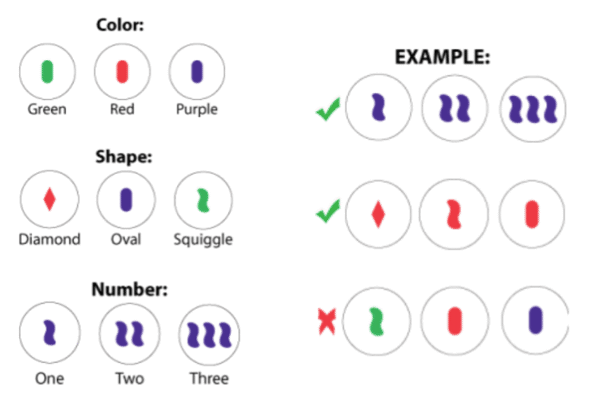
Justin Pearson
Sep 21, 2017
We use Mathematica’s image-processing functions and a little machine learning to play the pattern-matching card game “Set”.
For more information see:
http://justinppearson.com/presentations.html#a-program-to-play-the-set-card-game
https://www.setgame.com/sites/default/files/instructions/SET%20Mini%20Round%20Instructions.pdf

Enable / disable webcam usage (in case no webcam)
![Graphics:PlotLabel /. Options[{USEWEBCAM = False ;, , RowBox[{If, [, RowBox[{USEWEBCAM, ,, , Print[$ImagingDevices] ; $ImagingDevice = Logitech Camera ; currentImage[] = CurrentImage[] ;, , ,, , RowBox[{RowBox[{currentImage[], =, GraphicsBox[TagBox[RasterBox[RawArray[UnsignedInteger8, <240,320,3>], {{0, 240}, {320, 0}}, {0, 255}, ColorFunction -> RGBColor], BoxForm`ImageTag[System`Convert`CommonDump`ConvertText[Byte, System`Convert`HTMLDump`htmlsave, HTMLEntities -> {HTMLBasic}, AltMathOutput -> PlotLabel, WindowSize -> {2000, Automatic}, ManipulateOutput -> JPG, CSS -> mma.css, CharacterEncoding -> Automatic, ConversionStyleEnvironment -> None, ConversionRules -> Automatic, HeadAttributes -> {}, HeadElements -> {}, CSS -> Automatic, ConvertLinkedNotebooks -> False, MathOutput -> GIF, GraphicsOutput -> GIF, Graphics3DOutput -> Automatic, ManipulateOutput -> CDF, ConvertClosed -> True, ConvertReverseClosed -> False, FullDocument -> True, AltMathOutput -> FileName, TableOutput -> {TextForm, Automatic}, AnimationOutput -> Automatic, FilesDirectory -> HTMLFiles, LinksDirectory -> HTMLLinks, HTMLEntities -> {HTML}, AllowBlockMathML -> False, ShowStyles -> True, DataUri -> False, MathMLOptions -> {UseUnicodePlane1Characters -> False, IncludeMarkupAnnotations -> False, Entities -> MathML}], ColorSpace -> System`Convert`CommonDump`ConvertText[RGB, System`Convert`HTMLDump`htmlsave, HTMLEntities -> {HTMLBasic}, AltMathOutput -> PlotLabel, WindowSize -> {2000, Automatic}, ManipulateOutput -> JPG, CSS -> mma.css, CharacterEncoding -> Automatic, ConversionStyleEnvironment -> None, ConversionRules -> Automatic, HeadAttributes -> {}, HeadElements -> {}, CSS -> Automatic, ConvertLinkedNotebooks -> False, MathOutput -> GIF, GraphicsOutput -> GIF, Graphics3DOutput -> Automatic, ManipulateOutput -> CDF, ConvertClosed -> True, ConvertReverseClosed -> False, FullDocument -> True, AltMathOutput -> FileName, TableOutput -> {TextForm, Automatic}, AnimationOutput -> Automatic, FilesDirectory -> HTMLFiles, LinksDirectory -> HTMLLinks, HTMLEntities -> {HTML}, AllowBlockMathML -> False, ShowStyles -> True, DataUri -> False, MathMLOptions -> {UseUnicodePlane1Characters -> False, IncludeMarkupAnnotations -> False, Entities -> MathML}], Interleaving -> True], Selectable -> False], DefaultBaseStyle -> System`Convert`CommonDump`ConvertText[ImageGraphics, System`Convert`HTMLDump`htmlsave, HTMLEntities -> {HTMLBasic}, AltMathOutput -> PlotLabel, WindowSize -> {2000, Automatic}, ManipulateOutput -> JPG, CSS -> mma.css, CharacterEncoding -> Automatic, ConversionStyleEnvironment -> None, ConversionRules -> Automatic, HeadAttributes -> {}, HeadElements -> {}, CSS -> Automatic, ConvertLinkedNotebooks -> False, MathOutput -> GIF, GraphicsOutput -> GIF, Graphics3DOutput -> Automatic, ManipulateOutput -> CDF, ConvertClosed -> True, ConvertReverseClosed -> False, FullDocument -> True, AltMathOutput -> FileName, TableOutput -> {TextForm, Automatic}, AnimationOutput -> Automatic, FilesDirectory -> HTMLFiles, LinksDirectory -> HTMLLinks, HTMLEntities -> {HTML}, AllowBlockMathML -> False, ShowStyles -> True, DataUri -> False, MathMLOptions -> {UseUnicodePlane1Characters -> False, IncludeMarkupAnnotations -> False, Entities -> MathML}], ImageSizeRaw -> {320, 240}, PlotRange -> {{0, 320}, {0, 240}}]}], ;}]}], , ]}]}]](HTMLFiles/index_4.gif)
Camera calibration (do this manually)
Adjust the lighting to make the CurrentImage[] match these pictures:
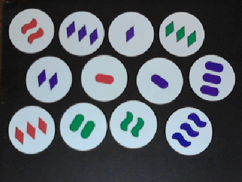
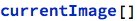

Basic definitions

Main algorithm

Examples
No args: find sets in an example image:
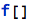

2nd arg: “debug” (show cards as you parse them):

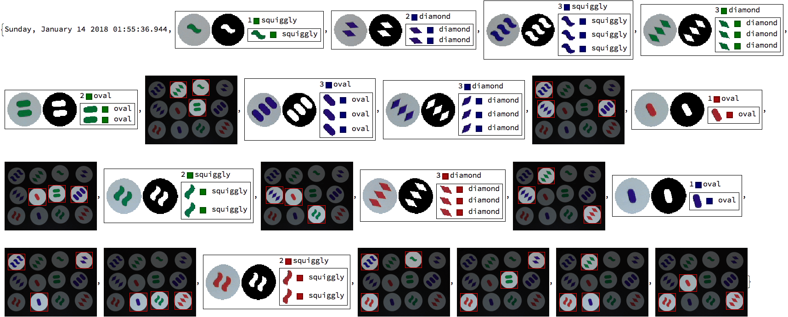
3rd arg: “quit after finding 1st set”:

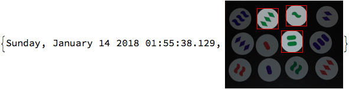
Color classifier
Simple “nearest neighbor” algorithm: blob is closest to which color?
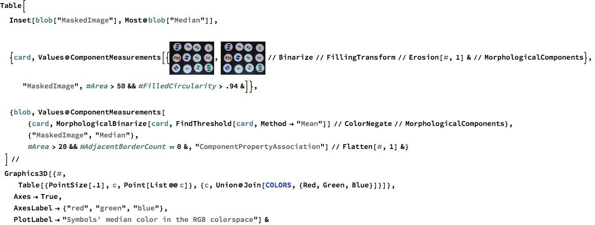
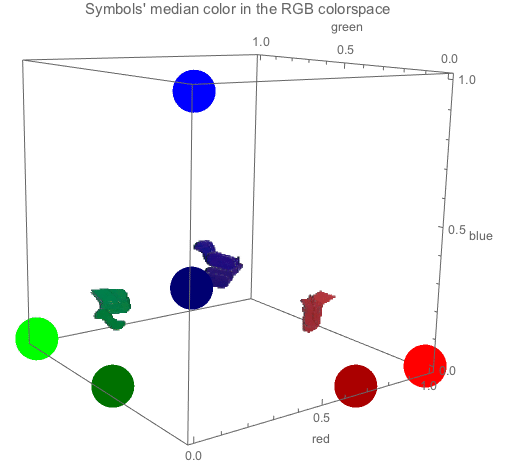
Shape classifier
We use Multinomial Logistic Regression using 4 shape properties, then train with Maximum-Likelihood Estimation of the decision boundaries.
Gather & Prep Training Data / Test Data
![Graphics:PlotLabel /. Options[{RowBox[{RowBox[{trainingFrames, =, RowBox[{{, RowBox[{GraphicsBox[TagBox[RasterBox[RawArray[UnsignedInteger8, <240,320,3>], {{0, 240}, {320, 0}}, {0, 255}, ColorFunction -> RGBColor], BoxForm`ImageTag[System`Convert`CommonDump`ConvertText[Byte, System`Convert`HTMLDump`htmlsave, HTMLEntities -> {HTMLBasic}, AltMathOutput -> PlotLabel, WindowSize -> {2000, Automatic}, ManipulateOutput -> JPG, CSS -> mma.css, CharacterEncoding -> Automatic, ConversionStyleEnvironment -> None, ConversionRules -> Automatic, HeadAttributes -> {}, HeadElements -> {}, CSS -> Automatic, ConvertLinkedNotebooks -> False, MathOutput -> GIF, GraphicsOutput -> GIF, Graphics3DOutput -> Automatic, ManipulateOutput -> CDF, ConvertClosed -> True, ConvertReverseClosed -> False, FullDocument -> True, AltMathOutput -> FileName, TableOutput -> {TextForm, Automatic}, AnimationOutput -> Automatic, FilesDirectory -> HTMLFiles, LinksDirectory -> HTMLLinks, HTMLEntities -> {HTML}, AllowBlockMathML -> False, ShowStyles -> True, DataUri -> False, MathMLOptions -> {UseUnicodePlane1Characters -> False, IncludeMarkupAnnotations -> False, Entities -> MathML}], ColorSpace -> System`Convert`CommonDump`ConvertText[RGB, System`Convert`HTMLDump`htmlsave, HTMLEntities -> {HTMLBasic}, AltMathOutput -> PlotLabel, WindowSize -> {2000, Automatic}, ManipulateOutput -> JPG, CSS -> mma.css, CharacterEncoding -> Automatic, ConversionStyleEnvironment -> None, ConversionRules -> Automatic, HeadAttributes -> {}, HeadElements -> {}, CSS -> Automatic, ConvertLinkedNotebooks -> False, MathOutput -> GIF, GraphicsOutput -> GIF, Graphics3DOutput -> Automatic, ManipulateOutput -> CDF, ConvertClosed -> True, ConvertReverseClosed -> False, FullDocument -> True, AltMathOutput -> FileName, TableOutput -> {TextForm, Automatic}, AnimationOutput -> Automatic, FilesDirectory -> HTMLFiles, LinksDirectory -> HTMLLinks, HTMLEntities -> {HTML}, AllowBlockMathML -> False, ShowStyles -> True, DataUri -> False, MathMLOptions -> {UseUnicodePlane1Characters -> False, IncludeMarkupAnnotations -> False, Entities -> MathML}], Interleaving -> True], Selectable -> False], DefaultBaseStyle -> System`Convert`CommonDump`ConvertText[ImageGraphics, System`Convert`HTMLDump`htmlsave, HTMLEntities -> {HTMLBasic}, AltMathOutput -> PlotLabel, WindowSize -> {2000, Automatic}, ManipulateOutput -> JPG, CSS -> mma.css, CharacterEncoding -> Automatic, ConversionStyleEnvironment -> None, ConversionRules -> Automatic, HeadAttributes -> {}, HeadElements -> {}, CSS -> Automatic, ConvertLinkedNotebooks -> False, MathOutput -> GIF, GraphicsOutput -> GIF, Graphics3DOutput -> Automatic, ManipulateOutput -> CDF, ConvertClosed -> True, ConvertReverseClosed -> False, FullDocument -> True, AltMathOutput -> FileName, TableOutput -> {TextForm, Automatic}, AnimationOutput -> Automatic, FilesDirectory -> HTMLFiles, LinksDirectory -> HTMLLinks, HTMLEntities -> {HTML}, AllowBlockMathML -> False, ShowStyles -> True, DataUri -> False, MathMLOptions -> {UseUnicodePlane1Characters -> False, IncludeMarkupAnnotations -> False, Entities -> MathML}], ImageSize -> Automatic, ImageSizeRaw -> {320, 240}, PlotRange -> {{0, 320}, {0, 240}}], ,, GraphicsBox[TagBox[RasterBox[RawArray[UnsignedInteger8, <240,320,3>], {{0, 240}, {320, 0}}, {0, 255}, ColorFunction -> RGBColor], BoxForm`ImageTag[System`Convert`CommonDump`ConvertText[Byte, System`Convert`HTMLDump`htmlsave, HTMLEntities -> {HTMLBasic}, AltMathOutput -> PlotLabel, WindowSize -> {2000, Automatic}, ManipulateOutput -> JPG, CSS -> mma.css, CharacterEncoding -> Automatic, ConversionStyleEnvironment -> None, ConversionRules -> Automatic, HeadAttributes -> {}, HeadElements -> {}, CSS -> Automatic, ConvertLinkedNotebooks -> False, MathOutput -> GIF, GraphicsOutput -> GIF, Graphics3DOutput -> Automatic, ManipulateOutput -> CDF, ConvertClosed -> True, ConvertReverseClosed -> False, FullDocument -> True, AltMathOutput -> FileName, TableOutput -> {TextForm, Automatic}, AnimationOutput -> Automatic, FilesDirectory -> HTMLFiles, LinksDirectory -> HTMLLinks, HTMLEntities -> {HTML}, AllowBlockMathML -> False, ShowStyles -> True, DataUri -> False, MathMLOptions -> {UseUnicodePlane1Characters -> False, IncludeMarkupAnnotations -> False, Entities -> MathML}], ColorSpace -> System`Convert`CommonDump`ConvertText[RGB, System`Convert`HTMLDump`htmlsave, HTMLEntities -> {HTMLBasic}, AltMathOutput -> PlotLabel, WindowSize -> {2000, Automatic}, ManipulateOutput -> JPG, CSS -> mma.css, CharacterEncoding -> Automatic, ConversionStyleEnvironment -> None, ConversionRules -> Automatic, HeadAttributes -> {}, HeadElements -> {}, CSS -> Automatic, ConvertLinkedNotebooks -> False, MathOutput -> GIF, GraphicsOutput -> GIF, Graphics3DOutput -> Automatic, ManipulateOutput -> CDF, ConvertClosed -> True, ConvertReverseClosed -> False, FullDocument -> True, AltMathOutput -> FileName, TableOutput -> {TextForm, Automatic}, AnimationOutput -> Automatic, FilesDirectory -> HTMLFiles, LinksDirectory -> HTMLLinks, HTMLEntities -> {HTML}, AllowBlockMathML -> False, ShowStyles -> True, DataUri -> False, MathMLOptions -> {UseUnicodePlane1Characters -> False, IncludeMarkupAnnotations -> False, Entities -> MathML}], Interleaving -> True], Selectable -> False], DefaultBaseStyle -> System`Convert`CommonDump`ConvertText[ImageGraphics, System`Convert`HTMLDump`htmlsave, HTMLEntities -> {HTMLBasic}, AltMathOutput -> PlotLabel, WindowSize -> {2000, Automatic}, ManipulateOutput -> JPG, CSS -> mma.css, CharacterEncoding -> Automatic, ConversionStyleEnvironment -> None, ConversionRules -> Automatic, HeadAttributes -> {}, HeadElements -> {}, CSS -> Automatic, ConvertLinkedNotebooks -> False, MathOutput -> GIF, GraphicsOutput -> GIF, Graphics3DOutput -> Automatic, ManipulateOutput -> CDF, ConvertClosed -> True, ConvertReverseClosed -> False, FullDocument -> True, AltMathOutput -> FileName, TableOutput -> {TextForm, Automatic}, AnimationOutput -> Automatic, FilesDirectory -> HTMLFiles, LinksDirectory -> HTMLLinks, HTMLEntities -> {HTML}, AllowBlockMathML -> False, ShowStyles -> True, DataUri -> False, MathMLOptions -> {UseUnicodePlane1Characters -> False, IncludeMarkupAnnotations -> False, Entities -> MathML}], ImageSize -> Automatic, ImageSizeRaw -> {320, 240}, PlotRange -> {{0, 320}, {0, 240}}], ,, GraphicsBox[TagBox[RasterBox[RawArray[UnsignedInteger8, <240,320,3>], {{0, 240}, {320, 0}}, {0, 255}, ColorFunction -> RGBColor], BoxForm`ImageTag[System`Convert`CommonDump`ConvertText[Byte, System`Convert`HTMLDump`htmlsave, HTMLEntities -> {HTMLBasic}, AltMathOutput -> PlotLabel, WindowSize -> {2000, Automatic}, ManipulateOutput -> JPG, CSS -> mma.css, CharacterEncoding -> Automatic, ConversionStyleEnvironment -> None, ConversionRules -> Automatic, HeadAttributes -> {}, HeadElements -> {}, CSS -> Automatic, ConvertLinkedNotebooks -> False, MathOutput -> GIF, GraphicsOutput -> GIF, Graphics3DOutput -> Automatic, ManipulateOutput -> CDF, ConvertClosed -> True, ConvertReverseClosed -> False, FullDocument -> True, AltMathOutput -> FileName, TableOutput -> {TextForm, Automatic}, AnimationOutput -> Automatic, FilesDirectory -> HTMLFiles, LinksDirectory -> HTMLLinks, HTMLEntities -> {HTML}, AllowBlockMathML -> False, ShowStyles -> True, DataUri -> False, MathMLOptions -> {UseUnicodePlane1Characters -> False, IncludeMarkupAnnotations -> False, Entities -> MathML}], ColorSpace -> System`Convert`CommonDump`ConvertText[RGB, System`Convert`HTMLDump`htmlsave, HTMLEntities -> {HTMLBasic}, AltMathOutput -> PlotLabel, WindowSize -> {2000, Automatic}, ManipulateOutput -> JPG, CSS -> mma.css, CharacterEncoding -> Automatic, ConversionStyleEnvironment -> None, ConversionRules -> Automatic, HeadAttributes -> {}, HeadElements -> {}, CSS -> Automatic, ConvertLinkedNotebooks -> False, MathOutput -> GIF, GraphicsOutput -> GIF, Graphics3DOutput -> Automatic, ManipulateOutput -> CDF, ConvertClosed -> True, ConvertReverseClosed -> False, FullDocument -> True, AltMathOutput -> FileName, TableOutput -> {TextForm, Automatic}, AnimationOutput -> Automatic, FilesDirectory -> HTMLFiles, LinksDirectory -> HTMLLinks, HTMLEntities -> {HTML}, AllowBlockMathML -> False, ShowStyles -> True, DataUri -> False, MathMLOptions -> {UseUnicodePlane1Characters -> False, IncludeMarkupAnnotations -> False, Entities -> MathML}], Interleaving -> True], Selectable -> False], DefaultBaseStyle -> System`Convert`CommonDump`ConvertText[ImageGraphics, System`Convert`HTMLDump`htmlsave, HTMLEntities -> {HTMLBasic}, AltMathOutput -> PlotLabel, WindowSize -> {2000, Automatic}, ManipulateOutput -> JPG, CSS -> mma.css, CharacterEncoding -> Automatic, ConversionStyleEnvironment -> None, ConversionRules -> Automatic, HeadAttributes -> {}, HeadElements -> {}, CSS -> Automatic, ConvertLinkedNotebooks -> False, MathOutput -> GIF, GraphicsOutput -> GIF, Graphics3DOutput -> Automatic, ManipulateOutput -> CDF, ConvertClosed -> True, ConvertReverseClosed -> False, FullDocument -> True, AltMathOutput -> FileName, TableOutput -> {TextForm, Automatic}, AnimationOutput -> Automatic, FilesDirectory -> HTMLFiles, LinksDirectory -> HTMLLinks, HTMLEntities -> {HTML}, AllowBlockMathML -> False, ShowStyles -> True, DataUri -> False, MathMLOptions -> {UseUnicodePlane1Characters -> False, IncludeMarkupAnnotations -> False, Entities -> MathML}], ImageSize -> Automatic, ImageSizeRaw -> {320, 240}, PlotRange -> {{0, 320}, {0, 240}}], ,, GraphicsBox[TagBox[RasterBox[RawArray[UnsignedInteger8, <240,320,3>], {{0, 240}, {320, 0}}, {0, 255}, ColorFunction -> RGBColor], BoxForm`ImageTag[System`Convert`CommonDump`ConvertText[Byte, System`Convert`HTMLDump`htmlsave, HTMLEntities -> {HTMLBasic}, AltMathOutput -> PlotLabel, WindowSize -> {2000, Automatic}, ManipulateOutput -> JPG, CSS -> mma.css, CharacterEncoding -> Automatic, ConversionStyleEnvironment -> None, ConversionRules -> Automatic, HeadAttributes -> {}, HeadElements -> {}, CSS -> Automatic, ConvertLinkedNotebooks -> False, MathOutput -> GIF, GraphicsOutput -> GIF, Graphics3DOutput -> Automatic, ManipulateOutput -> CDF, ConvertClosed -> True, ConvertReverseClosed -> False, FullDocument -> True, AltMathOutput -> FileName, TableOutput -> {TextForm, Automatic}, AnimationOutput -> Automatic, FilesDirectory -> HTMLFiles, LinksDirectory -> HTMLLinks, HTMLEntities -> {HTML}, AllowBlockMathML -> False, ShowStyles -> True, DataUri -> False, MathMLOptions -> {UseUnicodePlane1Characters -> False, IncludeMarkupAnnotations -> False, Entities -> MathML}], ColorSpace -> System`Convert`CommonDump`ConvertText[RGB, System`Convert`HTMLDump`htmlsave, HTMLEntities -> {HTMLBasic}, AltMathOutput -> PlotLabel, WindowSize -> {2000, Automatic}, ManipulateOutput -> JPG, CSS -> mma.css, CharacterEncoding -> Automatic, ConversionStyleEnvironment -> None, ConversionRules -> Automatic, HeadAttributes -> {}, HeadElements -> {}, CSS -> Automatic, ConvertLinkedNotebooks -> False, MathOutput -> GIF, GraphicsOutput -> GIF, Graphics3DOutput -> Automatic, ManipulateOutput -> CDF, ConvertClosed -> True, ConvertReverseClosed -> False, FullDocument -> True, AltMathOutput -> FileName, TableOutput -> {TextForm, Automatic}, AnimationOutput -> Automatic, FilesDirectory -> HTMLFiles, LinksDirectory -> HTMLLinks, HTMLEntities -> {HTML}, AllowBlockMathML -> False, ShowStyles -> True, DataUri -> False, MathMLOptions -> {UseUnicodePlane1Characters -> False, IncludeMarkupAnnotations -> False, Entities -> MathML}], Interleaving -> True], Selectable -> False], DefaultBaseStyle -> System`Convert`CommonDump`ConvertText[ImageGraphics, System`Convert`HTMLDump`htmlsave, HTMLEntities -> {HTMLBasic}, AltMathOutput -> PlotLabel, WindowSize -> {2000, Automatic}, ManipulateOutput -> JPG, CSS -> mma.css, CharacterEncoding -> Automatic, ConversionStyleEnvironment -> None, ConversionRules -> Automatic, HeadAttributes -> {}, HeadElements -> {}, CSS -> Automatic, ConvertLinkedNotebooks -> False, MathOutput -> GIF, GraphicsOutput -> GIF, Graphics3DOutput -> Automatic, ManipulateOutput -> CDF, ConvertClosed -> True, ConvertReverseClosed -> False, FullDocument -> True, AltMathOutput -> FileName, TableOutput -> {TextForm, Automatic}, AnimationOutput -> Automatic, FilesDirectory -> HTMLFiles, LinksDirectory -> HTMLLinks, HTMLEntities -> {HTML}, AllowBlockMathML -> False, ShowStyles -> True, DataUri -> False, MathMLOptions -> {UseUnicodePlane1Characters -> False, IncludeMarkupAnnotations -> False, Entities -> MathML}], ImageSize -> Automatic, ImageSizeRaw -> {320, 240}, PlotRange -> {{0, 320}, {0, 240}}]}], }}]}], ;}], , RowBox[{RowBox[{testFrames, =, RowBox[{{, RowBox[{GraphicsBox[TagBox[RasterBox[RawArray[UnsignedInteger8, <240,320,3>], {{0, 240}, {320, 0}}, {0, 255}, ColorFunction -> RGBColor], BoxForm`ImageTag[System`Convert`CommonDump`ConvertText[Byte, System`Convert`HTMLDump`htmlsave, HTMLEntities -> {HTMLBasic}, AltMathOutput -> PlotLabel, WindowSize -> {2000, Automatic}, ManipulateOutput -> JPG, CSS -> mma.css, CharacterEncoding -> Automatic, ConversionStyleEnvironment -> None, ConversionRules -> Automatic, HeadAttributes -> {}, HeadElements -> {}, CSS -> Automatic, ConvertLinkedNotebooks -> False, MathOutput -> GIF, GraphicsOutput -> GIF, Graphics3DOutput -> Automatic, ManipulateOutput -> CDF, ConvertClosed -> True, ConvertReverseClosed -> False, FullDocument -> True, AltMathOutput -> FileName, TableOutput -> {TextForm, Automatic}, AnimationOutput -> Automatic, FilesDirectory -> HTMLFiles, LinksDirectory -> HTMLLinks, HTMLEntities -> {HTML}, AllowBlockMathML -> False, ShowStyles -> True, DataUri -> False, MathMLOptions -> {UseUnicodePlane1Characters -> False, IncludeMarkupAnnotations -> False, Entities -> MathML}], ColorSpace -> System`Convert`CommonDump`ConvertText[RGB, System`Convert`HTMLDump`htmlsave, HTMLEntities -> {HTMLBasic}, AltMathOutput -> PlotLabel, WindowSize -> {2000, Automatic}, ManipulateOutput -> JPG, CSS -> mma.css, CharacterEncoding -> Automatic, ConversionStyleEnvironment -> None, ConversionRules -> Automatic, HeadAttributes -> {}, HeadElements -> {}, CSS -> Automatic, ConvertLinkedNotebooks -> False, MathOutput -> GIF, GraphicsOutput -> GIF, Graphics3DOutput -> Automatic, ManipulateOutput -> CDF, ConvertClosed -> True, ConvertReverseClosed -> False, FullDocument -> True, AltMathOutput -> FileName, TableOutput -> {TextForm, Automatic}, AnimationOutput -> Automatic, FilesDirectory -> HTMLFiles, LinksDirectory -> HTMLLinks, HTMLEntities -> {HTML}, AllowBlockMathML -> False, ShowStyles -> True, DataUri -> False, MathMLOptions -> {UseUnicodePlane1Characters -> False, IncludeMarkupAnnotations -> False, Entities -> MathML}], Interleaving -> True], Selectable -> False], DefaultBaseStyle -> System`Convert`CommonDump`ConvertText[ImageGraphics, System`Convert`HTMLDump`htmlsave, HTMLEntities -> {HTMLBasic}, AltMathOutput -> PlotLabel, WindowSize -> {2000, Automatic}, ManipulateOutput -> JPG, CSS -> mma.css, CharacterEncoding -> Automatic, ConversionStyleEnvironment -> None, ConversionRules -> Automatic, HeadAttributes -> {}, HeadElements -> {}, CSS -> Automatic, ConvertLinkedNotebooks -> False, MathOutput -> GIF, GraphicsOutput -> GIF, Graphics3DOutput -> Automatic, ManipulateOutput -> CDF, ConvertClosed -> True, ConvertReverseClosed -> False, FullDocument -> True, AltMathOutput -> FileName, TableOutput -> {TextForm, Automatic}, AnimationOutput -> Automatic, FilesDirectory -> HTMLFiles, LinksDirectory -> HTMLLinks, HTMLEntities -> {HTML}, AllowBlockMathML -> False, ShowStyles -> True, DataUri -> False, MathMLOptions -> {UseUnicodePlane1Characters -> False, IncludeMarkupAnnotations -> False, Entities -> MathML}], ImageSize -> Automatic, ImageSizeRaw -> {320, 240}, PlotRange -> {{0, 320}, {0, 240}}], ,, GraphicsBox[TagBox[RasterBox[RawArray[UnsignedInteger8, <240,320,3>], {{0, 240}, {320, 0}}, {0, 255}, ColorFunction -> RGBColor], BoxForm`ImageTag[System`Convert`CommonDump`ConvertText[Byte, System`Convert`HTMLDump`htmlsave, HTMLEntities -> {HTMLBasic}, AltMathOutput -> PlotLabel, WindowSize -> {2000, Automatic}, ManipulateOutput -> JPG, CSS -> mma.css, CharacterEncoding -> Automatic, ConversionStyleEnvironment -> None, ConversionRules -> Automatic, HeadAttributes -> {}, HeadElements -> {}, CSS -> Automatic, ConvertLinkedNotebooks -> False, MathOutput -> GIF, GraphicsOutput -> GIF, Graphics3DOutput -> Automatic, ManipulateOutput -> CDF, ConvertClosed -> True, ConvertReverseClosed -> False, FullDocument -> True, AltMathOutput -> FileName, TableOutput -> {TextForm, Automatic}, AnimationOutput -> Automatic, FilesDirectory -> HTMLFiles, LinksDirectory -> HTMLLinks, HTMLEntities -> {HTML}, AllowBlockMathML -> False, ShowStyles -> True, DataUri -> False, MathMLOptions -> {UseUnicodePlane1Characters -> False, IncludeMarkupAnnotations -> False, Entities -> MathML}], ColorSpace -> System`Convert`CommonDump`ConvertText[RGB, System`Convert`HTMLDump`htmlsave, HTMLEntities -> {HTMLBasic}, AltMathOutput -> PlotLabel, WindowSize -> {2000, Automatic}, ManipulateOutput -> JPG, CSS -> mma.css, CharacterEncoding -> Automatic, ConversionStyleEnvironment -> None, ConversionRules -> Automatic, HeadAttributes -> {}, HeadElements -> {}, CSS -> Automatic, ConvertLinkedNotebooks -> False, MathOutput -> GIF, GraphicsOutput -> GIF, Graphics3DOutput -> Automatic, ManipulateOutput -> CDF, ConvertClosed -> True, ConvertReverseClosed -> False, FullDocument -> True, AltMathOutput -> FileName, TableOutput -> {TextForm, Automatic}, AnimationOutput -> Automatic, FilesDirectory -> HTMLFiles, LinksDirectory -> HTMLLinks, HTMLEntities -> {HTML}, AllowBlockMathML -> False, ShowStyles -> True, DataUri -> False, MathMLOptions -> {UseUnicodePlane1Characters -> False, IncludeMarkupAnnotations -> False, Entities -> MathML}], Interleaving -> True], Selectable -> False], DefaultBaseStyle -> System`Convert`CommonDump`ConvertText[ImageGraphics, System`Convert`HTMLDump`htmlsave, HTMLEntities -> {HTMLBasic}, AltMathOutput -> PlotLabel, WindowSize -> {2000, Automatic}, ManipulateOutput -> JPG, CSS -> mma.css, CharacterEncoding -> Automatic, ConversionStyleEnvironment -> None, ConversionRules -> Automatic, HeadAttributes -> {}, HeadElements -> {}, CSS -> Automatic, ConvertLinkedNotebooks -> False, MathOutput -> GIF, GraphicsOutput -> GIF, Graphics3DOutput -> Automatic, ManipulateOutput -> CDF, ConvertClosed -> True, ConvertReverseClosed -> False, FullDocument -> True, AltMathOutput -> FileName, TableOutput -> {TextForm, Automatic}, AnimationOutput -> Automatic, FilesDirectory -> HTMLFiles, LinksDirectory -> HTMLLinks, HTMLEntities -> {HTML}, AllowBlockMathML -> False, ShowStyles -> True, DataUri -> False, MathMLOptions -> {UseUnicodePlane1Characters -> False, IncludeMarkupAnnotations -> False, Entities -> MathML}], ImageSize -> Automatic, ImageSizeRaw -> {320, 240}, PlotRange -> {{0, 320}, {0, 240}}]}], }}]}], ;}]}]](HTMLFiles/index_18.gif)
“Training” frames:
![Graphics:PlotLabel /. Options[{RowBox[{RowBox[{trainBlobs, =, RowBox[{{, RowBox[{GraphicsBox[TagBox[RasterBox[RawArray[UnsignedInteger8, <16,25,4>], {{0, 16}, {25, 0}}, {0, 255}, ColorFunction -> RGBColor], BoxForm`ImageTag[System`Convert`CommonDump`ConvertText[Byte, System`Convert`HTMLDump`htmlsave, HTMLEntities -> {HTMLBasic}, AltMathOutput -> PlotLabel, WindowSize -> {2000, Automatic}, ManipulateOutput -> JPG, CSS -> mma.css, CharacterEncoding -> Automatic, ConversionStyleEnvironment -> None, ConversionRules -> Automatic, HeadAttributes -> {}, HeadElements -> {}, CSS -> Automatic, ConvertLinkedNotebooks -> False, MathOutput -> GIF, GraphicsOutput -> GIF, Graphics3DOutput -> Automatic, ManipulateOutput -> CDF, ConvertClosed -> True, ConvertReverseClosed -> False, FullDocument -> True, AltMathOutput -> FileName, TableOutput -> {TextForm, Automatic}, AnimationOutput -> Automatic, FilesDirectory -> HTMLFiles, LinksDirectory -> HTMLLinks, HTMLEntities -> {HTML}, AllowBlockMathML -> False, ShowStyles -> True, DataUri -> False, MathMLOptions -> {UseUnicodePlane1Characters -> False, IncludeMarkupAnnotations -> False, Entities -> MathML}], ColorSpace -> System`Convert`CommonDump`ConvertText[RGB, System`Convert`HTMLDump`htmlsave, HTMLEntities -> {HTMLBasic}, AltMathOutput -> PlotLabel, WindowSize -> {2000, Automatic}, ManipulateOutput -> JPG, CSS -> mma.css, CharacterEncoding -> Automatic, ConversionStyleEnvironment -> None, ConversionRules -> Automatic, HeadAttributes -> {}, HeadElements -> {}, CSS -> Automatic, ConvertLinkedNotebooks -> False, MathOutput -> GIF, GraphicsOutput -> GIF, Graphics3DOutput -> Automatic, ManipulateOutput -> CDF, ConvertClosed -> True, ConvertReverseClosed -> False, FullDocument -> True, AltMathOutput -> FileName, TableOutput -> {TextForm, Automatic}, AnimationOutput -> Automatic, FilesDirectory -> HTMLFiles, LinksDirectory -> HTMLLinks, HTMLEntities -> {HTML}, AllowBlockMathML -> False, ShowStyles -> True, DataUri -> False, MathMLOptions -> {UseUnicodePlane1Characters -> False, IncludeMarkupAnnotations -> False, Entities -> MathML}], Interleaving -> False, Magnification -> Automatic], Selectable -> False], DefaultBaseStyle -> System`Convert`CommonDump`ConvertText[ImageGraphics, System`Convert`HTMLDump`htmlsave, HTMLEntities -> {HTMLBasic}, AltMathOutput -> PlotLabel, WindowSize -> {2000, Automatic}, ManipulateOutput -> JPG, CSS -> mma.css, CharacterEncoding -> Automatic, ConversionStyleEnvironment -> None, ConversionRules -> Automatic, HeadAttributes -> {}, HeadElements -> {}, CSS -> Automatic, ConvertLinkedNotebooks -> False, MathOutput -> GIF, GraphicsOutput -> GIF, Graphics3DOutput -> Automatic, ManipulateOutput -> CDF, ConvertClosed -> True, ConvertReverseClosed -> False, FullDocument -> True, AltMathOutput -> FileName, TableOutput -> {TextForm, Automatic}, AnimationOutput -> Automatic, FilesDirectory -> HTMLFiles, LinksDirectory -> HTMLLinks, HTMLEntities -> {HTML}, AllowBlockMathML -> False, ShowStyles -> True, DataUri -> False, MathMLOptions -> {UseUnicodePlane1Characters -> False, IncludeMarkupAnnotations -> False, Entities -> MathML}], ImageSize -> Automatic, ImageSizeRaw -> {25, 16}, PlotRange -> {{0, 25}, {0, 16}}], ,, GraphicsBox[TagBox[RasterBox[RawArray[UnsignedInteger8, <11,22,4>], {{0, 11}, {22, 0}}, {0, 255}, ColorFunction -> RGBColor], BoxForm`ImageTag[System`Convert`CommonDump`ConvertText[Byte, System`Convert`HTMLDump`htmlsave, HTMLEntities -> {HTMLBasic}, AltMathOutput -> PlotLabel, WindowSize -> {2000, Automatic}, ManipulateOutput -> JPG, CSS -> mma.css, CharacterEncoding -> Automatic, ConversionStyleEnvironment -> None, ConversionRules -> Automatic, HeadAttributes -> {}, HeadElements -> {}, CSS -> Automatic, ConvertLinkedNotebooks -> False, MathOutput -> GIF, GraphicsOutput -> GIF, Graphics3DOutput -> Automatic, ManipulateOutput -> CDF, ConvertClosed -> True, ConvertReverseClosed -> False, FullDocument -> True, AltMathOutput -> FileName, TableOutput -> {TextForm, Automatic}, AnimationOutput -> Automatic, FilesDirectory -> HTMLFiles, LinksDirectory -> HTMLLinks, HTMLEntities -> {HTML}, AllowBlockMathML -> False, ShowStyles -> True, DataUri -> False, MathMLOptions -> {UseUnicodePlane1Characters -> False, IncludeMarkupAnnotations -> False, Entities -> MathML}], ColorSpace -> System`Convert`CommonDump`ConvertText[RGB, System`Convert`HTMLDump`htmlsave, HTMLEntities -> {HTMLBasic}, AltMathOutput -> PlotLabel, WindowSize -> {2000, Automatic}, ManipulateOutput -> JPG, CSS -> mma.css, CharacterEncoding -> Automatic, ConversionStyleEnvironment -> None, ConversionRules -> Automatic, HeadAttributes -> {}, HeadElements -> {}, CSS -> Automatic, ConvertLinkedNotebooks -> False, MathOutput -> GIF, GraphicsOutput -> GIF, Graphics3DOutput -> Automatic, ManipulateOutput -> CDF, ConvertClosed -> True, ConvertReverseClosed -> False, FullDocument -> True, AltMathOutput -> FileName, TableOutput -> {TextForm, Automatic}, AnimationOutput -> Automatic, FilesDirectory -> HTMLFiles, LinksDirectory -> HTMLLinks, HTMLEntities -> {HTML}, AllowBlockMathML -> False, ShowStyles -> True, DataUri -> False, MathMLOptions -> {UseUnicodePlane1Characters -> False, IncludeMarkupAnnotations -> False, Entities -> MathML}], Interleaving -> False, Magnification -> Automatic], Selectable -> False], DefaultBaseStyle -> System`Convert`CommonDump`ConvertText[ImageGraphics, System`Convert`HTMLDump`htmlsave, HTMLEntities -> {HTMLBasic}, AltMathOutput -> PlotLabel, WindowSize -> {2000, Automatic}, ManipulateOutput -> JPG, CSS -> mma.css, CharacterEncoding -> Automatic, ConversionStyleEnvironment -> None, ConversionRules -> Automatic, HeadAttributes -> {}, HeadElements -> {}, CSS -> Automatic, ConvertLinkedNotebooks -> False, MathOutput -> GIF, GraphicsOutput -> GIF, Graphics3DOutput -> Automatic, ManipulateOutput -> CDF, ConvertClosed -> True, ConvertReverseClosed -> False, FullDocument -> True, AltMathOutput -> FileName, TableOutput -> {TextForm, Automatic}, AnimationOutput -> Automatic, FilesDirectory -> HTMLFiles, LinksDirectory -> HTMLLinks, HTMLEntities -> {HTML}, AllowBlockMathML -> False, ShowStyles -> True, DataUri -> False, MathMLOptions -> {UseUnicodePlane1Characters -> False, IncludeMarkupAnnotations -> False, Entities -> MathML}], ImageSize -> Automatic, ImageSizeRaw -> {22, 11}, PlotRange -> {{0, 22}, {0, 11}}], ,, GraphicsBox[TagBox[RasterBox[RawArray[UnsignedInteger8, <11,23,4>], {{0, 11}, {23, 0}}, {0, 255}, ColorFunction -> RGBColor], BoxForm`ImageTag[System`Convert`CommonDump`ConvertText[Byte, System`Convert`HTMLDump`htmlsave, HTMLEntities -> {HTMLBasic}, AltMathOutput -> PlotLabel, WindowSize -> {2000, Automatic}, ManipulateOutput -> JPG, CSS -> mma.css, CharacterEncoding -> Automatic, ConversionStyleEnvironment -> None, ConversionRules -> Automatic, HeadAttributes -> {}, HeadElements -> {}, CSS -> Automatic, ConvertLinkedNotebooks -> False, MathOutput -> GIF, GraphicsOutput -> GIF, Graphics3DOutput -> Automatic, ManipulateOutput -> CDF, ConvertClosed -> True, ConvertReverseClosed -> False, FullDocument -> True, AltMathOutput -> FileName, TableOutput -> {TextForm, Automatic}, AnimationOutput -> Automatic, FilesDirectory -> HTMLFiles, LinksDirectory -> HTMLLinks, HTMLEntities -> {HTML}, AllowBlockMathML -> False, ShowStyles -> True, DataUri -> False, MathMLOptions -> {UseUnicodePlane1Characters -> False, IncludeMarkupAnnotations -> False, Entities -> MathML}], ColorSpace -> System`Convert`CommonDump`ConvertText[RGB, System`Convert`HTMLDump`htmlsave, HTMLEntities -> {HTMLBasic}, AltMathOutput -> PlotLabel, WindowSize -> {2000, Automatic}, ManipulateOutput -> JPG, CSS -> mma.css, CharacterEncoding -> Automatic, ConversionStyleEnvironment -> None, ConversionRules -> Automatic, HeadAttributes -> {}, HeadElements -> {}, CSS -> Automatic, ConvertLinkedNotebooks -> False, MathOutput -> GIF, GraphicsOutput -> GIF, Graphics3DOutput -> Automatic, ManipulateOutput -> CDF, ConvertClosed -> True, ConvertReverseClosed -> False, FullDocument -> True, AltMathOutput -> FileName, TableOutput -> {TextForm, Automatic}, AnimationOutput -> Automatic, FilesDirectory -> HTMLFiles, LinksDirectory -> HTMLLinks, HTMLEntities -> {HTML}, AllowBlockMathML -> False, ShowStyles -> True, DataUri -> False, MathMLOptions -> {UseUnicodePlane1Characters -> False, IncludeMarkupAnnotations -> False, Entities -> MathML}], Interleaving -> False, Magnification -> Automatic], Selectable -> False], DefaultBaseStyle -> System`Convert`CommonDump`ConvertText[ImageGraphics, System`Convert`HTMLDump`htmlsave, HTMLEntities -> {HTMLBasic}, AltMathOutput -> PlotLabel, WindowSize -> {2000, Automatic}, ManipulateOutput -> JPG, CSS -> mma.css, CharacterEncoding -> Automatic, ConversionStyleEnvironment -> None, ConversionRules -> Automatic, HeadAttributes -> {}, HeadElements -> {}, CSS -> Automatic, ConvertLinkedNotebooks -> False, MathOutput -> GIF, GraphicsOutput -> GIF, Graphics3DOutput -> Automatic, ManipulateOutput -> CDF, ConvertClosed -> True, ConvertReverseClosed -> False, FullDocument -> True, AltMathOutput -> FileName, TableOutput -> {TextForm, Automatic}, AnimationOutput -> Automatic, FilesDirectory -> HTMLFiles, LinksDirectory -> HTMLLinks, HTMLEntities -> {HTML}, AllowBlockMathML -> False, ShowStyles -> True, DataUri -> False, MathMLOptions -> {UseUnicodePlane1Characters -> False, IncludeMarkupAnnotations -> False, Entities -> MathML}], ImageSize -> Automatic, ImageSizeRaw -> {23, 11}, PlotRange -> {{0, 23}, {0, 11}}], ,, GraphicsBox[TagBox[RasterBox[RawArray[UnsignedInteger8, <18,23,4>], {{0, 18}, {23, 0}}, {0, 255}, ColorFunction -> RGBColor], BoxForm`ImageTag[System`Convert`CommonDump`ConvertText[Byte, System`Convert`HTMLDump`htmlsave, HTMLEntities -> {HTMLBasic}, AltMathOutput -> PlotLabel, WindowSize -> {2000, Automatic}, ManipulateOutput -> JPG, CSS -> mma.css, CharacterEncoding -> Automatic, ConversionStyleEnvironment -> None, ConversionRules -> Automatic, HeadAttributes -> {}, HeadElements -> {}, CSS -> Automatic, ConvertLinkedNotebooks -> False, MathOutput -> GIF, GraphicsOutput -> GIF, Graphics3DOutput -> Automatic, ManipulateOutput -> CDF, ConvertClosed -> True, ConvertReverseClosed -> False, FullDocument -> True, AltMathOutput -> FileName, TableOutput -> {TextForm, Automatic}, AnimationOutput -> Automatic, FilesDirectory -> HTMLFiles, LinksDirectory -> HTMLLinks, HTMLEntities -> {HTML}, AllowBlockMathML -> False, ShowStyles -> True, DataUri -> False, MathMLOptions -> {UseUnicodePlane1Characters -> False, IncludeMarkupAnnotations -> False, Entities -> MathML}], ColorSpace -> System`Convert`CommonDump`ConvertText[RGB, System`Convert`HTMLDump`htmlsave, HTMLEntities -> {HTMLBasic}, AltMathOutput -> PlotLabel, WindowSize -> {2000, Automatic}, ManipulateOutput -> JPG, CSS -> mma.css, CharacterEncoding -> Automatic, ConversionStyleEnvironment -> None, ConversionRules -> Automatic, HeadAttributes -> {}, HeadElements -> {}, CSS -> Automatic, ConvertLinkedNotebooks -> False, MathOutput -> GIF, GraphicsOutput -> GIF, Graphics3DOutput -> Automatic, ManipulateOutput -> CDF, ConvertClosed -> True, ConvertReverseClosed -> False, FullDocument -> True, AltMathOutput -> FileName, TableOutput -> {TextForm, Automatic}, AnimationOutput -> Automatic, FilesDirectory -> HTMLFiles, LinksDirectory -> HTMLLinks, HTMLEntities -> {HTML}, AllowBlockMathML -> False, ShowStyles -> True, DataUri -> False, MathMLOptions -> {UseUnicodePlane1Characters -> False, IncludeMarkupAnnotations -> False, Entities -> MathML}], Interleaving -> False, Magnification -> Automatic], Selectable -> False], DefaultBaseStyle -> System`Convert`CommonDump`ConvertText[ImageGraphics, System`Convert`HTMLDump`htmlsave, HTMLEntities -> {HTMLBasic}, AltMathOutput -> PlotLabel, WindowSize -> {2000, Automatic}, ManipulateOutput -> JPG, CSS -> mma.css, CharacterEncoding -> Automatic, ConversionStyleEnvironment -> None, ConversionRules -> Automatic, HeadAttributes -> {}, HeadElements -> {}, CSS -> Automatic, ConvertLinkedNotebooks -> False, MathOutput -> GIF, GraphicsOutput -> GIF, Graphics3DOutput -> Automatic, ManipulateOutput -> CDF, ConvertClosed -> True, ConvertReverseClosed -> False, FullDocument -> True, AltMathOutput -> FileName, TableOutput -> {TextForm, Automatic}, AnimationOutput -> Automatic, FilesDirectory -> HTMLFiles, LinksDirectory -> HTMLLinks, HTMLEntities -> {HTML}, AllowBlockMathML -> False, ShowStyles -> True, DataUri -> False, MathMLOptions -> {UseUnicodePlane1Characters -> False, IncludeMarkupAnnotations -> False, Entities -> MathML}], ImageSize -> Automatic, ImageSizeRaw -> {23, 18}, PlotRange -> {{0, 23}, {0, 18}}], ,, GraphicsBox[TagBox[RasterBox[RawArray[UnsignedInteger8, <18,23,4>], {{0, 18}, {23, 0}}, {0, 255}, ColorFunction -> RGBColor], BoxForm`ImageTag[System`Convert`CommonDump`ConvertText[Byte, System`Convert`HTMLDump`htmlsave, HTMLEntities -> {HTMLBasic}, AltMathOutput -> PlotLabel, WindowSize -> {2000, Automatic}, ManipulateOutput -> JPG, CSS -> mma.css, CharacterEncoding -> Automatic, ConversionStyleEnvironment -> None, ConversionRules -> Automatic, HeadAttributes -> {}, HeadElements -> {}, CSS -> Automatic, ConvertLinkedNotebooks -> False, MathOutput -> GIF, GraphicsOutput -> GIF, Graphics3DOutput -> Automatic, ManipulateOutput -> CDF, ConvertClosed -> True, ConvertReverseClosed -> False, FullDocument -> True, AltMathOutput -> FileName, TableOutput -> {TextForm, Automatic}, AnimationOutput -> Automatic, FilesDirectory -> HTMLFiles, LinksDirectory -> HTMLLinks, HTMLEntities -> {HTML}, AllowBlockMathML -> False, ShowStyles -> True, DataUri -> False, MathMLOptions -> {UseUnicodePlane1Characters -> False, IncludeMarkupAnnotations -> False, Entities -> MathML}], ColorSpace -> System`Convert`CommonDump`ConvertText[RGB, System`Convert`HTMLDump`htmlsave, HTMLEntities -> {HTMLBasic}, AltMathOutput -> PlotLabel, WindowSize -> {2000, Automatic}, ManipulateOutput -> JPG, CSS -> mma.css, CharacterEncoding -> Automatic, ConversionStyleEnvironment -> None, ConversionRules -> Automatic, HeadAttributes -> {}, HeadElements -> {}, CSS -> Automatic, ConvertLinkedNotebooks -> False, MathOutput -> GIF, GraphicsOutput -> GIF, Graphics3DOutput -> Automatic, ManipulateOutput -> CDF, ConvertClosed -> True, ConvertReverseClosed -> False, FullDocument -> True, AltMathOutput -> FileName, TableOutput -> {TextForm, Automatic}, AnimationOutput -> Automatic, FilesDirectory -> HTMLFiles, LinksDirectory -> HTMLLinks, HTMLEntities -> {HTML}, AllowBlockMathML -> False, ShowStyles -> True, DataUri -> False, MathMLOptions -> {UseUnicodePlane1Characters -> False, IncludeMarkupAnnotations -> False, Entities -> MathML}], Interleaving -> False, Magnification -> Automatic], Selectable -> False], DefaultBaseStyle -> System`Convert`CommonDump`ConvertText[ImageGraphics, System`Convert`HTMLDump`htmlsave, HTMLEntities -> {HTMLBasic}, AltMathOutput -> PlotLabel, WindowSize -> {2000, Automatic}, ManipulateOutput -> JPG, CSS -> mma.css, CharacterEncoding -> Automatic, ConversionStyleEnvironment -> None, ConversionRules -> Automatic, HeadAttributes -> {}, HeadElements -> {}, CSS -> Automatic, ConvertLinkedNotebooks -> False, MathOutput -> GIF, GraphicsOutput -> GIF, Graphics3DOutput -> Automatic, ManipulateOutput -> CDF, ConvertClosed -> True, ConvertReverseClosed -> False, FullDocument -> True, AltMathOutput -> FileName, TableOutput -> {TextForm, Automatic}, AnimationOutput -> Automatic, FilesDirectory -> HTMLFiles, LinksDirectory -> HTMLLinks, HTMLEntities -> {HTML}, AllowBlockMathML -> False, ShowStyles -> True, DataUri -> False, MathMLOptions -> {UseUnicodePlane1Characters -> False, IncludeMarkupAnnotations -> False, Entities -> MathML}], ImageSize -> Automatic, ImageSizeRaw -> {23, 18}, PlotRange -> {{0, 23}, {0, 18}}], ,, GraphicsBox[TagBox[RasterBox[RawArray[UnsignedInteger8, <18,23,4>], {{0, 18}, {23, 0}}, {0, 255}, ColorFunction -> RGBColor], BoxForm`ImageTag[System`Convert`CommonDump`ConvertText[Byte, System`Convert`HTMLDump`htmlsave, HTMLEntities -> {HTMLBasic}, AltMathOutput -> PlotLabel, WindowSize -> {2000, Automatic}, ManipulateOutput -> JPG, CSS -> mma.css, CharacterEncoding -> Automatic, ConversionStyleEnvironment -> None, ConversionRules -> Automatic, HeadAttributes -> {}, HeadElements -> {}, CSS -> Automatic, ConvertLinkedNotebooks -> False, MathOutput -> GIF, GraphicsOutput -> GIF, Graphics3DOutput -> Automatic, ManipulateOutput -> CDF, ConvertClosed -> True, ConvertReverseClosed -> False, FullDocument -> True, AltMathOutput -> FileName, TableOutput -> {TextForm, Automatic}, AnimationOutput -> Automatic, FilesDirectory -> HTMLFiles, LinksDirectory -> HTMLLinks, HTMLEntities -> {HTML}, AllowBlockMathML -> False, ShowStyles -> True, DataUri -> False, MathMLOptions -> {UseUnicodePlane1Characters -> False, IncludeMarkupAnnotations -> False, Entities -> MathML}], ColorSpace -> System`Convert`CommonDump`ConvertText[RGB, System`Convert`HTMLDump`htmlsave, HTMLEntities -> {HTMLBasic}, AltMathOutput -> PlotLabel, WindowSize -> {2000, Automatic}, ManipulateOutput -> JPG, CSS -> mma.css, CharacterEncoding -> Automatic, ConversionStyleEnvironment -> None, ConversionRules -> Automatic, HeadAttributes -> {}, HeadElements -> {}, CSS -> Automatic, ConvertLinkedNotebooks -> False, MathOutput -> GIF, GraphicsOutput -> GIF, Graphics3DOutput -> Automatic, ManipulateOutput -> CDF, ConvertClosed -> True, ConvertReverseClosed -> False, FullDocument -> True, AltMathOutput -> FileName, TableOutput -> {TextForm, Automatic}, AnimationOutput -> Automatic, FilesDirectory -> HTMLFiles, LinksDirectory -> HTMLLinks, HTMLEntities -> {HTML}, AllowBlockMathML -> False, ShowStyles -> True, DataUri -> False, MathMLOptions -> {UseUnicodePlane1Characters -> False, IncludeMarkupAnnotations -> False, Entities -> MathML}], Interleaving -> False, Magnification -> Automatic], Selectable -> False], DefaultBaseStyle -> System`Convert`CommonDump`ConvertText[ImageGraphics, System`Convert`HTMLDump`htmlsave, HTMLEntities -> {HTMLBasic}, AltMathOutput -> PlotLabel, WindowSize -> {2000, Automatic}, ManipulateOutput -> JPG, CSS -> mma.css, CharacterEncoding -> Automatic, ConversionStyleEnvironment -> None, ConversionRules -> Automatic, HeadAttributes -> {}, HeadElements -> {}, CSS -> Automatic, ConvertLinkedNotebooks -> False, MathOutput -> GIF, GraphicsOutput -> GIF, Graphics3DOutput -> Automatic, ManipulateOutput -> CDF, ConvertClosed -> True, ConvertReverseClosed -> False, FullDocument -> True, AltMathOutput -> FileName, TableOutput -> {TextForm, Automatic}, AnimationOutput -> Automatic, FilesDirectory -> HTMLFiles, LinksDirectory -> HTMLLinks, HTMLEntities -> {HTML}, AllowBlockMathML -> False, ShowStyles -> True, DataUri -> False, MathMLOptions -> {UseUnicodePlane1Characters -> False, IncludeMarkupAnnotations -> False, Entities -> MathML}], ImageSize -> Automatic, ImageSizeRaw -> {23, 18}, PlotRange -> {{0, 23}, {0, 18}}], ,, GraphicsBox[TagBox[RasterBox[RawArray[UnsignedInteger8, <13,18,4>], {{0, 13}, {18, 0}}, {0, 255}, ColorFunction -> RGBColor], BoxForm`ImageTag[System`Convert`CommonDump`ConvertText[Byte, System`Convert`HTMLDump`htmlsave, HTMLEntities -> {HTMLBasic}, AltMathOutput -> PlotLabel, WindowSize -> {2000, Automatic}, ManipulateOutput -> JPG, CSS -> mma.css, CharacterEncoding -> Automatic, ConversionStyleEnvironment -> None, ConversionRules -> Automatic, HeadAttributes -> {}, HeadElements -> {}, CSS -> Automatic, ConvertLinkedNotebooks -> False, MathOutput -> GIF, GraphicsOutput -> GIF, Graphics3DOutput -> Automatic, ManipulateOutput -> CDF, ConvertClosed -> True, ConvertReverseClosed -> False, FullDocument -> True, AltMathOutput -> FileName, TableOutput -> {TextForm, Automatic}, AnimationOutput -> Automatic, FilesDirectory -> HTMLFiles, LinksDirectory -> HTMLLinks, HTMLEntities -> {HTML}, AllowBlockMathML -> False, ShowStyles -> True, DataUri -> False, MathMLOptions -> {UseUnicodePlane1Characters -> False, IncludeMarkupAnnotations -> False, Entities -> MathML}], ColorSpace -> System`Convert`CommonDump`ConvertText[RGB, System`Convert`HTMLDump`htmlsave, HTMLEntities -> {HTMLBasic}, AltMathOutput -> PlotLabel, WindowSize -> {2000, Automatic}, ManipulateOutput -> JPG, CSS -> mma.css, CharacterEncoding -> Automatic, ConversionStyleEnvironment -> None, ConversionRules -> Automatic, HeadAttributes -> {}, HeadElements -> {}, CSS -> Automatic, ConvertLinkedNotebooks -> False, MathOutput -> GIF, GraphicsOutput -> GIF, Graphics3DOutput -> Automatic, ManipulateOutput -> CDF, ConvertClosed -> True, ConvertReverseClosed -> False, FullDocument -> True, AltMathOutput -> FileName, TableOutput -> {TextForm, Automatic}, AnimationOutput -> Automatic, FilesDirectory -> HTMLFiles, LinksDirectory -> HTMLLinks, HTMLEntities -> {HTML}, AllowBlockMathML -> False, ShowStyles -> True, DataUri -> False, MathMLOptions -> {UseUnicodePlane1Characters -> False, IncludeMarkupAnnotations -> False, Entities -> MathML}], Interleaving -> False, Magnification -> Automatic], Selectable -> False], DefaultBaseStyle -> System`Convert`CommonDump`ConvertText[ImageGraphics, System`Convert`HTMLDump`htmlsave, HTMLEntities -> {HTMLBasic}, AltMathOutput -> PlotLabel, WindowSize -> {2000, Automatic}, ManipulateOutput -> JPG, CSS -> mma.css, CharacterEncoding -> Automatic, ConversionStyleEnvironment -> None, ConversionRules -> Automatic, HeadAttributes -> {}, HeadElements -> {}, CSS -> Automatic, ConvertLinkedNotebooks -> False, MathOutput -> GIF, GraphicsOutput -> GIF, Graphics3DOutput -> Automatic, ManipulateOutput -> CDF, ConvertClosed -> True, ConvertReverseClosed -> False, FullDocument -> True, AltMathOutput -> FileName, TableOutput -> {TextForm, Automatic}, AnimationOutput -> Automatic, FilesDirectory -> HTMLFiles, LinksDirectory -> HTMLLinks, HTMLEntities -> {HTML}, AllowBlockMathML -> False, ShowStyles -> True, DataUri -> False, MathMLOptions -> {UseUnicodePlane1Characters -> False, IncludeMarkupAnnotations -> False, Entities -> MathML}], ImageSize -> Automatic, ImageSizeRaw -> {18, 13}, PlotRange -> {{0, 18}, {0, 13}}], ,, GraphicsBox[TagBox[RasterBox[RawArray[UnsignedInteger8, <14,19,4>], {{0, 14}, {19, 0}}, {0, 255}, ColorFunction -> RGBColor], BoxForm`ImageTag[System`Convert`CommonDump`ConvertText[Byte, System`Convert`HTMLDump`htmlsave, HTMLEntities -> {HTMLBasic}, AltMathOutput -> PlotLabel, WindowSize -> {2000, Automatic}, ManipulateOutput -> JPG, CSS -> mma.css, CharacterEncoding -> Automatic, ConversionStyleEnvironment -> None, ConversionRules -> Automatic, HeadAttributes -> {}, HeadElements -> {}, CSS -> Automatic, ConvertLinkedNotebooks -> False, MathOutput -> GIF, GraphicsOutput -> GIF, Graphics3DOutput -> Automatic, ManipulateOutput -> CDF, ConvertClosed -> True, ConvertReverseClosed -> False, FullDocument -> True, AltMathOutput -> FileName, TableOutput -> {TextForm, Automatic}, AnimationOutput -> Automatic, FilesDirectory -> HTMLFiles, LinksDirectory -> HTMLLinks, HTMLEntities -> {HTML}, AllowBlockMathML -> False, ShowStyles -> True, DataUri -> False, MathMLOptions -> {UseUnicodePlane1Characters -> False, IncludeMarkupAnnotations -> False, Entities -> MathML}], ColorSpace -> System`Convert`CommonDump`ConvertText[RGB, System`Convert`HTMLDump`htmlsave, HTMLEntities -> {HTMLBasic}, AltMathOutput -> PlotLabel, WindowSize -> {2000, Automatic}, ManipulateOutput -> JPG, CSS -> mma.css, CharacterEncoding -> Automatic, ConversionStyleEnvironment -> None, ConversionRules -> Automatic, HeadAttributes -> {}, HeadElements -> {}, CSS -> Automatic, ConvertLinkedNotebooks -> False, MathOutput -> GIF, GraphicsOutput -> GIF, Graphics3DOutput -> Automatic, ManipulateOutput -> CDF, ConvertClosed -> True, ConvertReverseClosed -> False, FullDocument -> True, AltMathOutput -> FileName, TableOutput -> {TextForm, Automatic}, AnimationOutput -> Automatic, FilesDirectory -> HTMLFiles, LinksDirectory -> HTMLLinks, HTMLEntities -> {HTML}, AllowBlockMathML -> False, ShowStyles -> True, DataUri -> False, MathMLOptions -> {UseUnicodePlane1Characters -> False, IncludeMarkupAnnotations -> False, Entities -> MathML}], Interleaving -> False, Magnification -> Automatic], Selectable -> False], DefaultBaseStyle -> System`Convert`CommonDump`ConvertText[ImageGraphics, System`Convert`HTMLDump`htmlsave, HTMLEntities -> {HTMLBasic}, AltMathOutput -> PlotLabel, WindowSize -> {2000, Automatic}, ManipulateOutput -> JPG, CSS -> mma.css, CharacterEncoding -> Automatic, ConversionStyleEnvironment -> None, ConversionRules -> Automatic, HeadAttributes -> {}, HeadElements -> {}, CSS -> Automatic, ConvertLinkedNotebooks -> False, MathOutput -> GIF, GraphicsOutput -> GIF, Graphics3DOutput -> Automatic, ManipulateOutput -> CDF, ConvertClosed -> True, ConvertReverseClosed -> False, FullDocument -> True, AltMathOutput -> FileName, TableOutput -> {TextForm, Automatic}, AnimationOutput -> Automatic, FilesDirectory -> HTMLFiles, LinksDirectory -> HTMLLinks, HTMLEntities -> {HTML}, AllowBlockMathML -> False, ShowStyles -> True, DataUri -> False, MathMLOptions -> {UseUnicodePlane1Characters -> False, IncludeMarkupAnnotations -> False, Entities -> MathML}], ImageSize -> Automatic, ImageSizeRaw -> {19, 14}, PlotRange -> {{0, 19}, {0, 14}}], ,, GraphicsBox[TagBox[RasterBox[RawArray[UnsignedInteger8, <14,19,4>], {{0, 14}, {19, 0}}, {0, 255}, ColorFunction -> RGBColor], BoxForm`ImageTag[System`Convert`CommonDump`ConvertText[Byte, System`Convert`HTMLDump`htmlsave, HTMLEntities -> {HTMLBasic}, AltMathOutput -> PlotLabel, WindowSize -> {2000, Automatic}, ManipulateOutput -> JPG, CSS -> mma.css, CharacterEncoding -> Automatic, ConversionStyleEnvironment -> None, ConversionRules -> Automatic, HeadAttributes -> {}, HeadElements -> {}, CSS -> Automatic, ConvertLinkedNotebooks -> False, MathOutput -> GIF, GraphicsOutput -> GIF, Graphics3DOutput -> Automatic, ManipulateOutput -> CDF, ConvertClosed -> True, ConvertReverseClosed -> False, FullDocument -> True, AltMathOutput -> FileName, TableOutput -> {TextForm, Automatic}, AnimationOutput -> Automatic, FilesDirectory -> HTMLFiles, LinksDirectory -> HTMLLinks, HTMLEntities -> {HTML}, AllowBlockMathML -> False, ShowStyles -> True, DataUri -> False, MathMLOptions -> {UseUnicodePlane1Characters -> False, IncludeMarkupAnnotations -> False, Entities -> MathML}], ColorSpace -> System`Convert`CommonDump`ConvertText[RGB, System`Convert`HTMLDump`htmlsave, HTMLEntities -> {HTMLBasic}, AltMathOutput -> PlotLabel, WindowSize -> {2000, Automatic}, ManipulateOutput -> JPG, CSS -> mma.css, CharacterEncoding -> Automatic, ConversionStyleEnvironment -> None, ConversionRules -> Automatic, HeadAttributes -> {}, HeadElements -> {}, CSS -> Automatic, ConvertLinkedNotebooks -> False, MathOutput -> GIF, GraphicsOutput -> GIF, Graphics3DOutput -> Automatic, ManipulateOutput -> CDF, ConvertClosed -> True, ConvertReverseClosed -> False, FullDocument -> True, AltMathOutput -> FileName, TableOutput -> {TextForm, Automatic}, AnimationOutput -> Automatic, FilesDirectory -> HTMLFiles, LinksDirectory -> HTMLLinks, HTMLEntities -> {HTML}, AllowBlockMathML -> False, ShowStyles -> True, DataUri -> False, MathMLOptions -> {UseUnicodePlane1Characters -> False, IncludeMarkupAnnotations -> False, Entities -> MathML}], Interleaving -> False, Magnification -> Automatic], Selectable -> False], DefaultBaseStyle -> System`Convert`CommonDump`ConvertText[ImageGraphics, System`Convert`HTMLDump`htmlsave, HTMLEntities -> {HTMLBasic}, AltMathOutput -> PlotLabel, WindowSize -> {2000, Automatic}, ManipulateOutput -> JPG, CSS -> mma.css, CharacterEncoding -> Automatic, ConversionStyleEnvironment -> None, ConversionRules -> Automatic, HeadAttributes -> {}, HeadElements -> {}, CSS -> Automatic, ConvertLinkedNotebooks -> False, MathOutput -> GIF, GraphicsOutput -> GIF, Graphics3DOutput -> Automatic, ManipulateOutput -> CDF, ConvertClosed -> True, ConvertReverseClosed -> False, FullDocument -> True, AltMathOutput -> FileName, TableOutput -> {TextForm, Automatic}, AnimationOutput -> Automatic, FilesDirectory -> HTMLFiles, LinksDirectory -> HTMLLinks, HTMLEntities -> {HTML}, AllowBlockMathML -> False, ShowStyles -> True, DataUri -> False, MathMLOptions -> {UseUnicodePlane1Characters -> False, IncludeMarkupAnnotations -> False, Entities -> MathML}], ImageSize -> Automatic, ImageSizeRaw -> {19, 14}, PlotRange -> {{0, 19}, {0, 14}}], ,, GraphicsBox[TagBox[RasterBox[RawArray[UnsignedInteger8, <12,24,4>], {{0, 12}, {24, 0}}, {0, 255}, ColorFunction -> RGBColor], BoxForm`ImageTag[System`Convert`CommonDump`ConvertText[Byte, System`Convert`HTMLDump`htmlsave, HTMLEntities -> {HTMLBasic}, AltMathOutput -> PlotLabel, WindowSize -> {2000, Automatic}, ManipulateOutput -> JPG, CSS -> mma.css, CharacterEncoding -> Automatic, ConversionStyleEnvironment -> None, ConversionRules -> Automatic, HeadAttributes -> {}, HeadElements -> {}, CSS -> Automatic, ConvertLinkedNotebooks -> False, MathOutput -> GIF, GraphicsOutput -> GIF, Graphics3DOutput -> Automatic, ManipulateOutput -> CDF, ConvertClosed -> True, ConvertReverseClosed -> False, FullDocument -> True, AltMathOutput -> FileName, TableOutput -> {TextForm, Automatic}, AnimationOutput -> Automatic, FilesDirectory -> HTMLFiles, LinksDirectory -> HTMLLinks, HTMLEntities -> {HTML}, AllowBlockMathML -> False, ShowStyles -> True, DataUri -> False, MathMLOptions -> {UseUnicodePlane1Characters -> False, IncludeMarkupAnnotations -> False, Entities -> MathML}], ColorSpace -> System`Convert`CommonDump`ConvertText[RGB, System`Convert`HTMLDump`htmlsave, HTMLEntities -> {HTMLBasic}, AltMathOutput -> PlotLabel, WindowSize -> {2000, Automatic}, ManipulateOutput -> JPG, CSS -> mma.css, CharacterEncoding -> Automatic, ConversionStyleEnvironment -> None, ConversionRules -> Automatic, HeadAttributes -> {}, HeadElements -> {}, CSS -> Automatic, ConvertLinkedNotebooks -> False, MathOutput -> GIF, GraphicsOutput -> GIF, Graphics3DOutput -> Automatic, ManipulateOutput -> CDF, ConvertClosed -> True, ConvertReverseClosed -> False, FullDocument -> True, AltMathOutput -> FileName, TableOutput -> {TextForm, Automatic}, AnimationOutput -> Automatic, FilesDirectory -> HTMLFiles, LinksDirectory -> HTMLLinks, HTMLEntities -> {HTML}, AllowBlockMathML -> False, ShowStyles -> True, DataUri -> False, MathMLOptions -> {UseUnicodePlane1Characters -> False, IncludeMarkupAnnotations -> False, Entities -> MathML}], Interleaving -> False, Magnification -> Automatic], Selectable -> False], DefaultBaseStyle -> System`Convert`CommonDump`ConvertText[ImageGraphics, System`Convert`HTMLDump`htmlsave, HTMLEntities -> {HTMLBasic}, AltMathOutput -> PlotLabel, WindowSize -> {2000, Automatic}, ManipulateOutput -> JPG, CSS -> mma.css, CharacterEncoding -> Automatic, ConversionStyleEnvironment -> None, ConversionRules -> Automatic, HeadAttributes -> {}, HeadElements -> {}, CSS -> Automatic, ConvertLinkedNotebooks -> False, MathOutput -> GIF, GraphicsOutput -> GIF, Graphics3DOutput -> Automatic, ManipulateOutput -> CDF, ConvertClosed -> True, ConvertReverseClosed -> False, FullDocument -> True, AltMathOutput -> FileName, TableOutput -> {TextForm, Automatic}, AnimationOutput -> Automatic, FilesDirectory -> HTMLFiles, LinksDirectory -> HTMLLinks, HTMLEntities -> {HTML}, AllowBlockMathML -> False, ShowStyles -> True, DataUri -> False, MathMLOptions -> {UseUnicodePlane1Characters -> False, IncludeMarkupAnnotations -> False, Entities -> MathML}], ImageSize -> Automatic, ImageSizeRaw -> {24, 12}, PlotRange -> {{0, 24}, {0, 12}}], ,, GraphicsBox[TagBox[RasterBox[RawArray[UnsignedInteger8, <12,24,4>], {{0, 12}, {24, 0}}, {0, 255}, ColorFunction -> RGBColor], BoxForm`ImageTag[System`Convert`CommonDump`ConvertText[Byte, System`Convert`HTMLDump`htmlsave, HTMLEntities -> {HTMLBasic}, AltMathOutput -> PlotLabel, WindowSize -> {2000, Automatic}, ManipulateOutput -> JPG, CSS -> mma.css, CharacterEncoding -> Automatic, ConversionStyleEnvironment -> None, ConversionRules -> Automatic, HeadAttributes -> {}, HeadElements -> {}, CSS -> Automatic, ConvertLinkedNotebooks -> False, MathOutput -> GIF, GraphicsOutput -> GIF, Graphics3DOutput -> Automatic, ManipulateOutput -> CDF, ConvertClosed -> True, ConvertReverseClosed -> False, FullDocument -> True, AltMathOutput -> FileName, TableOutput -> {TextForm, Automatic}, AnimationOutput -> Automatic, FilesDirectory -> HTMLFiles, LinksDirectory -> HTMLLinks, HTMLEntities -> {HTML}, AllowBlockMathML -> False, ShowStyles -> True, DataUri -> False, MathMLOptions -> {UseUnicodePlane1Characters -> False, IncludeMarkupAnnotations -> False, Entities -> MathML}], ColorSpace -> System`Convert`CommonDump`ConvertText[RGB, System`Convert`HTMLDump`htmlsave, HTMLEntities -> {HTMLBasic}, AltMathOutput -> PlotLabel, WindowSize -> {2000, Automatic}, ManipulateOutput -> JPG, CSS -> mma.css, CharacterEncoding -> Automatic, ConversionStyleEnvironment -> None, ConversionRules -> Automatic, HeadAttributes -> {}, HeadElements -> {}, CSS -> Automatic, ConvertLinkedNotebooks -> False, MathOutput -> GIF, GraphicsOutput -> GIF, Graphics3DOutput -> Automatic, ManipulateOutput -> CDF, ConvertClosed -> True, ConvertReverseClosed -> False, FullDocument -> True, AltMathOutput -> FileName, TableOutput -> {TextForm, Automatic}, AnimationOutput -> Automatic, FilesDirectory -> HTMLFiles, LinksDirectory -> HTMLLinks, HTMLEntities -> {HTML}, AllowBlockMathML -> False, ShowStyles -> True, DataUri -> False, MathMLOptions -> {UseUnicodePlane1Characters -> False, IncludeMarkupAnnotations -> False, Entities -> MathML}], Interleaving -> False, Magnification -> Automatic], Selectable -> False], DefaultBaseStyle -> System`Convert`CommonDump`ConvertText[ImageGraphics, System`Convert`HTMLDump`htmlsave, HTMLEntities -> {HTMLBasic}, AltMathOutput -> PlotLabel, WindowSize -> {2000, Automatic}, ManipulateOutput -> JPG, CSS -> mma.css, CharacterEncoding -> Automatic, ConversionStyleEnvironment -> None, ConversionRules -> Automatic, HeadAttributes -> {}, HeadElements -> {}, CSS -> Automatic, ConvertLinkedNotebooks -> False, MathOutput -> GIF, GraphicsOutput -> GIF, Graphics3DOutput -> Automatic, ManipulateOutput -> CDF, ConvertClosed -> True, ConvertReverseClosed -> False, FullDocument -> True, AltMathOutput -> FileName, TableOutput -> {TextForm, Automatic}, AnimationOutput -> Automatic, FilesDirectory -> HTMLFiles, LinksDirectory -> HTMLLinks, HTMLEntities -> {HTML}, AllowBlockMathML -> False, ShowStyles -> True, DataUri -> False, MathMLOptions -> {UseUnicodePlane1Characters -> False, IncludeMarkupAnnotations -> False, Entities -> MathML}], ImageSize -> Automatic, ImageSizeRaw -> {24, 12}, PlotRange -> {{0, 24}, {0, 12}}], ,, GraphicsBox[TagBox[RasterBox[RawArray[UnsignedInteger8, <20,21,4>], {{0, 20}, {21, 0}}, {0, 255}, ColorFunction -> RGBColor], BoxForm`ImageTag[System`Convert`CommonDump`ConvertText[Byte, System`Convert`HTMLDump`htmlsave, HTMLEntities -> {HTMLBasic}, AltMathOutput -> PlotLabel, WindowSize -> {2000, Automatic}, ManipulateOutput -> JPG, CSS -> mma.css, CharacterEncoding -> Automatic, ConversionStyleEnvironment -> None, ConversionRules -> Automatic, HeadAttributes -> {}, HeadElements -> {}, CSS -> Automatic, ConvertLinkedNotebooks -> False, MathOutput -> GIF, GraphicsOutput -> GIF, Graphics3DOutput -> Automatic, ManipulateOutput -> CDF, ConvertClosed -> True, ConvertReverseClosed -> False, FullDocument -> True, AltMathOutput -> FileName, TableOutput -> {TextForm, Automatic}, AnimationOutput -> Automatic, FilesDirectory -> HTMLFiles, LinksDirectory -> HTMLLinks, HTMLEntities -> {HTML}, AllowBlockMathML -> False, ShowStyles -> True, DataUri -> False, MathMLOptions -> {UseUnicodePlane1Characters -> False, IncludeMarkupAnnotations -> False, Entities -> MathML}], ColorSpace -> System`Convert`CommonDump`ConvertText[RGB, System`Convert`HTMLDump`htmlsave, HTMLEntities -> {HTMLBasic}, AltMathOutput -> PlotLabel, WindowSize -> {2000, Automatic}, ManipulateOutput -> JPG, CSS -> mma.css, CharacterEncoding -> Automatic, ConversionStyleEnvironment -> None, ConversionRules -> Automatic, HeadAttributes -> {}, HeadElements -> {}, CSS -> Automatic, ConvertLinkedNotebooks -> False, MathOutput -> GIF, GraphicsOutput -> GIF, Graphics3DOutput -> Automatic, ManipulateOutput -> CDF, ConvertClosed -> True, ConvertReverseClosed -> False, FullDocument -> True, AltMathOutput -> FileName, TableOutput -> {TextForm, Automatic}, AnimationOutput -> Automatic, FilesDirectory -> HTMLFiles, LinksDirectory -> HTMLLinks, HTMLEntities -> {HTML}, AllowBlockMathML -> False, ShowStyles -> True, DataUri -> False, MathMLOptions -> {UseUnicodePlane1Characters -> False, IncludeMarkupAnnotations -> False, Entities -> MathML}], Interleaving -> False, Magnification -> Automatic], Selectable -> False], DefaultBaseStyle -> System`Convert`CommonDump`ConvertText[ImageGraphics, System`Convert`HTMLDump`htmlsave, HTMLEntities -> {HTMLBasic}, AltMathOutput -> PlotLabel, WindowSize -> {2000, Automatic}, ManipulateOutput -> JPG, CSS -> mma.css, CharacterEncoding -> Automatic, ConversionStyleEnvironment -> None, ConversionRules -> Automatic, HeadAttributes -> {}, HeadElements -> {}, CSS -> Automatic, ConvertLinkedNotebooks -> False, MathOutput -> GIF, GraphicsOutput -> GIF, Graphics3DOutput -> Automatic, ManipulateOutput -> CDF, ConvertClosed -> True, ConvertReverseClosed -> False, FullDocument -> True, AltMathOutput -> FileName, TableOutput -> {TextForm, Automatic}, AnimationOutput -> Automatic, FilesDirectory -> HTMLFiles, LinksDirectory -> HTMLLinks, HTMLEntities -> {HTML}, AllowBlockMathML -> False, ShowStyles -> True, DataUri -> False, MathMLOptions -> {UseUnicodePlane1Characters -> False, IncludeMarkupAnnotations -> False, Entities -> MathML}], ImageSize -> Automatic, ImageSizeRaw -> {21, 20}, PlotRange -> {{0, 21}, {0, 20}}], ,, GraphicsBox[TagBox[RasterBox[RawArray[UnsignedInteger8, <20,21,4>], {{0, 20}, {21, 0}}, {0, 255}, ColorFunction -> RGBColor], BoxForm`ImageTag[System`Convert`CommonDump`ConvertText[Byte, System`Convert`HTMLDump`htmlsave, HTMLEntities -> {HTMLBasic}, AltMathOutput -> PlotLabel, WindowSize -> {2000, Automatic}, ManipulateOutput -> JPG, CSS -> mma.css, CharacterEncoding -> Automatic, ConversionStyleEnvironment -> None, ConversionRules -> Automatic, HeadAttributes -> {}, HeadElements -> {}, CSS -> Automatic, ConvertLinkedNotebooks -> False, MathOutput -> GIF, GraphicsOutput -> GIF, Graphics3DOutput -> Automatic, ManipulateOutput -> CDF, ConvertClosed -> True, ConvertReverseClosed -> False, FullDocument -> True, AltMathOutput -> FileName, TableOutput -> {TextForm, Automatic}, AnimationOutput -> Automatic, FilesDirectory -> HTMLFiles, LinksDirectory -> HTMLLinks, HTMLEntities -> {HTML}, AllowBlockMathML -> False, ShowStyles -> True, DataUri -> False, MathMLOptions -> {UseUnicodePlane1Characters -> False, IncludeMarkupAnnotations -> False, Entities -> MathML}], ColorSpace -> System`Convert`CommonDump`ConvertText[RGB, System`Convert`HTMLDump`htmlsave, HTMLEntities -> {HTMLBasic}, AltMathOutput -> PlotLabel, WindowSize -> {2000, Automatic}, ManipulateOutput -> JPG, CSS -> mma.css, CharacterEncoding -> Automatic, ConversionStyleEnvironment -> None, ConversionRules -> Automatic, HeadAttributes -> {}, HeadElements -> {}, CSS -> Automatic, ConvertLinkedNotebooks -> False, MathOutput -> GIF, GraphicsOutput -> GIF, Graphics3DOutput -> Automatic, ManipulateOutput -> CDF, ConvertClosed -> True, ConvertReverseClosed -> False, FullDocument -> True, AltMathOutput -> FileName, TableOutput -> {TextForm, Automatic}, AnimationOutput -> Automatic, FilesDirectory -> HTMLFiles, LinksDirectory -> HTMLLinks, HTMLEntities -> {HTML}, AllowBlockMathML -> False, ShowStyles -> True, DataUri -> False, MathMLOptions -> {UseUnicodePlane1Characters -> False, IncludeMarkupAnnotations -> False, Entities -> MathML}], Interleaving -> False, Magnification -> Automatic], Selectable -> False], DefaultBaseStyle -> System`Convert`CommonDump`ConvertText[ImageGraphics, System`Convert`HTMLDump`htmlsave, HTMLEntities -> {HTMLBasic}, AltMathOutput -> PlotLabel, WindowSize -> {2000, Automatic}, ManipulateOutput -> JPG, CSS -> mma.css, CharacterEncoding -> Automatic, ConversionStyleEnvironment -> None, ConversionRules -> Automatic, HeadAttributes -> {}, HeadElements -> {}, CSS -> Automatic, ConvertLinkedNotebooks -> False, MathOutput -> GIF, GraphicsOutput -> GIF, Graphics3DOutput -> Automatic, ManipulateOutput -> CDF, ConvertClosed -> True, ConvertReverseClosed -> False, FullDocument -> True, AltMathOutput -> FileName, TableOutput -> {TextForm, Automatic}, AnimationOutput -> Automatic, FilesDirectory -> HTMLFiles, LinksDirectory -> HTMLLinks, HTMLEntities -> {HTML}, AllowBlockMathML -> False, ShowStyles -> True, DataUri -> False, MathMLOptions -> {UseUnicodePlane1Characters -> False, IncludeMarkupAnnotations -> False, Entities -> MathML}], ImageSize -> Automatic, ImageSizeRaw -> {21, 20}, PlotRange -> {{0, 21}, {0, 20}}], ,, GraphicsBox[TagBox[RasterBox[RawArray[UnsignedInteger8, <21,21,4>], {{0, 21}, {21, 0}}, {0, 255}, ColorFunction -> RGBColor], BoxForm`ImageTag[System`Convert`CommonDump`ConvertText[Byte, System`Convert`HTMLDump`htmlsave, HTMLEntities -> {HTMLBasic}, AltMathOutput -> PlotLabel, WindowSize -> {2000, Automatic}, ManipulateOutput -> JPG, CSS -> mma.css, CharacterEncoding -> Automatic, ConversionStyleEnvironment -> None, ConversionRules -> Automatic, HeadAttributes -> {}, HeadElements -> {}, CSS -> Automatic, ConvertLinkedNotebooks -> False, MathOutput -> GIF, GraphicsOutput -> GIF, Graphics3DOutput -> Automatic, ManipulateOutput -> CDF, ConvertClosed -> True, ConvertReverseClosed -> False, FullDocument -> True, AltMathOutput -> FileName, TableOutput -> {TextForm, Automatic}, AnimationOutput -> Automatic, FilesDirectory -> HTMLFiles, LinksDirectory -> HTMLLinks, HTMLEntities -> {HTML}, AllowBlockMathML -> False, ShowStyles -> True, DataUri -> False, MathMLOptions -> {UseUnicodePlane1Characters -> False, IncludeMarkupAnnotations -> False, Entities -> MathML}], ColorSpace -> System`Convert`CommonDump`ConvertText[RGB, System`Convert`HTMLDump`htmlsave, HTMLEntities -> {HTMLBasic}, AltMathOutput -> PlotLabel, WindowSize -> {2000, Automatic}, ManipulateOutput -> JPG, CSS -> mma.css, CharacterEncoding -> Automatic, ConversionStyleEnvironment -> None, ConversionRules -> Automatic, HeadAttributes -> {}, HeadElements -> {}, CSS -> Automatic, ConvertLinkedNotebooks -> False, MathOutput -> GIF, GraphicsOutput -> GIF, Graphics3DOutput -> Automatic, ManipulateOutput -> CDF, ConvertClosed -> True, ConvertReverseClosed -> False, FullDocument -> True, AltMathOutput -> FileName, TableOutput -> {TextForm, Automatic}, AnimationOutput -> Automatic, FilesDirectory -> HTMLFiles, LinksDirectory -> HTMLLinks, HTMLEntities -> {HTML}, AllowBlockMathML -> False, ShowStyles -> True, DataUri -> False, MathMLOptions -> {UseUnicodePlane1Characters -> False, IncludeMarkupAnnotations -> False, Entities -> MathML}], Interleaving -> False, Magnification -> Automatic], Selectable -> False], DefaultBaseStyle -> System`Convert`CommonDump`ConvertText[ImageGraphics, System`Convert`HTMLDump`htmlsave, HTMLEntities -> {HTMLBasic}, AltMathOutput -> PlotLabel, WindowSize -> {2000, Automatic}, ManipulateOutput -> JPG, CSS -> mma.css, CharacterEncoding -> Automatic, ConversionStyleEnvironment -> None, ConversionRules -> Automatic, HeadAttributes -> {}, HeadElements -> {}, CSS -> Automatic, ConvertLinkedNotebooks -> False, MathOutput -> GIF, GraphicsOutput -> GIF, Graphics3DOutput -> Automatic, ManipulateOutput -> CDF, ConvertClosed -> True, ConvertReverseClosed -> False, FullDocument -> True, AltMathOutput -> FileName, TableOutput -> {TextForm, Automatic}, AnimationOutput -> Automatic, FilesDirectory -> HTMLFiles, LinksDirectory -> HTMLLinks, HTMLEntities -> {HTML}, AllowBlockMathML -> False, ShowStyles -> True, DataUri -> False, MathMLOptions -> {UseUnicodePlane1Characters -> False, IncludeMarkupAnnotations -> False, Entities -> MathML}], ImageSize -> Automatic, ImageSizeRaw -> {21, 21}, PlotRange -> {{0, 21}, {0, 21}}], ,, GraphicsBox[TagBox[RasterBox[RawArray[UnsignedInteger8, <18,16,4>], {{0, 18}, {16, 0}}, {0, 255}, ColorFunction -> RGBColor], BoxForm`ImageTag[System`Convert`CommonDump`ConvertText[Byte, System`Convert`HTMLDump`htmlsave, HTMLEntities -> {HTMLBasic}, AltMathOutput -> PlotLabel, WindowSize -> {2000, Automatic}, ManipulateOutput -> JPG, CSS -> mma.css, CharacterEncoding -> Automatic, ConversionStyleEnvironment -> None, ConversionRules -> Automatic, HeadAttributes -> {}, HeadElements -> {}, CSS -> Automatic, ConvertLinkedNotebooks -> False, MathOutput -> GIF, GraphicsOutput -> GIF, Graphics3DOutput -> Automatic, ManipulateOutput -> CDF, ConvertClosed -> True, ConvertReverseClosed -> False, FullDocument -> True, AltMathOutput -> FileName, TableOutput -> {TextForm, Automatic}, AnimationOutput -> Automatic, FilesDirectory -> HTMLFiles, LinksDirectory -> HTMLLinks, HTMLEntities -> {HTML}, AllowBlockMathML -> False, ShowStyles -> True, DataUri -> False, MathMLOptions -> {UseUnicodePlane1Characters -> False, IncludeMarkupAnnotations -> False, Entities -> MathML}], ColorSpace -> System`Convert`CommonDump`ConvertText[RGB, System`Convert`HTMLDump`htmlsave, HTMLEntities -> {HTMLBasic}, AltMathOutput -> PlotLabel, WindowSize -> {2000, Automatic}, ManipulateOutput -> JPG, CSS -> mma.css, CharacterEncoding -> Automatic, ConversionStyleEnvironment -> None, ConversionRules -> Automatic, HeadAttributes -> {}, HeadElements -> {}, CSS -> Automatic, ConvertLinkedNotebooks -> False, MathOutput -> GIF, GraphicsOutput -> GIF, Graphics3DOutput -> Automatic, ManipulateOutput -> CDF, ConvertClosed -> True, ConvertReverseClosed -> False, FullDocument -> True, AltMathOutput -> FileName, TableOutput -> {TextForm, Automatic}, AnimationOutput -> Automatic, FilesDirectory -> HTMLFiles, LinksDirectory -> HTMLLinks, HTMLEntities -> {HTML}, AllowBlockMathML -> False, ShowStyles -> True, DataUri -> False, MathMLOptions -> {UseUnicodePlane1Characters -> False, IncludeMarkupAnnotations -> False, Entities -> MathML}], Interleaving -> False, Magnification -> Automatic], Selectable -> False], DefaultBaseStyle -> System`Convert`CommonDump`ConvertText[ImageGraphics, System`Convert`HTMLDump`htmlsave, HTMLEntities -> {HTMLBasic}, AltMathOutput -> PlotLabel, WindowSize -> {2000, Automatic}, ManipulateOutput -> JPG, CSS -> mma.css, CharacterEncoding -> Automatic, ConversionStyleEnvironment -> None, ConversionRules -> Automatic, HeadAttributes -> {}, HeadElements -> {}, CSS -> Automatic, ConvertLinkedNotebooks -> False, MathOutput -> GIF, GraphicsOutput -> GIF, Graphics3DOutput -> Automatic, ManipulateOutput -> CDF, ConvertClosed -> True, ConvertReverseClosed -> False, FullDocument -> True, AltMathOutput -> FileName, TableOutput -> {TextForm, Automatic}, AnimationOutput -> Automatic, FilesDirectory -> HTMLFiles, LinksDirectory -> HTMLLinks, HTMLEntities -> {HTML}, AllowBlockMathML -> False, ShowStyles -> True, DataUri -> False, MathMLOptions -> {UseUnicodePlane1Characters -> False, IncludeMarkupAnnotations -> False, Entities -> MathML}], ImageSize -> Automatic, ImageSizeRaw -> {16, 18}, PlotRange -> {{0, 16}, {0, 18}}], ,, GraphicsBox[TagBox[RasterBox[RawArray[UnsignedInteger8, <18,16,4>], {{0, 18}, {16, 0}}, {0, 255}, ColorFunction -> RGBColor], BoxForm`ImageTag[System`Convert`CommonDump`ConvertText[Byte, System`Convert`HTMLDump`htmlsave, HTMLEntities -> {HTMLBasic}, AltMathOutput -> PlotLabel, WindowSize -> {2000, Automatic}, ManipulateOutput -> JPG, CSS -> mma.css, CharacterEncoding -> Automatic, ConversionStyleEnvironment -> None, ConversionRules -> Automatic, HeadAttributes -> {}, HeadElements -> {}, CSS -> Automatic, ConvertLinkedNotebooks -> False, MathOutput -> GIF, GraphicsOutput -> GIF, Graphics3DOutput -> Automatic, ManipulateOutput -> CDF, ConvertClosed -> True, ConvertReverseClosed -> False, FullDocument -> True, AltMathOutput -> FileName, TableOutput -> {TextForm, Automatic}, AnimationOutput -> Automatic, FilesDirectory -> HTMLFiles, LinksDirectory -> HTMLLinks, HTMLEntities -> {HTML}, AllowBlockMathML -> False, ShowStyles -> True, DataUri -> False, MathMLOptions -> {UseUnicodePlane1Characters -> False, IncludeMarkupAnnotations -> False, Entities -> MathML}], ColorSpace -> System`Convert`CommonDump`ConvertText[RGB, System`Convert`HTMLDump`htmlsave, HTMLEntities -> {HTMLBasic}, AltMathOutput -> PlotLabel, WindowSize -> {2000, Automatic}, ManipulateOutput -> JPG, CSS -> mma.css, CharacterEncoding -> Automatic, ConversionStyleEnvironment -> None, ConversionRules -> Automatic, HeadAttributes -> {}, HeadElements -> {}, CSS -> Automatic, ConvertLinkedNotebooks -> False, MathOutput -> GIF, GraphicsOutput -> GIF, Graphics3DOutput -> Automatic, ManipulateOutput -> CDF, ConvertClosed -> True, ConvertReverseClosed -> False, FullDocument -> True, AltMathOutput -> FileName, TableOutput -> {TextForm, Automatic}, AnimationOutput -> Automatic, FilesDirectory -> HTMLFiles, LinksDirectory -> HTMLLinks, HTMLEntities -> {HTML}, AllowBlockMathML -> False, ShowStyles -> True, DataUri -> False, MathMLOptions -> {UseUnicodePlane1Characters -> False, IncludeMarkupAnnotations -> False, Entities -> MathML}], Interleaving -> False, Magnification -> Automatic], Selectable -> False], DefaultBaseStyle -> System`Convert`CommonDump`ConvertText[ImageGraphics, System`Convert`HTMLDump`htmlsave, HTMLEntities -> {HTMLBasic}, AltMathOutput -> PlotLabel, WindowSize -> {2000, Automatic}, ManipulateOutput -> JPG, CSS -> mma.css, CharacterEncoding -> Automatic, ConversionStyleEnvironment -> None, ConversionRules -> Automatic, HeadAttributes -> {}, HeadElements -> {}, CSS -> Automatic, ConvertLinkedNotebooks -> False, MathOutput -> GIF, GraphicsOutput -> GIF, Graphics3DOutput -> Automatic, ManipulateOutput -> CDF, ConvertClosed -> True, ConvertReverseClosed -> False, FullDocument -> True, AltMathOutput -> FileName, TableOutput -> {TextForm, Automatic}, AnimationOutput -> Automatic, FilesDirectory -> HTMLFiles, LinksDirectory -> HTMLLinks, HTMLEntities -> {HTML}, AllowBlockMathML -> False, ShowStyles -> True, DataUri -> False, MathMLOptions -> {UseUnicodePlane1Characters -> False, IncludeMarkupAnnotations -> False, Entities -> MathML}], ImageSize -> Automatic, ImageSizeRaw -> {16, 18}, PlotRange -> {{0, 16}, {0, 18}}], ,, GraphicsBox[TagBox[RasterBox[RawArray[UnsignedInteger8, <18,16,4>], {{0, 18}, {16, 0}}, {0, 255}, ColorFunction -> RGBColor], BoxForm`ImageTag[System`Convert`CommonDump`ConvertText[Byte, System`Convert`HTMLDump`htmlsave, HTMLEntities -> {HTMLBasic}, AltMathOutput -> PlotLabel, WindowSize -> {2000, Automatic}, ManipulateOutput -> JPG, CSS -> mma.css, CharacterEncoding -> Automatic, ConversionStyleEnvironment -> None, ConversionRules -> Automatic, HeadAttributes -> {}, HeadElements -> {}, CSS -> Automatic, ConvertLinkedNotebooks -> False, MathOutput -> GIF, GraphicsOutput -> GIF, Graphics3DOutput -> Automatic, ManipulateOutput -> CDF, ConvertClosed -> True, ConvertReverseClosed -> False, FullDocument -> True, AltMathOutput -> FileName, TableOutput -> {TextForm, Automatic}, AnimationOutput -> Automatic, FilesDirectory -> HTMLFiles, LinksDirectory -> HTMLLinks, HTMLEntities -> {HTML}, AllowBlockMathML -> False, ShowStyles -> True, DataUri -> False, MathMLOptions -> {UseUnicodePlane1Characters -> False, IncludeMarkupAnnotations -> False, Entities -> MathML}], ColorSpace -> System`Convert`CommonDump`ConvertText[RGB, System`Convert`HTMLDump`htmlsave, HTMLEntities -> {HTMLBasic}, AltMathOutput -> PlotLabel, WindowSize -> {2000, Automatic}, ManipulateOutput -> JPG, CSS -> mma.css, CharacterEncoding -> Automatic, ConversionStyleEnvironment -> None, ConversionRules -> Automatic, HeadAttributes -> {}, HeadElements -> {}, CSS -> Automatic, ConvertLinkedNotebooks -> False, MathOutput -> GIF, GraphicsOutput -> GIF, Graphics3DOutput -> Automatic, ManipulateOutput -> CDF, ConvertClosed -> True, ConvertReverseClosed -> False, FullDocument -> True, AltMathOutput -> FileName, TableOutput -> {TextForm, Automatic}, AnimationOutput -> Automatic, FilesDirectory -> HTMLFiles, LinksDirectory -> HTMLLinks, HTMLEntities -> {HTML}, AllowBlockMathML -> False, ShowStyles -> True, DataUri -> False, MathMLOptions -> {UseUnicodePlane1Characters -> False, IncludeMarkupAnnotations -> False, Entities -> MathML}], Interleaving -> False, Magnification -> Automatic], Selectable -> False], DefaultBaseStyle -> System`Convert`CommonDump`ConvertText[ImageGraphics, System`Convert`HTMLDump`htmlsave, HTMLEntities -> {HTMLBasic}, AltMathOutput -> PlotLabel, WindowSize -> {2000, Automatic}, ManipulateOutput -> JPG, CSS -> mma.css, CharacterEncoding -> Automatic, ConversionStyleEnvironment -> None, ConversionRules -> Automatic, HeadAttributes -> {}, HeadElements -> {}, CSS -> Automatic, ConvertLinkedNotebooks -> False, MathOutput -> GIF, GraphicsOutput -> GIF, Graphics3DOutput -> Automatic, ManipulateOutput -> CDF, ConvertClosed -> True, ConvertReverseClosed -> False, FullDocument -> True, AltMathOutput -> FileName, TableOutput -> {TextForm, Automatic}, AnimationOutput -> Automatic, FilesDirectory -> HTMLFiles, LinksDirectory -> HTMLLinks, HTMLEntities -> {HTML}, AllowBlockMathML -> False, ShowStyles -> True, DataUri -> False, MathMLOptions -> {UseUnicodePlane1Characters -> False, IncludeMarkupAnnotations -> False, Entities -> MathML}], ImageSize -> Automatic, ImageSizeRaw -> {16, 18}, PlotRange -> {{0, 16}, {0, 18}}], ,, GraphicsBox[TagBox[RasterBox[RawArray[UnsignedInteger8, <22,18,4>], {{0, 22}, {18, 0}}, {0, 255}, ColorFunction -> RGBColor], BoxForm`ImageTag[System`Convert`CommonDump`ConvertText[Byte, System`Convert`HTMLDump`htmlsave, HTMLEntities -> {HTMLBasic}, AltMathOutput -> PlotLabel, WindowSize -> {2000, Automatic}, ManipulateOutput -> JPG, CSS -> mma.css, CharacterEncoding -> Automatic, ConversionStyleEnvironment -> None, ConversionRules -> Automatic, HeadAttributes -> {}, HeadElements -> {}, CSS -> Automatic, ConvertLinkedNotebooks -> False, MathOutput -> GIF, GraphicsOutput -> GIF, Graphics3DOutput -> Automatic, ManipulateOutput -> CDF, ConvertClosed -> True, ConvertReverseClosed -> False, FullDocument -> True, AltMathOutput -> FileName, TableOutput -> {TextForm, Automatic}, AnimationOutput -> Automatic, FilesDirectory -> HTMLFiles, LinksDirectory -> HTMLLinks, HTMLEntities -> {HTML}, AllowBlockMathML -> False, ShowStyles -> True, DataUri -> False, MathMLOptions -> {UseUnicodePlane1Characters -> False, IncludeMarkupAnnotations -> False, Entities -> MathML}], ColorSpace -> System`Convert`CommonDump`ConvertText[RGB, System`Convert`HTMLDump`htmlsave, HTMLEntities -> {HTMLBasic}, AltMathOutput -> PlotLabel, WindowSize -> {2000, Automatic}, ManipulateOutput -> JPG, CSS -> mma.css, CharacterEncoding -> Automatic, ConversionStyleEnvironment -> None, ConversionRules -> Automatic, HeadAttributes -> {}, HeadElements -> {}, CSS -> Automatic, ConvertLinkedNotebooks -> False, MathOutput -> GIF, GraphicsOutput -> GIF, Graphics3DOutput -> Automatic, ManipulateOutput -> CDF, ConvertClosed -> True, ConvertReverseClosed -> False, FullDocument -> True, AltMathOutput -> FileName, TableOutput -> {TextForm, Automatic}, AnimationOutput -> Automatic, FilesDirectory -> HTMLFiles, LinksDirectory -> HTMLLinks, HTMLEntities -> {HTML}, AllowBlockMathML -> False, ShowStyles -> True, DataUri -> False, MathMLOptions -> {UseUnicodePlane1Characters -> False, IncludeMarkupAnnotations -> False, Entities -> MathML}], Interleaving -> False, Magnification -> Automatic], Selectable -> False], DefaultBaseStyle -> System`Convert`CommonDump`ConvertText[ImageGraphics, System`Convert`HTMLDump`htmlsave, HTMLEntities -> {HTMLBasic}, AltMathOutput -> PlotLabel, WindowSize -> {2000, Automatic}, ManipulateOutput -> JPG, CSS -> mma.css, CharacterEncoding -> Automatic, ConversionStyleEnvironment -> None, ConversionRules -> Automatic, HeadAttributes -> {}, HeadElements -> {}, CSS -> Automatic, ConvertLinkedNotebooks -> False, MathOutput -> GIF, GraphicsOutput -> GIF, Graphics3DOutput -> Automatic, ManipulateOutput -> CDF, ConvertClosed -> True, ConvertReverseClosed -> False, FullDocument -> True, AltMathOutput -> FileName, TableOutput -> {TextForm, Automatic}, AnimationOutput -> Automatic, FilesDirectory -> HTMLFiles, LinksDirectory -> HTMLLinks, HTMLEntities -> {HTML}, AllowBlockMathML -> False, ShowStyles -> True, DataUri -> False, MathMLOptions -> {UseUnicodePlane1Characters -> False, IncludeMarkupAnnotations -> False, Entities -> MathML}], ImageSize -> Automatic, ImageSizeRaw -> {18, 22}, PlotRange -> {{0, 18}, {0, 22}}], ,, GraphicsBox[TagBox[RasterBox[RawArray[UnsignedInteger8, <26,18,4>], {{0, 26}, {18, 0}}, {0, 255}, ColorFunction -> RGBColor], BoxForm`ImageTag[System`Convert`CommonDump`ConvertText[Byte, System`Convert`HTMLDump`htmlsave, HTMLEntities -> {HTMLBasic}, AltMathOutput -> PlotLabel, WindowSize -> {2000, Automatic}, ManipulateOutput -> JPG, CSS -> mma.css, CharacterEncoding -> Automatic, ConversionStyleEnvironment -> None, ConversionRules -> Automatic, HeadAttributes -> {}, HeadElements -> {}, CSS -> Automatic, ConvertLinkedNotebooks -> False, MathOutput -> GIF, GraphicsOutput -> GIF, Graphics3DOutput -> Automatic, ManipulateOutput -> CDF, ConvertClosed -> True, ConvertReverseClosed -> False, FullDocument -> True, AltMathOutput -> FileName, TableOutput -> {TextForm, Automatic}, AnimationOutput -> Automatic, FilesDirectory -> HTMLFiles, LinksDirectory -> HTMLLinks, HTMLEntities -> {HTML}, AllowBlockMathML -> False, ShowStyles -> True, DataUri -> False, MathMLOptions -> {UseUnicodePlane1Characters -> False, IncludeMarkupAnnotations -> False, Entities -> MathML}], ColorSpace -> System`Convert`CommonDump`ConvertText[RGB, System`Convert`HTMLDump`htmlsave, HTMLEntities -> {HTMLBasic}, AltMathOutput -> PlotLabel, WindowSize -> {2000, Automatic}, ManipulateOutput -> JPG, CSS -> mma.css, CharacterEncoding -> Automatic, ConversionStyleEnvironment -> None, ConversionRules -> Automatic, HeadAttributes -> {}, HeadElements -> {}, CSS -> Automatic, ConvertLinkedNotebooks -> False, MathOutput -> GIF, GraphicsOutput -> GIF, Graphics3DOutput -> Automatic, ManipulateOutput -> CDF, ConvertClosed -> True, ConvertReverseClosed -> False, FullDocument -> True, AltMathOutput -> FileName, TableOutput -> {TextForm, Automatic}, AnimationOutput -> Automatic, FilesDirectory -> HTMLFiles, LinksDirectory -> HTMLLinks, HTMLEntities -> {HTML}, AllowBlockMathML -> False, ShowStyles -> True, DataUri -> False, MathMLOptions -> {UseUnicodePlane1Characters -> False, IncludeMarkupAnnotations -> False, Entities -> MathML}], Interleaving -> False, Magnification -> Automatic], Selectable -> False], DefaultBaseStyle -> System`Convert`CommonDump`ConvertText[ImageGraphics, System`Convert`HTMLDump`htmlsave, HTMLEntities -> {HTMLBasic}, AltMathOutput -> PlotLabel, WindowSize -> {2000, Automatic}, ManipulateOutput -> JPG, CSS -> mma.css, CharacterEncoding -> Automatic, ConversionStyleEnvironment -> None, ConversionRules -> Automatic, HeadAttributes -> {}, HeadElements -> {}, CSS -> Automatic, ConvertLinkedNotebooks -> False, MathOutput -> GIF, GraphicsOutput -> GIF, Graphics3DOutput -> Automatic, ManipulateOutput -> CDF, ConvertClosed -> True, ConvertReverseClosed -> False, FullDocument -> True, AltMathOutput -> FileName, TableOutput -> {TextForm, Automatic}, AnimationOutput -> Automatic, FilesDirectory -> HTMLFiles, LinksDirectory -> HTMLLinks, HTMLEntities -> {HTML}, AllowBlockMathML -> False, ShowStyles -> True, DataUri -> False, MathMLOptions -> {UseUnicodePlane1Characters -> False, IncludeMarkupAnnotations -> False, Entities -> MathML}], ImageSize -> Automatic, ImageSizeRaw -> {18, 26}, PlotRange -> {{0, 18}, {0, 26}}], ,, GraphicsBox[TagBox[RasterBox[RawArray[UnsignedInteger8, <26,18,4>], {{0, 26}, {18, 0}}, {0, 255}, ColorFunction -> RGBColor], BoxForm`ImageTag[System`Convert`CommonDump`ConvertText[Byte, System`Convert`HTMLDump`htmlsave, HTMLEntities -> {HTMLBasic}, AltMathOutput -> PlotLabel, WindowSize -> {2000, Automatic}, ManipulateOutput -> JPG, CSS -> mma.css, CharacterEncoding -> Automatic, ConversionStyleEnvironment -> None, ConversionRules -> Automatic, HeadAttributes -> {}, HeadElements -> {}, CSS -> Automatic, ConvertLinkedNotebooks -> False, MathOutput -> GIF, GraphicsOutput -> GIF, Graphics3DOutput -> Automatic, ManipulateOutput -> CDF, ConvertClosed -> True, ConvertReverseClosed -> False, FullDocument -> True, AltMathOutput -> FileName, TableOutput -> {TextForm, Automatic}, AnimationOutput -> Automatic, FilesDirectory -> HTMLFiles, LinksDirectory -> HTMLLinks, HTMLEntities -> {HTML}, AllowBlockMathML -> False, ShowStyles -> True, DataUri -> False, MathMLOptions -> {UseUnicodePlane1Characters -> False, IncludeMarkupAnnotations -> False, Entities -> MathML}], ColorSpace -> System`Convert`CommonDump`ConvertText[RGB, System`Convert`HTMLDump`htmlsave, HTMLEntities -> {HTMLBasic}, AltMathOutput -> PlotLabel, WindowSize -> {2000, Automatic}, ManipulateOutput -> JPG, CSS -> mma.css, CharacterEncoding -> Automatic, ConversionStyleEnvironment -> None, ConversionRules -> Automatic, HeadAttributes -> {}, HeadElements -> {}, CSS -> Automatic, ConvertLinkedNotebooks -> False, MathOutput -> GIF, GraphicsOutput -> GIF, Graphics3DOutput -> Automatic, ManipulateOutput -> CDF, ConvertClosed -> True, ConvertReverseClosed -> False, FullDocument -> True, AltMathOutput -> FileName, TableOutput -> {TextForm, Automatic}, AnimationOutput -> Automatic, FilesDirectory -> HTMLFiles, LinksDirectory -> HTMLLinks, HTMLEntities -> {HTML}, AllowBlockMathML -> False, ShowStyles -> True, DataUri -> False, MathMLOptions -> {UseUnicodePlane1Characters -> False, IncludeMarkupAnnotations -> False, Entities -> MathML}], Interleaving -> False, Magnification -> Automatic], Selectable -> False], DefaultBaseStyle -> System`Convert`CommonDump`ConvertText[ImageGraphics, System`Convert`HTMLDump`htmlsave, HTMLEntities -> {HTMLBasic}, AltMathOutput -> PlotLabel, WindowSize -> {2000, Automatic}, ManipulateOutput -> JPG, CSS -> mma.css, CharacterEncoding -> Automatic, ConversionStyleEnvironment -> None, ConversionRules -> Automatic, HeadAttributes -> {}, HeadElements -> {}, CSS -> Automatic, ConvertLinkedNotebooks -> False, MathOutput -> GIF, GraphicsOutput -> GIF, Graphics3DOutput -> Automatic, ManipulateOutput -> CDF, ConvertClosed -> True, ConvertReverseClosed -> False, FullDocument -> True, AltMathOutput -> FileName, TableOutput -> {TextForm, Automatic}, AnimationOutput -> Automatic, FilesDirectory -> HTMLFiles, LinksDirectory -> HTMLLinks, HTMLEntities -> {HTML}, AllowBlockMathML -> False, ShowStyles -> True, DataUri -> False, MathMLOptions -> {UseUnicodePlane1Characters -> False, IncludeMarkupAnnotations -> False, Entities -> MathML}], ImageSize -> Automatic, ImageSizeRaw -> {18, 26}, PlotRange -> {{0, 18}, {0, 26}}], ,, GraphicsBox[TagBox[RasterBox[RawArray[UnsignedInteger8, <14,21,4>], {{0, 14}, {21, 0}}, {0, 255}, ColorFunction -> RGBColor], BoxForm`ImageTag[System`Convert`CommonDump`ConvertText[Byte, System`Convert`HTMLDump`htmlsave, HTMLEntities -> {HTMLBasic}, AltMathOutput -> PlotLabel, WindowSize -> {2000, Automatic}, ManipulateOutput -> JPG, CSS -> mma.css, CharacterEncoding -> Automatic, ConversionStyleEnvironment -> None, ConversionRules -> Automatic, HeadAttributes -> {}, HeadElements -> {}, CSS -> Automatic, ConvertLinkedNotebooks -> False, MathOutput -> GIF, GraphicsOutput -> GIF, Graphics3DOutput -> Automatic, ManipulateOutput -> CDF, ConvertClosed -> True, ConvertReverseClosed -> False, FullDocument -> True, AltMathOutput -> FileName, TableOutput -> {TextForm, Automatic}, AnimationOutput -> Automatic, FilesDirectory -> HTMLFiles, LinksDirectory -> HTMLLinks, HTMLEntities -> {HTML}, AllowBlockMathML -> False, ShowStyles -> True, DataUri -> False, MathMLOptions -> {UseUnicodePlane1Characters -> False, IncludeMarkupAnnotations -> False, Entities -> MathML}], ColorSpace -> System`Convert`CommonDump`ConvertText[RGB, System`Convert`HTMLDump`htmlsave, HTMLEntities -> {HTMLBasic}, AltMathOutput -> PlotLabel, WindowSize -> {2000, Automatic}, ManipulateOutput -> JPG, CSS -> mma.css, CharacterEncoding -> Automatic, ConversionStyleEnvironment -> None, ConversionRules -> Automatic, HeadAttributes -> {}, HeadElements -> {}, CSS -> Automatic, ConvertLinkedNotebooks -> False, MathOutput -> GIF, GraphicsOutput -> GIF, Graphics3DOutput -> Automatic, ManipulateOutput -> CDF, ConvertClosed -> True, ConvertReverseClosed -> False, FullDocument -> True, AltMathOutput -> FileName, TableOutput -> {TextForm, Automatic}, AnimationOutput -> Automatic, FilesDirectory -> HTMLFiles, LinksDirectory -> HTMLLinks, HTMLEntities -> {HTML}, AllowBlockMathML -> False, ShowStyles -> True, DataUri -> False, MathMLOptions -> {UseUnicodePlane1Characters -> False, IncludeMarkupAnnotations -> False, Entities -> MathML}], Interleaving -> False, Magnification -> Automatic], Selectable -> False], DefaultBaseStyle -> System`Convert`CommonDump`ConvertText[ImageGraphics, System`Convert`HTMLDump`htmlsave, HTMLEntities -> {HTMLBasic}, AltMathOutput -> PlotLabel, WindowSize -> {2000, Automatic}, ManipulateOutput -> JPG, CSS -> mma.css, CharacterEncoding -> Automatic, ConversionStyleEnvironment -> None, ConversionRules -> Automatic, HeadAttributes -> {}, HeadElements -> {}, CSS -> Automatic, ConvertLinkedNotebooks -> False, MathOutput -> GIF, GraphicsOutput -> GIF, Graphics3DOutput -> Automatic, ManipulateOutput -> CDF, ConvertClosed -> True, ConvertReverseClosed -> False, FullDocument -> True, AltMathOutput -> FileName, TableOutput -> {TextForm, Automatic}, AnimationOutput -> Automatic, FilesDirectory -> HTMLFiles, LinksDirectory -> HTMLLinks, HTMLEntities -> {HTML}, AllowBlockMathML -> False, ShowStyles -> True, DataUri -> False, MathMLOptions -> {UseUnicodePlane1Characters -> False, IncludeMarkupAnnotations -> False, Entities -> MathML}], ImageSize -> Automatic, ImageSizeRaw -> {21, 14}, PlotRange -> {{0, 21}, {0, 14}}], ,, GraphicsBox[TagBox[RasterBox[RawArray[UnsignedInteger8, <14,20,4>], {{0, 14}, {20, 0}}, {0, 255}, ColorFunction -> RGBColor], BoxForm`ImageTag[System`Convert`CommonDump`ConvertText[Byte, System`Convert`HTMLDump`htmlsave, HTMLEntities -> {HTMLBasic}, AltMathOutput -> PlotLabel, WindowSize -> {2000, Automatic}, ManipulateOutput -> JPG, CSS -> mma.css, CharacterEncoding -> Automatic, ConversionStyleEnvironment -> None, ConversionRules -> Automatic, HeadAttributes -> {}, HeadElements -> {}, CSS -> Automatic, ConvertLinkedNotebooks -> False, MathOutput -> GIF, GraphicsOutput -> GIF, Graphics3DOutput -> Automatic, ManipulateOutput -> CDF, ConvertClosed -> True, ConvertReverseClosed -> False, FullDocument -> True, AltMathOutput -> FileName, TableOutput -> {TextForm, Automatic}, AnimationOutput -> Automatic, FilesDirectory -> HTMLFiles, LinksDirectory -> HTMLLinks, HTMLEntities -> {HTML}, AllowBlockMathML -> False, ShowStyles -> True, DataUri -> False, MathMLOptions -> {UseUnicodePlane1Characters -> False, IncludeMarkupAnnotations -> False, Entities -> MathML}], ColorSpace -> System`Convert`CommonDump`ConvertText[RGB, System`Convert`HTMLDump`htmlsave, HTMLEntities -> {HTMLBasic}, AltMathOutput -> PlotLabel, WindowSize -> {2000, Automatic}, ManipulateOutput -> JPG, CSS -> mma.css, CharacterEncoding -> Automatic, ConversionStyleEnvironment -> None, ConversionRules -> Automatic, HeadAttributes -> {}, HeadElements -> {}, CSS -> Automatic, ConvertLinkedNotebooks -> False, MathOutput -> GIF, GraphicsOutput -> GIF, Graphics3DOutput -> Automatic, ManipulateOutput -> CDF, ConvertClosed -> True, ConvertReverseClosed -> False, FullDocument -> True, AltMathOutput -> FileName, TableOutput -> {TextForm, Automatic}, AnimationOutput -> Automatic, FilesDirectory -> HTMLFiles, LinksDirectory -> HTMLLinks, HTMLEntities -> {HTML}, AllowBlockMathML -> False, ShowStyles -> True, DataUri -> False, MathMLOptions -> {UseUnicodePlane1Characters -> False, IncludeMarkupAnnotations -> False, Entities -> MathML}], Interleaving -> False, Magnification -> Automatic], Selectable -> False], DefaultBaseStyle -> System`Convert`CommonDump`ConvertText[ImageGraphics, System`Convert`HTMLDump`htmlsave, HTMLEntities -> {HTMLBasic}, AltMathOutput -> PlotLabel, WindowSize -> {2000, Automatic}, ManipulateOutput -> JPG, CSS -> mma.css, CharacterEncoding -> Automatic, ConversionStyleEnvironment -> None, ConversionRules -> Automatic, HeadAttributes -> {}, HeadElements -> {}, CSS -> Automatic, ConvertLinkedNotebooks -> False, MathOutput -> GIF, GraphicsOutput -> GIF, Graphics3DOutput -> Automatic, ManipulateOutput -> CDF, ConvertClosed -> True, ConvertReverseClosed -> False, FullDocument -> True, AltMathOutput -> FileName, TableOutput -> {TextForm, Automatic}, AnimationOutput -> Automatic, FilesDirectory -> HTMLFiles, LinksDirectory -> HTMLLinks, HTMLEntities -> {HTML}, AllowBlockMathML -> False, ShowStyles -> True, DataUri -> False, MathMLOptions -> {UseUnicodePlane1Characters -> False, IncludeMarkupAnnotations -> False, Entities -> MathML}], ImageSize -> Automatic, ImageSizeRaw -> {20, 14}, PlotRange -> {{0, 20}, {0, 14}}], ,, GraphicsBox[TagBox[RasterBox[RawArray[UnsignedInteger8, <14,21,4>], {{0, 14}, {21, 0}}, {0, 255}, ColorFunction -> RGBColor], BoxForm`ImageTag[System`Convert`CommonDump`ConvertText[Byte, System`Convert`HTMLDump`htmlsave, HTMLEntities -> {HTMLBasic}, AltMathOutput -> PlotLabel, WindowSize -> {2000, Automatic}, ManipulateOutput -> JPG, CSS -> mma.css, CharacterEncoding -> Automatic, ConversionStyleEnvironment -> None, ConversionRules -> Automatic, HeadAttributes -> {}, HeadElements -> {}, CSS -> Automatic, ConvertLinkedNotebooks -> False, MathOutput -> GIF, GraphicsOutput -> GIF, Graphics3DOutput -> Automatic, ManipulateOutput -> CDF, ConvertClosed -> True, ConvertReverseClosed -> False, FullDocument -> True, AltMathOutput -> FileName, TableOutput -> {TextForm, Automatic}, AnimationOutput -> Automatic, FilesDirectory -> HTMLFiles, LinksDirectory -> HTMLLinks, HTMLEntities -> {HTML}, AllowBlockMathML -> False, ShowStyles -> True, DataUri -> False, MathMLOptions -> {UseUnicodePlane1Characters -> False, IncludeMarkupAnnotations -> False, Entities -> MathML}], ColorSpace -> System`Convert`CommonDump`ConvertText[RGB, System`Convert`HTMLDump`htmlsave, HTMLEntities -> {HTMLBasic}, AltMathOutput -> PlotLabel, WindowSize -> {2000, Automatic}, ManipulateOutput -> JPG, CSS -> mma.css, CharacterEncoding -> Automatic, ConversionStyleEnvironment -> None, ConversionRules -> Automatic, HeadAttributes -> {}, HeadElements -> {}, CSS -> Automatic, ConvertLinkedNotebooks -> False, MathOutput -> GIF, GraphicsOutput -> GIF, Graphics3DOutput -> Automatic, ManipulateOutput -> CDF, ConvertClosed -> True, ConvertReverseClosed -> False, FullDocument -> True, AltMathOutput -> FileName, TableOutput -> {TextForm, Automatic}, AnimationOutput -> Automatic, FilesDirectory -> HTMLFiles, LinksDirectory -> HTMLLinks, HTMLEntities -> {HTML}, AllowBlockMathML -> False, ShowStyles -> True, DataUri -> False, MathMLOptions -> {UseUnicodePlane1Characters -> False, IncludeMarkupAnnotations -> False, Entities -> MathML}], Interleaving -> False, Magnification -> Automatic], Selectable -> False], DefaultBaseStyle -> System`Convert`CommonDump`ConvertText[ImageGraphics, System`Convert`HTMLDump`htmlsave, HTMLEntities -> {HTMLBasic}, AltMathOutput -> PlotLabel, WindowSize -> {2000, Automatic}, ManipulateOutput -> JPG, CSS -> mma.css, CharacterEncoding -> Automatic, ConversionStyleEnvironment -> None, ConversionRules -> Automatic, HeadAttributes -> {}, HeadElements -> {}, CSS -> Automatic, ConvertLinkedNotebooks -> False, MathOutput -> GIF, GraphicsOutput -> GIF, Graphics3DOutput -> Automatic, ManipulateOutput -> CDF, ConvertClosed -> True, ConvertReverseClosed -> False, FullDocument -> True, AltMathOutput -> FileName, TableOutput -> {TextForm, Automatic}, AnimationOutput -> Automatic, FilesDirectory -> HTMLFiles, LinksDirectory -> HTMLLinks, HTMLEntities -> {HTML}, AllowBlockMathML -> False, ShowStyles -> True, DataUri -> False, MathMLOptions -> {UseUnicodePlane1Characters -> False, IncludeMarkupAnnotations -> False, Entities -> MathML}], ImageSize -> Automatic, ImageSizeRaw -> {21, 14}, PlotRange -> {{0, 21}, {0, 14}}], ,, GraphicsBox[TagBox[RasterBox[RawArray[UnsignedInteger8, <24,15,4>], {{0, 24}, {15, 0}}, {0, 255}, ColorFunction -> RGBColor], BoxForm`ImageTag[System`Convert`CommonDump`ConvertText[Byte, System`Convert`HTMLDump`htmlsave, HTMLEntities -> {HTMLBasic}, AltMathOutput -> PlotLabel, WindowSize -> {2000, Automatic}, ManipulateOutput -> JPG, CSS -> mma.css, CharacterEncoding -> Automatic, ConversionStyleEnvironment -> None, ConversionRules -> Automatic, HeadAttributes -> {}, HeadElements -> {}, CSS -> Automatic, ConvertLinkedNotebooks -> False, MathOutput -> GIF, GraphicsOutput -> GIF, Graphics3DOutput -> Automatic, ManipulateOutput -> CDF, ConvertClosed -> True, ConvertReverseClosed -> False, FullDocument -> True, AltMathOutput -> FileName, TableOutput -> {TextForm, Automatic}, AnimationOutput -> Automatic, FilesDirectory -> HTMLFiles, LinksDirectory -> HTMLLinks, HTMLEntities -> {HTML}, AllowBlockMathML -> False, ShowStyles -> True, DataUri -> False, MathMLOptions -> {UseUnicodePlane1Characters -> False, IncludeMarkupAnnotations -> False, Entities -> MathML}], ColorSpace -> System`Convert`CommonDump`ConvertText[RGB, System`Convert`HTMLDump`htmlsave, HTMLEntities -> {HTMLBasic}, AltMathOutput -> PlotLabel, WindowSize -> {2000, Automatic}, ManipulateOutput -> JPG, CSS -> mma.css, CharacterEncoding -> Automatic, ConversionStyleEnvironment -> None, ConversionRules -> Automatic, HeadAttributes -> {}, HeadElements -> {}, CSS -> Automatic, ConvertLinkedNotebooks -> False, MathOutput -> GIF, GraphicsOutput -> GIF, Graphics3DOutput -> Automatic, ManipulateOutput -> CDF, ConvertClosed -> True, ConvertReverseClosed -> False, FullDocument -> True, AltMathOutput -> FileName, TableOutput -> {TextForm, Automatic}, AnimationOutput -> Automatic, FilesDirectory -> HTMLFiles, LinksDirectory -> HTMLLinks, HTMLEntities -> {HTML}, AllowBlockMathML -> False, ShowStyles -> True, DataUri -> False, MathMLOptions -> {UseUnicodePlane1Characters -> False, IncludeMarkupAnnotations -> False, Entities -> MathML}], Interleaving -> False, Magnification -> Automatic], Selectable -> False], DefaultBaseStyle -> System`Convert`CommonDump`ConvertText[ImageGraphics, System`Convert`HTMLDump`htmlsave, HTMLEntities -> {HTMLBasic}, AltMathOutput -> PlotLabel, WindowSize -> {2000, Automatic}, ManipulateOutput -> JPG, CSS -> mma.css, CharacterEncoding -> Automatic, ConversionStyleEnvironment -> None, ConversionRules -> Automatic, HeadAttributes -> {}, HeadElements -> {}, CSS -> Automatic, ConvertLinkedNotebooks -> False, MathOutput -> GIF, GraphicsOutput -> GIF, Graphics3DOutput -> Automatic, ManipulateOutput -> CDF, ConvertClosed -> True, ConvertReverseClosed -> False, FullDocument -> True, AltMathOutput -> FileName, TableOutput -> {TextForm, Automatic}, AnimationOutput -> Automatic, FilesDirectory -> HTMLFiles, LinksDirectory -> HTMLLinks, HTMLEntities -> {HTML}, AllowBlockMathML -> False, ShowStyles -> True, DataUri -> False, MathMLOptions -> {UseUnicodePlane1Characters -> False, IncludeMarkupAnnotations -> False, Entities -> MathML}], ImageSize -> Automatic, ImageSizeRaw -> {15, 24}, PlotRange -> {{0, 15}, {0, 24}}], ,, GraphicsBox[TagBox[RasterBox[RawArray[UnsignedInteger8, <26,16,4>], {{0, 26}, {16, 0}}, {0, 255}, ColorFunction -> RGBColor], BoxForm`ImageTag[System`Convert`CommonDump`ConvertText[Byte, System`Convert`HTMLDump`htmlsave, HTMLEntities -> {HTMLBasic}, AltMathOutput -> PlotLabel, WindowSize -> {2000, Automatic}, ManipulateOutput -> JPG, CSS -> mma.css, CharacterEncoding -> Automatic, ConversionStyleEnvironment -> None, ConversionRules -> Automatic, HeadAttributes -> {}, HeadElements -> {}, CSS -> Automatic, ConvertLinkedNotebooks -> False, MathOutput -> GIF, GraphicsOutput -> GIF, Graphics3DOutput -> Automatic, ManipulateOutput -> CDF, ConvertClosed -> True, ConvertReverseClosed -> False, FullDocument -> True, AltMathOutput -> FileName, TableOutput -> {TextForm, Automatic}, AnimationOutput -> Automatic, FilesDirectory -> HTMLFiles, LinksDirectory -> HTMLLinks, HTMLEntities -> {HTML}, AllowBlockMathML -> False, ShowStyles -> True, DataUri -> False, MathMLOptions -> {UseUnicodePlane1Characters -> False, IncludeMarkupAnnotations -> False, Entities -> MathML}], ColorSpace -> System`Convert`CommonDump`ConvertText[RGB, System`Convert`HTMLDump`htmlsave, HTMLEntities -> {HTMLBasic}, AltMathOutput -> PlotLabel, WindowSize -> {2000, Automatic}, ManipulateOutput -> JPG, CSS -> mma.css, CharacterEncoding -> Automatic, ConversionStyleEnvironment -> None, ConversionRules -> Automatic, HeadAttributes -> {}, HeadElements -> {}, CSS -> Automatic, ConvertLinkedNotebooks -> False, MathOutput -> GIF, GraphicsOutput -> GIF, Graphics3DOutput -> Automatic, ManipulateOutput -> CDF, ConvertClosed -> True, ConvertReverseClosed -> False, FullDocument -> True, AltMathOutput -> FileName, TableOutput -> {TextForm, Automatic}, AnimationOutput -> Automatic, FilesDirectory -> HTMLFiles, LinksDirectory -> HTMLLinks, HTMLEntities -> {HTML}, AllowBlockMathML -> False, ShowStyles -> True, DataUri -> False, MathMLOptions -> {UseUnicodePlane1Characters -> False, IncludeMarkupAnnotations -> False, Entities -> MathML}], Interleaving -> False, Magnification -> Automatic], Selectable -> False], DefaultBaseStyle -> System`Convert`CommonDump`ConvertText[ImageGraphics, System`Convert`HTMLDump`htmlsave, HTMLEntities -> {HTMLBasic}, AltMathOutput -> PlotLabel, WindowSize -> {2000, Automatic}, ManipulateOutput -> JPG, CSS -> mma.css, CharacterEncoding -> Automatic, ConversionStyleEnvironment -> None, ConversionRules -> Automatic, HeadAttributes -> {}, HeadElements -> {}, CSS -> Automatic, ConvertLinkedNotebooks -> False, MathOutput -> GIF, GraphicsOutput -> GIF, Graphics3DOutput -> Automatic, ManipulateOutput -> CDF, ConvertClosed -> True, ConvertReverseClosed -> False, FullDocument -> True, AltMathOutput -> FileName, TableOutput -> {TextForm, Automatic}, AnimationOutput -> Automatic, FilesDirectory -> HTMLFiles, LinksDirectory -> HTMLLinks, HTMLEntities -> {HTML}, AllowBlockMathML -> False, ShowStyles -> True, DataUri -> False, MathMLOptions -> {UseUnicodePlane1Characters -> False, IncludeMarkupAnnotations -> False, Entities -> MathML}], ImageSize -> Automatic, ImageSizeRaw -> {16, 26}, PlotRange -> {{0, 16}, {0, 26}}], ,, GraphicsBox[TagBox[RasterBox[RawArray[UnsignedInteger8, <26,16,4>], {{0, 26}, {16, 0}}, {0, 255}, ColorFunction -> RGBColor], BoxForm`ImageTag[System`Convert`CommonDump`ConvertText[Byte, System`Convert`HTMLDump`htmlsave, HTMLEntities -> {HTMLBasic}, AltMathOutput -> PlotLabel, WindowSize -> {2000, Automatic}, ManipulateOutput -> JPG, CSS -> mma.css, CharacterEncoding -> Automatic, ConversionStyleEnvironment -> None, ConversionRules -> Automatic, HeadAttributes -> {}, HeadElements -> {}, CSS -> Automatic, ConvertLinkedNotebooks -> False, MathOutput -> GIF, GraphicsOutput -> GIF, Graphics3DOutput -> Automatic, ManipulateOutput -> CDF, ConvertClosed -> True, ConvertReverseClosed -> False, FullDocument -> True, AltMathOutput -> FileName, TableOutput -> {TextForm, Automatic}, AnimationOutput -> Automatic, FilesDirectory -> HTMLFiles, LinksDirectory -> HTMLLinks, HTMLEntities -> {HTML}, AllowBlockMathML -> False, ShowStyles -> True, DataUri -> False, MathMLOptions -> {UseUnicodePlane1Characters -> False, IncludeMarkupAnnotations -> False, Entities -> MathML}], ColorSpace -> System`Convert`CommonDump`ConvertText[RGB, System`Convert`HTMLDump`htmlsave, HTMLEntities -> {HTMLBasic}, AltMathOutput -> PlotLabel, WindowSize -> {2000, Automatic}, ManipulateOutput -> JPG, CSS -> mma.css, CharacterEncoding -> Automatic, ConversionStyleEnvironment -> None, ConversionRules -> Automatic, HeadAttributes -> {}, HeadElements -> {}, CSS -> Automatic, ConvertLinkedNotebooks -> False, MathOutput -> GIF, GraphicsOutput -> GIF, Graphics3DOutput -> Automatic, ManipulateOutput -> CDF, ConvertClosed -> True, ConvertReverseClosed -> False, FullDocument -> True, AltMathOutput -> FileName, TableOutput -> {TextForm, Automatic}, AnimationOutput -> Automatic, FilesDirectory -> HTMLFiles, LinksDirectory -> HTMLLinks, HTMLEntities -> {HTML}, AllowBlockMathML -> False, ShowStyles -> True, DataUri -> False, MathMLOptions -> {UseUnicodePlane1Characters -> False, IncludeMarkupAnnotations -> False, Entities -> MathML}], Interleaving -> False, Magnification -> Automatic], Selectable -> False], DefaultBaseStyle -> System`Convert`CommonDump`ConvertText[ImageGraphics, System`Convert`HTMLDump`htmlsave, HTMLEntities -> {HTMLBasic}, AltMathOutput -> PlotLabel, WindowSize -> {2000, Automatic}, ManipulateOutput -> JPG, CSS -> mma.css, CharacterEncoding -> Automatic, ConversionStyleEnvironment -> None, ConversionRules -> Automatic, HeadAttributes -> {}, HeadElements -> {}, CSS -> Automatic, ConvertLinkedNotebooks -> False, MathOutput -> GIF, GraphicsOutput -> GIF, Graphics3DOutput -> Automatic, ManipulateOutput -> CDF, ConvertClosed -> True, ConvertReverseClosed -> False, FullDocument -> True, AltMathOutput -> FileName, TableOutput -> {TextForm, Automatic}, AnimationOutput -> Automatic, FilesDirectory -> HTMLFiles, LinksDirectory -> HTMLLinks, HTMLEntities -> {HTML}, AllowBlockMathML -> False, ShowStyles -> True, DataUri -> False, MathMLOptions -> {UseUnicodePlane1Characters -> False, IncludeMarkupAnnotations -> False, Entities -> MathML}], ImageSize -> Automatic, ImageSizeRaw -> {16, 26}, PlotRange -> {{0, 16}, {0, 26}}], ,, GraphicsBox[TagBox[RasterBox[RawArray[UnsignedInteger8, <20,21,4>], {{0, 20}, {21, 0}}, {0, 255}, ColorFunction -> RGBColor], BoxForm`ImageTag[System`Convert`CommonDump`ConvertText[Byte, System`Convert`HTMLDump`htmlsave, HTMLEntities -> {HTMLBasic}, AltMathOutput -> PlotLabel, WindowSize -> {2000, Automatic}, ManipulateOutput -> JPG, CSS -> mma.css, CharacterEncoding -> Automatic, ConversionStyleEnvironment -> None, ConversionRules -> Automatic, HeadAttributes -> {}, HeadElements -> {}, CSS -> Automatic, ConvertLinkedNotebooks -> False, MathOutput -> GIF, GraphicsOutput -> GIF, Graphics3DOutput -> Automatic, ManipulateOutput -> CDF, ConvertClosed -> True, ConvertReverseClosed -> False, FullDocument -> True, AltMathOutput -> FileName, TableOutput -> {TextForm, Automatic}, AnimationOutput -> Automatic, FilesDirectory -> HTMLFiles, LinksDirectory -> HTMLLinks, HTMLEntities -> {HTML}, AllowBlockMathML -> False, ShowStyles -> True, DataUri -> False, MathMLOptions -> {UseUnicodePlane1Characters -> False, IncludeMarkupAnnotations -> False, Entities -> MathML}], ColorSpace -> System`Convert`CommonDump`ConvertText[RGB, System`Convert`HTMLDump`htmlsave, HTMLEntities -> {HTMLBasic}, AltMathOutput -> PlotLabel, WindowSize -> {2000, Automatic}, ManipulateOutput -> JPG, CSS -> mma.css, CharacterEncoding -> Automatic, ConversionStyleEnvironment -> None, ConversionRules -> Automatic, HeadAttributes -> {}, HeadElements -> {}, CSS -> Automatic, ConvertLinkedNotebooks -> False, MathOutput -> GIF, GraphicsOutput -> GIF, Graphics3DOutput -> Automatic, ManipulateOutput -> CDF, ConvertClosed -> True, ConvertReverseClosed -> False, FullDocument -> True, AltMathOutput -> FileName, TableOutput -> {TextForm, Automatic}, AnimationOutput -> Automatic, FilesDirectory -> HTMLFiles, LinksDirectory -> HTMLLinks, HTMLEntities -> {HTML}, AllowBlockMathML -> False, ShowStyles -> True, DataUri -> False, MathMLOptions -> {UseUnicodePlane1Characters -> False, IncludeMarkupAnnotations -> False, Entities -> MathML}], Interleaving -> False, Magnification -> Automatic], Selectable -> False], DefaultBaseStyle -> System`Convert`CommonDump`ConvertText[ImageGraphics, System`Convert`HTMLDump`htmlsave, HTMLEntities -> {HTMLBasic}, AltMathOutput -> PlotLabel, WindowSize -> {2000, Automatic}, ManipulateOutput -> JPG, CSS -> mma.css, CharacterEncoding -> Automatic, ConversionStyleEnvironment -> None, ConversionRules -> Automatic, HeadAttributes -> {}, HeadElements -> {}, CSS -> Automatic, ConvertLinkedNotebooks -> False, MathOutput -> GIF, GraphicsOutput -> GIF, Graphics3DOutput -> Automatic, ManipulateOutput -> CDF, ConvertClosed -> True, ConvertReverseClosed -> False, FullDocument -> True, AltMathOutput -> FileName, TableOutput -> {TextForm, Automatic}, AnimationOutput -> Automatic, FilesDirectory -> HTMLFiles, LinksDirectory -> HTMLLinks, HTMLEntities -> {HTML}, AllowBlockMathML -> False, ShowStyles -> True, DataUri -> False, MathMLOptions -> {UseUnicodePlane1Characters -> False, IncludeMarkupAnnotations -> False, Entities -> MathML}], ImageSize -> Automatic, ImageSizeRaw -> {21, 20}, PlotRange -> {{0, 21}, {0, 20}}], ,, GraphicsBox[TagBox[RasterBox[RawArray[UnsignedInteger8, <20,20,4>], {{0, 20}, {20, 0}}, {0, 255}, ColorFunction -> RGBColor], BoxForm`ImageTag[System`Convert`CommonDump`ConvertText[Byte, System`Convert`HTMLDump`htmlsave, HTMLEntities -> {HTMLBasic}, AltMathOutput -> PlotLabel, WindowSize -> {2000, Automatic}, ManipulateOutput -> JPG, CSS -> mma.css, CharacterEncoding -> Automatic, ConversionStyleEnvironment -> None, ConversionRules -> Automatic, HeadAttributes -> {}, HeadElements -> {}, CSS -> Automatic, ConvertLinkedNotebooks -> False, MathOutput -> GIF, GraphicsOutput -> GIF, Graphics3DOutput -> Automatic, ManipulateOutput -> CDF, ConvertClosed -> True, ConvertReverseClosed -> False, FullDocument -> True, AltMathOutput -> FileName, TableOutput -> {TextForm, Automatic}, AnimationOutput -> Automatic, FilesDirectory -> HTMLFiles, LinksDirectory -> HTMLLinks, HTMLEntities -> {HTML}, AllowBlockMathML -> False, ShowStyles -> True, DataUri -> False, MathMLOptions -> {UseUnicodePlane1Characters -> False, IncludeMarkupAnnotations -> False, Entities -> MathML}], ColorSpace -> System`Convert`CommonDump`ConvertText[RGB, System`Convert`HTMLDump`htmlsave, HTMLEntities -> {HTMLBasic}, AltMathOutput -> PlotLabel, WindowSize -> {2000, Automatic}, ManipulateOutput -> JPG, CSS -> mma.css, CharacterEncoding -> Automatic, ConversionStyleEnvironment -> None, ConversionRules -> Automatic, HeadAttributes -> {}, HeadElements -> {}, CSS -> Automatic, ConvertLinkedNotebooks -> False, MathOutput -> GIF, GraphicsOutput -> GIF, Graphics3DOutput -> Automatic, ManipulateOutput -> CDF, ConvertClosed -> True, ConvertReverseClosed -> False, FullDocument -> True, AltMathOutput -> FileName, TableOutput -> {TextForm, Automatic}, AnimationOutput -> Automatic, FilesDirectory -> HTMLFiles, LinksDirectory -> HTMLLinks, HTMLEntities -> {HTML}, AllowBlockMathML -> False, ShowStyles -> True, DataUri -> False, MathMLOptions -> {UseUnicodePlane1Characters -> False, IncludeMarkupAnnotations -> False, Entities -> MathML}], Interleaving -> False, Magnification -> Automatic], Selectable -> False], DefaultBaseStyle -> System`Convert`CommonDump`ConvertText[ImageGraphics, System`Convert`HTMLDump`htmlsave, HTMLEntities -> {HTMLBasic}, AltMathOutput -> PlotLabel, WindowSize -> {2000, Automatic}, ManipulateOutput -> JPG, CSS -> mma.css, CharacterEncoding -> Automatic, ConversionStyleEnvironment -> None, ConversionRules -> Automatic, HeadAttributes -> {}, HeadElements -> {}, CSS -> Automatic, ConvertLinkedNotebooks -> False, MathOutput -> GIF, GraphicsOutput -> GIF, Graphics3DOutput -> Automatic, ManipulateOutput -> CDF, ConvertClosed -> True, ConvertReverseClosed -> False, FullDocument -> True, AltMathOutput -> FileName, TableOutput -> {TextForm, Automatic}, AnimationOutput -> Automatic, FilesDirectory -> HTMLFiles, LinksDirectory -> HTMLLinks, HTMLEntities -> {HTML}, AllowBlockMathML -> False, ShowStyles -> True, DataUri -> False, MathMLOptions -> {UseUnicodePlane1Characters -> False, IncludeMarkupAnnotations -> False, Entities -> MathML}], ImageSize -> Automatic, ImageSizeRaw -> {20, 20}, PlotRange -> {{0, 20}, {0, 20}}], ,, GraphicsBox[TagBox[RasterBox[RawArray[UnsignedInteger8, <22,11,4>], {{0, 22}, {11, 0}}, {0, 255}, ColorFunction -> RGBColor], BoxForm`ImageTag[System`Convert`CommonDump`ConvertText[Byte, System`Convert`HTMLDump`htmlsave, HTMLEntities -> {HTMLBasic}, AltMathOutput -> PlotLabel, WindowSize -> {2000, Automatic}, ManipulateOutput -> JPG, CSS -> mma.css, CharacterEncoding -> Automatic, ConversionStyleEnvironment -> None, ConversionRules -> Automatic, HeadAttributes -> {}, HeadElements -> {}, CSS -> Automatic, ConvertLinkedNotebooks -> False, MathOutput -> GIF, GraphicsOutput -> GIF, Graphics3DOutput -> Automatic, ManipulateOutput -> CDF, ConvertClosed -> True, ConvertReverseClosed -> False, FullDocument -> True, AltMathOutput -> FileName, TableOutput -> {TextForm, Automatic}, AnimationOutput -> Automatic, FilesDirectory -> HTMLFiles, LinksDirectory -> HTMLLinks, HTMLEntities -> {HTML}, AllowBlockMathML -> False, ShowStyles -> True, DataUri -> False, MathMLOptions -> {UseUnicodePlane1Characters -> False, IncludeMarkupAnnotations -> False, Entities -> MathML}], ColorSpace -> System`Convert`CommonDump`ConvertText[RGB, System`Convert`HTMLDump`htmlsave, HTMLEntities -> {HTMLBasic}, AltMathOutput -> PlotLabel, WindowSize -> {2000, Automatic}, ManipulateOutput -> JPG, CSS -> mma.css, CharacterEncoding -> Automatic, ConversionStyleEnvironment -> None, ConversionRules -> Automatic, HeadAttributes -> {}, HeadElements -> {}, CSS -> Automatic, ConvertLinkedNotebooks -> False, MathOutput -> GIF, GraphicsOutput -> GIF, Graphics3DOutput -> Automatic, ManipulateOutput -> CDF, ConvertClosed -> True, ConvertReverseClosed -> False, FullDocument -> True, AltMathOutput -> FileName, TableOutput -> {TextForm, Automatic}, AnimationOutput -> Automatic, FilesDirectory -> HTMLFiles, LinksDirectory -> HTMLLinks, HTMLEntities -> {HTML}, AllowBlockMathML -> False, ShowStyles -> True, DataUri -> False, MathMLOptions -> {UseUnicodePlane1Characters -> False, IncludeMarkupAnnotations -> False, Entities -> MathML}], Interleaving -> False, Magnification -> Automatic], Selectable -> False], DefaultBaseStyle -> System`Convert`CommonDump`ConvertText[ImageGraphics, System`Convert`HTMLDump`htmlsave, HTMLEntities -> {HTMLBasic}, AltMathOutput -> PlotLabel, WindowSize -> {2000, Automatic}, ManipulateOutput -> JPG, CSS -> mma.css, CharacterEncoding -> Automatic, ConversionStyleEnvironment -> None, ConversionRules -> Automatic, HeadAttributes -> {}, HeadElements -> {}, CSS -> Automatic, ConvertLinkedNotebooks -> False, MathOutput -> GIF, GraphicsOutput -> GIF, Graphics3DOutput -> Automatic, ManipulateOutput -> CDF, ConvertClosed -> True, ConvertReverseClosed -> False, FullDocument -> True, AltMathOutput -> FileName, TableOutput -> {TextForm, Automatic}, AnimationOutput -> Automatic, FilesDirectory -> HTMLFiles, LinksDirectory -> HTMLLinks, HTMLEntities -> {HTML}, AllowBlockMathML -> False, ShowStyles -> True, DataUri -> False, MathMLOptions -> {UseUnicodePlane1Characters -> False, IncludeMarkupAnnotations -> False, Entities -> MathML}], ImageSize -> Automatic, ImageSizeRaw -> {11, 22}, PlotRange -> {{0, 11}, {0, 22}}], ,, GraphicsBox[TagBox[RasterBox[RawArray[UnsignedInteger8, <21,11,4>], {{0, 21}, {11, 0}}, {0, 255}, ColorFunction -> RGBColor], BoxForm`ImageTag[System`Convert`CommonDump`ConvertText[Byte, System`Convert`HTMLDump`htmlsave, HTMLEntities -> {HTMLBasic}, AltMathOutput -> PlotLabel, WindowSize -> {2000, Automatic}, ManipulateOutput -> JPG, CSS -> mma.css, CharacterEncoding -> Automatic, ConversionStyleEnvironment -> None, ConversionRules -> Automatic, HeadAttributes -> {}, HeadElements -> {}, CSS -> Automatic, ConvertLinkedNotebooks -> False, MathOutput -> GIF, GraphicsOutput -> GIF, Graphics3DOutput -> Automatic, ManipulateOutput -> CDF, ConvertClosed -> True, ConvertReverseClosed -> False, FullDocument -> True, AltMathOutput -> FileName, TableOutput -> {TextForm, Automatic}, AnimationOutput -> Automatic, FilesDirectory -> HTMLFiles, LinksDirectory -> HTMLLinks, HTMLEntities -> {HTML}, AllowBlockMathML -> False, ShowStyles -> True, DataUri -> False, MathMLOptions -> {UseUnicodePlane1Characters -> False, IncludeMarkupAnnotations -> False, Entities -> MathML}], ColorSpace -> System`Convert`CommonDump`ConvertText[RGB, System`Convert`HTMLDump`htmlsave, HTMLEntities -> {HTMLBasic}, AltMathOutput -> PlotLabel, WindowSize -> {2000, Automatic}, ManipulateOutput -> JPG, CSS -> mma.css, CharacterEncoding -> Automatic, ConversionStyleEnvironment -> None, ConversionRules -> Automatic, HeadAttributes -> {}, HeadElements -> {}, CSS -> Automatic, ConvertLinkedNotebooks -> False, MathOutput -> GIF, GraphicsOutput -> GIF, Graphics3DOutput -> Automatic, ManipulateOutput -> CDF, ConvertClosed -> True, ConvertReverseClosed -> False, FullDocument -> True, AltMathOutput -> FileName, TableOutput -> {TextForm, Automatic}, AnimationOutput -> Automatic, FilesDirectory -> HTMLFiles, LinksDirectory -> HTMLLinks, HTMLEntities -> {HTML}, AllowBlockMathML -> False, ShowStyles -> True, DataUri -> False, MathMLOptions -> {UseUnicodePlane1Characters -> False, IncludeMarkupAnnotations -> False, Entities -> MathML}], Interleaving -> False, Magnification -> Automatic], Selectable -> False], DefaultBaseStyle -> System`Convert`CommonDump`ConvertText[ImageGraphics, System`Convert`HTMLDump`htmlsave, HTMLEntities -> {HTMLBasic}, AltMathOutput -> PlotLabel, WindowSize -> {2000, Automatic}, ManipulateOutput -> JPG, CSS -> mma.css, CharacterEncoding -> Automatic, ConversionStyleEnvironment -> None, ConversionRules -> Automatic, HeadAttributes -> {}, HeadElements -> {}, CSS -> Automatic, ConvertLinkedNotebooks -> False, MathOutput -> GIF, GraphicsOutput -> GIF, Graphics3DOutput -> Automatic, ManipulateOutput -> CDF, ConvertClosed -> True, ConvertReverseClosed -> False, FullDocument -> True, AltMathOutput -> FileName, TableOutput -> {TextForm, Automatic}, AnimationOutput -> Automatic, FilesDirectory -> HTMLFiles, LinksDirectory -> HTMLLinks, HTMLEntities -> {HTML}, AllowBlockMathML -> False, ShowStyles -> True, DataUri -> False, MathMLOptions -> {UseUnicodePlane1Characters -> False, IncludeMarkupAnnotations -> False, Entities -> MathML}], ImageSize -> Automatic, ImageSizeRaw -> {11, 21}, PlotRange -> {{0, 11}, {0, 21}}], ,, GraphicsBox[TagBox[RasterBox[RawArray[UnsignedInteger8, <22,11,4>], {{0, 22}, {11, 0}}, {0, 255}, ColorFunction -> RGBColor], BoxForm`ImageTag[System`Convert`CommonDump`ConvertText[Byte, System`Convert`HTMLDump`htmlsave, HTMLEntities -> {HTMLBasic}, AltMathOutput -> PlotLabel, WindowSize -> {2000, Automatic}, ManipulateOutput -> JPG, CSS -> mma.css, CharacterEncoding -> Automatic, ConversionStyleEnvironment -> None, ConversionRules -> Automatic, HeadAttributes -> {}, HeadElements -> {}, CSS -> Automatic, ConvertLinkedNotebooks -> False, MathOutput -> GIF, GraphicsOutput -> GIF, Graphics3DOutput -> Automatic, ManipulateOutput -> CDF, ConvertClosed -> True, ConvertReverseClosed -> False, FullDocument -> True, AltMathOutput -> FileName, TableOutput -> {TextForm, Automatic}, AnimationOutput -> Automatic, FilesDirectory -> HTMLFiles, LinksDirectory -> HTMLLinks, HTMLEntities -> {HTML}, AllowBlockMathML -> False, ShowStyles -> True, DataUri -> False, MathMLOptions -> {UseUnicodePlane1Characters -> False, IncludeMarkupAnnotations -> False, Entities -> MathML}], ColorSpace -> System`Convert`CommonDump`ConvertText[RGB, System`Convert`HTMLDump`htmlsave, HTMLEntities -> {HTMLBasic}, AltMathOutput -> PlotLabel, WindowSize -> {2000, Automatic}, ManipulateOutput -> JPG, CSS -> mma.css, CharacterEncoding -> Automatic, ConversionStyleEnvironment -> None, ConversionRules -> Automatic, HeadAttributes -> {}, HeadElements -> {}, CSS -> Automatic, ConvertLinkedNotebooks -> False, MathOutput -> GIF, GraphicsOutput -> GIF, Graphics3DOutput -> Automatic, ManipulateOutput -> CDF, ConvertClosed -> True, ConvertReverseClosed -> False, FullDocument -> True, AltMathOutput -> FileName, TableOutput -> {TextForm, Automatic}, AnimationOutput -> Automatic, FilesDirectory -> HTMLFiles, LinksDirectory -> HTMLLinks, HTMLEntities -> {HTML}, AllowBlockMathML -> False, ShowStyles -> True, DataUri -> False, MathMLOptions -> {UseUnicodePlane1Characters -> False, IncludeMarkupAnnotations -> False, Entities -> MathML}], Interleaving -> False, Magnification -> Automatic], Selectable -> False], DefaultBaseStyle -> System`Convert`CommonDump`ConvertText[ImageGraphics, System`Convert`HTMLDump`htmlsave, HTMLEntities -> {HTMLBasic}, AltMathOutput -> PlotLabel, WindowSize -> {2000, Automatic}, ManipulateOutput -> JPG, CSS -> mma.css, CharacterEncoding -> Automatic, ConversionStyleEnvironment -> None, ConversionRules -> Automatic, HeadAttributes -> {}, HeadElements -> {}, CSS -> Automatic, ConvertLinkedNotebooks -> False, MathOutput -> GIF, GraphicsOutput -> GIF, Graphics3DOutput -> Automatic, ManipulateOutput -> CDF, ConvertClosed -> True, ConvertReverseClosed -> False, FullDocument -> True, AltMathOutput -> FileName, TableOutput -> {TextForm, Automatic}, AnimationOutput -> Automatic, FilesDirectory -> HTMLFiles, LinksDirectory -> HTMLLinks, HTMLEntities -> {HTML}, AllowBlockMathML -> False, ShowStyles -> True, DataUri -> False, MathMLOptions -> {UseUnicodePlane1Characters -> False, IncludeMarkupAnnotations -> False, Entities -> MathML}], ImageSize -> Automatic, ImageSizeRaw -> {11, 22}, PlotRange -> {{0, 11}, {0, 22}}], ,, GraphicsBox[TagBox[RasterBox[RawArray[UnsignedInteger8, <22,11,4>], {{0, 22}, {11, 0}}, {0, 255}, ColorFunction -> RGBColor], BoxForm`ImageTag[System`Convert`CommonDump`ConvertText[Byte, System`Convert`HTMLDump`htmlsave, HTMLEntities -> {HTMLBasic}, AltMathOutput -> PlotLabel, WindowSize -> {2000, Automatic}, ManipulateOutput -> JPG, CSS -> mma.css, CharacterEncoding -> Automatic, ConversionStyleEnvironment -> None, ConversionRules -> Automatic, HeadAttributes -> {}, HeadElements -> {}, CSS -> Automatic, ConvertLinkedNotebooks -> False, MathOutput -> GIF, GraphicsOutput -> GIF, Graphics3DOutput -> Automatic, ManipulateOutput -> CDF, ConvertClosed -> True, ConvertReverseClosed -> False, FullDocument -> True, AltMathOutput -> FileName, TableOutput -> {TextForm, Automatic}, AnimationOutput -> Automatic, FilesDirectory -> HTMLFiles, LinksDirectory -> HTMLLinks, HTMLEntities -> {HTML}, AllowBlockMathML -> False, ShowStyles -> True, DataUri -> False, MathMLOptions -> {UseUnicodePlane1Characters -> False, IncludeMarkupAnnotations -> False, Entities -> MathML}], ColorSpace -> System`Convert`CommonDump`ConvertText[RGB, System`Convert`HTMLDump`htmlsave, HTMLEntities -> {HTMLBasic}, AltMathOutput -> PlotLabel, WindowSize -> {2000, Automatic}, ManipulateOutput -> JPG, CSS -> mma.css, CharacterEncoding -> Automatic, ConversionStyleEnvironment -> None, ConversionRules -> Automatic, HeadAttributes -> {}, HeadElements -> {}, CSS -> Automatic, ConvertLinkedNotebooks -> False, MathOutput -> GIF, GraphicsOutput -> GIF, Graphics3DOutput -> Automatic, ManipulateOutput -> CDF, ConvertClosed -> True, ConvertReverseClosed -> False, FullDocument -> True, AltMathOutput -> FileName, TableOutput -> {TextForm, Automatic}, AnimationOutput -> Automatic, FilesDirectory -> HTMLFiles, LinksDirectory -> HTMLLinks, HTMLEntities -> {HTML}, AllowBlockMathML -> False, ShowStyles -> True, DataUri -> False, MathMLOptions -> {UseUnicodePlane1Characters -> False, IncludeMarkupAnnotations -> False, Entities -> MathML}], Interleaving -> False, Magnification -> Automatic], Selectable -> False], DefaultBaseStyle -> System`Convert`CommonDump`ConvertText[ImageGraphics, System`Convert`HTMLDump`htmlsave, HTMLEntities -> {HTMLBasic}, AltMathOutput -> PlotLabel, WindowSize -> {2000, Automatic}, ManipulateOutput -> JPG, CSS -> mma.css, CharacterEncoding -> Automatic, ConversionStyleEnvironment -> None, ConversionRules -> Automatic, HeadAttributes -> {}, HeadElements -> {}, CSS -> Automatic, ConvertLinkedNotebooks -> False, MathOutput -> GIF, GraphicsOutput -> GIF, Graphics3DOutput -> Automatic, ManipulateOutput -> CDF, ConvertClosed -> True, ConvertReverseClosed -> False, FullDocument -> True, AltMathOutput -> FileName, TableOutput -> {TextForm, Automatic}, AnimationOutput -> Automatic, FilesDirectory -> HTMLFiles, LinksDirectory -> HTMLLinks, HTMLEntities -> {HTML}, AllowBlockMathML -> False, ShowStyles -> True, DataUri -> False, MathMLOptions -> {UseUnicodePlane1Characters -> False, IncludeMarkupAnnotations -> False, Entities -> MathML}], ImageSize -> Automatic, ImageSizeRaw -> {11, 22}, PlotRange -> {{0, 11}, {0, 22}}], ,, GraphicsBox[TagBox[RasterBox[RawArray[UnsignedInteger8, <21,11,4>], {{0, 21}, {11, 0}}, {0, 255}, ColorFunction -> RGBColor], BoxForm`ImageTag[System`Convert`CommonDump`ConvertText[Byte, System`Convert`HTMLDump`htmlsave, HTMLEntities -> {HTMLBasic}, AltMathOutput -> PlotLabel, WindowSize -> {2000, Automatic}, ManipulateOutput -> JPG, CSS -> mma.css, CharacterEncoding -> Automatic, ConversionStyleEnvironment -> None, ConversionRules -> Automatic, HeadAttributes -> {}, HeadElements -> {}, CSS -> Automatic, ConvertLinkedNotebooks -> False, MathOutput -> GIF, GraphicsOutput -> GIF, Graphics3DOutput -> Automatic, ManipulateOutput -> CDF, ConvertClosed -> True, ConvertReverseClosed -> False, FullDocument -> True, AltMathOutput -> FileName, TableOutput -> {TextForm, Automatic}, AnimationOutput -> Automatic, FilesDirectory -> HTMLFiles, LinksDirectory -> HTMLLinks, HTMLEntities -> {HTML}, AllowBlockMathML -> False, ShowStyles -> True, DataUri -> False, MathMLOptions -> {UseUnicodePlane1Characters -> False, IncludeMarkupAnnotations -> False, Entities -> MathML}], ColorSpace -> System`Convert`CommonDump`ConvertText[RGB, System`Convert`HTMLDump`htmlsave, HTMLEntities -> {HTMLBasic}, AltMathOutput -> PlotLabel, WindowSize -> {2000, Automatic}, ManipulateOutput -> JPG, CSS -> mma.css, CharacterEncoding -> Automatic, ConversionStyleEnvironment -> None, ConversionRules -> Automatic, HeadAttributes -> {}, HeadElements -> {}, CSS -> Automatic, ConvertLinkedNotebooks -> False, MathOutput -> GIF, GraphicsOutput -> GIF, Graphics3DOutput -> Automatic, ManipulateOutput -> CDF, ConvertClosed -> True, ConvertReverseClosed -> False, FullDocument -> True, AltMathOutput -> FileName, TableOutput -> {TextForm, Automatic}, AnimationOutput -> Automatic, FilesDirectory -> HTMLFiles, LinksDirectory -> HTMLLinks, HTMLEntities -> {HTML}, AllowBlockMathML -> False, ShowStyles -> True, DataUri -> False, MathMLOptions -> {UseUnicodePlane1Characters -> False, IncludeMarkupAnnotations -> False, Entities -> MathML}], Interleaving -> False, Magnification -> Automatic], Selectable -> False], DefaultBaseStyle -> System`Convert`CommonDump`ConvertText[ImageGraphics, System`Convert`HTMLDump`htmlsave, HTMLEntities -> {HTMLBasic}, AltMathOutput -> PlotLabel, WindowSize -> {2000, Automatic}, ManipulateOutput -> JPG, CSS -> mma.css, CharacterEncoding -> Automatic, ConversionStyleEnvironment -> None, ConversionRules -> Automatic, HeadAttributes -> {}, HeadElements -> {}, CSS -> Automatic, ConvertLinkedNotebooks -> False, MathOutput -> GIF, GraphicsOutput -> GIF, Graphics3DOutput -> Automatic, ManipulateOutput -> CDF, ConvertClosed -> True, ConvertReverseClosed -> False, FullDocument -> True, AltMathOutput -> FileName, TableOutput -> {TextForm, Automatic}, AnimationOutput -> Automatic, FilesDirectory -> HTMLFiles, LinksDirectory -> HTMLLinks, HTMLEntities -> {HTML}, AllowBlockMathML -> False, ShowStyles -> True, DataUri -> False, MathMLOptions -> {UseUnicodePlane1Characters -> False, IncludeMarkupAnnotations -> False, Entities -> MathML}], ImageSize -> Automatic, ImageSizeRaw -> {11, 21}, PlotRange -> {{0, 11}, {0, 21}}], ,, GraphicsBox[TagBox[RasterBox[RawArray[UnsignedInteger8, <21,11,4>], {{0, 21}, {11, 0}}, {0, 255}, ColorFunction -> RGBColor], BoxForm`ImageTag[System`Convert`CommonDump`ConvertText[Byte, System`Convert`HTMLDump`htmlsave, HTMLEntities -> {HTMLBasic}, AltMathOutput -> PlotLabel, WindowSize -> {2000, Automatic}, ManipulateOutput -> JPG, CSS -> mma.css, CharacterEncoding -> Automatic, ConversionStyleEnvironment -> None, ConversionRules -> Automatic, HeadAttributes -> {}, HeadElements -> {}, CSS -> Automatic, ConvertLinkedNotebooks -> False, MathOutput -> GIF, GraphicsOutput -> GIF, Graphics3DOutput -> Automatic, ManipulateOutput -> CDF, ConvertClosed -> True, ConvertReverseClosed -> False, FullDocument -> True, AltMathOutput -> FileName, TableOutput -> {TextForm, Automatic}, AnimationOutput -> Automatic, FilesDirectory -> HTMLFiles, LinksDirectory -> HTMLLinks, HTMLEntities -> {HTML}, AllowBlockMathML -> False, ShowStyles -> True, DataUri -> False, MathMLOptions -> {UseUnicodePlane1Characters -> False, IncludeMarkupAnnotations -> False, Entities -> MathML}], ColorSpace -> System`Convert`CommonDump`ConvertText[RGB, System`Convert`HTMLDump`htmlsave, HTMLEntities -> {HTMLBasic}, AltMathOutput -> PlotLabel, WindowSize -> {2000, Automatic}, ManipulateOutput -> JPG, CSS -> mma.css, CharacterEncoding -> Automatic, ConversionStyleEnvironment -> None, ConversionRules -> Automatic, HeadAttributes -> {}, HeadElements -> {}, CSS -> Automatic, ConvertLinkedNotebooks -> False, MathOutput -> GIF, GraphicsOutput -> GIF, Graphics3DOutput -> Automatic, ManipulateOutput -> CDF, ConvertClosed -> True, ConvertReverseClosed -> False, FullDocument -> True, AltMathOutput -> FileName, TableOutput -> {TextForm, Automatic}, AnimationOutput -> Automatic, FilesDirectory -> HTMLFiles, LinksDirectory -> HTMLLinks, HTMLEntities -> {HTML}, AllowBlockMathML -> False, ShowStyles -> True, DataUri -> False, MathMLOptions -> {UseUnicodePlane1Characters -> False, IncludeMarkupAnnotations -> False, Entities -> MathML}], Interleaving -> False, Magnification -> Automatic], Selectable -> False], DefaultBaseStyle -> System`Convert`CommonDump`ConvertText[ImageGraphics, System`Convert`HTMLDump`htmlsave, HTMLEntities -> {HTMLBasic}, AltMathOutput -> PlotLabel, WindowSize -> {2000, Automatic}, ManipulateOutput -> JPG, CSS -> mma.css, CharacterEncoding -> Automatic, ConversionStyleEnvironment -> None, ConversionRules -> Automatic, HeadAttributes -> {}, HeadElements -> {}, CSS -> Automatic, ConvertLinkedNotebooks -> False, MathOutput -> GIF, GraphicsOutput -> GIF, Graphics3DOutput -> Automatic, ManipulateOutput -> CDF, ConvertClosed -> True, ConvertReverseClosed -> False, FullDocument -> True, AltMathOutput -> FileName, TableOutput -> {TextForm, Automatic}, AnimationOutput -> Automatic, FilesDirectory -> HTMLFiles, LinksDirectory -> HTMLLinks, HTMLEntities -> {HTML}, AllowBlockMathML -> False, ShowStyles -> True, DataUri -> False, MathMLOptions -> {UseUnicodePlane1Characters -> False, IncludeMarkupAnnotations -> False, Entities -> MathML}], ImageSize -> Automatic, ImageSizeRaw -> {11, 21}, PlotRange -> {{0, 11}, {0, 21}}], ,, GraphicsBox[TagBox[RasterBox[RawArray[UnsignedInteger8, <21,11,4>], {{0, 21}, {11, 0}}, {0, 255}, ColorFunction -> RGBColor], BoxForm`ImageTag[System`Convert`CommonDump`ConvertText[Byte, System`Convert`HTMLDump`htmlsave, HTMLEntities -> {HTMLBasic}, AltMathOutput -> PlotLabel, WindowSize -> {2000, Automatic}, ManipulateOutput -> JPG, CSS -> mma.css, CharacterEncoding -> Automatic, ConversionStyleEnvironment -> None, ConversionRules -> Automatic, HeadAttributes -> {}, HeadElements -> {}, CSS -> Automatic, ConvertLinkedNotebooks -> False, MathOutput -> GIF, GraphicsOutput -> GIF, Graphics3DOutput -> Automatic, ManipulateOutput -> CDF, ConvertClosed -> True, ConvertReverseClosed -> False, FullDocument -> True, AltMathOutput -> FileName, TableOutput -> {TextForm, Automatic}, AnimationOutput -> Automatic, FilesDirectory -> HTMLFiles, LinksDirectory -> HTMLLinks, HTMLEntities -> {HTML}, AllowBlockMathML -> False, ShowStyles -> True, DataUri -> False, MathMLOptions -> {UseUnicodePlane1Characters -> False, IncludeMarkupAnnotations -> False, Entities -> MathML}], ColorSpace -> System`Convert`CommonDump`ConvertText[RGB, System`Convert`HTMLDump`htmlsave, HTMLEntities -> {HTMLBasic}, AltMathOutput -> PlotLabel, WindowSize -> {2000, Automatic}, ManipulateOutput -> JPG, CSS -> mma.css, CharacterEncoding -> Automatic, ConversionStyleEnvironment -> None, ConversionRules -> Automatic, HeadAttributes -> {}, HeadElements -> {}, CSS -> Automatic, ConvertLinkedNotebooks -> False, MathOutput -> GIF, GraphicsOutput -> GIF, Graphics3DOutput -> Automatic, ManipulateOutput -> CDF, ConvertClosed -> True, ConvertReverseClosed -> False, FullDocument -> True, AltMathOutput -> FileName, TableOutput -> {TextForm, Automatic}, AnimationOutput -> Automatic, FilesDirectory -> HTMLFiles, LinksDirectory -> HTMLLinks, HTMLEntities -> {HTML}, AllowBlockMathML -> False, ShowStyles -> True, DataUri -> False, MathMLOptions -> {UseUnicodePlane1Characters -> False, IncludeMarkupAnnotations -> False, Entities -> MathML}], Interleaving -> False, Magnification -> Automatic], Selectable -> False], DefaultBaseStyle -> System`Convert`CommonDump`ConvertText[ImageGraphics, System`Convert`HTMLDump`htmlsave, HTMLEntities -> {HTMLBasic}, AltMathOutput -> PlotLabel, WindowSize -> {2000, Automatic}, ManipulateOutput -> JPG, CSS -> mma.css, CharacterEncoding -> Automatic, ConversionStyleEnvironment -> None, ConversionRules -> Automatic, HeadAttributes -> {}, HeadElements -> {}, CSS -> Automatic, ConvertLinkedNotebooks -> False, MathOutput -> GIF, GraphicsOutput -> GIF, Graphics3DOutput -> Automatic, ManipulateOutput -> CDF, ConvertClosed -> True, ConvertReverseClosed -> False, FullDocument -> True, AltMathOutput -> FileName, TableOutput -> {TextForm, Automatic}, AnimationOutput -> Automatic, FilesDirectory -> HTMLFiles, LinksDirectory -> HTMLLinks, HTMLEntities -> {HTML}, AllowBlockMathML -> False, ShowStyles -> True, DataUri -> False, MathMLOptions -> {UseUnicodePlane1Characters -> False, IncludeMarkupAnnotations -> False, Entities -> MathML}], ImageSize -> Automatic, ImageSizeRaw -> {11, 21}, PlotRange -> {{0, 11}, {0, 21}}], ,, GraphicsBox[TagBox[RasterBox[RawArray[UnsignedInteger8, <12,24,4>], {{0, 12}, {24, 0}}, {0, 255}, ColorFunction -> RGBColor], BoxForm`ImageTag[System`Convert`CommonDump`ConvertText[Byte, System`Convert`HTMLDump`htmlsave, HTMLEntities -> {HTMLBasic}, AltMathOutput -> PlotLabel, WindowSize -> {2000, Automatic}, ManipulateOutput -> JPG, CSS -> mma.css, CharacterEncoding -> Automatic, ConversionStyleEnvironment -> None, ConversionRules -> Automatic, HeadAttributes -> {}, HeadElements -> {}, CSS -> Automatic, ConvertLinkedNotebooks -> False, MathOutput -> GIF, GraphicsOutput -> GIF, Graphics3DOutput -> Automatic, ManipulateOutput -> CDF, ConvertClosed -> True, ConvertReverseClosed -> False, FullDocument -> True, AltMathOutput -> FileName, TableOutput -> {TextForm, Automatic}, AnimationOutput -> Automatic, FilesDirectory -> HTMLFiles, LinksDirectory -> HTMLLinks, HTMLEntities -> {HTML}, AllowBlockMathML -> False, ShowStyles -> True, DataUri -> False, MathMLOptions -> {UseUnicodePlane1Characters -> False, IncludeMarkupAnnotations -> False, Entities -> MathML}], ColorSpace -> System`Convert`CommonDump`ConvertText[RGB, System`Convert`HTMLDump`htmlsave, HTMLEntities -> {HTMLBasic}, AltMathOutput -> PlotLabel, WindowSize -> {2000, Automatic}, ManipulateOutput -> JPG, CSS -> mma.css, CharacterEncoding -> Automatic, ConversionStyleEnvironment -> None, ConversionRules -> Automatic, HeadAttributes -> {}, HeadElements -> {}, CSS -> Automatic, ConvertLinkedNotebooks -> False, MathOutput -> GIF, GraphicsOutput -> GIF, Graphics3DOutput -> Automatic, ManipulateOutput -> CDF, ConvertClosed -> True, ConvertReverseClosed -> False, FullDocument -> True, AltMathOutput -> FileName, TableOutput -> {TextForm, Automatic}, AnimationOutput -> Automatic, FilesDirectory -> HTMLFiles, LinksDirectory -> HTMLLinks, HTMLEntities -> {HTML}, AllowBlockMathML -> False, ShowStyles -> True, DataUri -> False, MathMLOptions -> {UseUnicodePlane1Characters -> False, IncludeMarkupAnnotations -> False, Entities -> MathML}], Interleaving -> False, Magnification -> Automatic], Selectable -> False], DefaultBaseStyle -> System`Convert`CommonDump`ConvertText[ImageGraphics, System`Convert`HTMLDump`htmlsave, HTMLEntities -> {HTMLBasic}, AltMathOutput -> PlotLabel, WindowSize -> {2000, Automatic}, ManipulateOutput -> JPG, CSS -> mma.css, CharacterEncoding -> Automatic, ConversionStyleEnvironment -> None, ConversionRules -> Automatic, HeadAttributes -> {}, HeadElements -> {}, CSS -> Automatic, ConvertLinkedNotebooks -> False, MathOutput -> GIF, GraphicsOutput -> GIF, Graphics3DOutput -> Automatic, ManipulateOutput -> CDF, ConvertClosed -> True, ConvertReverseClosed -> False, FullDocument -> True, AltMathOutput -> FileName, TableOutput -> {TextForm, Automatic}, AnimationOutput -> Automatic, FilesDirectory -> HTMLFiles, LinksDirectory -> HTMLLinks, HTMLEntities -> {HTML}, AllowBlockMathML -> False, ShowStyles -> True, DataUri -> False, MathMLOptions -> {UseUnicodePlane1Characters -> False, IncludeMarkupAnnotations -> False, Entities -> MathML}], ImageSize -> Automatic, ImageSizeRaw -> {24, 12}, PlotRange -> {{0, 24}, {0, 12}}], ,, GraphicsBox[TagBox[RasterBox[RawArray[UnsignedInteger8, <14,24,4>], {{0, 14}, {24, 0}}, {0, 255}, ColorFunction -> RGBColor], BoxForm`ImageTag[System`Convert`CommonDump`ConvertText[Byte, System`Convert`HTMLDump`htmlsave, HTMLEntities -> {HTMLBasic}, AltMathOutput -> PlotLabel, WindowSize -> {2000, Automatic}, ManipulateOutput -> JPG, CSS -> mma.css, CharacterEncoding -> Automatic, ConversionStyleEnvironment -> None, ConversionRules -> Automatic, HeadAttributes -> {}, HeadElements -> {}, CSS -> Automatic, ConvertLinkedNotebooks -> False, MathOutput -> GIF, GraphicsOutput -> GIF, Graphics3DOutput -> Automatic, ManipulateOutput -> CDF, ConvertClosed -> True, ConvertReverseClosed -> False, FullDocument -> True, AltMathOutput -> FileName, TableOutput -> {TextForm, Automatic}, AnimationOutput -> Automatic, FilesDirectory -> HTMLFiles, LinksDirectory -> HTMLLinks, HTMLEntities -> {HTML}, AllowBlockMathML -> False, ShowStyles -> True, DataUri -> False, MathMLOptions -> {UseUnicodePlane1Characters -> False, IncludeMarkupAnnotations -> False, Entities -> MathML}], ColorSpace -> System`Convert`CommonDump`ConvertText[RGB, System`Convert`HTMLDump`htmlsave, HTMLEntities -> {HTMLBasic}, AltMathOutput -> PlotLabel, WindowSize -> {2000, Automatic}, ManipulateOutput -> JPG, CSS -> mma.css, CharacterEncoding -> Automatic, ConversionStyleEnvironment -> None, ConversionRules -> Automatic, HeadAttributes -> {}, HeadElements -> {}, CSS -> Automatic, ConvertLinkedNotebooks -> False, MathOutput -> GIF, GraphicsOutput -> GIF, Graphics3DOutput -> Automatic, ManipulateOutput -> CDF, ConvertClosed -> True, ConvertReverseClosed -> False, FullDocument -> True, AltMathOutput -> FileName, TableOutput -> {TextForm, Automatic}, AnimationOutput -> Automatic, FilesDirectory -> HTMLFiles, LinksDirectory -> HTMLLinks, HTMLEntities -> {HTML}, AllowBlockMathML -> False, ShowStyles -> True, DataUri -> False, MathMLOptions -> {UseUnicodePlane1Characters -> False, IncludeMarkupAnnotations -> False, Entities -> MathML}], Interleaving -> False, Magnification -> Automatic], Selectable -> False], DefaultBaseStyle -> System`Convert`CommonDump`ConvertText[ImageGraphics, System`Convert`HTMLDump`htmlsave, HTMLEntities -> {HTMLBasic}, AltMathOutput -> PlotLabel, WindowSize -> {2000, Automatic}, ManipulateOutput -> JPG, CSS -> mma.css, CharacterEncoding -> Automatic, ConversionStyleEnvironment -> None, ConversionRules -> Automatic, HeadAttributes -> {}, HeadElements -> {}, CSS -> Automatic, ConvertLinkedNotebooks -> False, MathOutput -> GIF, GraphicsOutput -> GIF, Graphics3DOutput -> Automatic, ManipulateOutput -> CDF, ConvertClosed -> True, ConvertReverseClosed -> False, FullDocument -> True, AltMathOutput -> FileName, TableOutput -> {TextForm, Automatic}, AnimationOutput -> Automatic, FilesDirectory -> HTMLFiles, LinksDirectory -> HTMLLinks, HTMLEntities -> {HTML}, AllowBlockMathML -> False, ShowStyles -> True, DataUri -> False, MathMLOptions -> {UseUnicodePlane1Characters -> False, IncludeMarkupAnnotations -> False, Entities -> MathML}], ImageSize -> Automatic, ImageSizeRaw -> {24, 14}, PlotRange -> {{0, 24}, {0, 14}}], ,, GraphicsBox[TagBox[RasterBox[RawArray[UnsignedInteger8, <14,24,4>], {{0, 14}, {24, 0}}, {0, 255}, ColorFunction -> RGBColor], BoxForm`ImageTag[System`Convert`CommonDump`ConvertText[Byte, System`Convert`HTMLDump`htmlsave, HTMLEntities -> {HTMLBasic}, AltMathOutput -> PlotLabel, WindowSize -> {2000, Automatic}, ManipulateOutput -> JPG, CSS -> mma.css, CharacterEncoding -> Automatic, ConversionStyleEnvironment -> None, ConversionRules -> Automatic, HeadAttributes -> {}, HeadElements -> {}, CSS -> Automatic, ConvertLinkedNotebooks -> False, MathOutput -> GIF, GraphicsOutput -> GIF, Graphics3DOutput -> Automatic, ManipulateOutput -> CDF, ConvertClosed -> True, ConvertReverseClosed -> False, FullDocument -> True, AltMathOutput -> FileName, TableOutput -> {TextForm, Automatic}, AnimationOutput -> Automatic, FilesDirectory -> HTMLFiles, LinksDirectory -> HTMLLinks, HTMLEntities -> {HTML}, AllowBlockMathML -> False, ShowStyles -> True, DataUri -> False, MathMLOptions -> {UseUnicodePlane1Characters -> False, IncludeMarkupAnnotations -> False, Entities -> MathML}], ColorSpace -> System`Convert`CommonDump`ConvertText[RGB, System`Convert`HTMLDump`htmlsave, HTMLEntities -> {HTMLBasic}, AltMathOutput -> PlotLabel, WindowSize -> {2000, Automatic}, ManipulateOutput -> JPG, CSS -> mma.css, CharacterEncoding -> Automatic, ConversionStyleEnvironment -> None, ConversionRules -> Automatic, HeadAttributes -> {}, HeadElements -> {}, CSS -> Automatic, ConvertLinkedNotebooks -> False, MathOutput -> GIF, GraphicsOutput -> GIF, Graphics3DOutput -> Automatic, ManipulateOutput -> CDF, ConvertClosed -> True, ConvertReverseClosed -> False, FullDocument -> True, AltMathOutput -> FileName, TableOutput -> {TextForm, Automatic}, AnimationOutput -> Automatic, FilesDirectory -> HTMLFiles, LinksDirectory -> HTMLLinks, HTMLEntities -> {HTML}, AllowBlockMathML -> False, ShowStyles -> True, DataUri -> False, MathMLOptions -> {UseUnicodePlane1Characters -> False, IncludeMarkupAnnotations -> False, Entities -> MathML}], Interleaving -> False, Magnification -> Automatic], Selectable -> False], DefaultBaseStyle -> System`Convert`CommonDump`ConvertText[ImageGraphics, System`Convert`HTMLDump`htmlsave, HTMLEntities -> {HTMLBasic}, AltMathOutput -> PlotLabel, WindowSize -> {2000, Automatic}, ManipulateOutput -> JPG, CSS -> mma.css, CharacterEncoding -> Automatic, ConversionStyleEnvironment -> None, ConversionRules -> Automatic, HeadAttributes -> {}, HeadElements -> {}, CSS -> Automatic, ConvertLinkedNotebooks -> False, MathOutput -> GIF, GraphicsOutput -> GIF, Graphics3DOutput -> Automatic, ManipulateOutput -> CDF, ConvertClosed -> True, ConvertReverseClosed -> False, FullDocument -> True, AltMathOutput -> FileName, TableOutput -> {TextForm, Automatic}, AnimationOutput -> Automatic, FilesDirectory -> HTMLFiles, LinksDirectory -> HTMLLinks, HTMLEntities -> {HTML}, AllowBlockMathML -> False, ShowStyles -> True, DataUri -> False, MathMLOptions -> {UseUnicodePlane1Characters -> False, IncludeMarkupAnnotations -> False, Entities -> MathML}], ImageSize -> Automatic, ImageSizeRaw -> {24, 14}, PlotRange -> {{0, 24}, {0, 14}}], ,, GraphicsBox[TagBox[RasterBox[RawArray[UnsignedInteger8, <14,24,4>], {{0, 14}, {24, 0}}, {0, 255}, ColorFunction -> RGBColor], BoxForm`ImageTag[System`Convert`CommonDump`ConvertText[Byte, System`Convert`HTMLDump`htmlsave, HTMLEntities -> {HTMLBasic}, AltMathOutput -> PlotLabel, WindowSize -> {2000, Automatic}, ManipulateOutput -> JPG, CSS -> mma.css, CharacterEncoding -> Automatic, ConversionStyleEnvironment -> None, ConversionRules -> Automatic, HeadAttributes -> {}, HeadElements -> {}, CSS -> Automatic, ConvertLinkedNotebooks -> False, MathOutput -> GIF, GraphicsOutput -> GIF, Graphics3DOutput -> Automatic, ManipulateOutput -> CDF, ConvertClosed -> True, ConvertReverseClosed -> False, FullDocument -> True, AltMathOutput -> FileName, TableOutput -> {TextForm, Automatic}, AnimationOutput -> Automatic, FilesDirectory -> HTMLFiles, LinksDirectory -> HTMLLinks, HTMLEntities -> {HTML}, AllowBlockMathML -> False, ShowStyles -> True, DataUri -> False, MathMLOptions -> {UseUnicodePlane1Characters -> False, IncludeMarkupAnnotations -> False, Entities -> MathML}], ColorSpace -> System`Convert`CommonDump`ConvertText[RGB, System`Convert`HTMLDump`htmlsave, HTMLEntities -> {HTMLBasic}, AltMathOutput -> PlotLabel, WindowSize -> {2000, Automatic}, ManipulateOutput -> JPG, CSS -> mma.css, CharacterEncoding -> Automatic, ConversionStyleEnvironment -> None, ConversionRules -> Automatic, HeadAttributes -> {}, HeadElements -> {}, CSS -> Automatic, ConvertLinkedNotebooks -> False, MathOutput -> GIF, GraphicsOutput -> GIF, Graphics3DOutput -> Automatic, ManipulateOutput -> CDF, ConvertClosed -> True, ConvertReverseClosed -> False, FullDocument -> True, AltMathOutput -> FileName, TableOutput -> {TextForm, Automatic}, AnimationOutput -> Automatic, FilesDirectory -> HTMLFiles, LinksDirectory -> HTMLLinks, HTMLEntities -> {HTML}, AllowBlockMathML -> False, ShowStyles -> True, DataUri -> False, MathMLOptions -> {UseUnicodePlane1Characters -> False, IncludeMarkupAnnotations -> False, Entities -> MathML}], Interleaving -> False, Magnification -> Automatic], Selectable -> False], DefaultBaseStyle -> System`Convert`CommonDump`ConvertText[ImageGraphics, System`Convert`HTMLDump`htmlsave, HTMLEntities -> {HTMLBasic}, AltMathOutput -> PlotLabel, WindowSize -> {2000, Automatic}, ManipulateOutput -> JPG, CSS -> mma.css, CharacterEncoding -> Automatic, ConversionStyleEnvironment -> None, ConversionRules -> Automatic, HeadAttributes -> {}, HeadElements -> {}, CSS -> Automatic, ConvertLinkedNotebooks -> False, MathOutput -> GIF, GraphicsOutput -> GIF, Graphics3DOutput -> Automatic, ManipulateOutput -> CDF, ConvertClosed -> True, ConvertReverseClosed -> False, FullDocument -> True, AltMathOutput -> FileName, TableOutput -> {TextForm, Automatic}, AnimationOutput -> Automatic, FilesDirectory -> HTMLFiles, LinksDirectory -> HTMLLinks, HTMLEntities -> {HTML}, AllowBlockMathML -> False, ShowStyles -> True, DataUri -> False, MathMLOptions -> {UseUnicodePlane1Characters -> False, IncludeMarkupAnnotations -> False, Entities -> MathML}], ImageSize -> Automatic, ImageSizeRaw -> {24, 14}, PlotRange -> {{0, 24}, {0, 14}}], ,, GraphicsBox[TagBox[RasterBox[RawArray[UnsignedInteger8, <22,11,4>], {{0, 22}, {11, 0}}, {0, 255}, ColorFunction -> RGBColor], BoxForm`ImageTag[System`Convert`CommonDump`ConvertText[Byte, System`Convert`HTMLDump`htmlsave, HTMLEntities -> {HTMLBasic}, AltMathOutput -> PlotLabel, WindowSize -> {2000, Automatic}, ManipulateOutput -> JPG, CSS -> mma.css, CharacterEncoding -> Automatic, ConversionStyleEnvironment -> None, ConversionRules -> Automatic, HeadAttributes -> {}, HeadElements -> {}, CSS -> Automatic, ConvertLinkedNotebooks -> False, MathOutput -> GIF, GraphicsOutput -> GIF, Graphics3DOutput -> Automatic, ManipulateOutput -> CDF, ConvertClosed -> True, ConvertReverseClosed -> False, FullDocument -> True, AltMathOutput -> FileName, TableOutput -> {TextForm, Automatic}, AnimationOutput -> Automatic, FilesDirectory -> HTMLFiles, LinksDirectory -> HTMLLinks, HTMLEntities -> {HTML}, AllowBlockMathML -> False, ShowStyles -> True, DataUri -> False, MathMLOptions -> {UseUnicodePlane1Characters -> False, IncludeMarkupAnnotations -> False, Entities -> MathML}], ColorSpace -> System`Convert`CommonDump`ConvertText[RGB, System`Convert`HTMLDump`htmlsave, HTMLEntities -> {HTMLBasic}, AltMathOutput -> PlotLabel, WindowSize -> {2000, Automatic}, ManipulateOutput -> JPG, CSS -> mma.css, CharacterEncoding -> Automatic, ConversionStyleEnvironment -> None, ConversionRules -> Automatic, HeadAttributes -> {}, HeadElements -> {}, CSS -> Automatic, ConvertLinkedNotebooks -> False, MathOutput -> GIF, GraphicsOutput -> GIF, Graphics3DOutput -> Automatic, ManipulateOutput -> CDF, ConvertClosed -> True, ConvertReverseClosed -> False, FullDocument -> True, AltMathOutput -> FileName, TableOutput -> {TextForm, Automatic}, AnimationOutput -> Automatic, FilesDirectory -> HTMLFiles, LinksDirectory -> HTMLLinks, HTMLEntities -> {HTML}, AllowBlockMathML -> False, ShowStyles -> True, DataUri -> False, MathMLOptions -> {UseUnicodePlane1Characters -> False, IncludeMarkupAnnotations -> False, Entities -> MathML}], Interleaving -> False, Magnification -> Automatic], Selectable -> False], DefaultBaseStyle -> System`Convert`CommonDump`ConvertText[ImageGraphics, System`Convert`HTMLDump`htmlsave, HTMLEntities -> {HTMLBasic}, AltMathOutput -> PlotLabel, WindowSize -> {2000, Automatic}, ManipulateOutput -> JPG, CSS -> mma.css, CharacterEncoding -> Automatic, ConversionStyleEnvironment -> None, ConversionRules -> Automatic, HeadAttributes -> {}, HeadElements -> {}, CSS -> Automatic, ConvertLinkedNotebooks -> False, MathOutput -> GIF, GraphicsOutput -> GIF, Graphics3DOutput -> Automatic, ManipulateOutput -> CDF, ConvertClosed -> True, ConvertReverseClosed -> False, FullDocument -> True, AltMathOutput -> FileName, TableOutput -> {TextForm, Automatic}, AnimationOutput -> Automatic, FilesDirectory -> HTMLFiles, LinksDirectory -> HTMLLinks, HTMLEntities -> {HTML}, AllowBlockMathML -> False, ShowStyles -> True, DataUri -> False, MathMLOptions -> {UseUnicodePlane1Characters -> False, IncludeMarkupAnnotations -> False, Entities -> MathML}], ImageSize -> Automatic, ImageSizeRaw -> {11, 22}, PlotRange -> {{0, 11}, {0, 22}}], ,, GraphicsBox[TagBox[RasterBox[RawArray[UnsignedInteger8, <23,11,4>], {{0, 23}, {11, 0}}, {0, 255}, ColorFunction -> RGBColor], BoxForm`ImageTag[System`Convert`CommonDump`ConvertText[Byte, System`Convert`HTMLDump`htmlsave, HTMLEntities -> {HTMLBasic}, AltMathOutput -> PlotLabel, WindowSize -> {2000, Automatic}, ManipulateOutput -> JPG, CSS -> mma.css, CharacterEncoding -> Automatic, ConversionStyleEnvironment -> None, ConversionRules -> Automatic, HeadAttributes -> {}, HeadElements -> {}, CSS -> Automatic, ConvertLinkedNotebooks -> False, MathOutput -> GIF, GraphicsOutput -> GIF, Graphics3DOutput -> Automatic, ManipulateOutput -> CDF, ConvertClosed -> True, ConvertReverseClosed -> False, FullDocument -> True, AltMathOutput -> FileName, TableOutput -> {TextForm, Automatic}, AnimationOutput -> Automatic, FilesDirectory -> HTMLFiles, LinksDirectory -> HTMLLinks, HTMLEntities -> {HTML}, AllowBlockMathML -> False, ShowStyles -> True, DataUri -> False, MathMLOptions -> {UseUnicodePlane1Characters -> False, IncludeMarkupAnnotations -> False, Entities -> MathML}], ColorSpace -> System`Convert`CommonDump`ConvertText[RGB, System`Convert`HTMLDump`htmlsave, HTMLEntities -> {HTMLBasic}, AltMathOutput -> PlotLabel, WindowSize -> {2000, Automatic}, ManipulateOutput -> JPG, CSS -> mma.css, CharacterEncoding -> Automatic, ConversionStyleEnvironment -> None, ConversionRules -> Automatic, HeadAttributes -> {}, HeadElements -> {}, CSS -> Automatic, ConvertLinkedNotebooks -> False, MathOutput -> GIF, GraphicsOutput -> GIF, Graphics3DOutput -> Automatic, ManipulateOutput -> CDF, ConvertClosed -> True, ConvertReverseClosed -> False, FullDocument -> True, AltMathOutput -> FileName, TableOutput -> {TextForm, Automatic}, AnimationOutput -> Automatic, FilesDirectory -> HTMLFiles, LinksDirectory -> HTMLLinks, HTMLEntities -> {HTML}, AllowBlockMathML -> False, ShowStyles -> True, DataUri -> False, MathMLOptions -> {UseUnicodePlane1Characters -> False, IncludeMarkupAnnotations -> False, Entities -> MathML}], Interleaving -> False, Magnification -> Automatic], Selectable -> False], DefaultBaseStyle -> System`Convert`CommonDump`ConvertText[ImageGraphics, System`Convert`HTMLDump`htmlsave, HTMLEntities -> {HTMLBasic}, AltMathOutput -> PlotLabel, WindowSize -> {2000, Automatic}, ManipulateOutput -> JPG, CSS -> mma.css, CharacterEncoding -> Automatic, ConversionStyleEnvironment -> None, ConversionRules -> Automatic, HeadAttributes -> {}, HeadElements -> {}, CSS -> Automatic, ConvertLinkedNotebooks -> False, MathOutput -> GIF, GraphicsOutput -> GIF, Graphics3DOutput -> Automatic, ManipulateOutput -> CDF, ConvertClosed -> True, ConvertReverseClosed -> False, FullDocument -> True, AltMathOutput -> FileName, TableOutput -> {TextForm, Automatic}, AnimationOutput -> Automatic, FilesDirectory -> HTMLFiles, LinksDirectory -> HTMLLinks, HTMLEntities -> {HTML}, AllowBlockMathML -> False, ShowStyles -> True, DataUri -> False, MathMLOptions -> {UseUnicodePlane1Characters -> False, IncludeMarkupAnnotations -> False, Entities -> MathML}], ImageSize -> Automatic, ImageSizeRaw -> {11, 23}, PlotRange -> {{0, 11}, {0, 23}}], ,, GraphicsBox[TagBox[RasterBox[RawArray[UnsignedInteger8, <19,22,4>], {{0, 19}, {22, 0}}, {0, 255}, ColorFunction -> RGBColor], BoxForm`ImageTag[System`Convert`CommonDump`ConvertText[Byte, System`Convert`HTMLDump`htmlsave, HTMLEntities -> {HTMLBasic}, AltMathOutput -> PlotLabel, WindowSize -> {2000, Automatic}, ManipulateOutput -> JPG, CSS -> mma.css, CharacterEncoding -> Automatic, ConversionStyleEnvironment -> None, ConversionRules -> Automatic, HeadAttributes -> {}, HeadElements -> {}, CSS -> Automatic, ConvertLinkedNotebooks -> False, MathOutput -> GIF, GraphicsOutput -> GIF, Graphics3DOutput -> Automatic, ManipulateOutput -> CDF, ConvertClosed -> True, ConvertReverseClosed -> False, FullDocument -> True, AltMathOutput -> FileName, TableOutput -> {TextForm, Automatic}, AnimationOutput -> Automatic, FilesDirectory -> HTMLFiles, LinksDirectory -> HTMLLinks, HTMLEntities -> {HTML}, AllowBlockMathML -> False, ShowStyles -> True, DataUri -> False, MathMLOptions -> {UseUnicodePlane1Characters -> False, IncludeMarkupAnnotations -> False, Entities -> MathML}], ColorSpace -> System`Convert`CommonDump`ConvertText[RGB, System`Convert`HTMLDump`htmlsave, HTMLEntities -> {HTMLBasic}, AltMathOutput -> PlotLabel, WindowSize -> {2000, Automatic}, ManipulateOutput -> JPG, CSS -> mma.css, CharacterEncoding -> Automatic, ConversionStyleEnvironment -> None, ConversionRules -> Automatic, HeadAttributes -> {}, HeadElements -> {}, CSS -> Automatic, ConvertLinkedNotebooks -> False, MathOutput -> GIF, GraphicsOutput -> GIF, Graphics3DOutput -> Automatic, ManipulateOutput -> CDF, ConvertClosed -> True, ConvertReverseClosed -> False, FullDocument -> True, AltMathOutput -> FileName, TableOutput -> {TextForm, Automatic}, AnimationOutput -> Automatic, FilesDirectory -> HTMLFiles, LinksDirectory -> HTMLLinks, HTMLEntities -> {HTML}, AllowBlockMathML -> False, ShowStyles -> True, DataUri -> False, MathMLOptions -> {UseUnicodePlane1Characters -> False, IncludeMarkupAnnotations -> False, Entities -> MathML}], Interleaving -> False, Magnification -> Automatic], Selectable -> False], DefaultBaseStyle -> System`Convert`CommonDump`ConvertText[ImageGraphics, System`Convert`HTMLDump`htmlsave, HTMLEntities -> {HTMLBasic}, AltMathOutput -> PlotLabel, WindowSize -> {2000, Automatic}, ManipulateOutput -> JPG, CSS -> mma.css, CharacterEncoding -> Automatic, ConversionStyleEnvironment -> None, ConversionRules -> Automatic, HeadAttributes -> {}, HeadElements -> {}, CSS -> Automatic, ConvertLinkedNotebooks -> False, MathOutput -> GIF, GraphicsOutput -> GIF, Graphics3DOutput -> Automatic, ManipulateOutput -> CDF, ConvertClosed -> True, ConvertReverseClosed -> False, FullDocument -> True, AltMathOutput -> FileName, TableOutput -> {TextForm, Automatic}, AnimationOutput -> Automatic, FilesDirectory -> HTMLFiles, LinksDirectory -> HTMLLinks, HTMLEntities -> {HTML}, AllowBlockMathML -> False, ShowStyles -> True, DataUri -> False, MathMLOptions -> {UseUnicodePlane1Characters -> False, IncludeMarkupAnnotations -> False, Entities -> MathML}], ImageSize -> Automatic, ImageSizeRaw -> {22, 19}, PlotRange -> {{0, 22}, {0, 19}}], ,, GraphicsBox[TagBox[RasterBox[RawArray[UnsignedInteger8, <26,17,4>], {{0, 26}, {17, 0}}, {0, 255}, ColorFunction -> RGBColor], BoxForm`ImageTag[System`Convert`CommonDump`ConvertText[Byte, System`Convert`HTMLDump`htmlsave, HTMLEntities -> {HTMLBasic}, AltMathOutput -> PlotLabel, WindowSize -> {2000, Automatic}, ManipulateOutput -> JPG, CSS -> mma.css, CharacterEncoding -> Automatic, ConversionStyleEnvironment -> None, ConversionRules -> Automatic, HeadAttributes -> {}, HeadElements -> {}, CSS -> Automatic, ConvertLinkedNotebooks -> False, MathOutput -> GIF, GraphicsOutput -> GIF, Graphics3DOutput -> Automatic, ManipulateOutput -> CDF, ConvertClosed -> True, ConvertReverseClosed -> False, FullDocument -> True, AltMathOutput -> FileName, TableOutput -> {TextForm, Automatic}, AnimationOutput -> Automatic, FilesDirectory -> HTMLFiles, LinksDirectory -> HTMLLinks, HTMLEntities -> {HTML}, AllowBlockMathML -> False, ShowStyles -> True, DataUri -> False, MathMLOptions -> {UseUnicodePlane1Characters -> False, IncludeMarkupAnnotations -> False, Entities -> MathML}], ColorSpace -> System`Convert`CommonDump`ConvertText[RGB, System`Convert`HTMLDump`htmlsave, HTMLEntities -> {HTMLBasic}, AltMathOutput -> PlotLabel, WindowSize -> {2000, Automatic}, ManipulateOutput -> JPG, CSS -> mma.css, CharacterEncoding -> Automatic, ConversionStyleEnvironment -> None, ConversionRules -> Automatic, HeadAttributes -> {}, HeadElements -> {}, CSS -> Automatic, ConvertLinkedNotebooks -> False, MathOutput -> GIF, GraphicsOutput -> GIF, Graphics3DOutput -> Automatic, ManipulateOutput -> CDF, ConvertClosed -> True, ConvertReverseClosed -> False, FullDocument -> True, AltMathOutput -> FileName, TableOutput -> {TextForm, Automatic}, AnimationOutput -> Automatic, FilesDirectory -> HTMLFiles, LinksDirectory -> HTMLLinks, HTMLEntities -> {HTML}, AllowBlockMathML -> False, ShowStyles -> True, DataUri -> False, MathMLOptions -> {UseUnicodePlane1Characters -> False, IncludeMarkupAnnotations -> False, Entities -> MathML}], Interleaving -> False, Magnification -> Automatic], Selectable -> False], DefaultBaseStyle -> System`Convert`CommonDump`ConvertText[ImageGraphics, System`Convert`HTMLDump`htmlsave, HTMLEntities -> {HTMLBasic}, AltMathOutput -> PlotLabel, WindowSize -> {2000, Automatic}, ManipulateOutput -> JPG, CSS -> mma.css, CharacterEncoding -> Automatic, ConversionStyleEnvironment -> None, ConversionRules -> Automatic, HeadAttributes -> {}, HeadElements -> {}, CSS -> Automatic, ConvertLinkedNotebooks -> False, MathOutput -> GIF, GraphicsOutput -> GIF, Graphics3DOutput -> Automatic, ManipulateOutput -> CDF, ConvertClosed -> True, ConvertReverseClosed -> False, FullDocument -> True, AltMathOutput -> FileName, TableOutput -> {TextForm, Automatic}, AnimationOutput -> Automatic, FilesDirectory -> HTMLFiles, LinksDirectory -> HTMLLinks, HTMLEntities -> {HTML}, AllowBlockMathML -> False, ShowStyles -> True, DataUri -> False, MathMLOptions -> {UseUnicodePlane1Characters -> False, IncludeMarkupAnnotations -> False, Entities -> MathML}], ImageSize -> Automatic, ImageSizeRaw -> {17, 26}, PlotRange -> {{0, 17}, {0, 26}}], ,, GraphicsBox[TagBox[RasterBox[RawArray[UnsignedInteger8, <26,17,4>], {{0, 26}, {17, 0}}, {0, 255}, ColorFunction -> RGBColor], BoxForm`ImageTag[System`Convert`CommonDump`ConvertText[Byte, System`Convert`HTMLDump`htmlsave, HTMLEntities -> {HTMLBasic}, AltMathOutput -> PlotLabel, WindowSize -> {2000, Automatic}, ManipulateOutput -> JPG, CSS -> mma.css, CharacterEncoding -> Automatic, ConversionStyleEnvironment -> None, ConversionRules -> Automatic, HeadAttributes -> {}, HeadElements -> {}, CSS -> Automatic, ConvertLinkedNotebooks -> False, MathOutput -> GIF, GraphicsOutput -> GIF, Graphics3DOutput -> Automatic, ManipulateOutput -> CDF, ConvertClosed -> True, ConvertReverseClosed -> False, FullDocument -> True, AltMathOutput -> FileName, TableOutput -> {TextForm, Automatic}, AnimationOutput -> Automatic, FilesDirectory -> HTMLFiles, LinksDirectory -> HTMLLinks, HTMLEntities -> {HTML}, AllowBlockMathML -> False, ShowStyles -> True, DataUri -> False, MathMLOptions -> {UseUnicodePlane1Characters -> False, IncludeMarkupAnnotations -> False, Entities -> MathML}], ColorSpace -> System`Convert`CommonDump`ConvertText[RGB, System`Convert`HTMLDump`htmlsave, HTMLEntities -> {HTMLBasic}, AltMathOutput -> PlotLabel, WindowSize -> {2000, Automatic}, ManipulateOutput -> JPG, CSS -> mma.css, CharacterEncoding -> Automatic, ConversionStyleEnvironment -> None, ConversionRules -> Automatic, HeadAttributes -> {}, HeadElements -> {}, CSS -> Automatic, ConvertLinkedNotebooks -> False, MathOutput -> GIF, GraphicsOutput -> GIF, Graphics3DOutput -> Automatic, ManipulateOutput -> CDF, ConvertClosed -> True, ConvertReverseClosed -> False, FullDocument -> True, AltMathOutput -> FileName, TableOutput -> {TextForm, Automatic}, AnimationOutput -> Automatic, FilesDirectory -> HTMLFiles, LinksDirectory -> HTMLLinks, HTMLEntities -> {HTML}, AllowBlockMathML -> False, ShowStyles -> True, DataUri -> False, MathMLOptions -> {UseUnicodePlane1Characters -> False, IncludeMarkupAnnotations -> False, Entities -> MathML}], Interleaving -> False, Magnification -> Automatic], Selectable -> False], DefaultBaseStyle -> System`Convert`CommonDump`ConvertText[ImageGraphics, System`Convert`HTMLDump`htmlsave, HTMLEntities -> {HTMLBasic}, AltMathOutput -> PlotLabel, WindowSize -> {2000, Automatic}, ManipulateOutput -> JPG, CSS -> mma.css, CharacterEncoding -> Automatic, ConversionStyleEnvironment -> None, ConversionRules -> Automatic, HeadAttributes -> {}, HeadElements -> {}, CSS -> Automatic, ConvertLinkedNotebooks -> False, MathOutput -> GIF, GraphicsOutput -> GIF, Graphics3DOutput -> Automatic, ManipulateOutput -> CDF, ConvertClosed -> True, ConvertReverseClosed -> False, FullDocument -> True, AltMathOutput -> FileName, TableOutput -> {TextForm, Automatic}, AnimationOutput -> Automatic, FilesDirectory -> HTMLFiles, LinksDirectory -> HTMLLinks, HTMLEntities -> {HTML}, AllowBlockMathML -> False, ShowStyles -> True, DataUri -> False, MathMLOptions -> {UseUnicodePlane1Characters -> False, IncludeMarkupAnnotations -> False, Entities -> MathML}], ImageSize -> Automatic, ImageSizeRaw -> {17, 26}, PlotRange -> {{0, 17}, {0, 26}}], ,, GraphicsBox[TagBox[RasterBox[RawArray[UnsignedInteger8, <22,19,4>], {{0, 22}, {19, 0}}, {0, 255}, ColorFunction -> RGBColor], BoxForm`ImageTag[System`Convert`CommonDump`ConvertText[Byte, System`Convert`HTMLDump`htmlsave, HTMLEntities -> {HTMLBasic}, AltMathOutput -> PlotLabel, WindowSize -> {2000, Automatic}, ManipulateOutput -> JPG, CSS -> mma.css, CharacterEncoding -> Automatic, ConversionStyleEnvironment -> None, ConversionRules -> Automatic, HeadAttributes -> {}, HeadElements -> {}, CSS -> Automatic, ConvertLinkedNotebooks -> False, MathOutput -> GIF, GraphicsOutput -> GIF, Graphics3DOutput -> Automatic, ManipulateOutput -> CDF, ConvertClosed -> True, ConvertReverseClosed -> False, FullDocument -> True, AltMathOutput -> FileName, TableOutput -> {TextForm, Automatic}, AnimationOutput -> Automatic, FilesDirectory -> HTMLFiles, LinksDirectory -> HTMLLinks, HTMLEntities -> {HTML}, AllowBlockMathML -> False, ShowStyles -> True, DataUri -> False, MathMLOptions -> {UseUnicodePlane1Characters -> False, IncludeMarkupAnnotations -> False, Entities -> MathML}], ColorSpace -> System`Convert`CommonDump`ConvertText[RGB, System`Convert`HTMLDump`htmlsave, HTMLEntities -> {HTMLBasic}, AltMathOutput -> PlotLabel, WindowSize -> {2000, Automatic}, ManipulateOutput -> JPG, CSS -> mma.css, CharacterEncoding -> Automatic, ConversionStyleEnvironment -> None, ConversionRules -> Automatic, HeadAttributes -> {}, HeadElements -> {}, CSS -> Automatic, ConvertLinkedNotebooks -> False, MathOutput -> GIF, GraphicsOutput -> GIF, Graphics3DOutput -> Automatic, ManipulateOutput -> CDF, ConvertClosed -> True, ConvertReverseClosed -> False, FullDocument -> True, AltMathOutput -> FileName, TableOutput -> {TextForm, Automatic}, AnimationOutput -> Automatic, FilesDirectory -> HTMLFiles, LinksDirectory -> HTMLLinks, HTMLEntities -> {HTML}, AllowBlockMathML -> False, ShowStyles -> True, DataUri -> False, MathMLOptions -> {UseUnicodePlane1Characters -> False, IncludeMarkupAnnotations -> False, Entities -> MathML}], Interleaving -> False, Magnification -> Automatic], Selectable -> False], DefaultBaseStyle -> System`Convert`CommonDump`ConvertText[ImageGraphics, System`Convert`HTMLDump`htmlsave, HTMLEntities -> {HTMLBasic}, AltMathOutput -> PlotLabel, WindowSize -> {2000, Automatic}, ManipulateOutput -> JPG, CSS -> mma.css, CharacterEncoding -> Automatic, ConversionStyleEnvironment -> None, ConversionRules -> Automatic, HeadAttributes -> {}, HeadElements -> {}, CSS -> Automatic, ConvertLinkedNotebooks -> False, MathOutput -> GIF, GraphicsOutput -> GIF, Graphics3DOutput -> Automatic, ManipulateOutput -> CDF, ConvertClosed -> True, ConvertReverseClosed -> False, FullDocument -> True, AltMathOutput -> FileName, TableOutput -> {TextForm, Automatic}, AnimationOutput -> Automatic, FilesDirectory -> HTMLFiles, LinksDirectory -> HTMLLinks, HTMLEntities -> {HTML}, AllowBlockMathML -> False, ShowStyles -> True, DataUri -> False, MathMLOptions -> {UseUnicodePlane1Characters -> False, IncludeMarkupAnnotations -> False, Entities -> MathML}], ImageSize -> Automatic, ImageSizeRaw -> {19, 22}, PlotRange -> {{0, 19}, {0, 22}}], ,, GraphicsBox[TagBox[RasterBox[RawArray[UnsignedInteger8, <22,18,4>], {{0, 22}, {18, 0}}, {0, 255}, ColorFunction -> RGBColor], BoxForm`ImageTag[System`Convert`CommonDump`ConvertText[Byte, System`Convert`HTMLDump`htmlsave, HTMLEntities -> {HTMLBasic}, AltMathOutput -> PlotLabel, WindowSize -> {2000, Automatic}, ManipulateOutput -> JPG, CSS -> mma.css, CharacterEncoding -> Automatic, ConversionStyleEnvironment -> None, ConversionRules -> Automatic, HeadAttributes -> {}, HeadElements -> {}, CSS -> Automatic, ConvertLinkedNotebooks -> False, MathOutput -> GIF, GraphicsOutput -> GIF, Graphics3DOutput -> Automatic, ManipulateOutput -> CDF, ConvertClosed -> True, ConvertReverseClosed -> False, FullDocument -> True, AltMathOutput -> FileName, TableOutput -> {TextForm, Automatic}, AnimationOutput -> Automatic, FilesDirectory -> HTMLFiles, LinksDirectory -> HTMLLinks, HTMLEntities -> {HTML}, AllowBlockMathML -> False, ShowStyles -> True, DataUri -> False, MathMLOptions -> {UseUnicodePlane1Characters -> False, IncludeMarkupAnnotations -> False, Entities -> MathML}], ColorSpace -> System`Convert`CommonDump`ConvertText[RGB, System`Convert`HTMLDump`htmlsave, HTMLEntities -> {HTMLBasic}, AltMathOutput -> PlotLabel, WindowSize -> {2000, Automatic}, ManipulateOutput -> JPG, CSS -> mma.css, CharacterEncoding -> Automatic, ConversionStyleEnvironment -> None, ConversionRules -> Automatic, HeadAttributes -> {}, HeadElements -> {}, CSS -> Automatic, ConvertLinkedNotebooks -> False, MathOutput -> GIF, GraphicsOutput -> GIF, Graphics3DOutput -> Automatic, ManipulateOutput -> CDF, ConvertClosed -> True, ConvertReverseClosed -> False, FullDocument -> True, AltMathOutput -> FileName, TableOutput -> {TextForm, Automatic}, AnimationOutput -> Automatic, FilesDirectory -> HTMLFiles, LinksDirectory -> HTMLLinks, HTMLEntities -> {HTML}, AllowBlockMathML -> False, ShowStyles -> True, DataUri -> False, MathMLOptions -> {UseUnicodePlane1Characters -> False, IncludeMarkupAnnotations -> False, Entities -> MathML}], Interleaving -> False, Magnification -> Automatic], Selectable -> False], DefaultBaseStyle -> System`Convert`CommonDump`ConvertText[ImageGraphics, System`Convert`HTMLDump`htmlsave, HTMLEntities -> {HTMLBasic}, AltMathOutput -> PlotLabel, WindowSize -> {2000, Automatic}, ManipulateOutput -> JPG, CSS -> mma.css, CharacterEncoding -> Automatic, ConversionStyleEnvironment -> None, ConversionRules -> Automatic, HeadAttributes -> {}, HeadElements -> {}, CSS -> Automatic, ConvertLinkedNotebooks -> False, MathOutput -> GIF, GraphicsOutput -> GIF, Graphics3DOutput -> Automatic, ManipulateOutput -> CDF, ConvertClosed -> True, ConvertReverseClosed -> False, FullDocument -> True, AltMathOutput -> FileName, TableOutput -> {TextForm, Automatic}, AnimationOutput -> Automatic, FilesDirectory -> HTMLFiles, LinksDirectory -> HTMLLinks, HTMLEntities -> {HTML}, AllowBlockMathML -> False, ShowStyles -> True, DataUri -> False, MathMLOptions -> {UseUnicodePlane1Characters -> False, IncludeMarkupAnnotations -> False, Entities -> MathML}], ImageSize -> Automatic, ImageSizeRaw -> {18, 22}, PlotRange -> {{0, 18}, {0, 22}}], ,, GraphicsBox[TagBox[RasterBox[RawArray[UnsignedInteger8, <21,10,4>], {{0, 21}, {10, 0}}, {0, 255}, ColorFunction -> RGBColor], BoxForm`ImageTag[System`Convert`CommonDump`ConvertText[Byte, System`Convert`HTMLDump`htmlsave, HTMLEntities -> {HTMLBasic}, AltMathOutput -> PlotLabel, WindowSize -> {2000, Automatic}, ManipulateOutput -> JPG, CSS -> mma.css, CharacterEncoding -> Automatic, ConversionStyleEnvironment -> None, ConversionRules -> Automatic, HeadAttributes -> {}, HeadElements -> {}, CSS -> Automatic, ConvertLinkedNotebooks -> False, MathOutput -> GIF, GraphicsOutput -> GIF, Graphics3DOutput -> Automatic, ManipulateOutput -> CDF, ConvertClosed -> True, ConvertReverseClosed -> False, FullDocument -> True, AltMathOutput -> FileName, TableOutput -> {TextForm, Automatic}, AnimationOutput -> Automatic, FilesDirectory -> HTMLFiles, LinksDirectory -> HTMLLinks, HTMLEntities -> {HTML}, AllowBlockMathML -> False, ShowStyles -> True, DataUri -> False, MathMLOptions -> {UseUnicodePlane1Characters -> False, IncludeMarkupAnnotations -> False, Entities -> MathML}], ColorSpace -> System`Convert`CommonDump`ConvertText[RGB, System`Convert`HTMLDump`htmlsave, HTMLEntities -> {HTMLBasic}, AltMathOutput -> PlotLabel, WindowSize -> {2000, Automatic}, ManipulateOutput -> JPG, CSS -> mma.css, CharacterEncoding -> Automatic, ConversionStyleEnvironment -> None, ConversionRules -> Automatic, HeadAttributes -> {}, HeadElements -> {}, CSS -> Automatic, ConvertLinkedNotebooks -> False, MathOutput -> GIF, GraphicsOutput -> GIF, Graphics3DOutput -> Automatic, ManipulateOutput -> CDF, ConvertClosed -> True, ConvertReverseClosed -> False, FullDocument -> True, AltMathOutput -> FileName, TableOutput -> {TextForm, Automatic}, AnimationOutput -> Automatic, FilesDirectory -> HTMLFiles, LinksDirectory -> HTMLLinks, HTMLEntities -> {HTML}, AllowBlockMathML -> False, ShowStyles -> True, DataUri -> False, MathMLOptions -> {UseUnicodePlane1Characters -> False, IncludeMarkupAnnotations -> False, Entities -> MathML}], Interleaving -> False, Magnification -> Automatic], Selectable -> False], DefaultBaseStyle -> System`Convert`CommonDump`ConvertText[ImageGraphics, System`Convert`HTMLDump`htmlsave, HTMLEntities -> {HTMLBasic}, AltMathOutput -> PlotLabel, WindowSize -> {2000, Automatic}, ManipulateOutput -> JPG, CSS -> mma.css, CharacterEncoding -> Automatic, ConversionStyleEnvironment -> None, ConversionRules -> Automatic, HeadAttributes -> {}, HeadElements -> {}, CSS -> Automatic, ConvertLinkedNotebooks -> False, MathOutput -> GIF, GraphicsOutput -> GIF, Graphics3DOutput -> Automatic, ManipulateOutput -> CDF, ConvertClosed -> True, ConvertReverseClosed -> False, FullDocument -> True, AltMathOutput -> FileName, TableOutput -> {TextForm, Automatic}, AnimationOutput -> Automatic, FilesDirectory -> HTMLFiles, LinksDirectory -> HTMLLinks, HTMLEntities -> {HTML}, AllowBlockMathML -> False, ShowStyles -> True, DataUri -> False, MathMLOptions -> {UseUnicodePlane1Characters -> False, IncludeMarkupAnnotations -> False, Entities -> MathML}], ImageSize -> Automatic, ImageSizeRaw -> {10, 21}, PlotRange -> {{0, 10}, {0, 21}}], ,, GraphicsBox[TagBox[RasterBox[RawArray[UnsignedInteger8, <22,11,4>], {{0, 22}, {11, 0}}, {0, 255}, ColorFunction -> RGBColor], BoxForm`ImageTag[System`Convert`CommonDump`ConvertText[Byte, System`Convert`HTMLDump`htmlsave, HTMLEntities -> {HTMLBasic}, AltMathOutput -> PlotLabel, WindowSize -> {2000, Automatic}, ManipulateOutput -> JPG, CSS -> mma.css, CharacterEncoding -> Automatic, ConversionStyleEnvironment -> None, ConversionRules -> Automatic, HeadAttributes -> {}, HeadElements -> {}, CSS -> Automatic, ConvertLinkedNotebooks -> False, MathOutput -> GIF, GraphicsOutput -> GIF, Graphics3DOutput -> Automatic, ManipulateOutput -> CDF, ConvertClosed -> True, ConvertReverseClosed -> False, FullDocument -> True, AltMathOutput -> FileName, TableOutput -> {TextForm, Automatic}, AnimationOutput -> Automatic, FilesDirectory -> HTMLFiles, LinksDirectory -> HTMLLinks, HTMLEntities -> {HTML}, AllowBlockMathML -> False, ShowStyles -> True, DataUri -> False, MathMLOptions -> {UseUnicodePlane1Characters -> False, IncludeMarkupAnnotations -> False, Entities -> MathML}], ColorSpace -> System`Convert`CommonDump`ConvertText[RGB, System`Convert`HTMLDump`htmlsave, HTMLEntities -> {HTMLBasic}, AltMathOutput -> PlotLabel, WindowSize -> {2000, Automatic}, ManipulateOutput -> JPG, CSS -> mma.css, CharacterEncoding -> Automatic, ConversionStyleEnvironment -> None, ConversionRules -> Automatic, HeadAttributes -> {}, HeadElements -> {}, CSS -> Automatic, ConvertLinkedNotebooks -> False, MathOutput -> GIF, GraphicsOutput -> GIF, Graphics3DOutput -> Automatic, ManipulateOutput -> CDF, ConvertClosed -> True, ConvertReverseClosed -> False, FullDocument -> True, AltMathOutput -> FileName, TableOutput -> {TextForm, Automatic}, AnimationOutput -> Automatic, FilesDirectory -> HTMLFiles, LinksDirectory -> HTMLLinks, HTMLEntities -> {HTML}, AllowBlockMathML -> False, ShowStyles -> True, DataUri -> False, MathMLOptions -> {UseUnicodePlane1Characters -> False, IncludeMarkupAnnotations -> False, Entities -> MathML}], Interleaving -> False, Magnification -> Automatic], Selectable -> False], DefaultBaseStyle -> System`Convert`CommonDump`ConvertText[ImageGraphics, System`Convert`HTMLDump`htmlsave, HTMLEntities -> {HTMLBasic}, AltMathOutput -> PlotLabel, WindowSize -> {2000, Automatic}, ManipulateOutput -> JPG, CSS -> mma.css, CharacterEncoding -> Automatic, ConversionStyleEnvironment -> None, ConversionRules -> Automatic, HeadAttributes -> {}, HeadElements -> {}, CSS -> Automatic, ConvertLinkedNotebooks -> False, MathOutput -> GIF, GraphicsOutput -> GIF, Graphics3DOutput -> Automatic, ManipulateOutput -> CDF, ConvertClosed -> True, ConvertReverseClosed -> False, FullDocument -> True, AltMathOutput -> FileName, TableOutput -> {TextForm, Automatic}, AnimationOutput -> Automatic, FilesDirectory -> HTMLFiles, LinksDirectory -> HTMLLinks, HTMLEntities -> {HTML}, AllowBlockMathML -> False, ShowStyles -> True, DataUri -> False, MathMLOptions -> {UseUnicodePlane1Characters -> False, IncludeMarkupAnnotations -> False, Entities -> MathML}], ImageSize -> Automatic, ImageSizeRaw -> {11, 22}, PlotRange -> {{0, 11}, {0, 22}}], ,, GraphicsBox[TagBox[RasterBox[RawArray[UnsignedInteger8, <22,11,4>], {{0, 22}, {11, 0}}, {0, 255}, ColorFunction -> RGBColor], BoxForm`ImageTag[System`Convert`CommonDump`ConvertText[Byte, System`Convert`HTMLDump`htmlsave, HTMLEntities -> {HTMLBasic}, AltMathOutput -> PlotLabel, WindowSize -> {2000, Automatic}, ManipulateOutput -> JPG, CSS -> mma.css, CharacterEncoding -> Automatic, ConversionStyleEnvironment -> None, ConversionRules -> Automatic, HeadAttributes -> {}, HeadElements -> {}, CSS -> Automatic, ConvertLinkedNotebooks -> False, MathOutput -> GIF, GraphicsOutput -> GIF, Graphics3DOutput -> Automatic, ManipulateOutput -> CDF, ConvertClosed -> True, ConvertReverseClosed -> False, FullDocument -> True, AltMathOutput -> FileName, TableOutput -> {TextForm, Automatic}, AnimationOutput -> Automatic, FilesDirectory -> HTMLFiles, LinksDirectory -> HTMLLinks, HTMLEntities -> {HTML}, AllowBlockMathML -> False, ShowStyles -> True, DataUri -> False, MathMLOptions -> {UseUnicodePlane1Characters -> False, IncludeMarkupAnnotations -> False, Entities -> MathML}], ColorSpace -> System`Convert`CommonDump`ConvertText[RGB, System`Convert`HTMLDump`htmlsave, HTMLEntities -> {HTMLBasic}, AltMathOutput -> PlotLabel, WindowSize -> {2000, Automatic}, ManipulateOutput -> JPG, CSS -> mma.css, CharacterEncoding -> Automatic, ConversionStyleEnvironment -> None, ConversionRules -> Automatic, HeadAttributes -> {}, HeadElements -> {}, CSS -> Automatic, ConvertLinkedNotebooks -> False, MathOutput -> GIF, GraphicsOutput -> GIF, Graphics3DOutput -> Automatic, ManipulateOutput -> CDF, ConvertClosed -> True, ConvertReverseClosed -> False, FullDocument -> True, AltMathOutput -> FileName, TableOutput -> {TextForm, Automatic}, AnimationOutput -> Automatic, FilesDirectory -> HTMLFiles, LinksDirectory -> HTMLLinks, HTMLEntities -> {HTML}, AllowBlockMathML -> False, ShowStyles -> True, DataUri -> False, MathMLOptions -> {UseUnicodePlane1Characters -> False, IncludeMarkupAnnotations -> False, Entities -> MathML}], Interleaving -> False, Magnification -> Automatic], Selectable -> False], DefaultBaseStyle -> System`Convert`CommonDump`ConvertText[ImageGraphics, System`Convert`HTMLDump`htmlsave, HTMLEntities -> {HTMLBasic}, AltMathOutput -> PlotLabel, WindowSize -> {2000, Automatic}, ManipulateOutput -> JPG, CSS -> mma.css, CharacterEncoding -> Automatic, ConversionStyleEnvironment -> None, ConversionRules -> Automatic, HeadAttributes -> {}, HeadElements -> {}, CSS -> Automatic, ConvertLinkedNotebooks -> False, MathOutput -> GIF, GraphicsOutput -> GIF, Graphics3DOutput -> Automatic, ManipulateOutput -> CDF, ConvertClosed -> True, ConvertReverseClosed -> False, FullDocument -> True, AltMathOutput -> FileName, TableOutput -> {TextForm, Automatic}, AnimationOutput -> Automatic, FilesDirectory -> HTMLFiles, LinksDirectory -> HTMLLinks, HTMLEntities -> {HTML}, AllowBlockMathML -> False, ShowStyles -> True, DataUri -> False, MathMLOptions -> {UseUnicodePlane1Characters -> False, IncludeMarkupAnnotations -> False, Entities -> MathML}], ImageSize -> Automatic, ImageSizeRaw -> {11, 22}, PlotRange -> {{0, 11}, {0, 22}}], ,, GraphicsBox[TagBox[RasterBox[RawArray[UnsignedInteger8, <19,25,4>], {{0, 19}, {25, 0}}, {0, 255}, ColorFunction -> RGBColor], BoxForm`ImageTag[System`Convert`CommonDump`ConvertText[Byte, System`Convert`HTMLDump`htmlsave, HTMLEntities -> {HTMLBasic}, AltMathOutput -> PlotLabel, WindowSize -> {2000, Automatic}, ManipulateOutput -> JPG, CSS -> mma.css, CharacterEncoding -> Automatic, ConversionStyleEnvironment -> None, ConversionRules -> Automatic, HeadAttributes -> {}, HeadElements -> {}, CSS -> Automatic, ConvertLinkedNotebooks -> False, MathOutput -> GIF, GraphicsOutput -> GIF, Graphics3DOutput -> Automatic, ManipulateOutput -> CDF, ConvertClosed -> True, ConvertReverseClosed -> False, FullDocument -> True, AltMathOutput -> FileName, TableOutput -> {TextForm, Automatic}, AnimationOutput -> Automatic, FilesDirectory -> HTMLFiles, LinksDirectory -> HTMLLinks, HTMLEntities -> {HTML}, AllowBlockMathML -> False, ShowStyles -> True, DataUri -> False, MathMLOptions -> {UseUnicodePlane1Characters -> False, IncludeMarkupAnnotations -> False, Entities -> MathML}], ColorSpace -> System`Convert`CommonDump`ConvertText[RGB, System`Convert`HTMLDump`htmlsave, HTMLEntities -> {HTMLBasic}, AltMathOutput -> PlotLabel, WindowSize -> {2000, Automatic}, ManipulateOutput -> JPG, CSS -> mma.css, CharacterEncoding -> Automatic, ConversionStyleEnvironment -> None, ConversionRules -> Automatic, HeadAttributes -> {}, HeadElements -> {}, CSS -> Automatic, ConvertLinkedNotebooks -> False, MathOutput -> GIF, GraphicsOutput -> GIF, Graphics3DOutput -> Automatic, ManipulateOutput -> CDF, ConvertClosed -> True, ConvertReverseClosed -> False, FullDocument -> True, AltMathOutput -> FileName, TableOutput -> {TextForm, Automatic}, AnimationOutput -> Automatic, FilesDirectory -> HTMLFiles, LinksDirectory -> HTMLLinks, HTMLEntities -> {HTML}, AllowBlockMathML -> False, ShowStyles -> True, DataUri -> False, MathMLOptions -> {UseUnicodePlane1Characters -> False, IncludeMarkupAnnotations -> False, Entities -> MathML}], Interleaving -> False, Magnification -> Automatic], Selectable -> False], DefaultBaseStyle -> System`Convert`CommonDump`ConvertText[ImageGraphics, System`Convert`HTMLDump`htmlsave, HTMLEntities -> {HTMLBasic}, AltMathOutput -> PlotLabel, WindowSize -> {2000, Automatic}, ManipulateOutput -> JPG, CSS -> mma.css, CharacterEncoding -> Automatic, ConversionStyleEnvironment -> None, ConversionRules -> Automatic, HeadAttributes -> {}, HeadElements -> {}, CSS -> Automatic, ConvertLinkedNotebooks -> False, MathOutput -> GIF, GraphicsOutput -> GIF, Graphics3DOutput -> Automatic, ManipulateOutput -> CDF, ConvertClosed -> True, ConvertReverseClosed -> False, FullDocument -> True, AltMathOutput -> FileName, TableOutput -> {TextForm, Automatic}, AnimationOutput -> Automatic, FilesDirectory -> HTMLFiles, LinksDirectory -> HTMLLinks, HTMLEntities -> {HTML}, AllowBlockMathML -> False, ShowStyles -> True, DataUri -> False, MathMLOptions -> {UseUnicodePlane1Characters -> False, IncludeMarkupAnnotations -> False, Entities -> MathML}], ImageSize -> Automatic, ImageSizeRaw -> {25, 19}, PlotRange -> {{0, 25}, {0, 19}}], ,, GraphicsBox[TagBox[RasterBox[RawArray[UnsignedInteger8, <19,25,4>], {{0, 19}, {25, 0}}, {0, 255}, ColorFunction -> RGBColor], BoxForm`ImageTag[System`Convert`CommonDump`ConvertText[Byte, System`Convert`HTMLDump`htmlsave, HTMLEntities -> {HTMLBasic}, AltMathOutput -> PlotLabel, WindowSize -> {2000, Automatic}, ManipulateOutput -> JPG, CSS -> mma.css, CharacterEncoding -> Automatic, ConversionStyleEnvironment -> None, ConversionRules -> Automatic, HeadAttributes -> {}, HeadElements -> {}, CSS -> Automatic, ConvertLinkedNotebooks -> False, MathOutput -> GIF, GraphicsOutput -> GIF, Graphics3DOutput -> Automatic, ManipulateOutput -> CDF, ConvertClosed -> True, ConvertReverseClosed -> False, FullDocument -> True, AltMathOutput -> FileName, TableOutput -> {TextForm, Automatic}, AnimationOutput -> Automatic, FilesDirectory -> HTMLFiles, LinksDirectory -> HTMLLinks, HTMLEntities -> {HTML}, AllowBlockMathML -> False, ShowStyles -> True, DataUri -> False, MathMLOptions -> {UseUnicodePlane1Characters -> False, IncludeMarkupAnnotations -> False, Entities -> MathML}], ColorSpace -> System`Convert`CommonDump`ConvertText[RGB, System`Convert`HTMLDump`htmlsave, HTMLEntities -> {HTMLBasic}, AltMathOutput -> PlotLabel, WindowSize -> {2000, Automatic}, ManipulateOutput -> JPG, CSS -> mma.css, CharacterEncoding -> Automatic, ConversionStyleEnvironment -> None, ConversionRules -> Automatic, HeadAttributes -> {}, HeadElements -> {}, CSS -> Automatic, ConvertLinkedNotebooks -> False, MathOutput -> GIF, GraphicsOutput -> GIF, Graphics3DOutput -> Automatic, ManipulateOutput -> CDF, ConvertClosed -> True, ConvertReverseClosed -> False, FullDocument -> True, AltMathOutput -> FileName, TableOutput -> {TextForm, Automatic}, AnimationOutput -> Automatic, FilesDirectory -> HTMLFiles, LinksDirectory -> HTMLLinks, HTMLEntities -> {HTML}, AllowBlockMathML -> False, ShowStyles -> True, DataUri -> False, MathMLOptions -> {UseUnicodePlane1Characters -> False, IncludeMarkupAnnotations -> False, Entities -> MathML}], Interleaving -> False, Magnification -> Automatic], Selectable -> False], DefaultBaseStyle -> System`Convert`CommonDump`ConvertText[ImageGraphics, System`Convert`HTMLDump`htmlsave, HTMLEntities -> {HTMLBasic}, AltMathOutput -> PlotLabel, WindowSize -> {2000, Automatic}, ManipulateOutput -> JPG, CSS -> mma.css, CharacterEncoding -> Automatic, ConversionStyleEnvironment -> None, ConversionRules -> Automatic, HeadAttributes -> {}, HeadElements -> {}, CSS -> Automatic, ConvertLinkedNotebooks -> False, MathOutput -> GIF, GraphicsOutput -> GIF, Graphics3DOutput -> Automatic, ManipulateOutput -> CDF, ConvertClosed -> True, ConvertReverseClosed -> False, FullDocument -> True, AltMathOutput -> FileName, TableOutput -> {TextForm, Automatic}, AnimationOutput -> Automatic, FilesDirectory -> HTMLFiles, LinksDirectory -> HTMLLinks, HTMLEntities -> {HTML}, AllowBlockMathML -> False, ShowStyles -> True, DataUri -> False, MathMLOptions -> {UseUnicodePlane1Characters -> False, IncludeMarkupAnnotations -> False, Entities -> MathML}], ImageSize -> Automatic, ImageSizeRaw -> {25, 19}, PlotRange -> {{0, 25}, {0, 19}}], ,, GraphicsBox[TagBox[RasterBox[RawArray[UnsignedInteger8, <19,26,4>], {{0, 19}, {26, 0}}, {0, 255}, ColorFunction -> RGBColor], BoxForm`ImageTag[System`Convert`CommonDump`ConvertText[Byte, System`Convert`HTMLDump`htmlsave, HTMLEntities -> {HTMLBasic}, AltMathOutput -> PlotLabel, WindowSize -> {2000, Automatic}, ManipulateOutput -> JPG, CSS -> mma.css, CharacterEncoding -> Automatic, ConversionStyleEnvironment -> None, ConversionRules -> Automatic, HeadAttributes -> {}, HeadElements -> {}, CSS -> Automatic, ConvertLinkedNotebooks -> False, MathOutput -> GIF, GraphicsOutput -> GIF, Graphics3DOutput -> Automatic, ManipulateOutput -> CDF, ConvertClosed -> True, ConvertReverseClosed -> False, FullDocument -> True, AltMathOutput -> FileName, TableOutput -> {TextForm, Automatic}, AnimationOutput -> Automatic, FilesDirectory -> HTMLFiles, LinksDirectory -> HTMLLinks, HTMLEntities -> {HTML}, AllowBlockMathML -> False, ShowStyles -> True, DataUri -> False, MathMLOptions -> {UseUnicodePlane1Characters -> False, IncludeMarkupAnnotations -> False, Entities -> MathML}], ColorSpace -> System`Convert`CommonDump`ConvertText[RGB, System`Convert`HTMLDump`htmlsave, HTMLEntities -> {HTMLBasic}, AltMathOutput -> PlotLabel, WindowSize -> {2000, Automatic}, ManipulateOutput -> JPG, CSS -> mma.css, CharacterEncoding -> Automatic, ConversionStyleEnvironment -> None, ConversionRules -> Automatic, HeadAttributes -> {}, HeadElements -> {}, CSS -> Automatic, ConvertLinkedNotebooks -> False, MathOutput -> GIF, GraphicsOutput -> GIF, Graphics3DOutput -> Automatic, ManipulateOutput -> CDF, ConvertClosed -> True, ConvertReverseClosed -> False, FullDocument -> True, AltMathOutput -> FileName, TableOutput -> {TextForm, Automatic}, AnimationOutput -> Automatic, FilesDirectory -> HTMLFiles, LinksDirectory -> HTMLLinks, HTMLEntities -> {HTML}, AllowBlockMathML -> False, ShowStyles -> True, DataUri -> False, MathMLOptions -> {UseUnicodePlane1Characters -> False, IncludeMarkupAnnotations -> False, Entities -> MathML}], Interleaving -> False, Magnification -> Automatic], Selectable -> False], DefaultBaseStyle -> System`Convert`CommonDump`ConvertText[ImageGraphics, System`Convert`HTMLDump`htmlsave, HTMLEntities -> {HTMLBasic}, AltMathOutput -> PlotLabel, WindowSize -> {2000, Automatic}, ManipulateOutput -> JPG, CSS -> mma.css, CharacterEncoding -> Automatic, ConversionStyleEnvironment -> None, ConversionRules -> Automatic, HeadAttributes -> {}, HeadElements -> {}, CSS -> Automatic, ConvertLinkedNotebooks -> False, MathOutput -> GIF, GraphicsOutput -> GIF, Graphics3DOutput -> Automatic, ManipulateOutput -> CDF, ConvertClosed -> True, ConvertReverseClosed -> False, FullDocument -> True, AltMathOutput -> FileName, TableOutput -> {TextForm, Automatic}, AnimationOutput -> Automatic, FilesDirectory -> HTMLFiles, LinksDirectory -> HTMLLinks, HTMLEntities -> {HTML}, AllowBlockMathML -> False, ShowStyles -> True, DataUri -> False, MathMLOptions -> {UseUnicodePlane1Characters -> False, IncludeMarkupAnnotations -> False, Entities -> MathML}], ImageSize -> Automatic, ImageSizeRaw -> {26, 19}, PlotRange -> {{0, 26}, {0, 19}}], ,, GraphicsBox[TagBox[RasterBox[RawArray[UnsignedInteger8, <10,24,4>], {{0, 10}, {24, 0}}, {0, 255}, ColorFunction -> RGBColor], BoxForm`ImageTag[System`Convert`CommonDump`ConvertText[Byte, System`Convert`HTMLDump`htmlsave, HTMLEntities -> {HTMLBasic}, AltMathOutput -> PlotLabel, WindowSize -> {2000, Automatic}, ManipulateOutput -> JPG, CSS -> mma.css, CharacterEncoding -> Automatic, ConversionStyleEnvironment -> None, ConversionRules -> Automatic, HeadAttributes -> {}, HeadElements -> {}, CSS -> Automatic, ConvertLinkedNotebooks -> False, MathOutput -> GIF, GraphicsOutput -> GIF, Graphics3DOutput -> Automatic, ManipulateOutput -> CDF, ConvertClosed -> True, ConvertReverseClosed -> False, FullDocument -> True, AltMathOutput -> FileName, TableOutput -> {TextForm, Automatic}, AnimationOutput -> Automatic, FilesDirectory -> HTMLFiles, LinksDirectory -> HTMLLinks, HTMLEntities -> {HTML}, AllowBlockMathML -> False, ShowStyles -> True, DataUri -> False, MathMLOptions -> {UseUnicodePlane1Characters -> False, IncludeMarkupAnnotations -> False, Entities -> MathML}], ColorSpace -> System`Convert`CommonDump`ConvertText[RGB, System`Convert`HTMLDump`htmlsave, HTMLEntities -> {HTMLBasic}, AltMathOutput -> PlotLabel, WindowSize -> {2000, Automatic}, ManipulateOutput -> JPG, CSS -> mma.css, CharacterEncoding -> Automatic, ConversionStyleEnvironment -> None, ConversionRules -> Automatic, HeadAttributes -> {}, HeadElements -> {}, CSS -> Automatic, ConvertLinkedNotebooks -> False, MathOutput -> GIF, GraphicsOutput -> GIF, Graphics3DOutput -> Automatic, ManipulateOutput -> CDF, ConvertClosed -> True, ConvertReverseClosed -> False, FullDocument -> True, AltMathOutput -> FileName, TableOutput -> {TextForm, Automatic}, AnimationOutput -> Automatic, FilesDirectory -> HTMLFiles, LinksDirectory -> HTMLLinks, HTMLEntities -> {HTML}, AllowBlockMathML -> False, ShowStyles -> True, DataUri -> False, MathMLOptions -> {UseUnicodePlane1Characters -> False, IncludeMarkupAnnotations -> False, Entities -> MathML}], Interleaving -> False, Magnification -> Automatic], Selectable -> False], DefaultBaseStyle -> System`Convert`CommonDump`ConvertText[ImageGraphics, System`Convert`HTMLDump`htmlsave, HTMLEntities -> {HTMLBasic}, AltMathOutput -> PlotLabel, WindowSize -> {2000, Automatic}, ManipulateOutput -> JPG, CSS -> mma.css, CharacterEncoding -> Automatic, ConversionStyleEnvironment -> None, ConversionRules -> Automatic, HeadAttributes -> {}, HeadElements -> {}, CSS -> Automatic, ConvertLinkedNotebooks -> False, MathOutput -> GIF, GraphicsOutput -> GIF, Graphics3DOutput -> Automatic, ManipulateOutput -> CDF, ConvertClosed -> True, ConvertReverseClosed -> False, FullDocument -> True, AltMathOutput -> FileName, TableOutput -> {TextForm, Automatic}, AnimationOutput -> Automatic, FilesDirectory -> HTMLFiles, LinksDirectory -> HTMLLinks, HTMLEntities -> {HTML}, AllowBlockMathML -> False, ShowStyles -> True, DataUri -> False, MathMLOptions -> {UseUnicodePlane1Characters -> False, IncludeMarkupAnnotations -> False, Entities -> MathML}], ImageSize -> Automatic, ImageSizeRaw -> {24, 10}, PlotRange -> {{0, 24}, {0, 10}}], ,, GraphicsBox[TagBox[RasterBox[RawArray[UnsignedInteger8, <10,25,4>], {{0, 10}, {25, 0}}, {0, 255}, ColorFunction -> RGBColor], BoxForm`ImageTag[System`Convert`CommonDump`ConvertText[Byte, System`Convert`HTMLDump`htmlsave, HTMLEntities -> {HTMLBasic}, AltMathOutput -> PlotLabel, WindowSize -> {2000, Automatic}, ManipulateOutput -> JPG, CSS -> mma.css, CharacterEncoding -> Automatic, ConversionStyleEnvironment -> None, ConversionRules -> Automatic, HeadAttributes -> {}, HeadElements -> {}, CSS -> Automatic, ConvertLinkedNotebooks -> False, MathOutput -> GIF, GraphicsOutput -> GIF, Graphics3DOutput -> Automatic, ManipulateOutput -> CDF, ConvertClosed -> True, ConvertReverseClosed -> False, FullDocument -> True, AltMathOutput -> FileName, TableOutput -> {TextForm, Automatic}, AnimationOutput -> Automatic, FilesDirectory -> HTMLFiles, LinksDirectory -> HTMLLinks, HTMLEntities -> {HTML}, AllowBlockMathML -> False, ShowStyles -> True, DataUri -> False, MathMLOptions -> {UseUnicodePlane1Characters -> False, IncludeMarkupAnnotations -> False, Entities -> MathML}], ColorSpace -> System`Convert`CommonDump`ConvertText[RGB, System`Convert`HTMLDump`htmlsave, HTMLEntities -> {HTMLBasic}, AltMathOutput -> PlotLabel, WindowSize -> {2000, Automatic}, ManipulateOutput -> JPG, CSS -> mma.css, CharacterEncoding -> Automatic, ConversionStyleEnvironment -> None, ConversionRules -> Automatic, HeadAttributes -> {}, HeadElements -> {}, CSS -> Automatic, ConvertLinkedNotebooks -> False, MathOutput -> GIF, GraphicsOutput -> GIF, Graphics3DOutput -> Automatic, ManipulateOutput -> CDF, ConvertClosed -> True, ConvertReverseClosed -> False, FullDocument -> True, AltMathOutput -> FileName, TableOutput -> {TextForm, Automatic}, AnimationOutput -> Automatic, FilesDirectory -> HTMLFiles, LinksDirectory -> HTMLLinks, HTMLEntities -> {HTML}, AllowBlockMathML -> False, ShowStyles -> True, DataUri -> False, MathMLOptions -> {UseUnicodePlane1Characters -> False, IncludeMarkupAnnotations -> False, Entities -> MathML}], Interleaving -> False, Magnification -> Automatic], Selectable -> False], DefaultBaseStyle -> System`Convert`CommonDump`ConvertText[ImageGraphics, System`Convert`HTMLDump`htmlsave, HTMLEntities -> {HTMLBasic}, AltMathOutput -> PlotLabel, WindowSize -> {2000, Automatic}, ManipulateOutput -> JPG, CSS -> mma.css, CharacterEncoding -> Automatic, ConversionStyleEnvironment -> None, ConversionRules -> Automatic, HeadAttributes -> {}, HeadElements -> {}, CSS -> Automatic, ConvertLinkedNotebooks -> False, MathOutput -> GIF, GraphicsOutput -> GIF, Graphics3DOutput -> Automatic, ManipulateOutput -> CDF, ConvertClosed -> True, ConvertReverseClosed -> False, FullDocument -> True, AltMathOutput -> FileName, TableOutput -> {TextForm, Automatic}, AnimationOutput -> Automatic, FilesDirectory -> HTMLFiles, LinksDirectory -> HTMLLinks, HTMLEntities -> {HTML}, AllowBlockMathML -> False, ShowStyles -> True, DataUri -> False, MathMLOptions -> {UseUnicodePlane1Characters -> False, IncludeMarkupAnnotations -> False, Entities -> MathML}], ImageSize -> Automatic, ImageSizeRaw -> {25, 10}, PlotRange -> {{0, 25}, {0, 10}}], ,, GraphicsBox[TagBox[RasterBox[RawArray[UnsignedInteger8, <10,25,4>], {{0, 10}, {25, 0}}, {0, 255}, ColorFunction -> RGBColor], BoxForm`ImageTag[System`Convert`CommonDump`ConvertText[Byte, System`Convert`HTMLDump`htmlsave, HTMLEntities -> {HTMLBasic}, AltMathOutput -> PlotLabel, WindowSize -> {2000, Automatic}, ManipulateOutput -> JPG, CSS -> mma.css, CharacterEncoding -> Automatic, ConversionStyleEnvironment -> None, ConversionRules -> Automatic, HeadAttributes -> {}, HeadElements -> {}, CSS -> Automatic, ConvertLinkedNotebooks -> False, MathOutput -> GIF, GraphicsOutput -> GIF, Graphics3DOutput -> Automatic, ManipulateOutput -> CDF, ConvertClosed -> True, ConvertReverseClosed -> False, FullDocument -> True, AltMathOutput -> FileName, TableOutput -> {TextForm, Automatic}, AnimationOutput -> Automatic, FilesDirectory -> HTMLFiles, LinksDirectory -> HTMLLinks, HTMLEntities -> {HTML}, AllowBlockMathML -> False, ShowStyles -> True, DataUri -> False, MathMLOptions -> {UseUnicodePlane1Characters -> False, IncludeMarkupAnnotations -> False, Entities -> MathML}], ColorSpace -> System`Convert`CommonDump`ConvertText[RGB, System`Convert`HTMLDump`htmlsave, HTMLEntities -> {HTMLBasic}, AltMathOutput -> PlotLabel, WindowSize -> {2000, Automatic}, ManipulateOutput -> JPG, CSS -> mma.css, CharacterEncoding -> Automatic, ConversionStyleEnvironment -> None, ConversionRules -> Automatic, HeadAttributes -> {}, HeadElements -> {}, CSS -> Automatic, ConvertLinkedNotebooks -> False, MathOutput -> GIF, GraphicsOutput -> GIF, Graphics3DOutput -> Automatic, ManipulateOutput -> CDF, ConvertClosed -> True, ConvertReverseClosed -> False, FullDocument -> True, AltMathOutput -> FileName, TableOutput -> {TextForm, Automatic}, AnimationOutput -> Automatic, FilesDirectory -> HTMLFiles, LinksDirectory -> HTMLLinks, HTMLEntities -> {HTML}, AllowBlockMathML -> False, ShowStyles -> True, DataUri -> False, MathMLOptions -> {UseUnicodePlane1Characters -> False, IncludeMarkupAnnotations -> False, Entities -> MathML}], Interleaving -> False, Magnification -> Automatic], Selectable -> False], DefaultBaseStyle -> System`Convert`CommonDump`ConvertText[ImageGraphics, System`Convert`HTMLDump`htmlsave, HTMLEntities -> {HTMLBasic}, AltMathOutput -> PlotLabel, WindowSize -> {2000, Automatic}, ManipulateOutput -> JPG, CSS -> mma.css, CharacterEncoding -> Automatic, ConversionStyleEnvironment -> None, ConversionRules -> Automatic, HeadAttributes -> {}, HeadElements -> {}, CSS -> Automatic, ConvertLinkedNotebooks -> False, MathOutput -> GIF, GraphicsOutput -> GIF, Graphics3DOutput -> Automatic, ManipulateOutput -> CDF, ConvertClosed -> True, ConvertReverseClosed -> False, FullDocument -> True, AltMathOutput -> FileName, TableOutput -> {TextForm, Automatic}, AnimationOutput -> Automatic, FilesDirectory -> HTMLFiles, LinksDirectory -> HTMLLinks, HTMLEntities -> {HTML}, AllowBlockMathML -> False, ShowStyles -> True, DataUri -> False, MathMLOptions -> {UseUnicodePlane1Characters -> False, IncludeMarkupAnnotations -> False, Entities -> MathML}], ImageSize -> Automatic, ImageSizeRaw -> {25, 10}, PlotRange -> {{0, 25}, {0, 10}}], ,, GraphicsBox[TagBox[RasterBox[RawArray[UnsignedInteger8, <10,21,4>], {{0, 10}, {21, 0}}, {0, 255}, ColorFunction -> RGBColor], BoxForm`ImageTag[System`Convert`CommonDump`ConvertText[Byte, System`Convert`HTMLDump`htmlsave, HTMLEntities -> {HTMLBasic}, AltMathOutput -> PlotLabel, WindowSize -> {2000, Automatic}, ManipulateOutput -> JPG, CSS -> mma.css, CharacterEncoding -> Automatic, ConversionStyleEnvironment -> None, ConversionRules -> Automatic, HeadAttributes -> {}, HeadElements -> {}, CSS -> Automatic, ConvertLinkedNotebooks -> False, MathOutput -> GIF, GraphicsOutput -> GIF, Graphics3DOutput -> Automatic, ManipulateOutput -> CDF, ConvertClosed -> True, ConvertReverseClosed -> False, FullDocument -> True, AltMathOutput -> FileName, TableOutput -> {TextForm, Automatic}, AnimationOutput -> Automatic, FilesDirectory -> HTMLFiles, LinksDirectory -> HTMLLinks, HTMLEntities -> {HTML}, AllowBlockMathML -> False, ShowStyles -> True, DataUri -> False, MathMLOptions -> {UseUnicodePlane1Characters -> False, IncludeMarkupAnnotations -> False, Entities -> MathML}], ColorSpace -> System`Convert`CommonDump`ConvertText[RGB, System`Convert`HTMLDump`htmlsave, HTMLEntities -> {HTMLBasic}, AltMathOutput -> PlotLabel, WindowSize -> {2000, Automatic}, ManipulateOutput -> JPG, CSS -> mma.css, CharacterEncoding -> Automatic, ConversionStyleEnvironment -> None, ConversionRules -> Automatic, HeadAttributes -> {}, HeadElements -> {}, CSS -> Automatic, ConvertLinkedNotebooks -> False, MathOutput -> GIF, GraphicsOutput -> GIF, Graphics3DOutput -> Automatic, ManipulateOutput -> CDF, ConvertClosed -> True, ConvertReverseClosed -> False, FullDocument -> True, AltMathOutput -> FileName, TableOutput -> {TextForm, Automatic}, AnimationOutput -> Automatic, FilesDirectory -> HTMLFiles, LinksDirectory -> HTMLLinks, HTMLEntities -> {HTML}, AllowBlockMathML -> False, ShowStyles -> True, DataUri -> False, MathMLOptions -> {UseUnicodePlane1Characters -> False, IncludeMarkupAnnotations -> False, Entities -> MathML}], Interleaving -> False, Magnification -> Automatic], Selectable -> False], DefaultBaseStyle -> System`Convert`CommonDump`ConvertText[ImageGraphics, System`Convert`HTMLDump`htmlsave, HTMLEntities -> {HTMLBasic}, AltMathOutput -> PlotLabel, WindowSize -> {2000, Automatic}, ManipulateOutput -> JPG, CSS -> mma.css, CharacterEncoding -> Automatic, ConversionStyleEnvironment -> None, ConversionRules -> Automatic, HeadAttributes -> {}, HeadElements -> {}, CSS -> Automatic, ConvertLinkedNotebooks -> False, MathOutput -> GIF, GraphicsOutput -> GIF, Graphics3DOutput -> Automatic, ManipulateOutput -> CDF, ConvertClosed -> True, ConvertReverseClosed -> False, FullDocument -> True, AltMathOutput -> FileName, TableOutput -> {TextForm, Automatic}, AnimationOutput -> Automatic, FilesDirectory -> HTMLFiles, LinksDirectory -> HTMLLinks, HTMLEntities -> {HTML}, AllowBlockMathML -> False, ShowStyles -> True, DataUri -> False, MathMLOptions -> {UseUnicodePlane1Characters -> False, IncludeMarkupAnnotations -> False, Entities -> MathML}], ImageSize -> Automatic, ImageSizeRaw -> {21, 10}, PlotRange -> {{0, 21}, {0, 10}}], ,, GraphicsBox[TagBox[RasterBox[RawArray[UnsignedInteger8, <10,21,4>], {{0, 10}, {21, 0}}, {0, 255}, ColorFunction -> RGBColor], BoxForm`ImageTag[System`Convert`CommonDump`ConvertText[Byte, System`Convert`HTMLDump`htmlsave, HTMLEntities -> {HTMLBasic}, AltMathOutput -> PlotLabel, WindowSize -> {2000, Automatic}, ManipulateOutput -> JPG, CSS -> mma.css, CharacterEncoding -> Automatic, ConversionStyleEnvironment -> None, ConversionRules -> Automatic, HeadAttributes -> {}, HeadElements -> {}, CSS -> Automatic, ConvertLinkedNotebooks -> False, MathOutput -> GIF, GraphicsOutput -> GIF, Graphics3DOutput -> Automatic, ManipulateOutput -> CDF, ConvertClosed -> True, ConvertReverseClosed -> False, FullDocument -> True, AltMathOutput -> FileName, TableOutput -> {TextForm, Automatic}, AnimationOutput -> Automatic, FilesDirectory -> HTMLFiles, LinksDirectory -> HTMLLinks, HTMLEntities -> {HTML}, AllowBlockMathML -> False, ShowStyles -> True, DataUri -> False, MathMLOptions -> {UseUnicodePlane1Characters -> False, IncludeMarkupAnnotations -> False, Entities -> MathML}], ColorSpace -> System`Convert`CommonDump`ConvertText[RGB, System`Convert`HTMLDump`htmlsave, HTMLEntities -> {HTMLBasic}, AltMathOutput -> PlotLabel, WindowSize -> {2000, Automatic}, ManipulateOutput -> JPG, CSS -> mma.css, CharacterEncoding -> Automatic, ConversionStyleEnvironment -> None, ConversionRules -> Automatic, HeadAttributes -> {}, HeadElements -> {}, CSS -> Automatic, ConvertLinkedNotebooks -> False, MathOutput -> GIF, GraphicsOutput -> GIF, Graphics3DOutput -> Automatic, ManipulateOutput -> CDF, ConvertClosed -> True, ConvertReverseClosed -> False, FullDocument -> True, AltMathOutput -> FileName, TableOutput -> {TextForm, Automatic}, AnimationOutput -> Automatic, FilesDirectory -> HTMLFiles, LinksDirectory -> HTMLLinks, HTMLEntities -> {HTML}, AllowBlockMathML -> False, ShowStyles -> True, DataUri -> False, MathMLOptions -> {UseUnicodePlane1Characters -> False, IncludeMarkupAnnotations -> False, Entities -> MathML}], Interleaving -> False, Magnification -> Automatic], Selectable -> False], DefaultBaseStyle -> System`Convert`CommonDump`ConvertText[ImageGraphics, System`Convert`HTMLDump`htmlsave, HTMLEntities -> {HTMLBasic}, AltMathOutput -> PlotLabel, WindowSize -> {2000, Automatic}, ManipulateOutput -> JPG, CSS -> mma.css, CharacterEncoding -> Automatic, ConversionStyleEnvironment -> None, ConversionRules -> Automatic, HeadAttributes -> {}, HeadElements -> {}, CSS -> Automatic, ConvertLinkedNotebooks -> False, MathOutput -> GIF, GraphicsOutput -> GIF, Graphics3DOutput -> Automatic, ManipulateOutput -> CDF, ConvertClosed -> True, ConvertReverseClosed -> False, FullDocument -> True, AltMathOutput -> FileName, TableOutput -> {TextForm, Automatic}, AnimationOutput -> Automatic, FilesDirectory -> HTMLFiles, LinksDirectory -> HTMLLinks, HTMLEntities -> {HTML}, AllowBlockMathML -> False, ShowStyles -> True, DataUri -> False, MathMLOptions -> {UseUnicodePlane1Characters -> False, IncludeMarkupAnnotations -> False, Entities -> MathML}], ImageSize -> Automatic, ImageSizeRaw -> {21, 10}, PlotRange -> {{0, 21}, {0, 10}}], ,, GraphicsBox[TagBox[RasterBox[RawArray[UnsignedInteger8, <15,24,4>], {{0, 15}, {24, 0}}, {0, 255}, ColorFunction -> RGBColor], BoxForm`ImageTag[System`Convert`CommonDump`ConvertText[Byte, System`Convert`HTMLDump`htmlsave, HTMLEntities -> {HTMLBasic}, AltMathOutput -> PlotLabel, WindowSize -> {2000, Automatic}, ManipulateOutput -> JPG, CSS -> mma.css, CharacterEncoding -> Automatic, ConversionStyleEnvironment -> None, ConversionRules -> Automatic, HeadAttributes -> {}, HeadElements -> {}, CSS -> Automatic, ConvertLinkedNotebooks -> False, MathOutput -> GIF, GraphicsOutput -> GIF, Graphics3DOutput -> Automatic, ManipulateOutput -> CDF, ConvertClosed -> True, ConvertReverseClosed -> False, FullDocument -> True, AltMathOutput -> FileName, TableOutput -> {TextForm, Automatic}, AnimationOutput -> Automatic, FilesDirectory -> HTMLFiles, LinksDirectory -> HTMLLinks, HTMLEntities -> {HTML}, AllowBlockMathML -> False, ShowStyles -> True, DataUri -> False, MathMLOptions -> {UseUnicodePlane1Characters -> False, IncludeMarkupAnnotations -> False, Entities -> MathML}], ColorSpace -> System`Convert`CommonDump`ConvertText[RGB, System`Convert`HTMLDump`htmlsave, HTMLEntities -> {HTMLBasic}, AltMathOutput -> PlotLabel, WindowSize -> {2000, Automatic}, ManipulateOutput -> JPG, CSS -> mma.css, CharacterEncoding -> Automatic, ConversionStyleEnvironment -> None, ConversionRules -> Automatic, HeadAttributes -> {}, HeadElements -> {}, CSS -> Automatic, ConvertLinkedNotebooks -> False, MathOutput -> GIF, GraphicsOutput -> GIF, Graphics3DOutput -> Automatic, ManipulateOutput -> CDF, ConvertClosed -> True, ConvertReverseClosed -> False, FullDocument -> True, AltMathOutput -> FileName, TableOutput -> {TextForm, Automatic}, AnimationOutput -> Automatic, FilesDirectory -> HTMLFiles, LinksDirectory -> HTMLLinks, HTMLEntities -> {HTML}, AllowBlockMathML -> False, ShowStyles -> True, DataUri -> False, MathMLOptions -> {UseUnicodePlane1Characters -> False, IncludeMarkupAnnotations -> False, Entities -> MathML}], Interleaving -> False, Magnification -> Automatic], Selectable -> False], DefaultBaseStyle -> System`Convert`CommonDump`ConvertText[ImageGraphics, System`Convert`HTMLDump`htmlsave, HTMLEntities -> {HTMLBasic}, AltMathOutput -> PlotLabel, WindowSize -> {2000, Automatic}, ManipulateOutput -> JPG, CSS -> mma.css, CharacterEncoding -> Automatic, ConversionStyleEnvironment -> None, ConversionRules -> Automatic, HeadAttributes -> {}, HeadElements -> {}, CSS -> Automatic, ConvertLinkedNotebooks -> False, MathOutput -> GIF, GraphicsOutput -> GIF, Graphics3DOutput -> Automatic, ManipulateOutput -> CDF, ConvertClosed -> True, ConvertReverseClosed -> False, FullDocument -> True, AltMathOutput -> FileName, TableOutput -> {TextForm, Automatic}, AnimationOutput -> Automatic, FilesDirectory -> HTMLFiles, LinksDirectory -> HTMLLinks, HTMLEntities -> {HTML}, AllowBlockMathML -> False, ShowStyles -> True, DataUri -> False, MathMLOptions -> {UseUnicodePlane1Characters -> False, IncludeMarkupAnnotations -> False, Entities -> MathML}], ImageSize -> Automatic, ImageSizeRaw -> {24, 15}, PlotRange -> {{0, 24}, {0, 15}}], ,, GraphicsBox[TagBox[RasterBox[RawArray[UnsignedInteger8, <20,20,4>], {{0, 20}, {20, 0}}, {0, 255}, ColorFunction -> RGBColor], BoxForm`ImageTag[System`Convert`CommonDump`ConvertText[Byte, System`Convert`HTMLDump`htmlsave, HTMLEntities -> {HTMLBasic}, AltMathOutput -> PlotLabel, WindowSize -> {2000, Automatic}, ManipulateOutput -> JPG, CSS -> mma.css, CharacterEncoding -> Automatic, ConversionStyleEnvironment -> None, ConversionRules -> Automatic, HeadAttributes -> {}, HeadElements -> {}, CSS -> Automatic, ConvertLinkedNotebooks -> False, MathOutput -> GIF, GraphicsOutput -> GIF, Graphics3DOutput -> Automatic, ManipulateOutput -> CDF, ConvertClosed -> True, ConvertReverseClosed -> False, FullDocument -> True, AltMathOutput -> FileName, TableOutput -> {TextForm, Automatic}, AnimationOutput -> Automatic, FilesDirectory -> HTMLFiles, LinksDirectory -> HTMLLinks, HTMLEntities -> {HTML}, AllowBlockMathML -> False, ShowStyles -> True, DataUri -> False, MathMLOptions -> {UseUnicodePlane1Characters -> False, IncludeMarkupAnnotations -> False, Entities -> MathML}], ColorSpace -> System`Convert`CommonDump`ConvertText[RGB, System`Convert`HTMLDump`htmlsave, HTMLEntities -> {HTMLBasic}, AltMathOutput -> PlotLabel, WindowSize -> {2000, Automatic}, ManipulateOutput -> JPG, CSS -> mma.css, CharacterEncoding -> Automatic, ConversionStyleEnvironment -> None, ConversionRules -> Automatic, HeadAttributes -> {}, HeadElements -> {}, CSS -> Automatic, ConvertLinkedNotebooks -> False, MathOutput -> GIF, GraphicsOutput -> GIF, Graphics3DOutput -> Automatic, ManipulateOutput -> CDF, ConvertClosed -> True, ConvertReverseClosed -> False, FullDocument -> True, AltMathOutput -> FileName, TableOutput -> {TextForm, Automatic}, AnimationOutput -> Automatic, FilesDirectory -> HTMLFiles, LinksDirectory -> HTMLLinks, HTMLEntities -> {HTML}, AllowBlockMathML -> False, ShowStyles -> True, DataUri -> False, MathMLOptions -> {UseUnicodePlane1Characters -> False, IncludeMarkupAnnotations -> False, Entities -> MathML}], Interleaving -> False, Magnification -> Automatic], Selectable -> False], DefaultBaseStyle -> System`Convert`CommonDump`ConvertText[ImageGraphics, System`Convert`HTMLDump`htmlsave, HTMLEntities -> {HTMLBasic}, AltMathOutput -> PlotLabel, WindowSize -> {2000, Automatic}, ManipulateOutput -> JPG, CSS -> mma.css, CharacterEncoding -> Automatic, ConversionStyleEnvironment -> None, ConversionRules -> Automatic, HeadAttributes -> {}, HeadElements -> {}, CSS -> Automatic, ConvertLinkedNotebooks -> False, MathOutput -> GIF, GraphicsOutput -> GIF, Graphics3DOutput -> Automatic, ManipulateOutput -> CDF, ConvertClosed -> True, ConvertReverseClosed -> False, FullDocument -> True, AltMathOutput -> FileName, TableOutput -> {TextForm, Automatic}, AnimationOutput -> Automatic, FilesDirectory -> HTMLFiles, LinksDirectory -> HTMLLinks, HTMLEntities -> {HTML}, AllowBlockMathML -> False, ShowStyles -> True, DataUri -> False, MathMLOptions -> {UseUnicodePlane1Characters -> False, IncludeMarkupAnnotations -> False, Entities -> MathML}], ImageSize -> Automatic, ImageSizeRaw -> {20, 20}, PlotRange -> {{0, 20}, {0, 20}}], ,, GraphicsBox[TagBox[RasterBox[RawArray[UnsignedInteger8, <24,12,4>], {{0, 24}, {12, 0}}, {0, 255}, ColorFunction -> RGBColor], BoxForm`ImageTag[System`Convert`CommonDump`ConvertText[Byte, System`Convert`HTMLDump`htmlsave, HTMLEntities -> {HTMLBasic}, AltMathOutput -> PlotLabel, WindowSize -> {2000, Automatic}, ManipulateOutput -> JPG, CSS -> mma.css, CharacterEncoding -> Automatic, ConversionStyleEnvironment -> None, ConversionRules -> Automatic, HeadAttributes -> {}, HeadElements -> {}, CSS -> Automatic, ConvertLinkedNotebooks -> False, MathOutput -> GIF, GraphicsOutput -> GIF, Graphics3DOutput -> Automatic, ManipulateOutput -> CDF, ConvertClosed -> True, ConvertReverseClosed -> False, FullDocument -> True, AltMathOutput -> FileName, TableOutput -> {TextForm, Automatic}, AnimationOutput -> Automatic, FilesDirectory -> HTMLFiles, LinksDirectory -> HTMLLinks, HTMLEntities -> {HTML}, AllowBlockMathML -> False, ShowStyles -> True, DataUri -> False, MathMLOptions -> {UseUnicodePlane1Characters -> False, IncludeMarkupAnnotations -> False, Entities -> MathML}], ColorSpace -> System`Convert`CommonDump`ConvertText[RGB, System`Convert`HTMLDump`htmlsave, HTMLEntities -> {HTMLBasic}, AltMathOutput -> PlotLabel, WindowSize -> {2000, Automatic}, ManipulateOutput -> JPG, CSS -> mma.css, CharacterEncoding -> Automatic, ConversionStyleEnvironment -> None, ConversionRules -> Automatic, HeadAttributes -> {}, HeadElements -> {}, CSS -> Automatic, ConvertLinkedNotebooks -> False, MathOutput -> GIF, GraphicsOutput -> GIF, Graphics3DOutput -> Automatic, ManipulateOutput -> CDF, ConvertClosed -> True, ConvertReverseClosed -> False, FullDocument -> True, AltMathOutput -> FileName, TableOutput -> {TextForm, Automatic}, AnimationOutput -> Automatic, FilesDirectory -> HTMLFiles, LinksDirectory -> HTMLLinks, HTMLEntities -> {HTML}, AllowBlockMathML -> False, ShowStyles -> True, DataUri -> False, MathMLOptions -> {UseUnicodePlane1Characters -> False, IncludeMarkupAnnotations -> False, Entities -> MathML}], Interleaving -> False, Magnification -> Automatic], Selectable -> False], DefaultBaseStyle -> System`Convert`CommonDump`ConvertText[ImageGraphics, System`Convert`HTMLDump`htmlsave, HTMLEntities -> {HTMLBasic}, AltMathOutput -> PlotLabel, WindowSize -> {2000, Automatic}, ManipulateOutput -> JPG, CSS -> mma.css, CharacterEncoding -> Automatic, ConversionStyleEnvironment -> None, ConversionRules -> Automatic, HeadAttributes -> {}, HeadElements -> {}, CSS -> Automatic, ConvertLinkedNotebooks -> False, MathOutput -> GIF, GraphicsOutput -> GIF, Graphics3DOutput -> Automatic, ManipulateOutput -> CDF, ConvertClosed -> True, ConvertReverseClosed -> False, FullDocument -> True, AltMathOutput -> FileName, TableOutput -> {TextForm, Automatic}, AnimationOutput -> Automatic, FilesDirectory -> HTMLFiles, LinksDirectory -> HTMLLinks, HTMLEntities -> {HTML}, AllowBlockMathML -> False, ShowStyles -> True, DataUri -> False, MathMLOptions -> {UseUnicodePlane1Characters -> False, IncludeMarkupAnnotations -> False, Entities -> MathML}], ImageSize -> Automatic, ImageSizeRaw -> {12, 24}, PlotRange -> {{0, 12}, {0, 24}}], ,, GraphicsBox[TagBox[RasterBox[RawArray[UnsignedInteger8, <24,13,4>], {{0, 24}, {13, 0}}, {0, 255}, ColorFunction -> RGBColor], BoxForm`ImageTag[System`Convert`CommonDump`ConvertText[Byte, System`Convert`HTMLDump`htmlsave, HTMLEntities -> {HTMLBasic}, AltMathOutput -> PlotLabel, WindowSize -> {2000, Automatic}, ManipulateOutput -> JPG, CSS -> mma.css, CharacterEncoding -> Automatic, ConversionStyleEnvironment -> None, ConversionRules -> Automatic, HeadAttributes -> {}, HeadElements -> {}, CSS -> Automatic, ConvertLinkedNotebooks -> False, MathOutput -> GIF, GraphicsOutput -> GIF, Graphics3DOutput -> Automatic, ManipulateOutput -> CDF, ConvertClosed -> True, ConvertReverseClosed -> False, FullDocument -> True, AltMathOutput -> FileName, TableOutput -> {TextForm, Automatic}, AnimationOutput -> Automatic, FilesDirectory -> HTMLFiles, LinksDirectory -> HTMLLinks, HTMLEntities -> {HTML}, AllowBlockMathML -> False, ShowStyles -> True, DataUri -> False, MathMLOptions -> {UseUnicodePlane1Characters -> False, IncludeMarkupAnnotations -> False, Entities -> MathML}], ColorSpace -> System`Convert`CommonDump`ConvertText[RGB, System`Convert`HTMLDump`htmlsave, HTMLEntities -> {HTMLBasic}, AltMathOutput -> PlotLabel, WindowSize -> {2000, Automatic}, ManipulateOutput -> JPG, CSS -> mma.css, CharacterEncoding -> Automatic, ConversionStyleEnvironment -> None, ConversionRules -> Automatic, HeadAttributes -> {}, HeadElements -> {}, CSS -> Automatic, ConvertLinkedNotebooks -> False, MathOutput -> GIF, GraphicsOutput -> GIF, Graphics3DOutput -> Automatic, ManipulateOutput -> CDF, ConvertClosed -> True, ConvertReverseClosed -> False, FullDocument -> True, AltMathOutput -> FileName, TableOutput -> {TextForm, Automatic}, AnimationOutput -> Automatic, FilesDirectory -> HTMLFiles, LinksDirectory -> HTMLLinks, HTMLEntities -> {HTML}, AllowBlockMathML -> False, ShowStyles -> True, DataUri -> False, MathMLOptions -> {UseUnicodePlane1Characters -> False, IncludeMarkupAnnotations -> False, Entities -> MathML}], Interleaving -> False, Magnification -> Automatic], Selectable -> False], DefaultBaseStyle -> System`Convert`CommonDump`ConvertText[ImageGraphics, System`Convert`HTMLDump`htmlsave, HTMLEntities -> {HTMLBasic}, AltMathOutput -> PlotLabel, WindowSize -> {2000, Automatic}, ManipulateOutput -> JPG, CSS -> mma.css, CharacterEncoding -> Automatic, ConversionStyleEnvironment -> None, ConversionRules -> Automatic, HeadAttributes -> {}, HeadElements -> {}, CSS -> Automatic, ConvertLinkedNotebooks -> False, MathOutput -> GIF, GraphicsOutput -> GIF, Graphics3DOutput -> Automatic, ManipulateOutput -> CDF, ConvertClosed -> True, ConvertReverseClosed -> False, FullDocument -> True, AltMathOutput -> FileName, TableOutput -> {TextForm, Automatic}, AnimationOutput -> Automatic, FilesDirectory -> HTMLFiles, LinksDirectory -> HTMLLinks, HTMLEntities -> {HTML}, AllowBlockMathML -> False, ShowStyles -> True, DataUri -> False, MathMLOptions -> {UseUnicodePlane1Characters -> False, IncludeMarkupAnnotations -> False, Entities -> MathML}], ImageSize -> Automatic, ImageSizeRaw -> {13, 24}, PlotRange -> {{0, 13}, {0, 24}}], ,, GraphicsBox[TagBox[RasterBox[RawArray[UnsignedInteger8, <16,18,4>], {{0, 16}, {18, 0}}, {0, 255}, ColorFunction -> RGBColor], BoxForm`ImageTag[System`Convert`CommonDump`ConvertText[Byte, System`Convert`HTMLDump`htmlsave, HTMLEntities -> {HTMLBasic}, AltMathOutput -> PlotLabel, WindowSize -> {2000, Automatic}, ManipulateOutput -> JPG, CSS -> mma.css, CharacterEncoding -> Automatic, ConversionStyleEnvironment -> None, ConversionRules -> Automatic, HeadAttributes -> {}, HeadElements -> {}, CSS -> Automatic, ConvertLinkedNotebooks -> False, MathOutput -> GIF, GraphicsOutput -> GIF, Graphics3DOutput -> Automatic, ManipulateOutput -> CDF, ConvertClosed -> True, ConvertReverseClosed -> False, FullDocument -> True, AltMathOutput -> FileName, TableOutput -> {TextForm, Automatic}, AnimationOutput -> Automatic, FilesDirectory -> HTMLFiles, LinksDirectory -> HTMLLinks, HTMLEntities -> {HTML}, AllowBlockMathML -> False, ShowStyles -> True, DataUri -> False, MathMLOptions -> {UseUnicodePlane1Characters -> False, IncludeMarkupAnnotations -> False, Entities -> MathML}], ColorSpace -> System`Convert`CommonDump`ConvertText[RGB, System`Convert`HTMLDump`htmlsave, HTMLEntities -> {HTMLBasic}, AltMathOutput -> PlotLabel, WindowSize -> {2000, Automatic}, ManipulateOutput -> JPG, CSS -> mma.css, CharacterEncoding -> Automatic, ConversionStyleEnvironment -> None, ConversionRules -> Automatic, HeadAttributes -> {}, HeadElements -> {}, CSS -> Automatic, ConvertLinkedNotebooks -> False, MathOutput -> GIF, GraphicsOutput -> GIF, Graphics3DOutput -> Automatic, ManipulateOutput -> CDF, ConvertClosed -> True, ConvertReverseClosed -> False, FullDocument -> True, AltMathOutput -> FileName, TableOutput -> {TextForm, Automatic}, AnimationOutput -> Automatic, FilesDirectory -> HTMLFiles, LinksDirectory -> HTMLLinks, HTMLEntities -> {HTML}, AllowBlockMathML -> False, ShowStyles -> True, DataUri -> False, MathMLOptions -> {UseUnicodePlane1Characters -> False, IncludeMarkupAnnotations -> False, Entities -> MathML}], Interleaving -> False, Magnification -> Automatic], Selectable -> False], DefaultBaseStyle -> System`Convert`CommonDump`ConvertText[ImageGraphics, System`Convert`HTMLDump`htmlsave, HTMLEntities -> {HTMLBasic}, AltMathOutput -> PlotLabel, WindowSize -> {2000, Automatic}, ManipulateOutput -> JPG, CSS -> mma.css, CharacterEncoding -> Automatic, ConversionStyleEnvironment -> None, ConversionRules -> Automatic, HeadAttributes -> {}, HeadElements -> {}, CSS -> Automatic, ConvertLinkedNotebooks -> False, MathOutput -> GIF, GraphicsOutput -> GIF, Graphics3DOutput -> Automatic, ManipulateOutput -> CDF, ConvertClosed -> True, ConvertReverseClosed -> False, FullDocument -> True, AltMathOutput -> FileName, TableOutput -> {TextForm, Automatic}, AnimationOutput -> Automatic, FilesDirectory -> HTMLFiles, LinksDirectory -> HTMLLinks, HTMLEntities -> {HTML}, AllowBlockMathML -> False, ShowStyles -> True, DataUri -> False, MathMLOptions -> {UseUnicodePlane1Characters -> False, IncludeMarkupAnnotations -> False, Entities -> MathML}], ImageSize -> Automatic, ImageSizeRaw -> {18, 16}, PlotRange -> {{0, 18}, {0, 16}}], ,, GraphicsBox[TagBox[RasterBox[RawArray[UnsignedInteger8, <15,19,4>], {{0, 15}, {19, 0}}, {0, 255}, ColorFunction -> RGBColor], BoxForm`ImageTag[System`Convert`CommonDump`ConvertText[Byte, System`Convert`HTMLDump`htmlsave, HTMLEntities -> {HTMLBasic}, AltMathOutput -> PlotLabel, WindowSize -> {2000, Automatic}, ManipulateOutput -> JPG, CSS -> mma.css, CharacterEncoding -> Automatic, ConversionStyleEnvironment -> None, ConversionRules -> Automatic, HeadAttributes -> {}, HeadElements -> {}, CSS -> Automatic, ConvertLinkedNotebooks -> False, MathOutput -> GIF, GraphicsOutput -> GIF, Graphics3DOutput -> Automatic, ManipulateOutput -> CDF, ConvertClosed -> True, ConvertReverseClosed -> False, FullDocument -> True, AltMathOutput -> FileName, TableOutput -> {TextForm, Automatic}, AnimationOutput -> Automatic, FilesDirectory -> HTMLFiles, LinksDirectory -> HTMLLinks, HTMLEntities -> {HTML}, AllowBlockMathML -> False, ShowStyles -> True, DataUri -> False, MathMLOptions -> {UseUnicodePlane1Characters -> False, IncludeMarkupAnnotations -> False, Entities -> MathML}], ColorSpace -> System`Convert`CommonDump`ConvertText[RGB, System`Convert`HTMLDump`htmlsave, HTMLEntities -> {HTMLBasic}, AltMathOutput -> PlotLabel, WindowSize -> {2000, Automatic}, ManipulateOutput -> JPG, CSS -> mma.css, CharacterEncoding -> Automatic, ConversionStyleEnvironment -> None, ConversionRules -> Automatic, HeadAttributes -> {}, HeadElements -> {}, CSS -> Automatic, ConvertLinkedNotebooks -> False, MathOutput -> GIF, GraphicsOutput -> GIF, Graphics3DOutput -> Automatic, ManipulateOutput -> CDF, ConvertClosed -> True, ConvertReverseClosed -> False, FullDocument -> True, AltMathOutput -> FileName, TableOutput -> {TextForm, Automatic}, AnimationOutput -> Automatic, FilesDirectory -> HTMLFiles, LinksDirectory -> HTMLLinks, HTMLEntities -> {HTML}, AllowBlockMathML -> False, ShowStyles -> True, DataUri -> False, MathMLOptions -> {UseUnicodePlane1Characters -> False, IncludeMarkupAnnotations -> False, Entities -> MathML}], Interleaving -> False, Magnification -> Automatic], Selectable -> False], DefaultBaseStyle -> System`Convert`CommonDump`ConvertText[ImageGraphics, System`Convert`HTMLDump`htmlsave, HTMLEntities -> {HTMLBasic}, AltMathOutput -> PlotLabel, WindowSize -> {2000, Automatic}, ManipulateOutput -> JPG, CSS -> mma.css, CharacterEncoding -> Automatic, ConversionStyleEnvironment -> None, ConversionRules -> Automatic, HeadAttributes -> {}, HeadElements -> {}, CSS -> Automatic, ConvertLinkedNotebooks -> False, MathOutput -> GIF, GraphicsOutput -> GIF, Graphics3DOutput -> Automatic, ManipulateOutput -> CDF, ConvertClosed -> True, ConvertReverseClosed -> False, FullDocument -> True, AltMathOutput -> FileName, TableOutput -> {TextForm, Automatic}, AnimationOutput -> Automatic, FilesDirectory -> HTMLFiles, LinksDirectory -> HTMLLinks, HTMLEntities -> {HTML}, AllowBlockMathML -> False, ShowStyles -> True, DataUri -> False, MathMLOptions -> {UseUnicodePlane1Characters -> False, IncludeMarkupAnnotations -> False, Entities -> MathML}], ImageSize -> Automatic, ImageSizeRaw -> {19, 15}, PlotRange -> {{0, 19}, {0, 15}}], ,, GraphicsBox[TagBox[RasterBox[RawArray[UnsignedInteger8, <11,20,4>], {{0, 11}, {20, 0}}, {0, 255}, ColorFunction -> RGBColor], BoxForm`ImageTag[System`Convert`CommonDump`ConvertText[Byte, System`Convert`HTMLDump`htmlsave, HTMLEntities -> {HTMLBasic}, AltMathOutput -> PlotLabel, WindowSize -> {2000, Automatic}, ManipulateOutput -> JPG, CSS -> mma.css, CharacterEncoding -> Automatic, ConversionStyleEnvironment -> None, ConversionRules -> Automatic, HeadAttributes -> {}, HeadElements -> {}, CSS -> Automatic, ConvertLinkedNotebooks -> False, MathOutput -> GIF, GraphicsOutput -> GIF, Graphics3DOutput -> Automatic, ManipulateOutput -> CDF, ConvertClosed -> True, ConvertReverseClosed -> False, FullDocument -> True, AltMathOutput -> FileName, TableOutput -> {TextForm, Automatic}, AnimationOutput -> Automatic, FilesDirectory -> HTMLFiles, LinksDirectory -> HTMLLinks, HTMLEntities -> {HTML}, AllowBlockMathML -> False, ShowStyles -> True, DataUri -> False, MathMLOptions -> {UseUnicodePlane1Characters -> False, IncludeMarkupAnnotations -> False, Entities -> MathML}], ColorSpace -> System`Convert`CommonDump`ConvertText[RGB, System`Convert`HTMLDump`htmlsave, HTMLEntities -> {HTMLBasic}, AltMathOutput -> PlotLabel, WindowSize -> {2000, Automatic}, ManipulateOutput -> JPG, CSS -> mma.css, CharacterEncoding -> Automatic, ConversionStyleEnvironment -> None, ConversionRules -> Automatic, HeadAttributes -> {}, HeadElements -> {}, CSS -> Automatic, ConvertLinkedNotebooks -> False, MathOutput -> GIF, GraphicsOutput -> GIF, Graphics3DOutput -> Automatic, ManipulateOutput -> CDF, ConvertClosed -> True, ConvertReverseClosed -> False, FullDocument -> True, AltMathOutput -> FileName, TableOutput -> {TextForm, Automatic}, AnimationOutput -> Automatic, FilesDirectory -> HTMLFiles, LinksDirectory -> HTMLLinks, HTMLEntities -> {HTML}, AllowBlockMathML -> False, ShowStyles -> True, DataUri -> False, MathMLOptions -> {UseUnicodePlane1Characters -> False, IncludeMarkupAnnotations -> False, Entities -> MathML}], Interleaving -> False, Magnification -> Automatic], Selectable -> False], DefaultBaseStyle -> System`Convert`CommonDump`ConvertText[ImageGraphics, System`Convert`HTMLDump`htmlsave, HTMLEntities -> {HTMLBasic}, AltMathOutput -> PlotLabel, WindowSize -> {2000, Automatic}, ManipulateOutput -> JPG, CSS -> mma.css, CharacterEncoding -> Automatic, ConversionStyleEnvironment -> None, ConversionRules -> Automatic, HeadAttributes -> {}, HeadElements -> {}, CSS -> Automatic, ConvertLinkedNotebooks -> False, MathOutput -> GIF, GraphicsOutput -> GIF, Graphics3DOutput -> Automatic, ManipulateOutput -> CDF, ConvertClosed -> True, ConvertReverseClosed -> False, FullDocument -> True, AltMathOutput -> FileName, TableOutput -> {TextForm, Automatic}, AnimationOutput -> Automatic, FilesDirectory -> HTMLFiles, LinksDirectory -> HTMLLinks, HTMLEntities -> {HTML}, AllowBlockMathML -> False, ShowStyles -> True, DataUri -> False, MathMLOptions -> {UseUnicodePlane1Characters -> False, IncludeMarkupAnnotations -> False, Entities -> MathML}], ImageSize -> Automatic, ImageSizeRaw -> {20, 11}, PlotRange -> {{0, 20}, {0, 11}}], ,, GraphicsBox[TagBox[RasterBox[RawArray[UnsignedInteger8, <10,20,4>], {{0, 10}, {20, 0}}, {0, 255}, ColorFunction -> RGBColor], BoxForm`ImageTag[System`Convert`CommonDump`ConvertText[Byte, System`Convert`HTMLDump`htmlsave, HTMLEntities -> {HTMLBasic}, AltMathOutput -> PlotLabel, WindowSize -> {2000, Automatic}, ManipulateOutput -> JPG, CSS -> mma.css, CharacterEncoding -> Automatic, ConversionStyleEnvironment -> None, ConversionRules -> Automatic, HeadAttributes -> {}, HeadElements -> {}, CSS -> Automatic, ConvertLinkedNotebooks -> False, MathOutput -> GIF, GraphicsOutput -> GIF, Graphics3DOutput -> Automatic, ManipulateOutput -> CDF, ConvertClosed -> True, ConvertReverseClosed -> False, FullDocument -> True, AltMathOutput -> FileName, TableOutput -> {TextForm, Automatic}, AnimationOutput -> Automatic, FilesDirectory -> HTMLFiles, LinksDirectory -> HTMLLinks, HTMLEntities -> {HTML}, AllowBlockMathML -> False, ShowStyles -> True, DataUri -> False, MathMLOptions -> {UseUnicodePlane1Characters -> False, IncludeMarkupAnnotations -> False, Entities -> MathML}], ColorSpace -> System`Convert`CommonDump`ConvertText[RGB, System`Convert`HTMLDump`htmlsave, HTMLEntities -> {HTMLBasic}, AltMathOutput -> PlotLabel, WindowSize -> {2000, Automatic}, ManipulateOutput -> JPG, CSS -> mma.css, CharacterEncoding -> Automatic, ConversionStyleEnvironment -> None, ConversionRules -> Automatic, HeadAttributes -> {}, HeadElements -> {}, CSS -> Automatic, ConvertLinkedNotebooks -> False, MathOutput -> GIF, GraphicsOutput -> GIF, Graphics3DOutput -> Automatic, ManipulateOutput -> CDF, ConvertClosed -> True, ConvertReverseClosed -> False, FullDocument -> True, AltMathOutput -> FileName, TableOutput -> {TextForm, Automatic}, AnimationOutput -> Automatic, FilesDirectory -> HTMLFiles, LinksDirectory -> HTMLLinks, HTMLEntities -> {HTML}, AllowBlockMathML -> False, ShowStyles -> True, DataUri -> False, MathMLOptions -> {UseUnicodePlane1Characters -> False, IncludeMarkupAnnotations -> False, Entities -> MathML}], Interleaving -> False, Magnification -> Automatic], Selectable -> False], DefaultBaseStyle -> System`Convert`CommonDump`ConvertText[ImageGraphics, System`Convert`HTMLDump`htmlsave, HTMLEntities -> {HTMLBasic}, AltMathOutput -> PlotLabel, WindowSize -> {2000, Automatic}, ManipulateOutput -> JPG, CSS -> mma.css, CharacterEncoding -> Automatic, ConversionStyleEnvironment -> None, ConversionRules -> Automatic, HeadAttributes -> {}, HeadElements -> {}, CSS -> Automatic, ConvertLinkedNotebooks -> False, MathOutput -> GIF, GraphicsOutput -> GIF, Graphics3DOutput -> Automatic, ManipulateOutput -> CDF, ConvertClosed -> True, ConvertReverseClosed -> False, FullDocument -> True, AltMathOutput -> FileName, TableOutput -> {TextForm, Automatic}, AnimationOutput -> Automatic, FilesDirectory -> HTMLFiles, LinksDirectory -> HTMLLinks, HTMLEntities -> {HTML}, AllowBlockMathML -> False, ShowStyles -> True, DataUri -> False, MathMLOptions -> {UseUnicodePlane1Characters -> False, IncludeMarkupAnnotations -> False, Entities -> MathML}], ImageSize -> Automatic, ImageSizeRaw -> {20, 10}, PlotRange -> {{0, 20}, {0, 10}}], ,, GraphicsBox[TagBox[RasterBox[RawArray[UnsignedInteger8, <11,21,4>], {{0, 11}, {21, 0}}, {0, 255}, ColorFunction -> RGBColor], BoxForm`ImageTag[System`Convert`CommonDump`ConvertText[Byte, System`Convert`HTMLDump`htmlsave, HTMLEntities -> {HTMLBasic}, AltMathOutput -> PlotLabel, WindowSize -> {2000, Automatic}, ManipulateOutput -> JPG, CSS -> mma.css, CharacterEncoding -> Automatic, ConversionStyleEnvironment -> None, ConversionRules -> Automatic, HeadAttributes -> {}, HeadElements -> {}, CSS -> Automatic, ConvertLinkedNotebooks -> False, MathOutput -> GIF, GraphicsOutput -> GIF, Graphics3DOutput -> Automatic, ManipulateOutput -> CDF, ConvertClosed -> True, ConvertReverseClosed -> False, FullDocument -> True, AltMathOutput -> FileName, TableOutput -> {TextForm, Automatic}, AnimationOutput -> Automatic, FilesDirectory -> HTMLFiles, LinksDirectory -> HTMLLinks, HTMLEntities -> {HTML}, AllowBlockMathML -> False, ShowStyles -> True, DataUri -> False, MathMLOptions -> {UseUnicodePlane1Characters -> False, IncludeMarkupAnnotations -> False, Entities -> MathML}], ColorSpace -> System`Convert`CommonDump`ConvertText[RGB, System`Convert`HTMLDump`htmlsave, HTMLEntities -> {HTMLBasic}, AltMathOutput -> PlotLabel, WindowSize -> {2000, Automatic}, ManipulateOutput -> JPG, CSS -> mma.css, CharacterEncoding -> Automatic, ConversionStyleEnvironment -> None, ConversionRules -> Automatic, HeadAttributes -> {}, HeadElements -> {}, CSS -> Automatic, ConvertLinkedNotebooks -> False, MathOutput -> GIF, GraphicsOutput -> GIF, Graphics3DOutput -> Automatic, ManipulateOutput -> CDF, ConvertClosed -> True, ConvertReverseClosed -> False, FullDocument -> True, AltMathOutput -> FileName, TableOutput -> {TextForm, Automatic}, AnimationOutput -> Automatic, FilesDirectory -> HTMLFiles, LinksDirectory -> HTMLLinks, HTMLEntities -> {HTML}, AllowBlockMathML -> False, ShowStyles -> True, DataUri -> False, MathMLOptions -> {UseUnicodePlane1Characters -> False, IncludeMarkupAnnotations -> False, Entities -> MathML}], Interleaving -> False, Magnification -> Automatic], Selectable -> False], DefaultBaseStyle -> System`Convert`CommonDump`ConvertText[ImageGraphics, System`Convert`HTMLDump`htmlsave, HTMLEntities -> {HTMLBasic}, AltMathOutput -> PlotLabel, WindowSize -> {2000, Automatic}, ManipulateOutput -> JPG, CSS -> mma.css, CharacterEncoding -> Automatic, ConversionStyleEnvironment -> None, ConversionRules -> Automatic, HeadAttributes -> {}, HeadElements -> {}, CSS -> Automatic, ConvertLinkedNotebooks -> False, MathOutput -> GIF, GraphicsOutput -> GIF, Graphics3DOutput -> Automatic, ManipulateOutput -> CDF, ConvertClosed -> True, ConvertReverseClosed -> False, FullDocument -> True, AltMathOutput -> FileName, TableOutput -> {TextForm, Automatic}, AnimationOutput -> Automatic, FilesDirectory -> HTMLFiles, LinksDirectory -> HTMLLinks, HTMLEntities -> {HTML}, AllowBlockMathML -> False, ShowStyles -> True, DataUri -> False, MathMLOptions -> {UseUnicodePlane1Characters -> False, IncludeMarkupAnnotations -> False, Entities -> MathML}], ImageSize -> Automatic, ImageSizeRaw -> {21, 11}, PlotRange -> {{0, 21}, {0, 11}}], ,, GraphicsBox[TagBox[RasterBox[RawArray[UnsignedInteger8, <18,22,4>], {{0, 18}, {22, 0}}, {0, 255}, ColorFunction -> RGBColor], BoxForm`ImageTag[System`Convert`CommonDump`ConvertText[Byte, System`Convert`HTMLDump`htmlsave, HTMLEntities -> {HTMLBasic}, AltMathOutput -> PlotLabel, WindowSize -> {2000, Automatic}, ManipulateOutput -> JPG, CSS -> mma.css, CharacterEncoding -> Automatic, ConversionStyleEnvironment -> None, ConversionRules -> Automatic, HeadAttributes -> {}, HeadElements -> {}, CSS -> Automatic, ConvertLinkedNotebooks -> False, MathOutput -> GIF, GraphicsOutput -> GIF, Graphics3DOutput -> Automatic, ManipulateOutput -> CDF, ConvertClosed -> True, ConvertReverseClosed -> False, FullDocument -> True, AltMathOutput -> FileName, TableOutput -> {TextForm, Automatic}, AnimationOutput -> Automatic, FilesDirectory -> HTMLFiles, LinksDirectory -> HTMLLinks, HTMLEntities -> {HTML}, AllowBlockMathML -> False, ShowStyles -> True, DataUri -> False, MathMLOptions -> {UseUnicodePlane1Characters -> False, IncludeMarkupAnnotations -> False, Entities -> MathML}], ColorSpace -> System`Convert`CommonDump`ConvertText[RGB, System`Convert`HTMLDump`htmlsave, HTMLEntities -> {HTMLBasic}, AltMathOutput -> PlotLabel, WindowSize -> {2000, Automatic}, ManipulateOutput -> JPG, CSS -> mma.css, CharacterEncoding -> Automatic, ConversionStyleEnvironment -> None, ConversionRules -> Automatic, HeadAttributes -> {}, HeadElements -> {}, CSS -> Automatic, ConvertLinkedNotebooks -> False, MathOutput -> GIF, GraphicsOutput -> GIF, Graphics3DOutput -> Automatic, ManipulateOutput -> CDF, ConvertClosed -> True, ConvertReverseClosed -> False, FullDocument -> True, AltMathOutput -> FileName, TableOutput -> {TextForm, Automatic}, AnimationOutput -> Automatic, FilesDirectory -> HTMLFiles, LinksDirectory -> HTMLLinks, HTMLEntities -> {HTML}, AllowBlockMathML -> False, ShowStyles -> True, DataUri -> False, MathMLOptions -> {UseUnicodePlane1Characters -> False, IncludeMarkupAnnotations -> False, Entities -> MathML}], Interleaving -> False, Magnification -> Automatic], Selectable -> False], DefaultBaseStyle -> System`Convert`CommonDump`ConvertText[ImageGraphics, System`Convert`HTMLDump`htmlsave, HTMLEntities -> {HTMLBasic}, AltMathOutput -> PlotLabel, WindowSize -> {2000, Automatic}, ManipulateOutput -> JPG, CSS -> mma.css, CharacterEncoding -> Automatic, ConversionStyleEnvironment -> None, ConversionRules -> Automatic, HeadAttributes -> {}, HeadElements -> {}, CSS -> Automatic, ConvertLinkedNotebooks -> False, MathOutput -> GIF, GraphicsOutput -> GIF, Graphics3DOutput -> Automatic, ManipulateOutput -> CDF, ConvertClosed -> True, ConvertReverseClosed -> False, FullDocument -> True, AltMathOutput -> FileName, TableOutput -> {TextForm, Automatic}, AnimationOutput -> Automatic, FilesDirectory -> HTMLFiles, LinksDirectory -> HTMLLinks, HTMLEntities -> {HTML}, AllowBlockMathML -> False, ShowStyles -> True, DataUri -> False, MathMLOptions -> {UseUnicodePlane1Characters -> False, IncludeMarkupAnnotations -> False, Entities -> MathML}], ImageSize -> Automatic, ImageSizeRaw -> {22, 18}, PlotRange -> {{0, 22}, {0, 18}}], ,, GraphicsBox[TagBox[RasterBox[RawArray[UnsignedInteger8, <19,22,4>], {{0, 19}, {22, 0}}, {0, 255}, ColorFunction -> RGBColor], BoxForm`ImageTag[System`Convert`CommonDump`ConvertText[Byte, System`Convert`HTMLDump`htmlsave, HTMLEntities -> {HTMLBasic}, AltMathOutput -> PlotLabel, WindowSize -> {2000, Automatic}, ManipulateOutput -> JPG, CSS -> mma.css, CharacterEncoding -> Automatic, ConversionStyleEnvironment -> None, ConversionRules -> Automatic, HeadAttributes -> {}, HeadElements -> {}, CSS -> Automatic, ConvertLinkedNotebooks -> False, MathOutput -> GIF, GraphicsOutput -> GIF, Graphics3DOutput -> Automatic, ManipulateOutput -> CDF, ConvertClosed -> True, ConvertReverseClosed -> False, FullDocument -> True, AltMathOutput -> FileName, TableOutput -> {TextForm, Automatic}, AnimationOutput -> Automatic, FilesDirectory -> HTMLFiles, LinksDirectory -> HTMLLinks, HTMLEntities -> {HTML}, AllowBlockMathML -> False, ShowStyles -> True, DataUri -> False, MathMLOptions -> {UseUnicodePlane1Characters -> False, IncludeMarkupAnnotations -> False, Entities -> MathML}], ColorSpace -> System`Convert`CommonDump`ConvertText[RGB, System`Convert`HTMLDump`htmlsave, HTMLEntities -> {HTMLBasic}, AltMathOutput -> PlotLabel, WindowSize -> {2000, Automatic}, ManipulateOutput -> JPG, CSS -> mma.css, CharacterEncoding -> Automatic, ConversionStyleEnvironment -> None, ConversionRules -> Automatic, HeadAttributes -> {}, HeadElements -> {}, CSS -> Automatic, ConvertLinkedNotebooks -> False, MathOutput -> GIF, GraphicsOutput -> GIF, Graphics3DOutput -> Automatic, ManipulateOutput -> CDF, ConvertClosed -> True, ConvertReverseClosed -> False, FullDocument -> True, AltMathOutput -> FileName, TableOutput -> {TextForm, Automatic}, AnimationOutput -> Automatic, FilesDirectory -> HTMLFiles, LinksDirectory -> HTMLLinks, HTMLEntities -> {HTML}, AllowBlockMathML -> False, ShowStyles -> True, DataUri -> False, MathMLOptions -> {UseUnicodePlane1Characters -> False, IncludeMarkupAnnotations -> False, Entities -> MathML}], Interleaving -> False, Magnification -> Automatic], Selectable -> False], DefaultBaseStyle -> System`Convert`CommonDump`ConvertText[ImageGraphics, System`Convert`HTMLDump`htmlsave, HTMLEntities -> {HTMLBasic}, AltMathOutput -> PlotLabel, WindowSize -> {2000, Automatic}, ManipulateOutput -> JPG, CSS -> mma.css, CharacterEncoding -> Automatic, ConversionStyleEnvironment -> None, ConversionRules -> Automatic, HeadAttributes -> {}, HeadElements -> {}, CSS -> Automatic, ConvertLinkedNotebooks -> False, MathOutput -> GIF, GraphicsOutput -> GIF, Graphics3DOutput -> Automatic, ManipulateOutput -> CDF, ConvertClosed -> True, ConvertReverseClosed -> False, FullDocument -> True, AltMathOutput -> FileName, TableOutput -> {TextForm, Automatic}, AnimationOutput -> Automatic, FilesDirectory -> HTMLFiles, LinksDirectory -> HTMLLinks, HTMLEntities -> {HTML}, AllowBlockMathML -> False, ShowStyles -> True, DataUri -> False, MathMLOptions -> {UseUnicodePlane1Characters -> False, IncludeMarkupAnnotations -> False, Entities -> MathML}], ImageSize -> Automatic, ImageSizeRaw -> {22, 19}, PlotRange -> {{0, 22}, {0, 19}}], ,, GraphicsBox[TagBox[RasterBox[RawArray[UnsignedInteger8, <18,22,4>], {{0, 18}, {22, 0}}, {0, 255}, ColorFunction -> RGBColor], BoxForm`ImageTag[System`Convert`CommonDump`ConvertText[Byte, System`Convert`HTMLDump`htmlsave, HTMLEntities -> {HTMLBasic}, AltMathOutput -> PlotLabel, WindowSize -> {2000, Automatic}, ManipulateOutput -> JPG, CSS -> mma.css, CharacterEncoding -> Automatic, ConversionStyleEnvironment -> None, ConversionRules -> Automatic, HeadAttributes -> {}, HeadElements -> {}, CSS -> Automatic, ConvertLinkedNotebooks -> False, MathOutput -> GIF, GraphicsOutput -> GIF, Graphics3DOutput -> Automatic, ManipulateOutput -> CDF, ConvertClosed -> True, ConvertReverseClosed -> False, FullDocument -> True, AltMathOutput -> FileName, TableOutput -> {TextForm, Automatic}, AnimationOutput -> Automatic, FilesDirectory -> HTMLFiles, LinksDirectory -> HTMLLinks, HTMLEntities -> {HTML}, AllowBlockMathML -> False, ShowStyles -> True, DataUri -> False, MathMLOptions -> {UseUnicodePlane1Characters -> False, IncludeMarkupAnnotations -> False, Entities -> MathML}], ColorSpace -> System`Convert`CommonDump`ConvertText[RGB, System`Convert`HTMLDump`htmlsave, HTMLEntities -> {HTMLBasic}, AltMathOutput -> PlotLabel, WindowSize -> {2000, Automatic}, ManipulateOutput -> JPG, CSS -> mma.css, CharacterEncoding -> Automatic, ConversionStyleEnvironment -> None, ConversionRules -> Automatic, HeadAttributes -> {}, HeadElements -> {}, CSS -> Automatic, ConvertLinkedNotebooks -> False, MathOutput -> GIF, GraphicsOutput -> GIF, Graphics3DOutput -> Automatic, ManipulateOutput -> CDF, ConvertClosed -> True, ConvertReverseClosed -> False, FullDocument -> True, AltMathOutput -> FileName, TableOutput -> {TextForm, Automatic}, AnimationOutput -> Automatic, FilesDirectory -> HTMLFiles, LinksDirectory -> HTMLLinks, HTMLEntities -> {HTML}, AllowBlockMathML -> False, ShowStyles -> True, DataUri -> False, MathMLOptions -> {UseUnicodePlane1Characters -> False, IncludeMarkupAnnotations -> False, Entities -> MathML}], Interleaving -> False, Magnification -> Automatic], Selectable -> False], DefaultBaseStyle -> System`Convert`CommonDump`ConvertText[ImageGraphics, System`Convert`HTMLDump`htmlsave, HTMLEntities -> {HTMLBasic}, AltMathOutput -> PlotLabel, WindowSize -> {2000, Automatic}, ManipulateOutput -> JPG, CSS -> mma.css, CharacterEncoding -> Automatic, ConversionStyleEnvironment -> None, ConversionRules -> Automatic, HeadAttributes -> {}, HeadElements -> {}, CSS -> Automatic, ConvertLinkedNotebooks -> False, MathOutput -> GIF, GraphicsOutput -> GIF, Graphics3DOutput -> Automatic, ManipulateOutput -> CDF, ConvertClosed -> True, ConvertReverseClosed -> False, FullDocument -> True, AltMathOutput -> FileName, TableOutput -> {TextForm, Automatic}, AnimationOutput -> Automatic, FilesDirectory -> HTMLFiles, LinksDirectory -> HTMLLinks, HTMLEntities -> {HTML}, AllowBlockMathML -> False, ShowStyles -> True, DataUri -> False, MathMLOptions -> {UseUnicodePlane1Characters -> False, IncludeMarkupAnnotations -> False, Entities -> MathML}], ImageSize -> Automatic, ImageSizeRaw -> {22, 18}, PlotRange -> {{0, 22}, {0, 18}}], ,, GraphicsBox[TagBox[RasterBox[RawArray[UnsignedInteger8, <12,24,4>], {{0, 12}, {24, 0}}, {0, 255}, ColorFunction -> RGBColor], BoxForm`ImageTag[System`Convert`CommonDump`ConvertText[Byte, System`Convert`HTMLDump`htmlsave, HTMLEntities -> {HTMLBasic}, AltMathOutput -> PlotLabel, WindowSize -> {2000, Automatic}, ManipulateOutput -> JPG, CSS -> mma.css, CharacterEncoding -> Automatic, ConversionStyleEnvironment -> None, ConversionRules -> Automatic, HeadAttributes -> {}, HeadElements -> {}, CSS -> Automatic, ConvertLinkedNotebooks -> False, MathOutput -> GIF, GraphicsOutput -> GIF, Graphics3DOutput -> Automatic, ManipulateOutput -> CDF, ConvertClosed -> True, ConvertReverseClosed -> False, FullDocument -> True, AltMathOutput -> FileName, TableOutput -> {TextForm, Automatic}, AnimationOutput -> Automatic, FilesDirectory -> HTMLFiles, LinksDirectory -> HTMLLinks, HTMLEntities -> {HTML}, AllowBlockMathML -> False, ShowStyles -> True, DataUri -> False, MathMLOptions -> {UseUnicodePlane1Characters -> False, IncludeMarkupAnnotations -> False, Entities -> MathML}], ColorSpace -> System`Convert`CommonDump`ConvertText[RGB, System`Convert`HTMLDump`htmlsave, HTMLEntities -> {HTMLBasic}, AltMathOutput -> PlotLabel, WindowSize -> {2000, Automatic}, ManipulateOutput -> JPG, CSS -> mma.css, CharacterEncoding -> Automatic, ConversionStyleEnvironment -> None, ConversionRules -> Automatic, HeadAttributes -> {}, HeadElements -> {}, CSS -> Automatic, ConvertLinkedNotebooks -> False, MathOutput -> GIF, GraphicsOutput -> GIF, Graphics3DOutput -> Automatic, ManipulateOutput -> CDF, ConvertClosed -> True, ConvertReverseClosed -> False, FullDocument -> True, AltMathOutput -> FileName, TableOutput -> {TextForm, Automatic}, AnimationOutput -> Automatic, FilesDirectory -> HTMLFiles, LinksDirectory -> HTMLLinks, HTMLEntities -> {HTML}, AllowBlockMathML -> False, ShowStyles -> True, DataUri -> False, MathMLOptions -> {UseUnicodePlane1Characters -> False, IncludeMarkupAnnotations -> False, Entities -> MathML}], Interleaving -> False, Magnification -> Automatic], Selectable -> False], DefaultBaseStyle -> System`Convert`CommonDump`ConvertText[ImageGraphics, System`Convert`HTMLDump`htmlsave, HTMLEntities -> {HTMLBasic}, AltMathOutput -> PlotLabel, WindowSize -> {2000, Automatic}, ManipulateOutput -> JPG, CSS -> mma.css, CharacterEncoding -> Automatic, ConversionStyleEnvironment -> None, ConversionRules -> Automatic, HeadAttributes -> {}, HeadElements -> {}, CSS -> Automatic, ConvertLinkedNotebooks -> False, MathOutput -> GIF, GraphicsOutput -> GIF, Graphics3DOutput -> Automatic, ManipulateOutput -> CDF, ConvertClosed -> True, ConvertReverseClosed -> False, FullDocument -> True, AltMathOutput -> FileName, TableOutput -> {TextForm, Automatic}, AnimationOutput -> Automatic, FilesDirectory -> HTMLFiles, LinksDirectory -> HTMLLinks, HTMLEntities -> {HTML}, AllowBlockMathML -> False, ShowStyles -> True, DataUri -> False, MathMLOptions -> {UseUnicodePlane1Characters -> False, IncludeMarkupAnnotations -> False, Entities -> MathML}], ImageSize -> Automatic, ImageSizeRaw -> {24, 12}, PlotRange -> {{0, 24}, {0, 12}}], ,, GraphicsBox[TagBox[RasterBox[RawArray[UnsignedInteger8, <23,19,4>], {{0, 23}, {19, 0}}, {0, 255}, ColorFunction -> RGBColor], BoxForm`ImageTag[System`Convert`CommonDump`ConvertText[Byte, System`Convert`HTMLDump`htmlsave, HTMLEntities -> {HTMLBasic}, AltMathOutput -> PlotLabel, WindowSize -> {2000, Automatic}, ManipulateOutput -> JPG, CSS -> mma.css, CharacterEncoding -> Automatic, ConversionStyleEnvironment -> None, ConversionRules -> Automatic, HeadAttributes -> {}, HeadElements -> {}, CSS -> Automatic, ConvertLinkedNotebooks -> False, MathOutput -> GIF, GraphicsOutput -> GIF, Graphics3DOutput -> Automatic, ManipulateOutput -> CDF, ConvertClosed -> True, ConvertReverseClosed -> False, FullDocument -> True, AltMathOutput -> FileName, TableOutput -> {TextForm, Automatic}, AnimationOutput -> Automatic, FilesDirectory -> HTMLFiles, LinksDirectory -> HTMLLinks, HTMLEntities -> {HTML}, AllowBlockMathML -> False, ShowStyles -> True, DataUri -> False, MathMLOptions -> {UseUnicodePlane1Characters -> False, IncludeMarkupAnnotations -> False, Entities -> MathML}], ColorSpace -> System`Convert`CommonDump`ConvertText[RGB, System`Convert`HTMLDump`htmlsave, HTMLEntities -> {HTMLBasic}, AltMathOutput -> PlotLabel, WindowSize -> {2000, Automatic}, ManipulateOutput -> JPG, CSS -> mma.css, CharacterEncoding -> Automatic, ConversionStyleEnvironment -> None, ConversionRules -> Automatic, HeadAttributes -> {}, HeadElements -> {}, CSS -> Automatic, ConvertLinkedNotebooks -> False, MathOutput -> GIF, GraphicsOutput -> GIF, Graphics3DOutput -> Automatic, ManipulateOutput -> CDF, ConvertClosed -> True, ConvertReverseClosed -> False, FullDocument -> True, AltMathOutput -> FileName, TableOutput -> {TextForm, Automatic}, AnimationOutput -> Automatic, FilesDirectory -> HTMLFiles, LinksDirectory -> HTMLLinks, HTMLEntities -> {HTML}, AllowBlockMathML -> False, ShowStyles -> True, DataUri -> False, MathMLOptions -> {UseUnicodePlane1Characters -> False, IncludeMarkupAnnotations -> False, Entities -> MathML}], Interleaving -> False, Magnification -> Automatic], Selectable -> False], DefaultBaseStyle -> System`Convert`CommonDump`ConvertText[ImageGraphics, System`Convert`HTMLDump`htmlsave, HTMLEntities -> {HTMLBasic}, AltMathOutput -> PlotLabel, WindowSize -> {2000, Automatic}, ManipulateOutput -> JPG, CSS -> mma.css, CharacterEncoding -> Automatic, ConversionStyleEnvironment -> None, ConversionRules -> Automatic, HeadAttributes -> {}, HeadElements -> {}, CSS -> Automatic, ConvertLinkedNotebooks -> False, MathOutput -> GIF, GraphicsOutput -> GIF, Graphics3DOutput -> Automatic, ManipulateOutput -> CDF, ConvertClosed -> True, ConvertReverseClosed -> False, FullDocument -> True, AltMathOutput -> FileName, TableOutput -> {TextForm, Automatic}, AnimationOutput -> Automatic, FilesDirectory -> HTMLFiles, LinksDirectory -> HTMLLinks, HTMLEntities -> {HTML}, AllowBlockMathML -> False, ShowStyles -> True, DataUri -> False, MathMLOptions -> {UseUnicodePlane1Characters -> False, IncludeMarkupAnnotations -> False, Entities -> MathML}], ImageSize -> Automatic, ImageSizeRaw -> {19, 23}, PlotRange -> {{0, 19}, {0, 23}}], ,, GraphicsBox[TagBox[RasterBox[RawArray[UnsignedInteger8, <24,18,4>], {{0, 24}, {18, 0}}, {0, 255}, ColorFunction -> RGBColor], BoxForm`ImageTag[System`Convert`CommonDump`ConvertText[Byte, System`Convert`HTMLDump`htmlsave, HTMLEntities -> {HTMLBasic}, AltMathOutput -> PlotLabel, WindowSize -> {2000, Automatic}, ManipulateOutput -> JPG, CSS -> mma.css, CharacterEncoding -> Automatic, ConversionStyleEnvironment -> None, ConversionRules -> Automatic, HeadAttributes -> {}, HeadElements -> {}, CSS -> Automatic, ConvertLinkedNotebooks -> False, MathOutput -> GIF, GraphicsOutput -> GIF, Graphics3DOutput -> Automatic, ManipulateOutput -> CDF, ConvertClosed -> True, ConvertReverseClosed -> False, FullDocument -> True, AltMathOutput -> FileName, TableOutput -> {TextForm, Automatic}, AnimationOutput -> Automatic, FilesDirectory -> HTMLFiles, LinksDirectory -> HTMLLinks, HTMLEntities -> {HTML}, AllowBlockMathML -> False, ShowStyles -> True, DataUri -> False, MathMLOptions -> {UseUnicodePlane1Characters -> False, IncludeMarkupAnnotations -> False, Entities -> MathML}], ColorSpace -> System`Convert`CommonDump`ConvertText[RGB, System`Convert`HTMLDump`htmlsave, HTMLEntities -> {HTMLBasic}, AltMathOutput -> PlotLabel, WindowSize -> {2000, Automatic}, ManipulateOutput -> JPG, CSS -> mma.css, CharacterEncoding -> Automatic, ConversionStyleEnvironment -> None, ConversionRules -> Automatic, HeadAttributes -> {}, HeadElements -> {}, CSS -> Automatic, ConvertLinkedNotebooks -> False, MathOutput -> GIF, GraphicsOutput -> GIF, Graphics3DOutput -> Automatic, ManipulateOutput -> CDF, ConvertClosed -> True, ConvertReverseClosed -> False, FullDocument -> True, AltMathOutput -> FileName, TableOutput -> {TextForm, Automatic}, AnimationOutput -> Automatic, FilesDirectory -> HTMLFiles, LinksDirectory -> HTMLLinks, HTMLEntities -> {HTML}, AllowBlockMathML -> False, ShowStyles -> True, DataUri -> False, MathMLOptions -> {UseUnicodePlane1Characters -> False, IncludeMarkupAnnotations -> False, Entities -> MathML}], Interleaving -> False, Magnification -> Automatic], Selectable -> False], DefaultBaseStyle -> System`Convert`CommonDump`ConvertText[ImageGraphics, System`Convert`HTMLDump`htmlsave, HTMLEntities -> {HTMLBasic}, AltMathOutput -> PlotLabel, WindowSize -> {2000, Automatic}, ManipulateOutput -> JPG, CSS -> mma.css, CharacterEncoding -> Automatic, ConversionStyleEnvironment -> None, ConversionRules -> Automatic, HeadAttributes -> {}, HeadElements -> {}, CSS -> Automatic, ConvertLinkedNotebooks -> False, MathOutput -> GIF, GraphicsOutput -> GIF, Graphics3DOutput -> Automatic, ManipulateOutput -> CDF, ConvertClosed -> True, ConvertReverseClosed -> False, FullDocument -> True, AltMathOutput -> FileName, TableOutput -> {TextForm, Automatic}, AnimationOutput -> Automatic, FilesDirectory -> HTMLFiles, LinksDirectory -> HTMLLinks, HTMLEntities -> {HTML}, AllowBlockMathML -> False, ShowStyles -> True, DataUri -> False, MathMLOptions -> {UseUnicodePlane1Characters -> False, IncludeMarkupAnnotations -> False, Entities -> MathML}], ImageSize -> Automatic, ImageSizeRaw -> {18, 24}, PlotRange -> {{0, 18}, {0, 24}}], ,, GraphicsBox[TagBox[RasterBox[RawArray[UnsignedInteger8, <25,12,4>], {{0, 25}, {12, 0}}, {0, 255}, ColorFunction -> RGBColor], BoxForm`ImageTag[System`Convert`CommonDump`ConvertText[Byte, System`Convert`HTMLDump`htmlsave, HTMLEntities -> {HTMLBasic}, AltMathOutput -> PlotLabel, WindowSize -> {2000, Automatic}, ManipulateOutput -> JPG, CSS -> mma.css, CharacterEncoding -> Automatic, ConversionStyleEnvironment -> None, ConversionRules -> Automatic, HeadAttributes -> {}, HeadElements -> {}, CSS -> Automatic, ConvertLinkedNotebooks -> False, MathOutput -> GIF, GraphicsOutput -> GIF, Graphics3DOutput -> Automatic, ManipulateOutput -> CDF, ConvertClosed -> True, ConvertReverseClosed -> False, FullDocument -> True, AltMathOutput -> FileName, TableOutput -> {TextForm, Automatic}, AnimationOutput -> Automatic, FilesDirectory -> HTMLFiles, LinksDirectory -> HTMLLinks, HTMLEntities -> {HTML}, AllowBlockMathML -> False, ShowStyles -> True, DataUri -> False, MathMLOptions -> {UseUnicodePlane1Characters -> False, IncludeMarkupAnnotations -> False, Entities -> MathML}], ColorSpace -> System`Convert`CommonDump`ConvertText[RGB, System`Convert`HTMLDump`htmlsave, HTMLEntities -> {HTMLBasic}, AltMathOutput -> PlotLabel, WindowSize -> {2000, Automatic}, ManipulateOutput -> JPG, CSS -> mma.css, CharacterEncoding -> Automatic, ConversionStyleEnvironment -> None, ConversionRules -> Automatic, HeadAttributes -> {}, HeadElements -> {}, CSS -> Automatic, ConvertLinkedNotebooks -> False, MathOutput -> GIF, GraphicsOutput -> GIF, Graphics3DOutput -> Automatic, ManipulateOutput -> CDF, ConvertClosed -> True, ConvertReverseClosed -> False, FullDocument -> True, AltMathOutput -> FileName, TableOutput -> {TextForm, Automatic}, AnimationOutput -> Automatic, FilesDirectory -> HTMLFiles, LinksDirectory -> HTMLLinks, HTMLEntities -> {HTML}, AllowBlockMathML -> False, ShowStyles -> True, DataUri -> False, MathMLOptions -> {UseUnicodePlane1Characters -> False, IncludeMarkupAnnotations -> False, Entities -> MathML}], Interleaving -> False, Magnification -> Automatic], Selectable -> False], DefaultBaseStyle -> System`Convert`CommonDump`ConvertText[ImageGraphics, System`Convert`HTMLDump`htmlsave, HTMLEntities -> {HTMLBasic}, AltMathOutput -> PlotLabel, WindowSize -> {2000, Automatic}, ManipulateOutput -> JPG, CSS -> mma.css, CharacterEncoding -> Automatic, ConversionStyleEnvironment -> None, ConversionRules -> Automatic, HeadAttributes -> {}, HeadElements -> {}, CSS -> Automatic, ConvertLinkedNotebooks -> False, MathOutput -> GIF, GraphicsOutput -> GIF, Graphics3DOutput -> Automatic, ManipulateOutput -> CDF, ConvertClosed -> True, ConvertReverseClosed -> False, FullDocument -> True, AltMathOutput -> FileName, TableOutput -> {TextForm, Automatic}, AnimationOutput -> Automatic, FilesDirectory -> HTMLFiles, LinksDirectory -> HTMLLinks, HTMLEntities -> {HTML}, AllowBlockMathML -> False, ShowStyles -> True, DataUri -> False, MathMLOptions -> {UseUnicodePlane1Characters -> False, IncludeMarkupAnnotations -> False, Entities -> MathML}], ImageSize -> Automatic, ImageSizeRaw -> {12, 25}, PlotRange -> {{0, 12}, {0, 25}}], ,, GraphicsBox[TagBox[RasterBox[RawArray[UnsignedInteger8, <24,17,4>], {{0, 24}, {17, 0}}, {0, 255}, ColorFunction -> RGBColor], BoxForm`ImageTag[System`Convert`CommonDump`ConvertText[Byte, System`Convert`HTMLDump`htmlsave, HTMLEntities -> {HTMLBasic}, AltMathOutput -> PlotLabel, WindowSize -> {2000, Automatic}, ManipulateOutput -> JPG, CSS -> mma.css, CharacterEncoding -> Automatic, ConversionStyleEnvironment -> None, ConversionRules -> Automatic, HeadAttributes -> {}, HeadElements -> {}, CSS -> Automatic, ConvertLinkedNotebooks -> False, MathOutput -> GIF, GraphicsOutput -> GIF, Graphics3DOutput -> Automatic, ManipulateOutput -> CDF, ConvertClosed -> True, ConvertReverseClosed -> False, FullDocument -> True, AltMathOutput -> FileName, TableOutput -> {TextForm, Automatic}, AnimationOutput -> Automatic, FilesDirectory -> HTMLFiles, LinksDirectory -> HTMLLinks, HTMLEntities -> {HTML}, AllowBlockMathML -> False, ShowStyles -> True, DataUri -> False, MathMLOptions -> {UseUnicodePlane1Characters -> False, IncludeMarkupAnnotations -> False, Entities -> MathML}], ColorSpace -> System`Convert`CommonDump`ConvertText[RGB, System`Convert`HTMLDump`htmlsave, HTMLEntities -> {HTMLBasic}, AltMathOutput -> PlotLabel, WindowSize -> {2000, Automatic}, ManipulateOutput -> JPG, CSS -> mma.css, CharacterEncoding -> Automatic, ConversionStyleEnvironment -> None, ConversionRules -> Automatic, HeadAttributes -> {}, HeadElements -> {}, CSS -> Automatic, ConvertLinkedNotebooks -> False, MathOutput -> GIF, GraphicsOutput -> GIF, Graphics3DOutput -> Automatic, ManipulateOutput -> CDF, ConvertClosed -> True, ConvertReverseClosed -> False, FullDocument -> True, AltMathOutput -> FileName, TableOutput -> {TextForm, Automatic}, AnimationOutput -> Automatic, FilesDirectory -> HTMLFiles, LinksDirectory -> HTMLLinks, HTMLEntities -> {HTML}, AllowBlockMathML -> False, ShowStyles -> True, DataUri -> False, MathMLOptions -> {UseUnicodePlane1Characters -> False, IncludeMarkupAnnotations -> False, Entities -> MathML}], Interleaving -> False, Magnification -> Automatic], Selectable -> False], DefaultBaseStyle -> System`Convert`CommonDump`ConvertText[ImageGraphics, System`Convert`HTMLDump`htmlsave, HTMLEntities -> {HTMLBasic}, AltMathOutput -> PlotLabel, WindowSize -> {2000, Automatic}, ManipulateOutput -> JPG, CSS -> mma.css, CharacterEncoding -> Automatic, ConversionStyleEnvironment -> None, ConversionRules -> Automatic, HeadAttributes -> {}, HeadElements -> {}, CSS -> Automatic, ConvertLinkedNotebooks -> False, MathOutput -> GIF, GraphicsOutput -> GIF, Graphics3DOutput -> Automatic, ManipulateOutput -> CDF, ConvertClosed -> True, ConvertReverseClosed -> False, FullDocument -> True, AltMathOutput -> FileName, TableOutput -> {TextForm, Automatic}, AnimationOutput -> Automatic, FilesDirectory -> HTMLFiles, LinksDirectory -> HTMLLinks, HTMLEntities -> {HTML}, AllowBlockMathML -> False, ShowStyles -> True, DataUri -> False, MathMLOptions -> {UseUnicodePlane1Characters -> False, IncludeMarkupAnnotations -> False, Entities -> MathML}], ImageSize -> Automatic, ImageSizeRaw -> {17, 24}, PlotRange -> {{0, 17}, {0, 24}}], ,, GraphicsBox[TagBox[RasterBox[RawArray[UnsignedInteger8, <24,16,4>], {{0, 24}, {16, 0}}, {0, 255}, ColorFunction -> RGBColor], BoxForm`ImageTag[System`Convert`CommonDump`ConvertText[Byte, System`Convert`HTMLDump`htmlsave, HTMLEntities -> {HTMLBasic}, AltMathOutput -> PlotLabel, WindowSize -> {2000, Automatic}, ManipulateOutput -> JPG, CSS -> mma.css, CharacterEncoding -> Automatic, ConversionStyleEnvironment -> None, ConversionRules -> Automatic, HeadAttributes -> {}, HeadElements -> {}, CSS -> Automatic, ConvertLinkedNotebooks -> False, MathOutput -> GIF, GraphicsOutput -> GIF, Graphics3DOutput -> Automatic, ManipulateOutput -> CDF, ConvertClosed -> True, ConvertReverseClosed -> False, FullDocument -> True, AltMathOutput -> FileName, TableOutput -> {TextForm, Automatic}, AnimationOutput -> Automatic, FilesDirectory -> HTMLFiles, LinksDirectory -> HTMLLinks, HTMLEntities -> {HTML}, AllowBlockMathML -> False, ShowStyles -> True, DataUri -> False, MathMLOptions -> {UseUnicodePlane1Characters -> False, IncludeMarkupAnnotations -> False, Entities -> MathML}], ColorSpace -> System`Convert`CommonDump`ConvertText[RGB, System`Convert`HTMLDump`htmlsave, HTMLEntities -> {HTMLBasic}, AltMathOutput -> PlotLabel, WindowSize -> {2000, Automatic}, ManipulateOutput -> JPG, CSS -> mma.css, CharacterEncoding -> Automatic, ConversionStyleEnvironment -> None, ConversionRules -> Automatic, HeadAttributes -> {}, HeadElements -> {}, CSS -> Automatic, ConvertLinkedNotebooks -> False, MathOutput -> GIF, GraphicsOutput -> GIF, Graphics3DOutput -> Automatic, ManipulateOutput -> CDF, ConvertClosed -> True, ConvertReverseClosed -> False, FullDocument -> True, AltMathOutput -> FileName, TableOutput -> {TextForm, Automatic}, AnimationOutput -> Automatic, FilesDirectory -> HTMLFiles, LinksDirectory -> HTMLLinks, HTMLEntities -> {HTML}, AllowBlockMathML -> False, ShowStyles -> True, DataUri -> False, MathMLOptions -> {UseUnicodePlane1Characters -> False, IncludeMarkupAnnotations -> False, Entities -> MathML}], Interleaving -> False, Magnification -> Automatic], Selectable -> False], DefaultBaseStyle -> System`Convert`CommonDump`ConvertText[ImageGraphics, System`Convert`HTMLDump`htmlsave, HTMLEntities -> {HTMLBasic}, AltMathOutput -> PlotLabel, WindowSize -> {2000, Automatic}, ManipulateOutput -> JPG, CSS -> mma.css, CharacterEncoding -> Automatic, ConversionStyleEnvironment -> None, ConversionRules -> Automatic, HeadAttributes -> {}, HeadElements -> {}, CSS -> Automatic, ConvertLinkedNotebooks -> False, MathOutput -> GIF, GraphicsOutput -> GIF, Graphics3DOutput -> Automatic, ManipulateOutput -> CDF, ConvertClosed -> True, ConvertReverseClosed -> False, FullDocument -> True, AltMathOutput -> FileName, TableOutput -> {TextForm, Automatic}, AnimationOutput -> Automatic, FilesDirectory -> HTMLFiles, LinksDirectory -> HTMLLinks, HTMLEntities -> {HTML}, AllowBlockMathML -> False, ShowStyles -> True, DataUri -> False, MathMLOptions -> {UseUnicodePlane1Characters -> False, IncludeMarkupAnnotations -> False, Entities -> MathML}], ImageSize -> Automatic, ImageSizeRaw -> {16, 24}, PlotRange -> {{0, 16}, {0, 24}}], ,, GraphicsBox[TagBox[RasterBox[RawArray[UnsignedInteger8, <24,17,4>], {{0, 24}, {17, 0}}, {0, 255}, ColorFunction -> RGBColor], BoxForm`ImageTag[System`Convert`CommonDump`ConvertText[Byte, System`Convert`HTMLDump`htmlsave, HTMLEntities -> {HTMLBasic}, AltMathOutput -> PlotLabel, WindowSize -> {2000, Automatic}, ManipulateOutput -> JPG, CSS -> mma.css, CharacterEncoding -> Automatic, ConversionStyleEnvironment -> None, ConversionRules -> Automatic, HeadAttributes -> {}, HeadElements -> {}, CSS -> Automatic, ConvertLinkedNotebooks -> False, MathOutput -> GIF, GraphicsOutput -> GIF, Graphics3DOutput -> Automatic, ManipulateOutput -> CDF, ConvertClosed -> True, ConvertReverseClosed -> False, FullDocument -> True, AltMathOutput -> FileName, TableOutput -> {TextForm, Automatic}, AnimationOutput -> Automatic, FilesDirectory -> HTMLFiles, LinksDirectory -> HTMLLinks, HTMLEntities -> {HTML}, AllowBlockMathML -> False, ShowStyles -> True, DataUri -> False, MathMLOptions -> {UseUnicodePlane1Characters -> False, IncludeMarkupAnnotations -> False, Entities -> MathML}], ColorSpace -> System`Convert`CommonDump`ConvertText[RGB, System`Convert`HTMLDump`htmlsave, HTMLEntities -> {HTMLBasic}, AltMathOutput -> PlotLabel, WindowSize -> {2000, Automatic}, ManipulateOutput -> JPG, CSS -> mma.css, CharacterEncoding -> Automatic, ConversionStyleEnvironment -> None, ConversionRules -> Automatic, HeadAttributes -> {}, HeadElements -> {}, CSS -> Automatic, ConvertLinkedNotebooks -> False, MathOutput -> GIF, GraphicsOutput -> GIF, Graphics3DOutput -> Automatic, ManipulateOutput -> CDF, ConvertClosed -> True, ConvertReverseClosed -> False, FullDocument -> True, AltMathOutput -> FileName, TableOutput -> {TextForm, Automatic}, AnimationOutput -> Automatic, FilesDirectory -> HTMLFiles, LinksDirectory -> HTMLLinks, HTMLEntities -> {HTML}, AllowBlockMathML -> False, ShowStyles -> True, DataUri -> False, MathMLOptions -> {UseUnicodePlane1Characters -> False, IncludeMarkupAnnotations -> False, Entities -> MathML}], Interleaving -> False, Magnification -> Automatic], Selectable -> False], DefaultBaseStyle -> System`Convert`CommonDump`ConvertText[ImageGraphics, System`Convert`HTMLDump`htmlsave, HTMLEntities -> {HTMLBasic}, AltMathOutput -> PlotLabel, WindowSize -> {2000, Automatic}, ManipulateOutput -> JPG, CSS -> mma.css, CharacterEncoding -> Automatic, ConversionStyleEnvironment -> None, ConversionRules -> Automatic, HeadAttributes -> {}, HeadElements -> {}, CSS -> Automatic, ConvertLinkedNotebooks -> False, MathOutput -> GIF, GraphicsOutput -> GIF, Graphics3DOutput -> Automatic, ManipulateOutput -> CDF, ConvertClosed -> True, ConvertReverseClosed -> False, FullDocument -> True, AltMathOutput -> FileName, TableOutput -> {TextForm, Automatic}, AnimationOutput -> Automatic, FilesDirectory -> HTMLFiles, LinksDirectory -> HTMLLinks, HTMLEntities -> {HTML}, AllowBlockMathML -> False, ShowStyles -> True, DataUri -> False, MathMLOptions -> {UseUnicodePlane1Characters -> False, IncludeMarkupAnnotations -> False, Entities -> MathML}], ImageSize -> Automatic, ImageSizeRaw -> {17, 24}, PlotRange -> {{0, 17}, {0, 24}}], ,, GraphicsBox[TagBox[RasterBox[RawArray[UnsignedInteger8, <10,22,4>], {{0, 10}, {22, 0}}, {0, 255}, ColorFunction -> RGBColor], BoxForm`ImageTag[System`Convert`CommonDump`ConvertText[Byte, System`Convert`HTMLDump`htmlsave, HTMLEntities -> {HTMLBasic}, AltMathOutput -> PlotLabel, WindowSize -> {2000, Automatic}, ManipulateOutput -> JPG, CSS -> mma.css, CharacterEncoding -> Automatic, ConversionStyleEnvironment -> None, ConversionRules -> Automatic, HeadAttributes -> {}, HeadElements -> {}, CSS -> Automatic, ConvertLinkedNotebooks -> False, MathOutput -> GIF, GraphicsOutput -> GIF, Graphics3DOutput -> Automatic, ManipulateOutput -> CDF, ConvertClosed -> True, ConvertReverseClosed -> False, FullDocument -> True, AltMathOutput -> FileName, TableOutput -> {TextForm, Automatic}, AnimationOutput -> Automatic, FilesDirectory -> HTMLFiles, LinksDirectory -> HTMLLinks, HTMLEntities -> {HTML}, AllowBlockMathML -> False, ShowStyles -> True, DataUri -> False, MathMLOptions -> {UseUnicodePlane1Characters -> False, IncludeMarkupAnnotations -> False, Entities -> MathML}], ColorSpace -> System`Convert`CommonDump`ConvertText[RGB, System`Convert`HTMLDump`htmlsave, HTMLEntities -> {HTMLBasic}, AltMathOutput -> PlotLabel, WindowSize -> {2000, Automatic}, ManipulateOutput -> JPG, CSS -> mma.css, CharacterEncoding -> Automatic, ConversionStyleEnvironment -> None, ConversionRules -> Automatic, HeadAttributes -> {}, HeadElements -> {}, CSS -> Automatic, ConvertLinkedNotebooks -> False, MathOutput -> GIF, GraphicsOutput -> GIF, Graphics3DOutput -> Automatic, ManipulateOutput -> CDF, ConvertClosed -> True, ConvertReverseClosed -> False, FullDocument -> True, AltMathOutput -> FileName, TableOutput -> {TextForm, Automatic}, AnimationOutput -> Automatic, FilesDirectory -> HTMLFiles, LinksDirectory -> HTMLLinks, HTMLEntities -> {HTML}, AllowBlockMathML -> False, ShowStyles -> True, DataUri -> False, MathMLOptions -> {UseUnicodePlane1Characters -> False, IncludeMarkupAnnotations -> False, Entities -> MathML}], Interleaving -> False, Magnification -> Automatic], Selectable -> False], DefaultBaseStyle -> System`Convert`CommonDump`ConvertText[ImageGraphics, System`Convert`HTMLDump`htmlsave, HTMLEntities -> {HTMLBasic}, AltMathOutput -> PlotLabel, WindowSize -> {2000, Automatic}, ManipulateOutput -> JPG, CSS -> mma.css, CharacterEncoding -> Automatic, ConversionStyleEnvironment -> None, ConversionRules -> Automatic, HeadAttributes -> {}, HeadElements -> {}, CSS -> Automatic, ConvertLinkedNotebooks -> False, MathOutput -> GIF, GraphicsOutput -> GIF, Graphics3DOutput -> Automatic, ManipulateOutput -> CDF, ConvertClosed -> True, ConvertReverseClosed -> False, FullDocument -> True, AltMathOutput -> FileName, TableOutput -> {TextForm, Automatic}, AnimationOutput -> Automatic, FilesDirectory -> HTMLFiles, LinksDirectory -> HTMLLinks, HTMLEntities -> {HTML}, AllowBlockMathML -> False, ShowStyles -> True, DataUri -> False, MathMLOptions -> {UseUnicodePlane1Characters -> False, IncludeMarkupAnnotations -> False, Entities -> MathML}], ImageSize -> Automatic, ImageSizeRaw -> {22, 10}, PlotRange -> {{0, 22}, {0, 10}}], ,, GraphicsBox[TagBox[RasterBox[RawArray[UnsignedInteger8, <11,21,4>], {{0, 11}, {21, 0}}, {0, 255}, ColorFunction -> RGBColor], BoxForm`ImageTag[System`Convert`CommonDump`ConvertText[Byte, System`Convert`HTMLDump`htmlsave, HTMLEntities -> {HTMLBasic}, AltMathOutput -> PlotLabel, WindowSize -> {2000, Automatic}, ManipulateOutput -> JPG, CSS -> mma.css, CharacterEncoding -> Automatic, ConversionStyleEnvironment -> None, ConversionRules -> Automatic, HeadAttributes -> {}, HeadElements -> {}, CSS -> Automatic, ConvertLinkedNotebooks -> False, MathOutput -> GIF, GraphicsOutput -> GIF, Graphics3DOutput -> Automatic, ManipulateOutput -> CDF, ConvertClosed -> True, ConvertReverseClosed -> False, FullDocument -> True, AltMathOutput -> FileName, TableOutput -> {TextForm, Automatic}, AnimationOutput -> Automatic, FilesDirectory -> HTMLFiles, LinksDirectory -> HTMLLinks, HTMLEntities -> {HTML}, AllowBlockMathML -> False, ShowStyles -> True, DataUri -> False, MathMLOptions -> {UseUnicodePlane1Characters -> False, IncludeMarkupAnnotations -> False, Entities -> MathML}], ColorSpace -> System`Convert`CommonDump`ConvertText[RGB, System`Convert`HTMLDump`htmlsave, HTMLEntities -> {HTMLBasic}, AltMathOutput -> PlotLabel, WindowSize -> {2000, Automatic}, ManipulateOutput -> JPG, CSS -> mma.css, CharacterEncoding -> Automatic, ConversionStyleEnvironment -> None, ConversionRules -> Automatic, HeadAttributes -> {}, HeadElements -> {}, CSS -> Automatic, ConvertLinkedNotebooks -> False, MathOutput -> GIF, GraphicsOutput -> GIF, Graphics3DOutput -> Automatic, ManipulateOutput -> CDF, ConvertClosed -> True, ConvertReverseClosed -> False, FullDocument -> True, AltMathOutput -> FileName, TableOutput -> {TextForm, Automatic}, AnimationOutput -> Automatic, FilesDirectory -> HTMLFiles, LinksDirectory -> HTMLLinks, HTMLEntities -> {HTML}, AllowBlockMathML -> False, ShowStyles -> True, DataUri -> False, MathMLOptions -> {UseUnicodePlane1Characters -> False, IncludeMarkupAnnotations -> False, Entities -> MathML}], Interleaving -> False, Magnification -> Automatic], Selectable -> False], DefaultBaseStyle -> System`Convert`CommonDump`ConvertText[ImageGraphics, System`Convert`HTMLDump`htmlsave, HTMLEntities -> {HTMLBasic}, AltMathOutput -> PlotLabel, WindowSize -> {2000, Automatic}, ManipulateOutput -> JPG, CSS -> mma.css, CharacterEncoding -> Automatic, ConversionStyleEnvironment -> None, ConversionRules -> Automatic, HeadAttributes -> {}, HeadElements -> {}, CSS -> Automatic, ConvertLinkedNotebooks -> False, MathOutput -> GIF, GraphicsOutput -> GIF, Graphics3DOutput -> Automatic, ManipulateOutput -> CDF, ConvertClosed -> True, ConvertReverseClosed -> False, FullDocument -> True, AltMathOutput -> FileName, TableOutput -> {TextForm, Automatic}, AnimationOutput -> Automatic, FilesDirectory -> HTMLFiles, LinksDirectory -> HTMLLinks, HTMLEntities -> {HTML}, AllowBlockMathML -> False, ShowStyles -> True, DataUri -> False, MathMLOptions -> {UseUnicodePlane1Characters -> False, IncludeMarkupAnnotations -> False, Entities -> MathML}], ImageSize -> Automatic, ImageSizeRaw -> {21, 11}, PlotRange -> {{0, 21}, {0, 11}}], ,, GraphicsBox[TagBox[RasterBox[RawArray[UnsignedInteger8, <11,23,4>], {{0, 11}, {23, 0}}, {0, 255}, ColorFunction -> RGBColor], BoxForm`ImageTag[System`Convert`CommonDump`ConvertText[Byte, System`Convert`HTMLDump`htmlsave, HTMLEntities -> {HTMLBasic}, AltMathOutput -> PlotLabel, WindowSize -> {2000, Automatic}, ManipulateOutput -> JPG, CSS -> mma.css, CharacterEncoding -> Automatic, ConversionStyleEnvironment -> None, ConversionRules -> Automatic, HeadAttributes -> {}, HeadElements -> {}, CSS -> Automatic, ConvertLinkedNotebooks -> False, MathOutput -> GIF, GraphicsOutput -> GIF, Graphics3DOutput -> Automatic, ManipulateOutput -> CDF, ConvertClosed -> True, ConvertReverseClosed -> False, FullDocument -> True, AltMathOutput -> FileName, TableOutput -> {TextForm, Automatic}, AnimationOutput -> Automatic, FilesDirectory -> HTMLFiles, LinksDirectory -> HTMLLinks, HTMLEntities -> {HTML}, AllowBlockMathML -> False, ShowStyles -> True, DataUri -> False, MathMLOptions -> {UseUnicodePlane1Characters -> False, IncludeMarkupAnnotations -> False, Entities -> MathML}], ColorSpace -> System`Convert`CommonDump`ConvertText[RGB, System`Convert`HTMLDump`htmlsave, HTMLEntities -> {HTMLBasic}, AltMathOutput -> PlotLabel, WindowSize -> {2000, Automatic}, ManipulateOutput -> JPG, CSS -> mma.css, CharacterEncoding -> Automatic, ConversionStyleEnvironment -> None, ConversionRules -> Automatic, HeadAttributes -> {}, HeadElements -> {}, CSS -> Automatic, ConvertLinkedNotebooks -> False, MathOutput -> GIF, GraphicsOutput -> GIF, Graphics3DOutput -> Automatic, ManipulateOutput -> CDF, ConvertClosed -> True, ConvertReverseClosed -> False, FullDocument -> True, AltMathOutput -> FileName, TableOutput -> {TextForm, Automatic}, AnimationOutput -> Automatic, FilesDirectory -> HTMLFiles, LinksDirectory -> HTMLLinks, HTMLEntities -> {HTML}, AllowBlockMathML -> False, ShowStyles -> True, DataUri -> False, MathMLOptions -> {UseUnicodePlane1Characters -> False, IncludeMarkupAnnotations -> False, Entities -> MathML}], Interleaving -> False, Magnification -> Automatic], Selectable -> False], DefaultBaseStyle -> System`Convert`CommonDump`ConvertText[ImageGraphics, System`Convert`HTMLDump`htmlsave, HTMLEntities -> {HTMLBasic}, AltMathOutput -> PlotLabel, WindowSize -> {2000, Automatic}, ManipulateOutput -> JPG, CSS -> mma.css, CharacterEncoding -> Automatic, ConversionStyleEnvironment -> None, ConversionRules -> Automatic, HeadAttributes -> {}, HeadElements -> {}, CSS -> Automatic, ConvertLinkedNotebooks -> False, MathOutput -> GIF, GraphicsOutput -> GIF, Graphics3DOutput -> Automatic, ManipulateOutput -> CDF, ConvertClosed -> True, ConvertReverseClosed -> False, FullDocument -> True, AltMathOutput -> FileName, TableOutput -> {TextForm, Automatic}, AnimationOutput -> Automatic, FilesDirectory -> HTMLFiles, LinksDirectory -> HTMLLinks, HTMLEntities -> {HTML}, AllowBlockMathML -> False, ShowStyles -> True, DataUri -> False, MathMLOptions -> {UseUnicodePlane1Characters -> False, IncludeMarkupAnnotations -> False, Entities -> MathML}], ImageSize -> Automatic, ImageSizeRaw -> {23, 11}, PlotRange -> {{0, 23}, {0, 11}}], ,, GraphicsBox[TagBox[RasterBox[RawArray[UnsignedInteger8, <15,25,4>], {{0, 15}, {25, 0}}, {0, 255}, ColorFunction -> RGBColor], BoxForm`ImageTag[System`Convert`CommonDump`ConvertText[Byte, System`Convert`HTMLDump`htmlsave, HTMLEntities -> {HTMLBasic}, AltMathOutput -> PlotLabel, WindowSize -> {2000, Automatic}, ManipulateOutput -> JPG, CSS -> mma.css, CharacterEncoding -> Automatic, ConversionStyleEnvironment -> None, ConversionRules -> Automatic, HeadAttributes -> {}, HeadElements -> {}, CSS -> Automatic, ConvertLinkedNotebooks -> False, MathOutput -> GIF, GraphicsOutput -> GIF, Graphics3DOutput -> Automatic, ManipulateOutput -> CDF, ConvertClosed -> True, ConvertReverseClosed -> False, FullDocument -> True, AltMathOutput -> FileName, TableOutput -> {TextForm, Automatic}, AnimationOutput -> Automatic, FilesDirectory -> HTMLFiles, LinksDirectory -> HTMLLinks, HTMLEntities -> {HTML}, AllowBlockMathML -> False, ShowStyles -> True, DataUri -> False, MathMLOptions -> {UseUnicodePlane1Characters -> False, IncludeMarkupAnnotations -> False, Entities -> MathML}], ColorSpace -> System`Convert`CommonDump`ConvertText[RGB, System`Convert`HTMLDump`htmlsave, HTMLEntities -> {HTMLBasic}, AltMathOutput -> PlotLabel, WindowSize -> {2000, Automatic}, ManipulateOutput -> JPG, CSS -> mma.css, CharacterEncoding -> Automatic, ConversionStyleEnvironment -> None, ConversionRules -> Automatic, HeadAttributes -> {}, HeadElements -> {}, CSS -> Automatic, ConvertLinkedNotebooks -> False, MathOutput -> GIF, GraphicsOutput -> GIF, Graphics3DOutput -> Automatic, ManipulateOutput -> CDF, ConvertClosed -> True, ConvertReverseClosed -> False, FullDocument -> True, AltMathOutput -> FileName, TableOutput -> {TextForm, Automatic}, AnimationOutput -> Automatic, FilesDirectory -> HTMLFiles, LinksDirectory -> HTMLLinks, HTMLEntities -> {HTML}, AllowBlockMathML -> False, ShowStyles -> True, DataUri -> False, MathMLOptions -> {UseUnicodePlane1Characters -> False, IncludeMarkupAnnotations -> False, Entities -> MathML}], Interleaving -> False, Magnification -> Automatic], Selectable -> False], DefaultBaseStyle -> System`Convert`CommonDump`ConvertText[ImageGraphics, System`Convert`HTMLDump`htmlsave, HTMLEntities -> {HTMLBasic}, AltMathOutput -> PlotLabel, WindowSize -> {2000, Automatic}, ManipulateOutput -> JPG, CSS -> mma.css, CharacterEncoding -> Automatic, ConversionStyleEnvironment -> None, ConversionRules -> Automatic, HeadAttributes -> {}, HeadElements -> {}, CSS -> Automatic, ConvertLinkedNotebooks -> False, MathOutput -> GIF, GraphicsOutput -> GIF, Graphics3DOutput -> Automatic, ManipulateOutput -> CDF, ConvertClosed -> True, ConvertReverseClosed -> False, FullDocument -> True, AltMathOutput -> FileName, TableOutput -> {TextForm, Automatic}, AnimationOutput -> Automatic, FilesDirectory -> HTMLFiles, LinksDirectory -> HTMLLinks, HTMLEntities -> {HTML}, AllowBlockMathML -> False, ShowStyles -> True, DataUri -> False, MathMLOptions -> {UseUnicodePlane1Characters -> False, IncludeMarkupAnnotations -> False, Entities -> MathML}], ImageSize -> Automatic, ImageSizeRaw -> {25, 15}, PlotRange -> {{0, 25}, {0, 15}}], ,, GraphicsBox[TagBox[RasterBox[RawArray[UnsignedInteger8, <15,25,4>], {{0, 15}, {25, 0}}, {0, 255}, ColorFunction -> RGBColor], BoxForm`ImageTag[System`Convert`CommonDump`ConvertText[Byte, System`Convert`HTMLDump`htmlsave, HTMLEntities -> {HTMLBasic}, AltMathOutput -> PlotLabel, WindowSize -> {2000, Automatic}, ManipulateOutput -> JPG, CSS -> mma.css, CharacterEncoding -> Automatic, ConversionStyleEnvironment -> None, ConversionRules -> Automatic, HeadAttributes -> {}, HeadElements -> {}, CSS -> Automatic, ConvertLinkedNotebooks -> False, MathOutput -> GIF, GraphicsOutput -> GIF, Graphics3DOutput -> Automatic, ManipulateOutput -> CDF, ConvertClosed -> True, ConvertReverseClosed -> False, FullDocument -> True, AltMathOutput -> FileName, TableOutput -> {TextForm, Automatic}, AnimationOutput -> Automatic, FilesDirectory -> HTMLFiles, LinksDirectory -> HTMLLinks, HTMLEntities -> {HTML}, AllowBlockMathML -> False, ShowStyles -> True, DataUri -> False, MathMLOptions -> {UseUnicodePlane1Characters -> False, IncludeMarkupAnnotations -> False, Entities -> MathML}], ColorSpace -> System`Convert`CommonDump`ConvertText[RGB, System`Convert`HTMLDump`htmlsave, HTMLEntities -> {HTMLBasic}, AltMathOutput -> PlotLabel, WindowSize -> {2000, Automatic}, ManipulateOutput -> JPG, CSS -> mma.css, CharacterEncoding -> Automatic, ConversionStyleEnvironment -> None, ConversionRules -> Automatic, HeadAttributes -> {}, HeadElements -> {}, CSS -> Automatic, ConvertLinkedNotebooks -> False, MathOutput -> GIF, GraphicsOutput -> GIF, Graphics3DOutput -> Automatic, ManipulateOutput -> CDF, ConvertClosed -> True, ConvertReverseClosed -> False, FullDocument -> True, AltMathOutput -> FileName, TableOutput -> {TextForm, Automatic}, AnimationOutput -> Automatic, FilesDirectory -> HTMLFiles, LinksDirectory -> HTMLLinks, HTMLEntities -> {HTML}, AllowBlockMathML -> False, ShowStyles -> True, DataUri -> False, MathMLOptions -> {UseUnicodePlane1Characters -> False, IncludeMarkupAnnotations -> False, Entities -> MathML}], Interleaving -> False, Magnification -> Automatic], Selectable -> False], DefaultBaseStyle -> System`Convert`CommonDump`ConvertText[ImageGraphics, System`Convert`HTMLDump`htmlsave, HTMLEntities -> {HTMLBasic}, AltMathOutput -> PlotLabel, WindowSize -> {2000, Automatic}, ManipulateOutput -> JPG, CSS -> mma.css, CharacterEncoding -> Automatic, ConversionStyleEnvironment -> None, ConversionRules -> Automatic, HeadAttributes -> {}, HeadElements -> {}, CSS -> Automatic, ConvertLinkedNotebooks -> False, MathOutput -> GIF, GraphicsOutput -> GIF, Graphics3DOutput -> Automatic, ManipulateOutput -> CDF, ConvertClosed -> True, ConvertReverseClosed -> False, FullDocument -> True, AltMathOutput -> FileName, TableOutput -> {TextForm, Automatic}, AnimationOutput -> Automatic, FilesDirectory -> HTMLFiles, LinksDirectory -> HTMLLinks, HTMLEntities -> {HTML}, AllowBlockMathML -> False, ShowStyles -> True, DataUri -> False, MathMLOptions -> {UseUnicodePlane1Characters -> False, IncludeMarkupAnnotations -> False, Entities -> MathML}], ImageSize -> Automatic, ImageSizeRaw -> {25, 15}, PlotRange -> {{0, 25}, {0, 15}}], ,, GraphicsBox[TagBox[RasterBox[RawArray[UnsignedInteger8, <16,23,4>], {{0, 16}, {23, 0}}, {0, 255}, ColorFunction -> RGBColor], BoxForm`ImageTag[System`Convert`CommonDump`ConvertText[Byte, System`Convert`HTMLDump`htmlsave, HTMLEntities -> {HTMLBasic}, AltMathOutput -> PlotLabel, WindowSize -> {2000, Automatic}, ManipulateOutput -> JPG, CSS -> mma.css, CharacterEncoding -> Automatic, ConversionStyleEnvironment -> None, ConversionRules -> Automatic, HeadAttributes -> {}, HeadElements -> {}, CSS -> Automatic, ConvertLinkedNotebooks -> False, MathOutput -> GIF, GraphicsOutput -> GIF, Graphics3DOutput -> Automatic, ManipulateOutput -> CDF, ConvertClosed -> True, ConvertReverseClosed -> False, FullDocument -> True, AltMathOutput -> FileName, TableOutput -> {TextForm, Automatic}, AnimationOutput -> Automatic, FilesDirectory -> HTMLFiles, LinksDirectory -> HTMLLinks, HTMLEntities -> {HTML}, AllowBlockMathML -> False, ShowStyles -> True, DataUri -> False, MathMLOptions -> {UseUnicodePlane1Characters -> False, IncludeMarkupAnnotations -> False, Entities -> MathML}], ColorSpace -> System`Convert`CommonDump`ConvertText[RGB, System`Convert`HTMLDump`htmlsave, HTMLEntities -> {HTMLBasic}, AltMathOutput -> PlotLabel, WindowSize -> {2000, Automatic}, ManipulateOutput -> JPG, CSS -> mma.css, CharacterEncoding -> Automatic, ConversionStyleEnvironment -> None, ConversionRules -> Automatic, HeadAttributes -> {}, HeadElements -> {}, CSS -> Automatic, ConvertLinkedNotebooks -> False, MathOutput -> GIF, GraphicsOutput -> GIF, Graphics3DOutput -> Automatic, ManipulateOutput -> CDF, ConvertClosed -> True, ConvertReverseClosed -> False, FullDocument -> True, AltMathOutput -> FileName, TableOutput -> {TextForm, Automatic}, AnimationOutput -> Automatic, FilesDirectory -> HTMLFiles, LinksDirectory -> HTMLLinks, HTMLEntities -> {HTML}, AllowBlockMathML -> False, ShowStyles -> True, DataUri -> False, MathMLOptions -> {UseUnicodePlane1Characters -> False, IncludeMarkupAnnotations -> False, Entities -> MathML}], Interleaving -> False, Magnification -> Automatic], Selectable -> False], DefaultBaseStyle -> System`Convert`CommonDump`ConvertText[ImageGraphics, System`Convert`HTMLDump`htmlsave, HTMLEntities -> {HTMLBasic}, AltMathOutput -> PlotLabel, WindowSize -> {2000, Automatic}, ManipulateOutput -> JPG, CSS -> mma.css, CharacterEncoding -> Automatic, ConversionStyleEnvironment -> None, ConversionRules -> Automatic, HeadAttributes -> {}, HeadElements -> {}, CSS -> Automatic, ConvertLinkedNotebooks -> False, MathOutput -> GIF, GraphicsOutput -> GIF, Graphics3DOutput -> Automatic, ManipulateOutput -> CDF, ConvertClosed -> True, ConvertReverseClosed -> False, FullDocument -> True, AltMathOutput -> FileName, TableOutput -> {TextForm, Automatic}, AnimationOutput -> Automatic, FilesDirectory -> HTMLFiles, LinksDirectory -> HTMLLinks, HTMLEntities -> {HTML}, AllowBlockMathML -> False, ShowStyles -> True, DataUri -> False, MathMLOptions -> {UseUnicodePlane1Characters -> False, IncludeMarkupAnnotations -> False, Entities -> MathML}], ImageSize -> Automatic, ImageSizeRaw -> {23, 16}, PlotRange -> {{0, 23}, {0, 16}}], ,, GraphicsBox[TagBox[RasterBox[RawArray[UnsignedInteger8, <16,23,4>], {{0, 16}, {23, 0}}, {0, 255}, ColorFunction -> RGBColor], BoxForm`ImageTag[System`Convert`CommonDump`ConvertText[Byte, System`Convert`HTMLDump`htmlsave, HTMLEntities -> {HTMLBasic}, AltMathOutput -> PlotLabel, WindowSize -> {2000, Automatic}, ManipulateOutput -> JPG, CSS -> mma.css, CharacterEncoding -> Automatic, ConversionStyleEnvironment -> None, ConversionRules -> Automatic, HeadAttributes -> {}, HeadElements -> {}, CSS -> Automatic, ConvertLinkedNotebooks -> False, MathOutput -> GIF, GraphicsOutput -> GIF, Graphics3DOutput -> Automatic, ManipulateOutput -> CDF, ConvertClosed -> True, ConvertReverseClosed -> False, FullDocument -> True, AltMathOutput -> FileName, TableOutput -> {TextForm, Automatic}, AnimationOutput -> Automatic, FilesDirectory -> HTMLFiles, LinksDirectory -> HTMLLinks, HTMLEntities -> {HTML}, AllowBlockMathML -> False, ShowStyles -> True, DataUri -> False, MathMLOptions -> {UseUnicodePlane1Characters -> False, IncludeMarkupAnnotations -> False, Entities -> MathML}], ColorSpace -> System`Convert`CommonDump`ConvertText[RGB, System`Convert`HTMLDump`htmlsave, HTMLEntities -> {HTMLBasic}, AltMathOutput -> PlotLabel, WindowSize -> {2000, Automatic}, ManipulateOutput -> JPG, CSS -> mma.css, CharacterEncoding -> Automatic, ConversionStyleEnvironment -> None, ConversionRules -> Automatic, HeadAttributes -> {}, HeadElements -> {}, CSS -> Automatic, ConvertLinkedNotebooks -> False, MathOutput -> GIF, GraphicsOutput -> GIF, Graphics3DOutput -> Automatic, ManipulateOutput -> CDF, ConvertClosed -> True, ConvertReverseClosed -> False, FullDocument -> True, AltMathOutput -> FileName, TableOutput -> {TextForm, Automatic}, AnimationOutput -> Automatic, FilesDirectory -> HTMLFiles, LinksDirectory -> HTMLLinks, HTMLEntities -> {HTML}, AllowBlockMathML -> False, ShowStyles -> True, DataUri -> False, MathMLOptions -> {UseUnicodePlane1Characters -> False, IncludeMarkupAnnotations -> False, Entities -> MathML}], Interleaving -> False, Magnification -> Automatic], Selectable -> False], DefaultBaseStyle -> System`Convert`CommonDump`ConvertText[ImageGraphics, System`Convert`HTMLDump`htmlsave, HTMLEntities -> {HTMLBasic}, AltMathOutput -> PlotLabel, WindowSize -> {2000, Automatic}, ManipulateOutput -> JPG, CSS -> mma.css, CharacterEncoding -> Automatic, ConversionStyleEnvironment -> None, ConversionRules -> Automatic, HeadAttributes -> {}, HeadElements -> {}, CSS -> Automatic, ConvertLinkedNotebooks -> False, MathOutput -> GIF, GraphicsOutput -> GIF, Graphics3DOutput -> Automatic, ManipulateOutput -> CDF, ConvertClosed -> True, ConvertReverseClosed -> False, FullDocument -> True, AltMathOutput -> FileName, TableOutput -> {TextForm, Automatic}, AnimationOutput -> Automatic, FilesDirectory -> HTMLFiles, LinksDirectory -> HTMLLinks, HTMLEntities -> {HTML}, AllowBlockMathML -> False, ShowStyles -> True, DataUri -> False, MathMLOptions -> {UseUnicodePlane1Characters -> False, IncludeMarkupAnnotations -> False, Entities -> MathML}], ImageSize -> Automatic, ImageSizeRaw -> {23, 16}, PlotRange -> {{0, 23}, {0, 16}}], ,, GraphicsBox[TagBox[RasterBox[RawArray[UnsignedInteger8, <17,23,4>], {{0, 17}, {23, 0}}, {0, 255}, ColorFunction -> RGBColor], BoxForm`ImageTag[System`Convert`CommonDump`ConvertText[Byte, System`Convert`HTMLDump`htmlsave, HTMLEntities -> {HTMLBasic}, AltMathOutput -> PlotLabel, WindowSize -> {2000, Automatic}, ManipulateOutput -> JPG, CSS -> mma.css, CharacterEncoding -> Automatic, ConversionStyleEnvironment -> None, ConversionRules -> Automatic, HeadAttributes -> {}, HeadElements -> {}, CSS -> Automatic, ConvertLinkedNotebooks -> False, MathOutput -> GIF, GraphicsOutput -> GIF, Graphics3DOutput -> Automatic, ManipulateOutput -> CDF, ConvertClosed -> True, ConvertReverseClosed -> False, FullDocument -> True, AltMathOutput -> FileName, TableOutput -> {TextForm, Automatic}, AnimationOutput -> Automatic, FilesDirectory -> HTMLFiles, LinksDirectory -> HTMLLinks, HTMLEntities -> {HTML}, AllowBlockMathML -> False, ShowStyles -> True, DataUri -> False, MathMLOptions -> {UseUnicodePlane1Characters -> False, IncludeMarkupAnnotations -> False, Entities -> MathML}], ColorSpace -> System`Convert`CommonDump`ConvertText[RGB, System`Convert`HTMLDump`htmlsave, HTMLEntities -> {HTMLBasic}, AltMathOutput -> PlotLabel, WindowSize -> {2000, Automatic}, ManipulateOutput -> JPG, CSS -> mma.css, CharacterEncoding -> Automatic, ConversionStyleEnvironment -> None, ConversionRules -> Automatic, HeadAttributes -> {}, HeadElements -> {}, CSS -> Automatic, ConvertLinkedNotebooks -> False, MathOutput -> GIF, GraphicsOutput -> GIF, Graphics3DOutput -> Automatic, ManipulateOutput -> CDF, ConvertClosed -> True, ConvertReverseClosed -> False, FullDocument -> True, AltMathOutput -> FileName, TableOutput -> {TextForm, Automatic}, AnimationOutput -> Automatic, FilesDirectory -> HTMLFiles, LinksDirectory -> HTMLLinks, HTMLEntities -> {HTML}, AllowBlockMathML -> False, ShowStyles -> True, DataUri -> False, MathMLOptions -> {UseUnicodePlane1Characters -> False, IncludeMarkupAnnotations -> False, Entities -> MathML}], Interleaving -> False, Magnification -> Automatic], Selectable -> False], DefaultBaseStyle -> System`Convert`CommonDump`ConvertText[ImageGraphics, System`Convert`HTMLDump`htmlsave, HTMLEntities -> {HTMLBasic}, AltMathOutput -> PlotLabel, WindowSize -> {2000, Automatic}, ManipulateOutput -> JPG, CSS -> mma.css, CharacterEncoding -> Automatic, ConversionStyleEnvironment -> None, ConversionRules -> Automatic, HeadAttributes -> {}, HeadElements -> {}, CSS -> Automatic, ConvertLinkedNotebooks -> False, MathOutput -> GIF, GraphicsOutput -> GIF, Graphics3DOutput -> Automatic, ManipulateOutput -> CDF, ConvertClosed -> True, ConvertReverseClosed -> False, FullDocument -> True, AltMathOutput -> FileName, TableOutput -> {TextForm, Automatic}, AnimationOutput -> Automatic, FilesDirectory -> HTMLFiles, LinksDirectory -> HTMLLinks, HTMLEntities -> {HTML}, AllowBlockMathML -> False, ShowStyles -> True, DataUri -> False, MathMLOptions -> {UseUnicodePlane1Characters -> False, IncludeMarkupAnnotations -> False, Entities -> MathML}], ImageSize -> Automatic, ImageSizeRaw -> {23, 17}, PlotRange -> {{0, 23}, {0, 17}}], ,, GraphicsBox[TagBox[RasterBox[RawArray[UnsignedInteger8, <13,24,4>], {{0, 13}, {24, 0}}, {0, 255}, ColorFunction -> RGBColor], BoxForm`ImageTag[System`Convert`CommonDump`ConvertText[Byte, System`Convert`HTMLDump`htmlsave, HTMLEntities -> {HTMLBasic}, AltMathOutput -> PlotLabel, WindowSize -> {2000, Automatic}, ManipulateOutput -> JPG, CSS -> mma.css, CharacterEncoding -> Automatic, ConversionStyleEnvironment -> None, ConversionRules -> Automatic, HeadAttributes -> {}, HeadElements -> {}, CSS -> Automatic, ConvertLinkedNotebooks -> False, MathOutput -> GIF, GraphicsOutput -> GIF, Graphics3DOutput -> Automatic, ManipulateOutput -> CDF, ConvertClosed -> True, ConvertReverseClosed -> False, FullDocument -> True, AltMathOutput -> FileName, TableOutput -> {TextForm, Automatic}, AnimationOutput -> Automatic, FilesDirectory -> HTMLFiles, LinksDirectory -> HTMLLinks, HTMLEntities -> {HTML}, AllowBlockMathML -> False, ShowStyles -> True, DataUri -> False, MathMLOptions -> {UseUnicodePlane1Characters -> False, IncludeMarkupAnnotations -> False, Entities -> MathML}], ColorSpace -> System`Convert`CommonDump`ConvertText[RGB, System`Convert`HTMLDump`htmlsave, HTMLEntities -> {HTMLBasic}, AltMathOutput -> PlotLabel, WindowSize -> {2000, Automatic}, ManipulateOutput -> JPG, CSS -> mma.css, CharacterEncoding -> Automatic, ConversionStyleEnvironment -> None, ConversionRules -> Automatic, HeadAttributes -> {}, HeadElements -> {}, CSS -> Automatic, ConvertLinkedNotebooks -> False, MathOutput -> GIF, GraphicsOutput -> GIF, Graphics3DOutput -> Automatic, ManipulateOutput -> CDF, ConvertClosed -> True, ConvertReverseClosed -> False, FullDocument -> True, AltMathOutput -> FileName, TableOutput -> {TextForm, Automatic}, AnimationOutput -> Automatic, FilesDirectory -> HTMLFiles, LinksDirectory -> HTMLLinks, HTMLEntities -> {HTML}, AllowBlockMathML -> False, ShowStyles -> True, DataUri -> False, MathMLOptions -> {UseUnicodePlane1Characters -> False, IncludeMarkupAnnotations -> False, Entities -> MathML}], Interleaving -> False, Magnification -> Automatic], Selectable -> False], DefaultBaseStyle -> System`Convert`CommonDump`ConvertText[ImageGraphics, System`Convert`HTMLDump`htmlsave, HTMLEntities -> {HTMLBasic}, AltMathOutput -> PlotLabel, WindowSize -> {2000, Automatic}, ManipulateOutput -> JPG, CSS -> mma.css, CharacterEncoding -> Automatic, ConversionStyleEnvironment -> None, ConversionRules -> Automatic, HeadAttributes -> {}, HeadElements -> {}, CSS -> Automatic, ConvertLinkedNotebooks -> False, MathOutput -> GIF, GraphicsOutput -> GIF, Graphics3DOutput -> Automatic, ManipulateOutput -> CDF, ConvertClosed -> True, ConvertReverseClosed -> False, FullDocument -> True, AltMathOutput -> FileName, TableOutput -> {TextForm, Automatic}, AnimationOutput -> Automatic, FilesDirectory -> HTMLFiles, LinksDirectory -> HTMLLinks, HTMLEntities -> {HTML}, AllowBlockMathML -> False, ShowStyles -> True, DataUri -> False, MathMLOptions -> {UseUnicodePlane1Characters -> False, IncludeMarkupAnnotations -> False, Entities -> MathML}], ImageSize -> Automatic, ImageSizeRaw -> {24, 13}, PlotRange -> {{0, 24}, {0, 13}}], ,, GraphicsBox[TagBox[RasterBox[RawArray[UnsignedInteger8, <13,24,4>], {{0, 13}, {24, 0}}, {0, 255}, ColorFunction -> RGBColor], BoxForm`ImageTag[System`Convert`CommonDump`ConvertText[Byte, System`Convert`HTMLDump`htmlsave, HTMLEntities -> {HTMLBasic}, AltMathOutput -> PlotLabel, WindowSize -> {2000, Automatic}, ManipulateOutput -> JPG, CSS -> mma.css, CharacterEncoding -> Automatic, ConversionStyleEnvironment -> None, ConversionRules -> Automatic, HeadAttributes -> {}, HeadElements -> {}, CSS -> Automatic, ConvertLinkedNotebooks -> False, MathOutput -> GIF, GraphicsOutput -> GIF, Graphics3DOutput -> Automatic, ManipulateOutput -> CDF, ConvertClosed -> True, ConvertReverseClosed -> False, FullDocument -> True, AltMathOutput -> FileName, TableOutput -> {TextForm, Automatic}, AnimationOutput -> Automatic, FilesDirectory -> HTMLFiles, LinksDirectory -> HTMLLinks, HTMLEntities -> {HTML}, AllowBlockMathML -> False, ShowStyles -> True, DataUri -> False, MathMLOptions -> {UseUnicodePlane1Characters -> False, IncludeMarkupAnnotations -> False, Entities -> MathML}], ColorSpace -> System`Convert`CommonDump`ConvertText[RGB, System`Convert`HTMLDump`htmlsave, HTMLEntities -> {HTMLBasic}, AltMathOutput -> PlotLabel, WindowSize -> {2000, Automatic}, ManipulateOutput -> JPG, CSS -> mma.css, CharacterEncoding -> Automatic, ConversionStyleEnvironment -> None, ConversionRules -> Automatic, HeadAttributes -> {}, HeadElements -> {}, CSS -> Automatic, ConvertLinkedNotebooks -> False, MathOutput -> GIF, GraphicsOutput -> GIF, Graphics3DOutput -> Automatic, ManipulateOutput -> CDF, ConvertClosed -> True, ConvertReverseClosed -> False, FullDocument -> True, AltMathOutput -> FileName, TableOutput -> {TextForm, Automatic}, AnimationOutput -> Automatic, FilesDirectory -> HTMLFiles, LinksDirectory -> HTMLLinks, HTMLEntities -> {HTML}, AllowBlockMathML -> False, ShowStyles -> True, DataUri -> False, MathMLOptions -> {UseUnicodePlane1Characters -> False, IncludeMarkupAnnotations -> False, Entities -> MathML}], Interleaving -> False, Magnification -> Automatic], Selectable -> False], DefaultBaseStyle -> System`Convert`CommonDump`ConvertText[ImageGraphics, System`Convert`HTMLDump`htmlsave, HTMLEntities -> {HTMLBasic}, AltMathOutput -> PlotLabel, WindowSize -> {2000, Automatic}, ManipulateOutput -> JPG, CSS -> mma.css, CharacterEncoding -> Automatic, ConversionStyleEnvironment -> None, ConversionRules -> Automatic, HeadAttributes -> {}, HeadElements -> {}, CSS -> Automatic, ConvertLinkedNotebooks -> False, MathOutput -> GIF, GraphicsOutput -> GIF, Graphics3DOutput -> Automatic, ManipulateOutput -> CDF, ConvertClosed -> True, ConvertReverseClosed -> False, FullDocument -> True, AltMathOutput -> FileName, TableOutput -> {TextForm, Automatic}, AnimationOutput -> Automatic, FilesDirectory -> HTMLFiles, LinksDirectory -> HTMLLinks, HTMLEntities -> {HTML}, AllowBlockMathML -> False, ShowStyles -> True, DataUri -> False, MathMLOptions -> {UseUnicodePlane1Characters -> False, IncludeMarkupAnnotations -> False, Entities -> MathML}], ImageSize -> Automatic, ImageSizeRaw -> {24, 13}, PlotRange -> {{0, 24}, {0, 13}}], ,, GraphicsBox[TagBox[RasterBox[RawArray[UnsignedInteger8, <13,24,4>], {{0, 13}, {24, 0}}, {0, 255}, ColorFunction -> RGBColor], BoxForm`ImageTag[System`Convert`CommonDump`ConvertText[Byte, System`Convert`HTMLDump`htmlsave, HTMLEntities -> {HTMLBasic}, AltMathOutput -> PlotLabel, WindowSize -> {2000, Automatic}, ManipulateOutput -> JPG, CSS -> mma.css, CharacterEncoding -> Automatic, ConversionStyleEnvironment -> None, ConversionRules -> Automatic, HeadAttributes -> {}, HeadElements -> {}, CSS -> Automatic, ConvertLinkedNotebooks -> False, MathOutput -> GIF, GraphicsOutput -> GIF, Graphics3DOutput -> Automatic, ManipulateOutput -> CDF, ConvertClosed -> True, ConvertReverseClosed -> False, FullDocument -> True, AltMathOutput -> FileName, TableOutput -> {TextForm, Automatic}, AnimationOutput -> Automatic, FilesDirectory -> HTMLFiles, LinksDirectory -> HTMLLinks, HTMLEntities -> {HTML}, AllowBlockMathML -> False, ShowStyles -> True, DataUri -> False, MathMLOptions -> {UseUnicodePlane1Characters -> False, IncludeMarkupAnnotations -> False, Entities -> MathML}], ColorSpace -> System`Convert`CommonDump`ConvertText[RGB, System`Convert`HTMLDump`htmlsave, HTMLEntities -> {HTMLBasic}, AltMathOutput -> PlotLabel, WindowSize -> {2000, Automatic}, ManipulateOutput -> JPG, CSS -> mma.css, CharacterEncoding -> Automatic, ConversionStyleEnvironment -> None, ConversionRules -> Automatic, HeadAttributes -> {}, HeadElements -> {}, CSS -> Automatic, ConvertLinkedNotebooks -> False, MathOutput -> GIF, GraphicsOutput -> GIF, Graphics3DOutput -> Automatic, ManipulateOutput -> CDF, ConvertClosed -> True, ConvertReverseClosed -> False, FullDocument -> True, AltMathOutput -> FileName, TableOutput -> {TextForm, Automatic}, AnimationOutput -> Automatic, FilesDirectory -> HTMLFiles, LinksDirectory -> HTMLLinks, HTMLEntities -> {HTML}, AllowBlockMathML -> False, ShowStyles -> True, DataUri -> False, MathMLOptions -> {UseUnicodePlane1Characters -> False, IncludeMarkupAnnotations -> False, Entities -> MathML}], Interleaving -> False, Magnification -> Automatic], Selectable -> False], DefaultBaseStyle -> System`Convert`CommonDump`ConvertText[ImageGraphics, System`Convert`HTMLDump`htmlsave, HTMLEntities -> {HTMLBasic}, AltMathOutput -> PlotLabel, WindowSize -> {2000, Automatic}, ManipulateOutput -> JPG, CSS -> mma.css, CharacterEncoding -> Automatic, ConversionStyleEnvironment -> None, ConversionRules -> Automatic, HeadAttributes -> {}, HeadElements -> {}, CSS -> Automatic, ConvertLinkedNotebooks -> False, MathOutput -> GIF, GraphicsOutput -> GIF, Graphics3DOutput -> Automatic, ManipulateOutput -> CDF, ConvertClosed -> True, ConvertReverseClosed -> False, FullDocument -> True, AltMathOutput -> FileName, TableOutput -> {TextForm, Automatic}, AnimationOutput -> Automatic, FilesDirectory -> HTMLFiles, LinksDirectory -> HTMLLinks, HTMLEntities -> {HTML}, AllowBlockMathML -> False, ShowStyles -> True, DataUri -> False, MathMLOptions -> {UseUnicodePlane1Characters -> False, IncludeMarkupAnnotations -> False, Entities -> MathML}], ImageSize -> Automatic, ImageSizeRaw -> {24, 13}, PlotRange -> {{0, 24}, {0, 13}}], ,, GraphicsBox[TagBox[RasterBox[RawArray[UnsignedInteger8, <21,11,4>], {{0, 21}, {11, 0}}, {0, 255}, ColorFunction -> RGBColor], BoxForm`ImageTag[System`Convert`CommonDump`ConvertText[Byte, System`Convert`HTMLDump`htmlsave, HTMLEntities -> {HTMLBasic}, AltMathOutput -> PlotLabel, WindowSize -> {2000, Automatic}, ManipulateOutput -> JPG, CSS -> mma.css, CharacterEncoding -> Automatic, ConversionStyleEnvironment -> None, ConversionRules -> Automatic, HeadAttributes -> {}, HeadElements -> {}, CSS -> Automatic, ConvertLinkedNotebooks -> False, MathOutput -> GIF, GraphicsOutput -> GIF, Graphics3DOutput -> Automatic, ManipulateOutput -> CDF, ConvertClosed -> True, ConvertReverseClosed -> False, FullDocument -> True, AltMathOutput -> FileName, TableOutput -> {TextForm, Automatic}, AnimationOutput -> Automatic, FilesDirectory -> HTMLFiles, LinksDirectory -> HTMLLinks, HTMLEntities -> {HTML}, AllowBlockMathML -> False, ShowStyles -> True, DataUri -> False, MathMLOptions -> {UseUnicodePlane1Characters -> False, IncludeMarkupAnnotations -> False, Entities -> MathML}], ColorSpace -> System`Convert`CommonDump`ConvertText[RGB, System`Convert`HTMLDump`htmlsave, HTMLEntities -> {HTMLBasic}, AltMathOutput -> PlotLabel, WindowSize -> {2000, Automatic}, ManipulateOutput -> JPG, CSS -> mma.css, CharacterEncoding -> Automatic, ConversionStyleEnvironment -> None, ConversionRules -> Automatic, HeadAttributes -> {}, HeadElements -> {}, CSS -> Automatic, ConvertLinkedNotebooks -> False, MathOutput -> GIF, GraphicsOutput -> GIF, Graphics3DOutput -> Automatic, ManipulateOutput -> CDF, ConvertClosed -> True, ConvertReverseClosed -> False, FullDocument -> True, AltMathOutput -> FileName, TableOutput -> {TextForm, Automatic}, AnimationOutput -> Automatic, FilesDirectory -> HTMLFiles, LinksDirectory -> HTMLLinks, HTMLEntities -> {HTML}, AllowBlockMathML -> False, ShowStyles -> True, DataUri -> False, MathMLOptions -> {UseUnicodePlane1Characters -> False, IncludeMarkupAnnotations -> False, Entities -> MathML}], Interleaving -> False, Magnification -> Automatic], Selectable -> False], DefaultBaseStyle -> System`Convert`CommonDump`ConvertText[ImageGraphics, System`Convert`HTMLDump`htmlsave, HTMLEntities -> {HTMLBasic}, AltMathOutput -> PlotLabel, WindowSize -> {2000, Automatic}, ManipulateOutput -> JPG, CSS -> mma.css, CharacterEncoding -> Automatic, ConversionStyleEnvironment -> None, ConversionRules -> Automatic, HeadAttributes -> {}, HeadElements -> {}, CSS -> Automatic, ConvertLinkedNotebooks -> False, MathOutput -> GIF, GraphicsOutput -> GIF, Graphics3DOutput -> Automatic, ManipulateOutput -> CDF, ConvertClosed -> True, ConvertReverseClosed -> False, FullDocument -> True, AltMathOutput -> FileName, TableOutput -> {TextForm, Automatic}, AnimationOutput -> Automatic, FilesDirectory -> HTMLFiles, LinksDirectory -> HTMLLinks, HTMLEntities -> {HTML}, AllowBlockMathML -> False, ShowStyles -> True, DataUri -> False, MathMLOptions -> {UseUnicodePlane1Characters -> False, IncludeMarkupAnnotations -> False, Entities -> MathML}], ImageSize -> Automatic, ImageSizeRaw -> {11, 21}, PlotRange -> {{0, 11}, {0, 21}}], ,, GraphicsBox[TagBox[RasterBox[RawArray[UnsignedInteger8, <21,11,4>], {{0, 21}, {11, 0}}, {0, 255}, ColorFunction -> RGBColor], BoxForm`ImageTag[System`Convert`CommonDump`ConvertText[Byte, System`Convert`HTMLDump`htmlsave, HTMLEntities -> {HTMLBasic}, AltMathOutput -> PlotLabel, WindowSize -> {2000, Automatic}, ManipulateOutput -> JPG, CSS -> mma.css, CharacterEncoding -> Automatic, ConversionStyleEnvironment -> None, ConversionRules -> Automatic, HeadAttributes -> {}, HeadElements -> {}, CSS -> Automatic, ConvertLinkedNotebooks -> False, MathOutput -> GIF, GraphicsOutput -> GIF, Graphics3DOutput -> Automatic, ManipulateOutput -> CDF, ConvertClosed -> True, ConvertReverseClosed -> False, FullDocument -> True, AltMathOutput -> FileName, TableOutput -> {TextForm, Automatic}, AnimationOutput -> Automatic, FilesDirectory -> HTMLFiles, LinksDirectory -> HTMLLinks, HTMLEntities -> {HTML}, AllowBlockMathML -> False, ShowStyles -> True, DataUri -> False, MathMLOptions -> {UseUnicodePlane1Characters -> False, IncludeMarkupAnnotations -> False, Entities -> MathML}], ColorSpace -> System`Convert`CommonDump`ConvertText[RGB, System`Convert`HTMLDump`htmlsave, HTMLEntities -> {HTMLBasic}, AltMathOutput -> PlotLabel, WindowSize -> {2000, Automatic}, ManipulateOutput -> JPG, CSS -> mma.css, CharacterEncoding -> Automatic, ConversionStyleEnvironment -> None, ConversionRules -> Automatic, HeadAttributes -> {}, HeadElements -> {}, CSS -> Automatic, ConvertLinkedNotebooks -> False, MathOutput -> GIF, GraphicsOutput -> GIF, Graphics3DOutput -> Automatic, ManipulateOutput -> CDF, ConvertClosed -> True, ConvertReverseClosed -> False, FullDocument -> True, AltMathOutput -> FileName, TableOutput -> {TextForm, Automatic}, AnimationOutput -> Automatic, FilesDirectory -> HTMLFiles, LinksDirectory -> HTMLLinks, HTMLEntities -> {HTML}, AllowBlockMathML -> False, ShowStyles -> True, DataUri -> False, MathMLOptions -> {UseUnicodePlane1Characters -> False, IncludeMarkupAnnotations -> False, Entities -> MathML}], Interleaving -> False, Magnification -> Automatic], Selectable -> False], DefaultBaseStyle -> System`Convert`CommonDump`ConvertText[ImageGraphics, System`Convert`HTMLDump`htmlsave, HTMLEntities -> {HTMLBasic}, AltMathOutput -> PlotLabel, WindowSize -> {2000, Automatic}, ManipulateOutput -> JPG, CSS -> mma.css, CharacterEncoding -> Automatic, ConversionStyleEnvironment -> None, ConversionRules -> Automatic, HeadAttributes -> {}, HeadElements -> {}, CSS -> Automatic, ConvertLinkedNotebooks -> False, MathOutput -> GIF, GraphicsOutput -> GIF, Graphics3DOutput -> Automatic, ManipulateOutput -> CDF, ConvertClosed -> True, ConvertReverseClosed -> False, FullDocument -> True, AltMathOutput -> FileName, TableOutput -> {TextForm, Automatic}, AnimationOutput -> Automatic, FilesDirectory -> HTMLFiles, LinksDirectory -> HTMLLinks, HTMLEntities -> {HTML}, AllowBlockMathML -> False, ShowStyles -> True, DataUri -> False, MathMLOptions -> {UseUnicodePlane1Characters -> False, IncludeMarkupAnnotations -> False, Entities -> MathML}], ImageSize -> Automatic, ImageSizeRaw -> {11, 21}, PlotRange -> {{0, 11}, {0, 21}}], ,, GraphicsBox[TagBox[RasterBox[RawArray[UnsignedInteger8, <22,10,4>], {{0, 22}, {10, 0}}, {0, 255}, ColorFunction -> RGBColor], BoxForm`ImageTag[System`Convert`CommonDump`ConvertText[Byte, System`Convert`HTMLDump`htmlsave, HTMLEntities -> {HTMLBasic}, AltMathOutput -> PlotLabel, WindowSize -> {2000, Automatic}, ManipulateOutput -> JPG, CSS -> mma.css, CharacterEncoding -> Automatic, ConversionStyleEnvironment -> None, ConversionRules -> Automatic, HeadAttributes -> {}, HeadElements -> {}, CSS -> Automatic, ConvertLinkedNotebooks -> False, MathOutput -> GIF, GraphicsOutput -> GIF, Graphics3DOutput -> Automatic, ManipulateOutput -> CDF, ConvertClosed -> True, ConvertReverseClosed -> False, FullDocument -> True, AltMathOutput -> FileName, TableOutput -> {TextForm, Automatic}, AnimationOutput -> Automatic, FilesDirectory -> HTMLFiles, LinksDirectory -> HTMLLinks, HTMLEntities -> {HTML}, AllowBlockMathML -> False, ShowStyles -> True, DataUri -> False, MathMLOptions -> {UseUnicodePlane1Characters -> False, IncludeMarkupAnnotations -> False, Entities -> MathML}], ColorSpace -> System`Convert`CommonDump`ConvertText[RGB, System`Convert`HTMLDump`htmlsave, HTMLEntities -> {HTMLBasic}, AltMathOutput -> PlotLabel, WindowSize -> {2000, Automatic}, ManipulateOutput -> JPG, CSS -> mma.css, CharacterEncoding -> Automatic, ConversionStyleEnvironment -> None, ConversionRules -> Automatic, HeadAttributes -> {}, HeadElements -> {}, CSS -> Automatic, ConvertLinkedNotebooks -> False, MathOutput -> GIF, GraphicsOutput -> GIF, Graphics3DOutput -> Automatic, ManipulateOutput -> CDF, ConvertClosed -> True, ConvertReverseClosed -> False, FullDocument -> True, AltMathOutput -> FileName, TableOutput -> {TextForm, Automatic}, AnimationOutput -> Automatic, FilesDirectory -> HTMLFiles, LinksDirectory -> HTMLLinks, HTMLEntities -> {HTML}, AllowBlockMathML -> False, ShowStyles -> True, DataUri -> False, MathMLOptions -> {UseUnicodePlane1Characters -> False, IncludeMarkupAnnotations -> False, Entities -> MathML}], Interleaving -> False, Magnification -> Automatic], Selectable -> False], DefaultBaseStyle -> System`Convert`CommonDump`ConvertText[ImageGraphics, System`Convert`HTMLDump`htmlsave, HTMLEntities -> {HTMLBasic}, AltMathOutput -> PlotLabel, WindowSize -> {2000, Automatic}, ManipulateOutput -> JPG, CSS -> mma.css, CharacterEncoding -> Automatic, ConversionStyleEnvironment -> None, ConversionRules -> Automatic, HeadAttributes -> {}, HeadElements -> {}, CSS -> Automatic, ConvertLinkedNotebooks -> False, MathOutput -> GIF, GraphicsOutput -> GIF, Graphics3DOutput -> Automatic, ManipulateOutput -> CDF, ConvertClosed -> True, ConvertReverseClosed -> False, FullDocument -> True, AltMathOutput -> FileName, TableOutput -> {TextForm, Automatic}, AnimationOutput -> Automatic, FilesDirectory -> HTMLFiles, LinksDirectory -> HTMLLinks, HTMLEntities -> {HTML}, AllowBlockMathML -> False, ShowStyles -> True, DataUri -> False, MathMLOptions -> {UseUnicodePlane1Characters -> False, IncludeMarkupAnnotations -> False, Entities -> MathML}], ImageSize -> Automatic, ImageSizeRaw -> {10, 22}, PlotRange -> {{0, 10}, {0, 22}}], ,, GraphicsBox[TagBox[RasterBox[RawArray[UnsignedInteger8, <23,11,4>], {{0, 23}, {11, 0}}, {0, 255}, ColorFunction -> RGBColor], BoxForm`ImageTag[System`Convert`CommonDump`ConvertText[Byte, System`Convert`HTMLDump`htmlsave, HTMLEntities -> {HTMLBasic}, AltMathOutput -> PlotLabel, WindowSize -> {2000, Automatic}, ManipulateOutput -> JPG, CSS -> mma.css, CharacterEncoding -> Automatic, ConversionStyleEnvironment -> None, ConversionRules -> Automatic, HeadAttributes -> {}, HeadElements -> {}, CSS -> Automatic, ConvertLinkedNotebooks -> False, MathOutput -> GIF, GraphicsOutput -> GIF, Graphics3DOutput -> Automatic, ManipulateOutput -> CDF, ConvertClosed -> True, ConvertReverseClosed -> False, FullDocument -> True, AltMathOutput -> FileName, TableOutput -> {TextForm, Automatic}, AnimationOutput -> Automatic, FilesDirectory -> HTMLFiles, LinksDirectory -> HTMLLinks, HTMLEntities -> {HTML}, AllowBlockMathML -> False, ShowStyles -> True, DataUri -> False, MathMLOptions -> {UseUnicodePlane1Characters -> False, IncludeMarkupAnnotations -> False, Entities -> MathML}], ColorSpace -> System`Convert`CommonDump`ConvertText[RGB, System`Convert`HTMLDump`htmlsave, HTMLEntities -> {HTMLBasic}, AltMathOutput -> PlotLabel, WindowSize -> {2000, Automatic}, ManipulateOutput -> JPG, CSS -> mma.css, CharacterEncoding -> Automatic, ConversionStyleEnvironment -> None, ConversionRules -> Automatic, HeadAttributes -> {}, HeadElements -> {}, CSS -> Automatic, ConvertLinkedNotebooks -> False, MathOutput -> GIF, GraphicsOutput -> GIF, Graphics3DOutput -> Automatic, ManipulateOutput -> CDF, ConvertClosed -> True, ConvertReverseClosed -> False, FullDocument -> True, AltMathOutput -> FileName, TableOutput -> {TextForm, Automatic}, AnimationOutput -> Automatic, FilesDirectory -> HTMLFiles, LinksDirectory -> HTMLLinks, HTMLEntities -> {HTML}, AllowBlockMathML -> False, ShowStyles -> True, DataUri -> False, MathMLOptions -> {UseUnicodePlane1Characters -> False, IncludeMarkupAnnotations -> False, Entities -> MathML}], Interleaving -> False, Magnification -> Automatic], Selectable -> False], DefaultBaseStyle -> System`Convert`CommonDump`ConvertText[ImageGraphics, System`Convert`HTMLDump`htmlsave, HTMLEntities -> {HTMLBasic}, AltMathOutput -> PlotLabel, WindowSize -> {2000, Automatic}, ManipulateOutput -> JPG, CSS -> mma.css, CharacterEncoding -> Automatic, ConversionStyleEnvironment -> None, ConversionRules -> Automatic, HeadAttributes -> {}, HeadElements -> {}, CSS -> Automatic, ConvertLinkedNotebooks -> False, MathOutput -> GIF, GraphicsOutput -> GIF, Graphics3DOutput -> Automatic, ManipulateOutput -> CDF, ConvertClosed -> True, ConvertReverseClosed -> False, FullDocument -> True, AltMathOutput -> FileName, TableOutput -> {TextForm, Automatic}, AnimationOutput -> Automatic, FilesDirectory -> HTMLFiles, LinksDirectory -> HTMLLinks, HTMLEntities -> {HTML}, AllowBlockMathML -> False, ShowStyles -> True, DataUri -> False, MathMLOptions -> {UseUnicodePlane1Characters -> False, IncludeMarkupAnnotations -> False, Entities -> MathML}], ImageSize -> Automatic, ImageSizeRaw -> {11, 23}, PlotRange -> {{0, 11}, {0, 23}}], ,, GraphicsBox[TagBox[RasterBox[RawArray[UnsignedInteger8, <23,11,4>], {{0, 23}, {11, 0}}, {0, 255}, ColorFunction -> RGBColor], BoxForm`ImageTag[System`Convert`CommonDump`ConvertText[Byte, System`Convert`HTMLDump`htmlsave, HTMLEntities -> {HTMLBasic}, AltMathOutput -> PlotLabel, WindowSize -> {2000, Automatic}, ManipulateOutput -> JPG, CSS -> mma.css, CharacterEncoding -> Automatic, ConversionStyleEnvironment -> None, ConversionRules -> Automatic, HeadAttributes -> {}, HeadElements -> {}, CSS -> Automatic, ConvertLinkedNotebooks -> False, MathOutput -> GIF, GraphicsOutput -> GIF, Graphics3DOutput -> Automatic, ManipulateOutput -> CDF, ConvertClosed -> True, ConvertReverseClosed -> False, FullDocument -> True, AltMathOutput -> FileName, TableOutput -> {TextForm, Automatic}, AnimationOutput -> Automatic, FilesDirectory -> HTMLFiles, LinksDirectory -> HTMLLinks, HTMLEntities -> {HTML}, AllowBlockMathML -> False, ShowStyles -> True, DataUri -> False, MathMLOptions -> {UseUnicodePlane1Characters -> False, IncludeMarkupAnnotations -> False, Entities -> MathML}], ColorSpace -> System`Convert`CommonDump`ConvertText[RGB, System`Convert`HTMLDump`htmlsave, HTMLEntities -> {HTMLBasic}, AltMathOutput -> PlotLabel, WindowSize -> {2000, Automatic}, ManipulateOutput -> JPG, CSS -> mma.css, CharacterEncoding -> Automatic, ConversionStyleEnvironment -> None, ConversionRules -> Automatic, HeadAttributes -> {}, HeadElements -> {}, CSS -> Automatic, ConvertLinkedNotebooks -> False, MathOutput -> GIF, GraphicsOutput -> GIF, Graphics3DOutput -> Automatic, ManipulateOutput -> CDF, ConvertClosed -> True, ConvertReverseClosed -> False, FullDocument -> True, AltMathOutput -> FileName, TableOutput -> {TextForm, Automatic}, AnimationOutput -> Automatic, FilesDirectory -> HTMLFiles, LinksDirectory -> HTMLLinks, HTMLEntities -> {HTML}, AllowBlockMathML -> False, ShowStyles -> True, DataUri -> False, MathMLOptions -> {UseUnicodePlane1Characters -> False, IncludeMarkupAnnotations -> False, Entities -> MathML}], Interleaving -> False, Magnification -> Automatic], Selectable -> False], DefaultBaseStyle -> System`Convert`CommonDump`ConvertText[ImageGraphics, System`Convert`HTMLDump`htmlsave, HTMLEntities -> {HTMLBasic}, AltMathOutput -> PlotLabel, WindowSize -> {2000, Automatic}, ManipulateOutput -> JPG, CSS -> mma.css, CharacterEncoding -> Automatic, ConversionStyleEnvironment -> None, ConversionRules -> Automatic, HeadAttributes -> {}, HeadElements -> {}, CSS -> Automatic, ConvertLinkedNotebooks -> False, MathOutput -> GIF, GraphicsOutput -> GIF, Graphics3DOutput -> Automatic, ManipulateOutput -> CDF, ConvertClosed -> True, ConvertReverseClosed -> False, FullDocument -> True, AltMathOutput -> FileName, TableOutput -> {TextForm, Automatic}, AnimationOutput -> Automatic, FilesDirectory -> HTMLFiles, LinksDirectory -> HTMLLinks, HTMLEntities -> {HTML}, AllowBlockMathML -> False, ShowStyles -> True, DataUri -> False, MathMLOptions -> {UseUnicodePlane1Characters -> False, IncludeMarkupAnnotations -> False, Entities -> MathML}], ImageSize -> Automatic, ImageSizeRaw -> {11, 23}, PlotRange -> {{0, 11}, {0, 23}}], ,, GraphicsBox[TagBox[RasterBox[RawArray[UnsignedInteger8, <25,18,4>], {{0, 25}, {18, 0}}, {0, 255}, ColorFunction -> RGBColor], BoxForm`ImageTag[System`Convert`CommonDump`ConvertText[Byte, System`Convert`HTMLDump`htmlsave, HTMLEntities -> {HTMLBasic}, AltMathOutput -> PlotLabel, WindowSize -> {2000, Automatic}, ManipulateOutput -> JPG, CSS -> mma.css, CharacterEncoding -> Automatic, ConversionStyleEnvironment -> None, ConversionRules -> Automatic, HeadAttributes -> {}, HeadElements -> {}, CSS -> Automatic, ConvertLinkedNotebooks -> False, MathOutput -> GIF, GraphicsOutput -> GIF, Graphics3DOutput -> Automatic, ManipulateOutput -> CDF, ConvertClosed -> True, ConvertReverseClosed -> False, FullDocument -> True, AltMathOutput -> FileName, TableOutput -> {TextForm, Automatic}, AnimationOutput -> Automatic, FilesDirectory -> HTMLFiles, LinksDirectory -> HTMLLinks, HTMLEntities -> {HTML}, AllowBlockMathML -> False, ShowStyles -> True, DataUri -> False, MathMLOptions -> {UseUnicodePlane1Characters -> False, IncludeMarkupAnnotations -> False, Entities -> MathML}], ColorSpace -> System`Convert`CommonDump`ConvertText[RGB, System`Convert`HTMLDump`htmlsave, HTMLEntities -> {HTMLBasic}, AltMathOutput -> PlotLabel, WindowSize -> {2000, Automatic}, ManipulateOutput -> JPG, CSS -> mma.css, CharacterEncoding -> Automatic, ConversionStyleEnvironment -> None, ConversionRules -> Automatic, HeadAttributes -> {}, HeadElements -> {}, CSS -> Automatic, ConvertLinkedNotebooks -> False, MathOutput -> GIF, GraphicsOutput -> GIF, Graphics3DOutput -> Automatic, ManipulateOutput -> CDF, ConvertClosed -> True, ConvertReverseClosed -> False, FullDocument -> True, AltMathOutput -> FileName, TableOutput -> {TextForm, Automatic}, AnimationOutput -> Automatic, FilesDirectory -> HTMLFiles, LinksDirectory -> HTMLLinks, HTMLEntities -> {HTML}, AllowBlockMathML -> False, ShowStyles -> True, DataUri -> False, MathMLOptions -> {UseUnicodePlane1Characters -> False, IncludeMarkupAnnotations -> False, Entities -> MathML}], Interleaving -> False, Magnification -> Automatic], Selectable -> False], DefaultBaseStyle -> System`Convert`CommonDump`ConvertText[ImageGraphics, System`Convert`HTMLDump`htmlsave, HTMLEntities -> {HTMLBasic}, AltMathOutput -> PlotLabel, WindowSize -> {2000, Automatic}, ManipulateOutput -> JPG, CSS -> mma.css, CharacterEncoding -> Automatic, ConversionStyleEnvironment -> None, ConversionRules -> Automatic, HeadAttributes -> {}, HeadElements -> {}, CSS -> Automatic, ConvertLinkedNotebooks -> False, MathOutput -> GIF, GraphicsOutput -> GIF, Graphics3DOutput -> Automatic, ManipulateOutput -> CDF, ConvertClosed -> True, ConvertReverseClosed -> False, FullDocument -> True, AltMathOutput -> FileName, TableOutput -> {TextForm, Automatic}, AnimationOutput -> Automatic, FilesDirectory -> HTMLFiles, LinksDirectory -> HTMLLinks, HTMLEntities -> {HTML}, AllowBlockMathML -> False, ShowStyles -> True, DataUri -> False, MathMLOptions -> {UseUnicodePlane1Characters -> False, IncludeMarkupAnnotations -> False, Entities -> MathML}], ImageSize -> Automatic, ImageSizeRaw -> {18, 25}, PlotRange -> {{0, 18}, {0, 25}}], ,, GraphicsBox[TagBox[RasterBox[RawArray[UnsignedInteger8, <24,17,4>], {{0, 24}, {17, 0}}, {0, 255}, ColorFunction -> RGBColor], BoxForm`ImageTag[System`Convert`CommonDump`ConvertText[Byte, System`Convert`HTMLDump`htmlsave, HTMLEntities -> {HTMLBasic}, AltMathOutput -> PlotLabel, WindowSize -> {2000, Automatic}, ManipulateOutput -> JPG, CSS -> mma.css, CharacterEncoding -> Automatic, ConversionStyleEnvironment -> None, ConversionRules -> Automatic, HeadAttributes -> {}, HeadElements -> {}, CSS -> Automatic, ConvertLinkedNotebooks -> False, MathOutput -> GIF, GraphicsOutput -> GIF, Graphics3DOutput -> Automatic, ManipulateOutput -> CDF, ConvertClosed -> True, ConvertReverseClosed -> False, FullDocument -> True, AltMathOutput -> FileName, TableOutput -> {TextForm, Automatic}, AnimationOutput -> Automatic, FilesDirectory -> HTMLFiles, LinksDirectory -> HTMLLinks, HTMLEntities -> {HTML}, AllowBlockMathML -> False, ShowStyles -> True, DataUri -> False, MathMLOptions -> {UseUnicodePlane1Characters -> False, IncludeMarkupAnnotations -> False, Entities -> MathML}], ColorSpace -> System`Convert`CommonDump`ConvertText[RGB, System`Convert`HTMLDump`htmlsave, HTMLEntities -> {HTMLBasic}, AltMathOutput -> PlotLabel, WindowSize -> {2000, Automatic}, ManipulateOutput -> JPG, CSS -> mma.css, CharacterEncoding -> Automatic, ConversionStyleEnvironment -> None, ConversionRules -> Automatic, HeadAttributes -> {}, HeadElements -> {}, CSS -> Automatic, ConvertLinkedNotebooks -> False, MathOutput -> GIF, GraphicsOutput -> GIF, Graphics3DOutput -> Automatic, ManipulateOutput -> CDF, ConvertClosed -> True, ConvertReverseClosed -> False, FullDocument -> True, AltMathOutput -> FileName, TableOutput -> {TextForm, Automatic}, AnimationOutput -> Automatic, FilesDirectory -> HTMLFiles, LinksDirectory -> HTMLLinks, HTMLEntities -> {HTML}, AllowBlockMathML -> False, ShowStyles -> True, DataUri -> False, MathMLOptions -> {UseUnicodePlane1Characters -> False, IncludeMarkupAnnotations -> False, Entities -> MathML}], Interleaving -> False, Magnification -> Automatic], Selectable -> False], DefaultBaseStyle -> System`Convert`CommonDump`ConvertText[ImageGraphics, System`Convert`HTMLDump`htmlsave, HTMLEntities -> {HTMLBasic}, AltMathOutput -> PlotLabel, WindowSize -> {2000, Automatic}, ManipulateOutput -> JPG, CSS -> mma.css, CharacterEncoding -> Automatic, ConversionStyleEnvironment -> None, ConversionRules -> Automatic, HeadAttributes -> {}, HeadElements -> {}, CSS -> Automatic, ConvertLinkedNotebooks -> False, MathOutput -> GIF, GraphicsOutput -> GIF, Graphics3DOutput -> Automatic, ManipulateOutput -> CDF, ConvertClosed -> True, ConvertReverseClosed -> False, FullDocument -> True, AltMathOutput -> FileName, TableOutput -> {TextForm, Automatic}, AnimationOutput -> Automatic, FilesDirectory -> HTMLFiles, LinksDirectory -> HTMLLinks, HTMLEntities -> {HTML}, AllowBlockMathML -> False, ShowStyles -> True, DataUri -> False, MathMLOptions -> {UseUnicodePlane1Characters -> False, IncludeMarkupAnnotations -> False, Entities -> MathML}], ImageSize -> Automatic, ImageSizeRaw -> {17, 24}, PlotRange -> {{0, 17}, {0, 24}}], ,, GraphicsBox[TagBox[RasterBox[RawArray[UnsignedInteger8, <23,17,4>], {{0, 23}, {17, 0}}, {0, 255}, ColorFunction -> RGBColor], BoxForm`ImageTag[System`Convert`CommonDump`ConvertText[Byte, System`Convert`HTMLDump`htmlsave, HTMLEntities -> {HTMLBasic}, AltMathOutput -> PlotLabel, WindowSize -> {2000, Automatic}, ManipulateOutput -> JPG, CSS -> mma.css, CharacterEncoding -> Automatic, ConversionStyleEnvironment -> None, ConversionRules -> Automatic, HeadAttributes -> {}, HeadElements -> {}, CSS -> Automatic, ConvertLinkedNotebooks -> False, MathOutput -> GIF, GraphicsOutput -> GIF, Graphics3DOutput -> Automatic, ManipulateOutput -> CDF, ConvertClosed -> True, ConvertReverseClosed -> False, FullDocument -> True, AltMathOutput -> FileName, TableOutput -> {TextForm, Automatic}, AnimationOutput -> Automatic, FilesDirectory -> HTMLFiles, LinksDirectory -> HTMLLinks, HTMLEntities -> {HTML}, AllowBlockMathML -> False, ShowStyles -> True, DataUri -> False, MathMLOptions -> {UseUnicodePlane1Characters -> False, IncludeMarkupAnnotations -> False, Entities -> MathML}], ColorSpace -> System`Convert`CommonDump`ConvertText[RGB, System`Convert`HTMLDump`htmlsave, HTMLEntities -> {HTMLBasic}, AltMathOutput -> PlotLabel, WindowSize -> {2000, Automatic}, ManipulateOutput -> JPG, CSS -> mma.css, CharacterEncoding -> Automatic, ConversionStyleEnvironment -> None, ConversionRules -> Automatic, HeadAttributes -> {}, HeadElements -> {}, CSS -> Automatic, ConvertLinkedNotebooks -> False, MathOutput -> GIF, GraphicsOutput -> GIF, Graphics3DOutput -> Automatic, ManipulateOutput -> CDF, ConvertClosed -> True, ConvertReverseClosed -> False, FullDocument -> True, AltMathOutput -> FileName, TableOutput -> {TextForm, Automatic}, AnimationOutput -> Automatic, FilesDirectory -> HTMLFiles, LinksDirectory -> HTMLLinks, HTMLEntities -> {HTML}, AllowBlockMathML -> False, ShowStyles -> True, DataUri -> False, MathMLOptions -> {UseUnicodePlane1Characters -> False, IncludeMarkupAnnotations -> False, Entities -> MathML}], Interleaving -> False, Magnification -> Automatic], Selectable -> False], DefaultBaseStyle -> System`Convert`CommonDump`ConvertText[ImageGraphics, System`Convert`HTMLDump`htmlsave, HTMLEntities -> {HTMLBasic}, AltMathOutput -> PlotLabel, WindowSize -> {2000, Automatic}, ManipulateOutput -> JPG, CSS -> mma.css, CharacterEncoding -> Automatic, ConversionStyleEnvironment -> None, ConversionRules -> Automatic, HeadAttributes -> {}, HeadElements -> {}, CSS -> Automatic, ConvertLinkedNotebooks -> False, MathOutput -> GIF, GraphicsOutput -> GIF, Graphics3DOutput -> Automatic, ManipulateOutput -> CDF, ConvertClosed -> True, ConvertReverseClosed -> False, FullDocument -> True, AltMathOutput -> FileName, TableOutput -> {TextForm, Automatic}, AnimationOutput -> Automatic, FilesDirectory -> HTMLFiles, LinksDirectory -> HTMLLinks, HTMLEntities -> {HTML}, AllowBlockMathML -> False, ShowStyles -> True, DataUri -> False, MathMLOptions -> {UseUnicodePlane1Characters -> False, IncludeMarkupAnnotations -> False, Entities -> MathML}], ImageSize -> Automatic, ImageSizeRaw -> {17, 23}, PlotRange -> {{0, 17}, {0, 23}}], ,, GraphicsBox[TagBox[RasterBox[RawArray[UnsignedInteger8, <12,20,4>], {{0, 12}, {20, 0}}, {0, 255}, ColorFunction -> RGBColor], BoxForm`ImageTag[System`Convert`CommonDump`ConvertText[Byte, System`Convert`HTMLDump`htmlsave, HTMLEntities -> {HTMLBasic}, AltMathOutput -> PlotLabel, WindowSize -> {2000, Automatic}, ManipulateOutput -> JPG, CSS -> mma.css, CharacterEncoding -> Automatic, ConversionStyleEnvironment -> None, ConversionRules -> Automatic, HeadAttributes -> {}, HeadElements -> {}, CSS -> Automatic, ConvertLinkedNotebooks -> False, MathOutput -> GIF, GraphicsOutput -> GIF, Graphics3DOutput -> Automatic, ManipulateOutput -> CDF, ConvertClosed -> True, ConvertReverseClosed -> False, FullDocument -> True, AltMathOutput -> FileName, TableOutput -> {TextForm, Automatic}, AnimationOutput -> Automatic, FilesDirectory -> HTMLFiles, LinksDirectory -> HTMLLinks, HTMLEntities -> {HTML}, AllowBlockMathML -> False, ShowStyles -> True, DataUri -> False, MathMLOptions -> {UseUnicodePlane1Characters -> False, IncludeMarkupAnnotations -> False, Entities -> MathML}], ColorSpace -> System`Convert`CommonDump`ConvertText[RGB, System`Convert`HTMLDump`htmlsave, HTMLEntities -> {HTMLBasic}, AltMathOutput -> PlotLabel, WindowSize -> {2000, Automatic}, ManipulateOutput -> JPG, CSS -> mma.css, CharacterEncoding -> Automatic, ConversionStyleEnvironment -> None, ConversionRules -> Automatic, HeadAttributes -> {}, HeadElements -> {}, CSS -> Automatic, ConvertLinkedNotebooks -> False, MathOutput -> GIF, GraphicsOutput -> GIF, Graphics3DOutput -> Automatic, ManipulateOutput -> CDF, ConvertClosed -> True, ConvertReverseClosed -> False, FullDocument -> True, AltMathOutput -> FileName, TableOutput -> {TextForm, Automatic}, AnimationOutput -> Automatic, FilesDirectory -> HTMLFiles, LinksDirectory -> HTMLLinks, HTMLEntities -> {HTML}, AllowBlockMathML -> False, ShowStyles -> True, DataUri -> False, MathMLOptions -> {UseUnicodePlane1Characters -> False, IncludeMarkupAnnotations -> False, Entities -> MathML}], Interleaving -> False, Magnification -> Automatic], Selectable -> False], DefaultBaseStyle -> System`Convert`CommonDump`ConvertText[ImageGraphics, System`Convert`HTMLDump`htmlsave, HTMLEntities -> {HTMLBasic}, AltMathOutput -> PlotLabel, WindowSize -> {2000, Automatic}, ManipulateOutput -> JPG, CSS -> mma.css, CharacterEncoding -> Automatic, ConversionStyleEnvironment -> None, ConversionRules -> Automatic, HeadAttributes -> {}, HeadElements -> {}, CSS -> Automatic, ConvertLinkedNotebooks -> False, MathOutput -> GIF, GraphicsOutput -> GIF, Graphics3DOutput -> Automatic, ManipulateOutput -> CDF, ConvertClosed -> True, ConvertReverseClosed -> False, FullDocument -> True, AltMathOutput -> FileName, TableOutput -> {TextForm, Automatic}, AnimationOutput -> Automatic, FilesDirectory -> HTMLFiles, LinksDirectory -> HTMLLinks, HTMLEntities -> {HTML}, AllowBlockMathML -> False, ShowStyles -> True, DataUri -> False, MathMLOptions -> {UseUnicodePlane1Characters -> False, IncludeMarkupAnnotations -> False, Entities -> MathML}], ImageSize -> Automatic, ImageSizeRaw -> {20, 12}, PlotRange -> {{0, 20}, {0, 12}}], ,, GraphicsBox[TagBox[RasterBox[RawArray[UnsignedInteger8, <12,20,4>], {{0, 12}, {20, 0}}, {0, 255}, ColorFunction -> RGBColor], BoxForm`ImageTag[System`Convert`CommonDump`ConvertText[Byte, System`Convert`HTMLDump`htmlsave, HTMLEntities -> {HTMLBasic}, AltMathOutput -> PlotLabel, WindowSize -> {2000, Automatic}, ManipulateOutput -> JPG, CSS -> mma.css, CharacterEncoding -> Automatic, ConversionStyleEnvironment -> None, ConversionRules -> Automatic, HeadAttributes -> {}, HeadElements -> {}, CSS -> Automatic, ConvertLinkedNotebooks -> False, MathOutput -> GIF, GraphicsOutput -> GIF, Graphics3DOutput -> Automatic, ManipulateOutput -> CDF, ConvertClosed -> True, ConvertReverseClosed -> False, FullDocument -> True, AltMathOutput -> FileName, TableOutput -> {TextForm, Automatic}, AnimationOutput -> Automatic, FilesDirectory -> HTMLFiles, LinksDirectory -> HTMLLinks, HTMLEntities -> {HTML}, AllowBlockMathML -> False, ShowStyles -> True, DataUri -> False, MathMLOptions -> {UseUnicodePlane1Characters -> False, IncludeMarkupAnnotations -> False, Entities -> MathML}], ColorSpace -> System`Convert`CommonDump`ConvertText[RGB, System`Convert`HTMLDump`htmlsave, HTMLEntities -> {HTMLBasic}, AltMathOutput -> PlotLabel, WindowSize -> {2000, Automatic}, ManipulateOutput -> JPG, CSS -> mma.css, CharacterEncoding -> Automatic, ConversionStyleEnvironment -> None, ConversionRules -> Automatic, HeadAttributes -> {}, HeadElements -> {}, CSS -> Automatic, ConvertLinkedNotebooks -> False, MathOutput -> GIF, GraphicsOutput -> GIF, Graphics3DOutput -> Automatic, ManipulateOutput -> CDF, ConvertClosed -> True, ConvertReverseClosed -> False, FullDocument -> True, AltMathOutput -> FileName, TableOutput -> {TextForm, Automatic}, AnimationOutput -> Automatic, FilesDirectory -> HTMLFiles, LinksDirectory -> HTMLLinks, HTMLEntities -> {HTML}, AllowBlockMathML -> False, ShowStyles -> True, DataUri -> False, MathMLOptions -> {UseUnicodePlane1Characters -> False, IncludeMarkupAnnotations -> False, Entities -> MathML}], Interleaving -> False, Magnification -> Automatic], Selectable -> False], DefaultBaseStyle -> System`Convert`CommonDump`ConvertText[ImageGraphics, System`Convert`HTMLDump`htmlsave, HTMLEntities -> {HTMLBasic}, AltMathOutput -> PlotLabel, WindowSize -> {2000, Automatic}, ManipulateOutput -> JPG, CSS -> mma.css, CharacterEncoding -> Automatic, ConversionStyleEnvironment -> None, ConversionRules -> Automatic, HeadAttributes -> {}, HeadElements -> {}, CSS -> Automatic, ConvertLinkedNotebooks -> False, MathOutput -> GIF, GraphicsOutput -> GIF, Graphics3DOutput -> Automatic, ManipulateOutput -> CDF, ConvertClosed -> True, ConvertReverseClosed -> False, FullDocument -> True, AltMathOutput -> FileName, TableOutput -> {TextForm, Automatic}, AnimationOutput -> Automatic, FilesDirectory -> HTMLFiles, LinksDirectory -> HTMLLinks, HTMLEntities -> {HTML}, AllowBlockMathML -> False, ShowStyles -> True, DataUri -> False, MathMLOptions -> {UseUnicodePlane1Characters -> False, IncludeMarkupAnnotations -> False, Entities -> MathML}], ImageSize -> Automatic, ImageSizeRaw -> {20, 12}, PlotRange -> {{0, 20}, {0, 12}}], ,, GraphicsBox[TagBox[RasterBox[RawArray[UnsignedInteger8, <18,23,4>], {{0, 18}, {23, 0}}, {0, 255}, ColorFunction -> RGBColor], BoxForm`ImageTag[System`Convert`CommonDump`ConvertText[Byte, System`Convert`HTMLDump`htmlsave, HTMLEntities -> {HTMLBasic}, AltMathOutput -> PlotLabel, WindowSize -> {2000, Automatic}, ManipulateOutput -> JPG, CSS -> mma.css, CharacterEncoding -> Automatic, ConversionStyleEnvironment -> None, ConversionRules -> Automatic, HeadAttributes -> {}, HeadElements -> {}, CSS -> Automatic, ConvertLinkedNotebooks -> False, MathOutput -> GIF, GraphicsOutput -> GIF, Graphics3DOutput -> Automatic, ManipulateOutput -> CDF, ConvertClosed -> True, ConvertReverseClosed -> False, FullDocument -> True, AltMathOutput -> FileName, TableOutput -> {TextForm, Automatic}, AnimationOutput -> Automatic, FilesDirectory -> HTMLFiles, LinksDirectory -> HTMLLinks, HTMLEntities -> {HTML}, AllowBlockMathML -> False, ShowStyles -> True, DataUri -> False, MathMLOptions -> {UseUnicodePlane1Characters -> False, IncludeMarkupAnnotations -> False, Entities -> MathML}], ColorSpace -> System`Convert`CommonDump`ConvertText[RGB, System`Convert`HTMLDump`htmlsave, HTMLEntities -> {HTMLBasic}, AltMathOutput -> PlotLabel, WindowSize -> {2000, Automatic}, ManipulateOutput -> JPG, CSS -> mma.css, CharacterEncoding -> Automatic, ConversionStyleEnvironment -> None, ConversionRules -> Automatic, HeadAttributes -> {}, HeadElements -> {}, CSS -> Automatic, ConvertLinkedNotebooks -> False, MathOutput -> GIF, GraphicsOutput -> GIF, Graphics3DOutput -> Automatic, ManipulateOutput -> CDF, ConvertClosed -> True, ConvertReverseClosed -> False, FullDocument -> True, AltMathOutput -> FileName, TableOutput -> {TextForm, Automatic}, AnimationOutput -> Automatic, FilesDirectory -> HTMLFiles, LinksDirectory -> HTMLLinks, HTMLEntities -> {HTML}, AllowBlockMathML -> False, ShowStyles -> True, DataUri -> False, MathMLOptions -> {UseUnicodePlane1Characters -> False, IncludeMarkupAnnotations -> False, Entities -> MathML}], Interleaving -> False, Magnification -> Automatic], Selectable -> False], DefaultBaseStyle -> System`Convert`CommonDump`ConvertText[ImageGraphics, System`Convert`HTMLDump`htmlsave, HTMLEntities -> {HTMLBasic}, AltMathOutput -> PlotLabel, WindowSize -> {2000, Automatic}, ManipulateOutput -> JPG, CSS -> mma.css, CharacterEncoding -> Automatic, ConversionStyleEnvironment -> None, ConversionRules -> Automatic, HeadAttributes -> {}, HeadElements -> {}, CSS -> Automatic, ConvertLinkedNotebooks -> False, MathOutput -> GIF, GraphicsOutput -> GIF, Graphics3DOutput -> Automatic, ManipulateOutput -> CDF, ConvertClosed -> True, ConvertReverseClosed -> False, FullDocument -> True, AltMathOutput -> FileName, TableOutput -> {TextForm, Automatic}, AnimationOutput -> Automatic, FilesDirectory -> HTMLFiles, LinksDirectory -> HTMLLinks, HTMLEntities -> {HTML}, AllowBlockMathML -> False, ShowStyles -> True, DataUri -> False, MathMLOptions -> {UseUnicodePlane1Characters -> False, IncludeMarkupAnnotations -> False, Entities -> MathML}], ImageSize -> Automatic, ImageSizeRaw -> {23, 18}, PlotRange -> {{0, 23}, {0, 18}}], ,, GraphicsBox[TagBox[RasterBox[RawArray[UnsignedInteger8, <16,19,4>], {{0, 16}, {19, 0}}, {0, 255}, ColorFunction -> RGBColor], BoxForm`ImageTag[System`Convert`CommonDump`ConvertText[Byte, System`Convert`HTMLDump`htmlsave, HTMLEntities -> {HTMLBasic}, AltMathOutput -> PlotLabel, WindowSize -> {2000, Automatic}, ManipulateOutput -> JPG, CSS -> mma.css, CharacterEncoding -> Automatic, ConversionStyleEnvironment -> None, ConversionRules -> Automatic, HeadAttributes -> {}, HeadElements -> {}, CSS -> Automatic, ConvertLinkedNotebooks -> False, MathOutput -> GIF, GraphicsOutput -> GIF, Graphics3DOutput -> Automatic, ManipulateOutput -> CDF, ConvertClosed -> True, ConvertReverseClosed -> False, FullDocument -> True, AltMathOutput -> FileName, TableOutput -> {TextForm, Automatic}, AnimationOutput -> Automatic, FilesDirectory -> HTMLFiles, LinksDirectory -> HTMLLinks, HTMLEntities -> {HTML}, AllowBlockMathML -> False, ShowStyles -> True, DataUri -> False, MathMLOptions -> {UseUnicodePlane1Characters -> False, IncludeMarkupAnnotations -> False, Entities -> MathML}], ColorSpace -> System`Convert`CommonDump`ConvertText[RGB, System`Convert`HTMLDump`htmlsave, HTMLEntities -> {HTMLBasic}, AltMathOutput -> PlotLabel, WindowSize -> {2000, Automatic}, ManipulateOutput -> JPG, CSS -> mma.css, CharacterEncoding -> Automatic, ConversionStyleEnvironment -> None, ConversionRules -> Automatic, HeadAttributes -> {}, HeadElements -> {}, CSS -> Automatic, ConvertLinkedNotebooks -> False, MathOutput -> GIF, GraphicsOutput -> GIF, Graphics3DOutput -> Automatic, ManipulateOutput -> CDF, ConvertClosed -> True, ConvertReverseClosed -> False, FullDocument -> True, AltMathOutput -> FileName, TableOutput -> {TextForm, Automatic}, AnimationOutput -> Automatic, FilesDirectory -> HTMLFiles, LinksDirectory -> HTMLLinks, HTMLEntities -> {HTML}, AllowBlockMathML -> False, ShowStyles -> True, DataUri -> False, MathMLOptions -> {UseUnicodePlane1Characters -> False, IncludeMarkupAnnotations -> False, Entities -> MathML}], Interleaving -> False, Magnification -> Automatic], Selectable -> False], DefaultBaseStyle -> System`Convert`CommonDump`ConvertText[ImageGraphics, System`Convert`HTMLDump`htmlsave, HTMLEntities -> {HTMLBasic}, AltMathOutput -> PlotLabel, WindowSize -> {2000, Automatic}, ManipulateOutput -> JPG, CSS -> mma.css, CharacterEncoding -> Automatic, ConversionStyleEnvironment -> None, ConversionRules -> Automatic, HeadAttributes -> {}, HeadElements -> {}, CSS -> Automatic, ConvertLinkedNotebooks -> False, MathOutput -> GIF, GraphicsOutput -> GIF, Graphics3DOutput -> Automatic, ManipulateOutput -> CDF, ConvertClosed -> True, ConvertReverseClosed -> False, FullDocument -> True, AltMathOutput -> FileName, TableOutput -> {TextForm, Automatic}, AnimationOutput -> Automatic, FilesDirectory -> HTMLFiles, LinksDirectory -> HTMLLinks, HTMLEntities -> {HTML}, AllowBlockMathML -> False, ShowStyles -> True, DataUri -> False, MathMLOptions -> {UseUnicodePlane1Characters -> False, IncludeMarkupAnnotations -> False, Entities -> MathML}], ImageSize -> Automatic, ImageSizeRaw -> {19, 16}, PlotRange -> {{0, 19}, {0, 16}}], ,, GraphicsBox[TagBox[RasterBox[RawArray[UnsignedInteger8, <12,24,4>], {{0, 12}, {24, 0}}, {0, 255}, ColorFunction -> RGBColor], BoxForm`ImageTag[System`Convert`CommonDump`ConvertText[Byte, System`Convert`HTMLDump`htmlsave, HTMLEntities -> {HTMLBasic}, AltMathOutput -> PlotLabel, WindowSize -> {2000, Automatic}, ManipulateOutput -> JPG, CSS -> mma.css, CharacterEncoding -> Automatic, ConversionStyleEnvironment -> None, ConversionRules -> Automatic, HeadAttributes -> {}, HeadElements -> {}, CSS -> Automatic, ConvertLinkedNotebooks -> False, MathOutput -> GIF, GraphicsOutput -> GIF, Graphics3DOutput -> Automatic, ManipulateOutput -> CDF, ConvertClosed -> True, ConvertReverseClosed -> False, FullDocument -> True, AltMathOutput -> FileName, TableOutput -> {TextForm, Automatic}, AnimationOutput -> Automatic, FilesDirectory -> HTMLFiles, LinksDirectory -> HTMLLinks, HTMLEntities -> {HTML}, AllowBlockMathML -> False, ShowStyles -> True, DataUri -> False, MathMLOptions -> {UseUnicodePlane1Characters -> False, IncludeMarkupAnnotations -> False, Entities -> MathML}], ColorSpace -> System`Convert`CommonDump`ConvertText[RGB, System`Convert`HTMLDump`htmlsave, HTMLEntities -> {HTMLBasic}, AltMathOutput -> PlotLabel, WindowSize -> {2000, Automatic}, ManipulateOutput -> JPG, CSS -> mma.css, CharacterEncoding -> Automatic, ConversionStyleEnvironment -> None, ConversionRules -> Automatic, HeadAttributes -> {}, HeadElements -> {}, CSS -> Automatic, ConvertLinkedNotebooks -> False, MathOutput -> GIF, GraphicsOutput -> GIF, Graphics3DOutput -> Automatic, ManipulateOutput -> CDF, ConvertClosed -> True, ConvertReverseClosed -> False, FullDocument -> True, AltMathOutput -> FileName, TableOutput -> {TextForm, Automatic}, AnimationOutput -> Automatic, FilesDirectory -> HTMLFiles, LinksDirectory -> HTMLLinks, HTMLEntities -> {HTML}, AllowBlockMathML -> False, ShowStyles -> True, DataUri -> False, MathMLOptions -> {UseUnicodePlane1Characters -> False, IncludeMarkupAnnotations -> False, Entities -> MathML}], Interleaving -> False, Magnification -> Automatic], Selectable -> False], DefaultBaseStyle -> System`Convert`CommonDump`ConvertText[ImageGraphics, System`Convert`HTMLDump`htmlsave, HTMLEntities -> {HTMLBasic}, AltMathOutput -> PlotLabel, WindowSize -> {2000, Automatic}, ManipulateOutput -> JPG, CSS -> mma.css, CharacterEncoding -> Automatic, ConversionStyleEnvironment -> None, ConversionRules -> Automatic, HeadAttributes -> {}, HeadElements -> {}, CSS -> Automatic, ConvertLinkedNotebooks -> False, MathOutput -> GIF, GraphicsOutput -> GIF, Graphics3DOutput -> Automatic, ManipulateOutput -> CDF, ConvertClosed -> True, ConvertReverseClosed -> False, FullDocument -> True, AltMathOutput -> FileName, TableOutput -> {TextForm, Automatic}, AnimationOutput -> Automatic, FilesDirectory -> HTMLFiles, LinksDirectory -> HTMLLinks, HTMLEntities -> {HTML}, AllowBlockMathML -> False, ShowStyles -> True, DataUri -> False, MathMLOptions -> {UseUnicodePlane1Characters -> False, IncludeMarkupAnnotations -> False, Entities -> MathML}], ImageSize -> Automatic, ImageSizeRaw -> {24, 12}, PlotRange -> {{0, 24}, {0, 12}}], ,, GraphicsBox[TagBox[RasterBox[RawArray[UnsignedInteger8, <12,24,4>], {{0, 12}, {24, 0}}, {0, 255}, ColorFunction -> RGBColor], BoxForm`ImageTag[System`Convert`CommonDump`ConvertText[Byte, System`Convert`HTMLDump`htmlsave, HTMLEntities -> {HTMLBasic}, AltMathOutput -> PlotLabel, WindowSize -> {2000, Automatic}, ManipulateOutput -> JPG, CSS -> mma.css, CharacterEncoding -> Automatic, ConversionStyleEnvironment -> None, ConversionRules -> Automatic, HeadAttributes -> {}, HeadElements -> {}, CSS -> Automatic, ConvertLinkedNotebooks -> False, MathOutput -> GIF, GraphicsOutput -> GIF, Graphics3DOutput -> Automatic, ManipulateOutput -> CDF, ConvertClosed -> True, ConvertReverseClosed -> False, FullDocument -> True, AltMathOutput -> FileName, TableOutput -> {TextForm, Automatic}, AnimationOutput -> Automatic, FilesDirectory -> HTMLFiles, LinksDirectory -> HTMLLinks, HTMLEntities -> {HTML}, AllowBlockMathML -> False, ShowStyles -> True, DataUri -> False, MathMLOptions -> {UseUnicodePlane1Characters -> False, IncludeMarkupAnnotations -> False, Entities -> MathML}], ColorSpace -> System`Convert`CommonDump`ConvertText[RGB, System`Convert`HTMLDump`htmlsave, HTMLEntities -> {HTMLBasic}, AltMathOutput -> PlotLabel, WindowSize -> {2000, Automatic}, ManipulateOutput -> JPG, CSS -> mma.css, CharacterEncoding -> Automatic, ConversionStyleEnvironment -> None, ConversionRules -> Automatic, HeadAttributes -> {}, HeadElements -> {}, CSS -> Automatic, ConvertLinkedNotebooks -> False, MathOutput -> GIF, GraphicsOutput -> GIF, Graphics3DOutput -> Automatic, ManipulateOutput -> CDF, ConvertClosed -> True, ConvertReverseClosed -> False, FullDocument -> True, AltMathOutput -> FileName, TableOutput -> {TextForm, Automatic}, AnimationOutput -> Automatic, FilesDirectory -> HTMLFiles, LinksDirectory -> HTMLLinks, HTMLEntities -> {HTML}, AllowBlockMathML -> False, ShowStyles -> True, DataUri -> False, MathMLOptions -> {UseUnicodePlane1Characters -> False, IncludeMarkupAnnotations -> False, Entities -> MathML}], Interleaving -> False, Magnification -> Automatic], Selectable -> False], DefaultBaseStyle -> System`Convert`CommonDump`ConvertText[ImageGraphics, System`Convert`HTMLDump`htmlsave, HTMLEntities -> {HTMLBasic}, AltMathOutput -> PlotLabel, WindowSize -> {2000, Automatic}, ManipulateOutput -> JPG, CSS -> mma.css, CharacterEncoding -> Automatic, ConversionStyleEnvironment -> None, ConversionRules -> Automatic, HeadAttributes -> {}, HeadElements -> {}, CSS -> Automatic, ConvertLinkedNotebooks -> False, MathOutput -> GIF, GraphicsOutput -> GIF, Graphics3DOutput -> Automatic, ManipulateOutput -> CDF, ConvertClosed -> True, ConvertReverseClosed -> False, FullDocument -> True, AltMathOutput -> FileName, TableOutput -> {TextForm, Automatic}, AnimationOutput -> Automatic, FilesDirectory -> HTMLFiles, LinksDirectory -> HTMLLinks, HTMLEntities -> {HTML}, AllowBlockMathML -> False, ShowStyles -> True, DataUri -> False, MathMLOptions -> {UseUnicodePlane1Characters -> False, IncludeMarkupAnnotations -> False, Entities -> MathML}], ImageSize -> Automatic, ImageSizeRaw -> {24, 12}, PlotRange -> {{0, 24}, {0, 12}}], ,, GraphicsBox[TagBox[RasterBox[RawArray[UnsignedInteger8, <12,24,4>], {{0, 12}, {24, 0}}, {0, 255}, ColorFunction -> RGBColor], BoxForm`ImageTag[System`Convert`CommonDump`ConvertText[Byte, System`Convert`HTMLDump`htmlsave, HTMLEntities -> {HTMLBasic}, AltMathOutput -> PlotLabel, WindowSize -> {2000, Automatic}, ManipulateOutput -> JPG, CSS -> mma.css, CharacterEncoding -> Automatic, ConversionStyleEnvironment -> None, ConversionRules -> Automatic, HeadAttributes -> {}, HeadElements -> {}, CSS -> Automatic, ConvertLinkedNotebooks -> False, MathOutput -> GIF, GraphicsOutput -> GIF, Graphics3DOutput -> Automatic, ManipulateOutput -> CDF, ConvertClosed -> True, ConvertReverseClosed -> False, FullDocument -> True, AltMathOutput -> FileName, TableOutput -> {TextForm, Automatic}, AnimationOutput -> Automatic, FilesDirectory -> HTMLFiles, LinksDirectory -> HTMLLinks, HTMLEntities -> {HTML}, AllowBlockMathML -> False, ShowStyles -> True, DataUri -> False, MathMLOptions -> {UseUnicodePlane1Characters -> False, IncludeMarkupAnnotations -> False, Entities -> MathML}], ColorSpace -> System`Convert`CommonDump`ConvertText[RGB, System`Convert`HTMLDump`htmlsave, HTMLEntities -> {HTMLBasic}, AltMathOutput -> PlotLabel, WindowSize -> {2000, Automatic}, ManipulateOutput -> JPG, CSS -> mma.css, CharacterEncoding -> Automatic, ConversionStyleEnvironment -> None, ConversionRules -> Automatic, HeadAttributes -> {}, HeadElements -> {}, CSS -> Automatic, ConvertLinkedNotebooks -> False, MathOutput -> GIF, GraphicsOutput -> GIF, Graphics3DOutput -> Automatic, ManipulateOutput -> CDF, ConvertClosed -> True, ConvertReverseClosed -> False, FullDocument -> True, AltMathOutput -> FileName, TableOutput -> {TextForm, Automatic}, AnimationOutput -> Automatic, FilesDirectory -> HTMLFiles, LinksDirectory -> HTMLLinks, HTMLEntities -> {HTML}, AllowBlockMathML -> False, ShowStyles -> True, DataUri -> False, MathMLOptions -> {UseUnicodePlane1Characters -> False, IncludeMarkupAnnotations -> False, Entities -> MathML}], Interleaving -> False, Magnification -> Automatic], Selectable -> False], DefaultBaseStyle -> System`Convert`CommonDump`ConvertText[ImageGraphics, System`Convert`HTMLDump`htmlsave, HTMLEntities -> {HTMLBasic}, AltMathOutput -> PlotLabel, WindowSize -> {2000, Automatic}, ManipulateOutput -> JPG, CSS -> mma.css, CharacterEncoding -> Automatic, ConversionStyleEnvironment -> None, ConversionRules -> Automatic, HeadAttributes -> {}, HeadElements -> {}, CSS -> Automatic, ConvertLinkedNotebooks -> False, MathOutput -> GIF, GraphicsOutput -> GIF, Graphics3DOutput -> Automatic, ManipulateOutput -> CDF, ConvertClosed -> True, ConvertReverseClosed -> False, FullDocument -> True, AltMathOutput -> FileName, TableOutput -> {TextForm, Automatic}, AnimationOutput -> Automatic, FilesDirectory -> HTMLFiles, LinksDirectory -> HTMLLinks, HTMLEntities -> {HTML}, AllowBlockMathML -> False, ShowStyles -> True, DataUri -> False, MathMLOptions -> {UseUnicodePlane1Characters -> False, IncludeMarkupAnnotations -> False, Entities -> MathML}], ImageSize -> Automatic, ImageSizeRaw -> {24, 12}, PlotRange -> {{0, 24}, {0, 12}}], ,, GraphicsBox[TagBox[RasterBox[RawArray[UnsignedInteger8, <20,22,4>], {{0, 20}, {22, 0}}, {0, 255}, ColorFunction -> RGBColor], BoxForm`ImageTag[System`Convert`CommonDump`ConvertText[Byte, System`Convert`HTMLDump`htmlsave, HTMLEntities -> {HTMLBasic}, AltMathOutput -> PlotLabel, WindowSize -> {2000, Automatic}, ManipulateOutput -> JPG, CSS -> mma.css, CharacterEncoding -> Automatic, ConversionStyleEnvironment -> None, ConversionRules -> Automatic, HeadAttributes -> {}, HeadElements -> {}, CSS -> Automatic, ConvertLinkedNotebooks -> False, MathOutput -> GIF, GraphicsOutput -> GIF, Graphics3DOutput -> Automatic, ManipulateOutput -> CDF, ConvertClosed -> True, ConvertReverseClosed -> False, FullDocument -> True, AltMathOutput -> FileName, TableOutput -> {TextForm, Automatic}, AnimationOutput -> Automatic, FilesDirectory -> HTMLFiles, LinksDirectory -> HTMLLinks, HTMLEntities -> {HTML}, AllowBlockMathML -> False, ShowStyles -> True, DataUri -> False, MathMLOptions -> {UseUnicodePlane1Characters -> False, IncludeMarkupAnnotations -> False, Entities -> MathML}], ColorSpace -> System`Convert`CommonDump`ConvertText[RGB, System`Convert`HTMLDump`htmlsave, HTMLEntities -> {HTMLBasic}, AltMathOutput -> PlotLabel, WindowSize -> {2000, Automatic}, ManipulateOutput -> JPG, CSS -> mma.css, CharacterEncoding -> Automatic, ConversionStyleEnvironment -> None, ConversionRules -> Automatic, HeadAttributes -> {}, HeadElements -> {}, CSS -> Automatic, ConvertLinkedNotebooks -> False, MathOutput -> GIF, GraphicsOutput -> GIF, Graphics3DOutput -> Automatic, ManipulateOutput -> CDF, ConvertClosed -> True, ConvertReverseClosed -> False, FullDocument -> True, AltMathOutput -> FileName, TableOutput -> {TextForm, Automatic}, AnimationOutput -> Automatic, FilesDirectory -> HTMLFiles, LinksDirectory -> HTMLLinks, HTMLEntities -> {HTML}, AllowBlockMathML -> False, ShowStyles -> True, DataUri -> False, MathMLOptions -> {UseUnicodePlane1Characters -> False, IncludeMarkupAnnotations -> False, Entities -> MathML}], Interleaving -> False, Magnification -> Automatic], Selectable -> False], DefaultBaseStyle -> System`Convert`CommonDump`ConvertText[ImageGraphics, System`Convert`HTMLDump`htmlsave, HTMLEntities -> {HTMLBasic}, AltMathOutput -> PlotLabel, WindowSize -> {2000, Automatic}, ManipulateOutput -> JPG, CSS -> mma.css, CharacterEncoding -> Automatic, ConversionStyleEnvironment -> None, ConversionRules -> Automatic, HeadAttributes -> {}, HeadElements -> {}, CSS -> Automatic, ConvertLinkedNotebooks -> False, MathOutput -> GIF, GraphicsOutput -> GIF, Graphics3DOutput -> Automatic, ManipulateOutput -> CDF, ConvertClosed -> True, ConvertReverseClosed -> False, FullDocument -> True, AltMathOutput -> FileName, TableOutput -> {TextForm, Automatic}, AnimationOutput -> Automatic, FilesDirectory -> HTMLFiles, LinksDirectory -> HTMLLinks, HTMLEntities -> {HTML}, AllowBlockMathML -> False, ShowStyles -> True, DataUri -> False, MathMLOptions -> {UseUnicodePlane1Characters -> False, IncludeMarkupAnnotations -> False, Entities -> MathML}], ImageSize -> Automatic, ImageSizeRaw -> {22, 20}, PlotRange -> {{0, 22}, {0, 20}}], ,, GraphicsBox[TagBox[RasterBox[RawArray[UnsignedInteger8, <20,22,4>], {{0, 20}, {22, 0}}, {0, 255}, ColorFunction -> RGBColor], BoxForm`ImageTag[System`Convert`CommonDump`ConvertText[Byte, System`Convert`HTMLDump`htmlsave, HTMLEntities -> {HTMLBasic}, AltMathOutput -> PlotLabel, WindowSize -> {2000, Automatic}, ManipulateOutput -> JPG, CSS -> mma.css, CharacterEncoding -> Automatic, ConversionStyleEnvironment -> None, ConversionRules -> Automatic, HeadAttributes -> {}, HeadElements -> {}, CSS -> Automatic, ConvertLinkedNotebooks -> False, MathOutput -> GIF, GraphicsOutput -> GIF, Graphics3DOutput -> Automatic, ManipulateOutput -> CDF, ConvertClosed -> True, ConvertReverseClosed -> False, FullDocument -> True, AltMathOutput -> FileName, TableOutput -> {TextForm, Automatic}, AnimationOutput -> Automatic, FilesDirectory -> HTMLFiles, LinksDirectory -> HTMLLinks, HTMLEntities -> {HTML}, AllowBlockMathML -> False, ShowStyles -> True, DataUri -> False, MathMLOptions -> {UseUnicodePlane1Characters -> False, IncludeMarkupAnnotations -> False, Entities -> MathML}], ColorSpace -> System`Convert`CommonDump`ConvertText[RGB, System`Convert`HTMLDump`htmlsave, HTMLEntities -> {HTMLBasic}, AltMathOutput -> PlotLabel, WindowSize -> {2000, Automatic}, ManipulateOutput -> JPG, CSS -> mma.css, CharacterEncoding -> Automatic, ConversionStyleEnvironment -> None, ConversionRules -> Automatic, HeadAttributes -> {}, HeadElements -> {}, CSS -> Automatic, ConvertLinkedNotebooks -> False, MathOutput -> GIF, GraphicsOutput -> GIF, Graphics3DOutput -> Automatic, ManipulateOutput -> CDF, ConvertClosed -> True, ConvertReverseClosed -> False, FullDocument -> True, AltMathOutput -> FileName, TableOutput -> {TextForm, Automatic}, AnimationOutput -> Automatic, FilesDirectory -> HTMLFiles, LinksDirectory -> HTMLLinks, HTMLEntities -> {HTML}, AllowBlockMathML -> False, ShowStyles -> True, DataUri -> False, MathMLOptions -> {UseUnicodePlane1Characters -> False, IncludeMarkupAnnotations -> False, Entities -> MathML}], Interleaving -> False, Magnification -> Automatic], Selectable -> False], DefaultBaseStyle -> System`Convert`CommonDump`ConvertText[ImageGraphics, System`Convert`HTMLDump`htmlsave, HTMLEntities -> {HTMLBasic}, AltMathOutput -> PlotLabel, WindowSize -> {2000, Automatic}, ManipulateOutput -> JPG, CSS -> mma.css, CharacterEncoding -> Automatic, ConversionStyleEnvironment -> None, ConversionRules -> Automatic, HeadAttributes -> {}, HeadElements -> {}, CSS -> Automatic, ConvertLinkedNotebooks -> False, MathOutput -> GIF, GraphicsOutput -> GIF, Graphics3DOutput -> Automatic, ManipulateOutput -> CDF, ConvertClosed -> True, ConvertReverseClosed -> False, FullDocument -> True, AltMathOutput -> FileName, TableOutput -> {TextForm, Automatic}, AnimationOutput -> Automatic, FilesDirectory -> HTMLFiles, LinksDirectory -> HTMLLinks, HTMLEntities -> {HTML}, AllowBlockMathML -> False, ShowStyles -> True, DataUri -> False, MathMLOptions -> {UseUnicodePlane1Characters -> False, IncludeMarkupAnnotations -> False, Entities -> MathML}], ImageSize -> Automatic, ImageSizeRaw -> {22, 20}, PlotRange -> {{0, 22}, {0, 20}}]}], }}]}], ;}], , trainTrueLabels = (sddsssdddooooodddossdddossssdddddddooooddossoodddssssssddsossdddddooodoooooodddsssssooodddddssoddoddddoo//Characters)/.{o→oval, d→diamond, s→squiggly} ;, , MapThread[Labeled[#1, #2] &, {trainBlobs, trainTrueLabels}]}]](HTMLFiles/index_19.gif)

“Testing” frames:
![Graphics:PlotLabel /. Options[{RowBox[{RowBox[{testBlobs, =, RowBox[{{, RowBox[{GraphicsBox[TagBox[RasterBox[RawArray[UnsignedInteger8, <12,24,4>], {{0, 12}, {24, 0}}, {0, 255}, ColorFunction -> RGBColor], BoxForm`ImageTag[System`Convert`CommonDump`ConvertText[Byte, System`Convert`HTMLDump`htmlsave, HTMLEntities -> {HTMLBasic}, AltMathOutput -> PlotLabel, WindowSize -> {2000, Automatic}, ManipulateOutput -> JPG, CSS -> mma.css, CharacterEncoding -> Automatic, ConversionStyleEnvironment -> None, ConversionRules -> Automatic, HeadAttributes -> {}, HeadElements -> {}, CSS -> Automatic, ConvertLinkedNotebooks -> False, MathOutput -> GIF, GraphicsOutput -> GIF, Graphics3DOutput -> Automatic, ManipulateOutput -> CDF, ConvertClosed -> True, ConvertReverseClosed -> False, FullDocument -> True, AltMathOutput -> FileName, TableOutput -> {TextForm, Automatic}, AnimationOutput -> Automatic, FilesDirectory -> HTMLFiles, LinksDirectory -> HTMLLinks, HTMLEntities -> {HTML}, AllowBlockMathML -> False, ShowStyles -> True, DataUri -> False, MathMLOptions -> {UseUnicodePlane1Characters -> False, IncludeMarkupAnnotations -> False, Entities -> MathML}], ColorSpace -> System`Convert`CommonDump`ConvertText[RGB, System`Convert`HTMLDump`htmlsave, HTMLEntities -> {HTMLBasic}, AltMathOutput -> PlotLabel, WindowSize -> {2000, Automatic}, ManipulateOutput -> JPG, CSS -> mma.css, CharacterEncoding -> Automatic, ConversionStyleEnvironment -> None, ConversionRules -> Automatic, HeadAttributes -> {}, HeadElements -> {}, CSS -> Automatic, ConvertLinkedNotebooks -> False, MathOutput -> GIF, GraphicsOutput -> GIF, Graphics3DOutput -> Automatic, ManipulateOutput -> CDF, ConvertClosed -> True, ConvertReverseClosed -> False, FullDocument -> True, AltMathOutput -> FileName, TableOutput -> {TextForm, Automatic}, AnimationOutput -> Automatic, FilesDirectory -> HTMLFiles, LinksDirectory -> HTMLLinks, HTMLEntities -> {HTML}, AllowBlockMathML -> False, ShowStyles -> True, DataUri -> False, MathMLOptions -> {UseUnicodePlane1Characters -> False, IncludeMarkupAnnotations -> False, Entities -> MathML}], Interleaving -> False, Magnification -> Automatic], Selectable -> False], DefaultBaseStyle -> System`Convert`CommonDump`ConvertText[ImageGraphics, System`Convert`HTMLDump`htmlsave, HTMLEntities -> {HTMLBasic}, AltMathOutput -> PlotLabel, WindowSize -> {2000, Automatic}, ManipulateOutput -> JPG, CSS -> mma.css, CharacterEncoding -> Automatic, ConversionStyleEnvironment -> None, ConversionRules -> Automatic, HeadAttributes -> {}, HeadElements -> {}, CSS -> Automatic, ConvertLinkedNotebooks -> False, MathOutput -> GIF, GraphicsOutput -> GIF, Graphics3DOutput -> Automatic, ManipulateOutput -> CDF, ConvertClosed -> True, ConvertReverseClosed -> False, FullDocument -> True, AltMathOutput -> FileName, TableOutput -> {TextForm, Automatic}, AnimationOutput -> Automatic, FilesDirectory -> HTMLFiles, LinksDirectory -> HTMLLinks, HTMLEntities -> {HTML}, AllowBlockMathML -> False, ShowStyles -> True, DataUri -> False, MathMLOptions -> {UseUnicodePlane1Characters -> False, IncludeMarkupAnnotations -> False, Entities -> MathML}], ImageSize -> Automatic, ImageSizeRaw -> {24, 12}, PlotRange -> {{0, 24}, {0, 12}}], ,, GraphicsBox[TagBox[RasterBox[RawArray[UnsignedInteger8, <13,24,4>], {{0, 13}, {24, 0}}, {0, 255}, ColorFunction -> RGBColor], BoxForm`ImageTag[System`Convert`CommonDump`ConvertText[Byte, System`Convert`HTMLDump`htmlsave, HTMLEntities -> {HTMLBasic}, AltMathOutput -> PlotLabel, WindowSize -> {2000, Automatic}, ManipulateOutput -> JPG, CSS -> mma.css, CharacterEncoding -> Automatic, ConversionStyleEnvironment -> None, ConversionRules -> Automatic, HeadAttributes -> {}, HeadElements -> {}, CSS -> Automatic, ConvertLinkedNotebooks -> False, MathOutput -> GIF, GraphicsOutput -> GIF, Graphics3DOutput -> Automatic, ManipulateOutput -> CDF, ConvertClosed -> True, ConvertReverseClosed -> False, FullDocument -> True, AltMathOutput -> FileName, TableOutput -> {TextForm, Automatic}, AnimationOutput -> Automatic, FilesDirectory -> HTMLFiles, LinksDirectory -> HTMLLinks, HTMLEntities -> {HTML}, AllowBlockMathML -> False, ShowStyles -> True, DataUri -> False, MathMLOptions -> {UseUnicodePlane1Characters -> False, IncludeMarkupAnnotations -> False, Entities -> MathML}], ColorSpace -> System`Convert`CommonDump`ConvertText[RGB, System`Convert`HTMLDump`htmlsave, HTMLEntities -> {HTMLBasic}, AltMathOutput -> PlotLabel, WindowSize -> {2000, Automatic}, ManipulateOutput -> JPG, CSS -> mma.css, CharacterEncoding -> Automatic, ConversionStyleEnvironment -> None, ConversionRules -> Automatic, HeadAttributes -> {}, HeadElements -> {}, CSS -> Automatic, ConvertLinkedNotebooks -> False, MathOutput -> GIF, GraphicsOutput -> GIF, Graphics3DOutput -> Automatic, ManipulateOutput -> CDF, ConvertClosed -> True, ConvertReverseClosed -> False, FullDocument -> True, AltMathOutput -> FileName, TableOutput -> {TextForm, Automatic}, AnimationOutput -> Automatic, FilesDirectory -> HTMLFiles, LinksDirectory -> HTMLLinks, HTMLEntities -> {HTML}, AllowBlockMathML -> False, ShowStyles -> True, DataUri -> False, MathMLOptions -> {UseUnicodePlane1Characters -> False, IncludeMarkupAnnotations -> False, Entities -> MathML}], Interleaving -> False, Magnification -> Automatic], Selectable -> False], DefaultBaseStyle -> System`Convert`CommonDump`ConvertText[ImageGraphics, System`Convert`HTMLDump`htmlsave, HTMLEntities -> {HTMLBasic}, AltMathOutput -> PlotLabel, WindowSize -> {2000, Automatic}, ManipulateOutput -> JPG, CSS -> mma.css, CharacterEncoding -> Automatic, ConversionStyleEnvironment -> None, ConversionRules -> Automatic, HeadAttributes -> {}, HeadElements -> {}, CSS -> Automatic, ConvertLinkedNotebooks -> False, MathOutput -> GIF, GraphicsOutput -> GIF, Graphics3DOutput -> Automatic, ManipulateOutput -> CDF, ConvertClosed -> True, ConvertReverseClosed -> False, FullDocument -> True, AltMathOutput -> FileName, TableOutput -> {TextForm, Automatic}, AnimationOutput -> Automatic, FilesDirectory -> HTMLFiles, LinksDirectory -> HTMLLinks, HTMLEntities -> {HTML}, AllowBlockMathML -> False, ShowStyles -> True, DataUri -> False, MathMLOptions -> {UseUnicodePlane1Characters -> False, IncludeMarkupAnnotations -> False, Entities -> MathML}], ImageSize -> Automatic, ImageSizeRaw -> {24, 13}, PlotRange -> {{0, 24}, {0, 13}}], ,, GraphicsBox[TagBox[RasterBox[RawArray[UnsignedInteger8, <13,24,4>], {{0, 13}, {24, 0}}, {0, 255}, ColorFunction -> RGBColor], BoxForm`ImageTag[System`Convert`CommonDump`ConvertText[Byte, System`Convert`HTMLDump`htmlsave, HTMLEntities -> {HTMLBasic}, AltMathOutput -> PlotLabel, WindowSize -> {2000, Automatic}, ManipulateOutput -> JPG, CSS -> mma.css, CharacterEncoding -> Automatic, ConversionStyleEnvironment -> None, ConversionRules -> Automatic, HeadAttributes -> {}, HeadElements -> {}, CSS -> Automatic, ConvertLinkedNotebooks -> False, MathOutput -> GIF, GraphicsOutput -> GIF, Graphics3DOutput -> Automatic, ManipulateOutput -> CDF, ConvertClosed -> True, ConvertReverseClosed -> False, FullDocument -> True, AltMathOutput -> FileName, TableOutput -> {TextForm, Automatic}, AnimationOutput -> Automatic, FilesDirectory -> HTMLFiles, LinksDirectory -> HTMLLinks, HTMLEntities -> {HTML}, AllowBlockMathML -> False, ShowStyles -> True, DataUri -> False, MathMLOptions -> {UseUnicodePlane1Characters -> False, IncludeMarkupAnnotations -> False, Entities -> MathML}], ColorSpace -> System`Convert`CommonDump`ConvertText[RGB, System`Convert`HTMLDump`htmlsave, HTMLEntities -> {HTMLBasic}, AltMathOutput -> PlotLabel, WindowSize -> {2000, Automatic}, ManipulateOutput -> JPG, CSS -> mma.css, CharacterEncoding -> Automatic, ConversionStyleEnvironment -> None, ConversionRules -> Automatic, HeadAttributes -> {}, HeadElements -> {}, CSS -> Automatic, ConvertLinkedNotebooks -> False, MathOutput -> GIF, GraphicsOutput -> GIF, Graphics3DOutput -> Automatic, ManipulateOutput -> CDF, ConvertClosed -> True, ConvertReverseClosed -> False, FullDocument -> True, AltMathOutput -> FileName, TableOutput -> {TextForm, Automatic}, AnimationOutput -> Automatic, FilesDirectory -> HTMLFiles, LinksDirectory -> HTMLLinks, HTMLEntities -> {HTML}, AllowBlockMathML -> False, ShowStyles -> True, DataUri -> False, MathMLOptions -> {UseUnicodePlane1Characters -> False, IncludeMarkupAnnotations -> False, Entities -> MathML}], Interleaving -> False, Magnification -> Automatic], Selectable -> False], DefaultBaseStyle -> System`Convert`CommonDump`ConvertText[ImageGraphics, System`Convert`HTMLDump`htmlsave, HTMLEntities -> {HTMLBasic}, AltMathOutput -> PlotLabel, WindowSize -> {2000, Automatic}, ManipulateOutput -> JPG, CSS -> mma.css, CharacterEncoding -> Automatic, ConversionStyleEnvironment -> None, ConversionRules -> Automatic, HeadAttributes -> {}, HeadElements -> {}, CSS -> Automatic, ConvertLinkedNotebooks -> False, MathOutput -> GIF, GraphicsOutput -> GIF, Graphics3DOutput -> Automatic, ManipulateOutput -> CDF, ConvertClosed -> True, ConvertReverseClosed -> False, FullDocument -> True, AltMathOutput -> FileName, TableOutput -> {TextForm, Automatic}, AnimationOutput -> Automatic, FilesDirectory -> HTMLFiles, LinksDirectory -> HTMLLinks, HTMLEntities -> {HTML}, AllowBlockMathML -> False, ShowStyles -> True, DataUri -> False, MathMLOptions -> {UseUnicodePlane1Characters -> False, IncludeMarkupAnnotations -> False, Entities -> MathML}], ImageSize -> Automatic, ImageSizeRaw -> {24, 13}, PlotRange -> {{0, 24}, {0, 13}}], ,, GraphicsBox[TagBox[RasterBox[RawArray[UnsignedInteger8, <15,25,4>], {{0, 15}, {25, 0}}, {0, 255}, ColorFunction -> RGBColor], BoxForm`ImageTag[System`Convert`CommonDump`ConvertText[Byte, System`Convert`HTMLDump`htmlsave, HTMLEntities -> {HTMLBasic}, AltMathOutput -> PlotLabel, WindowSize -> {2000, Automatic}, ManipulateOutput -> JPG, CSS -> mma.css, CharacterEncoding -> Automatic, ConversionStyleEnvironment -> None, ConversionRules -> Automatic, HeadAttributes -> {}, HeadElements -> {}, CSS -> Automatic, ConvertLinkedNotebooks -> False, MathOutput -> GIF, GraphicsOutput -> GIF, Graphics3DOutput -> Automatic, ManipulateOutput -> CDF, ConvertClosed -> True, ConvertReverseClosed -> False, FullDocument -> True, AltMathOutput -> FileName, TableOutput -> {TextForm, Automatic}, AnimationOutput -> Automatic, FilesDirectory -> HTMLFiles, LinksDirectory -> HTMLLinks, HTMLEntities -> {HTML}, AllowBlockMathML -> False, ShowStyles -> True, DataUri -> False, MathMLOptions -> {UseUnicodePlane1Characters -> False, IncludeMarkupAnnotations -> False, Entities -> MathML}], ColorSpace -> System`Convert`CommonDump`ConvertText[RGB, System`Convert`HTMLDump`htmlsave, HTMLEntities -> {HTMLBasic}, AltMathOutput -> PlotLabel, WindowSize -> {2000, Automatic}, ManipulateOutput -> JPG, CSS -> mma.css, CharacterEncoding -> Automatic, ConversionStyleEnvironment -> None, ConversionRules -> Automatic, HeadAttributes -> {}, HeadElements -> {}, CSS -> Automatic, ConvertLinkedNotebooks -> False, MathOutput -> GIF, GraphicsOutput -> GIF, Graphics3DOutput -> Automatic, ManipulateOutput -> CDF, ConvertClosed -> True, ConvertReverseClosed -> False, FullDocument -> True, AltMathOutput -> FileName, TableOutput -> {TextForm, Automatic}, AnimationOutput -> Automatic, FilesDirectory -> HTMLFiles, LinksDirectory -> HTMLLinks, HTMLEntities -> {HTML}, AllowBlockMathML -> False, ShowStyles -> True, DataUri -> False, MathMLOptions -> {UseUnicodePlane1Characters -> False, IncludeMarkupAnnotations -> False, Entities -> MathML}], Interleaving -> False, Magnification -> Automatic], Selectable -> False], DefaultBaseStyle -> System`Convert`CommonDump`ConvertText[ImageGraphics, System`Convert`HTMLDump`htmlsave, HTMLEntities -> {HTMLBasic}, AltMathOutput -> PlotLabel, WindowSize -> {2000, Automatic}, ManipulateOutput -> JPG, CSS -> mma.css, CharacterEncoding -> Automatic, ConversionStyleEnvironment -> None, ConversionRules -> Automatic, HeadAttributes -> {}, HeadElements -> {}, CSS -> Automatic, ConvertLinkedNotebooks -> False, MathOutput -> GIF, GraphicsOutput -> GIF, Graphics3DOutput -> Automatic, ManipulateOutput -> CDF, ConvertClosed -> True, ConvertReverseClosed -> False, FullDocument -> True, AltMathOutput -> FileName, TableOutput -> {TextForm, Automatic}, AnimationOutput -> Automatic, FilesDirectory -> HTMLFiles, LinksDirectory -> HTMLLinks, HTMLEntities -> {HTML}, AllowBlockMathML -> False, ShowStyles -> True, DataUri -> False, MathMLOptions -> {UseUnicodePlane1Characters -> False, IncludeMarkupAnnotations -> False, Entities -> MathML}], ImageSize -> Automatic, ImageSizeRaw -> {25, 15}, PlotRange -> {{0, 25}, {0, 15}}], ,, GraphicsBox[TagBox[RasterBox[RawArray[UnsignedInteger8, <20,13,4>], {{0, 20}, {13, 0}}, {0, 255}, ColorFunction -> RGBColor], BoxForm`ImageTag[System`Convert`CommonDump`ConvertText[Byte, System`Convert`HTMLDump`htmlsave, HTMLEntities -> {HTMLBasic}, AltMathOutput -> PlotLabel, WindowSize -> {2000, Automatic}, ManipulateOutput -> JPG, CSS -> mma.css, CharacterEncoding -> Automatic, ConversionStyleEnvironment -> None, ConversionRules -> Automatic, HeadAttributes -> {}, HeadElements -> {}, CSS -> Automatic, ConvertLinkedNotebooks -> False, MathOutput -> GIF, GraphicsOutput -> GIF, Graphics3DOutput -> Automatic, ManipulateOutput -> CDF, ConvertClosed -> True, ConvertReverseClosed -> False, FullDocument -> True, AltMathOutput -> FileName, TableOutput -> {TextForm, Automatic}, AnimationOutput -> Automatic, FilesDirectory -> HTMLFiles, LinksDirectory -> HTMLLinks, HTMLEntities -> {HTML}, AllowBlockMathML -> False, ShowStyles -> True, DataUri -> False, MathMLOptions -> {UseUnicodePlane1Characters -> False, IncludeMarkupAnnotations -> False, Entities -> MathML}], ColorSpace -> System`Convert`CommonDump`ConvertText[RGB, System`Convert`HTMLDump`htmlsave, HTMLEntities -> {HTMLBasic}, AltMathOutput -> PlotLabel, WindowSize -> {2000, Automatic}, ManipulateOutput -> JPG, CSS -> mma.css, CharacterEncoding -> Automatic, ConversionStyleEnvironment -> None, ConversionRules -> Automatic, HeadAttributes -> {}, HeadElements -> {}, CSS -> Automatic, ConvertLinkedNotebooks -> False, MathOutput -> GIF, GraphicsOutput -> GIF, Graphics3DOutput -> Automatic, ManipulateOutput -> CDF, ConvertClosed -> True, ConvertReverseClosed -> False, FullDocument -> True, AltMathOutput -> FileName, TableOutput -> {TextForm, Automatic}, AnimationOutput -> Automatic, FilesDirectory -> HTMLFiles, LinksDirectory -> HTMLLinks, HTMLEntities -> {HTML}, AllowBlockMathML -> False, ShowStyles -> True, DataUri -> False, MathMLOptions -> {UseUnicodePlane1Characters -> False, IncludeMarkupAnnotations -> False, Entities -> MathML}], Interleaving -> False, Magnification -> Automatic], Selectable -> False], DefaultBaseStyle -> System`Convert`CommonDump`ConvertText[ImageGraphics, System`Convert`HTMLDump`htmlsave, HTMLEntities -> {HTMLBasic}, AltMathOutput -> PlotLabel, WindowSize -> {2000, Automatic}, ManipulateOutput -> JPG, CSS -> mma.css, CharacterEncoding -> Automatic, ConversionStyleEnvironment -> None, ConversionRules -> Automatic, HeadAttributes -> {}, HeadElements -> {}, CSS -> Automatic, ConvertLinkedNotebooks -> False, MathOutput -> GIF, GraphicsOutput -> GIF, Graphics3DOutput -> Automatic, ManipulateOutput -> CDF, ConvertClosed -> True, ConvertReverseClosed -> False, FullDocument -> True, AltMathOutput -> FileName, TableOutput -> {TextForm, Automatic}, AnimationOutput -> Automatic, FilesDirectory -> HTMLFiles, LinksDirectory -> HTMLLinks, HTMLEntities -> {HTML}, AllowBlockMathML -> False, ShowStyles -> True, DataUri -> False, MathMLOptions -> {UseUnicodePlane1Characters -> False, IncludeMarkupAnnotations -> False, Entities -> MathML}], ImageSize -> Automatic, ImageSizeRaw -> {13, 20}, PlotRange -> {{0, 13}, {0, 20}}], ,, GraphicsBox[TagBox[RasterBox[RawArray[UnsignedInteger8, <19,12,4>], {{0, 19}, {12, 0}}, {0, 255}, ColorFunction -> RGBColor], BoxForm`ImageTag[System`Convert`CommonDump`ConvertText[Byte, System`Convert`HTMLDump`htmlsave, HTMLEntities -> {HTMLBasic}, AltMathOutput -> PlotLabel, WindowSize -> {2000, Automatic}, ManipulateOutput -> JPG, CSS -> mma.css, CharacterEncoding -> Automatic, ConversionStyleEnvironment -> None, ConversionRules -> Automatic, HeadAttributes -> {}, HeadElements -> {}, CSS -> Automatic, ConvertLinkedNotebooks -> False, MathOutput -> GIF, GraphicsOutput -> GIF, Graphics3DOutput -> Automatic, ManipulateOutput -> CDF, ConvertClosed -> True, ConvertReverseClosed -> False, FullDocument -> True, AltMathOutput -> FileName, TableOutput -> {TextForm, Automatic}, AnimationOutput -> Automatic, FilesDirectory -> HTMLFiles, LinksDirectory -> HTMLLinks, HTMLEntities -> {HTML}, AllowBlockMathML -> False, ShowStyles -> True, DataUri -> False, MathMLOptions -> {UseUnicodePlane1Characters -> False, IncludeMarkupAnnotations -> False, Entities -> MathML}], ColorSpace -> System`Convert`CommonDump`ConvertText[RGB, System`Convert`HTMLDump`htmlsave, HTMLEntities -> {HTMLBasic}, AltMathOutput -> PlotLabel, WindowSize -> {2000, Automatic}, ManipulateOutput -> JPG, CSS -> mma.css, CharacterEncoding -> Automatic, ConversionStyleEnvironment -> None, ConversionRules -> Automatic, HeadAttributes -> {}, HeadElements -> {}, CSS -> Automatic, ConvertLinkedNotebooks -> False, MathOutput -> GIF, GraphicsOutput -> GIF, Graphics3DOutput -> Automatic, ManipulateOutput -> CDF, ConvertClosed -> True, ConvertReverseClosed -> False, FullDocument -> True, AltMathOutput -> FileName, TableOutput -> {TextForm, Automatic}, AnimationOutput -> Automatic, FilesDirectory -> HTMLFiles, LinksDirectory -> HTMLLinks, HTMLEntities -> {HTML}, AllowBlockMathML -> False, ShowStyles -> True, DataUri -> False, MathMLOptions -> {UseUnicodePlane1Characters -> False, IncludeMarkupAnnotations -> False, Entities -> MathML}], Interleaving -> False, Magnification -> Automatic], Selectable -> False], DefaultBaseStyle -> System`Convert`CommonDump`ConvertText[ImageGraphics, System`Convert`HTMLDump`htmlsave, HTMLEntities -> {HTMLBasic}, AltMathOutput -> PlotLabel, WindowSize -> {2000, Automatic}, ManipulateOutput -> JPG, CSS -> mma.css, CharacterEncoding -> Automatic, ConversionStyleEnvironment -> None, ConversionRules -> Automatic, HeadAttributes -> {}, HeadElements -> {}, CSS -> Automatic, ConvertLinkedNotebooks -> False, MathOutput -> GIF, GraphicsOutput -> GIF, Graphics3DOutput -> Automatic, ManipulateOutput -> CDF, ConvertClosed -> True, ConvertReverseClosed -> False, FullDocument -> True, AltMathOutput -> FileName, TableOutput -> {TextForm, Automatic}, AnimationOutput -> Automatic, FilesDirectory -> HTMLFiles, LinksDirectory -> HTMLLinks, HTMLEntities -> {HTML}, AllowBlockMathML -> False, ShowStyles -> True, DataUri -> False, MathMLOptions -> {UseUnicodePlane1Characters -> False, IncludeMarkupAnnotations -> False, Entities -> MathML}], ImageSize -> Automatic, ImageSizeRaw -> {12, 19}, PlotRange -> {{0, 12}, {0, 19}}], ,, GraphicsBox[TagBox[RasterBox[RawArray[UnsignedInteger8, <23,14,4>], {{0, 23}, {14, 0}}, {0, 255}, ColorFunction -> RGBColor], BoxForm`ImageTag[System`Convert`CommonDump`ConvertText[Byte, System`Convert`HTMLDump`htmlsave, HTMLEntities -> {HTMLBasic}, AltMathOutput -> PlotLabel, WindowSize -> {2000, Automatic}, ManipulateOutput -> JPG, CSS -> mma.css, CharacterEncoding -> Automatic, ConversionStyleEnvironment -> None, ConversionRules -> Automatic, HeadAttributes -> {}, HeadElements -> {}, CSS -> Automatic, ConvertLinkedNotebooks -> False, MathOutput -> GIF, GraphicsOutput -> GIF, Graphics3DOutput -> Automatic, ManipulateOutput -> CDF, ConvertClosed -> True, ConvertReverseClosed -> False, FullDocument -> True, AltMathOutput -> FileName, TableOutput -> {TextForm, Automatic}, AnimationOutput -> Automatic, FilesDirectory -> HTMLFiles, LinksDirectory -> HTMLLinks, HTMLEntities -> {HTML}, AllowBlockMathML -> False, ShowStyles -> True, DataUri -> False, MathMLOptions -> {UseUnicodePlane1Characters -> False, IncludeMarkupAnnotations -> False, Entities -> MathML}], ColorSpace -> System`Convert`CommonDump`ConvertText[RGB, System`Convert`HTMLDump`htmlsave, HTMLEntities -> {HTMLBasic}, AltMathOutput -> PlotLabel, WindowSize -> {2000, Automatic}, ManipulateOutput -> JPG, CSS -> mma.css, CharacterEncoding -> Automatic, ConversionStyleEnvironment -> None, ConversionRules -> Automatic, HeadAttributes -> {}, HeadElements -> {}, CSS -> Automatic, ConvertLinkedNotebooks -> False, MathOutput -> GIF, GraphicsOutput -> GIF, Graphics3DOutput -> Automatic, ManipulateOutput -> CDF, ConvertClosed -> True, ConvertReverseClosed -> False, FullDocument -> True, AltMathOutput -> FileName, TableOutput -> {TextForm, Automatic}, AnimationOutput -> Automatic, FilesDirectory -> HTMLFiles, LinksDirectory -> HTMLLinks, HTMLEntities -> {HTML}, AllowBlockMathML -> False, ShowStyles -> True, DataUri -> False, MathMLOptions -> {UseUnicodePlane1Characters -> False, IncludeMarkupAnnotations -> False, Entities -> MathML}], Interleaving -> False, Magnification -> Automatic], Selectable -> False], DefaultBaseStyle -> System`Convert`CommonDump`ConvertText[ImageGraphics, System`Convert`HTMLDump`htmlsave, HTMLEntities -> {HTMLBasic}, AltMathOutput -> PlotLabel, WindowSize -> {2000, Automatic}, ManipulateOutput -> JPG, CSS -> mma.css, CharacterEncoding -> Automatic, ConversionStyleEnvironment -> None, ConversionRules -> Automatic, HeadAttributes -> {}, HeadElements -> {}, CSS -> Automatic, ConvertLinkedNotebooks -> False, MathOutput -> GIF, GraphicsOutput -> GIF, Graphics3DOutput -> Automatic, ManipulateOutput -> CDF, ConvertClosed -> True, ConvertReverseClosed -> False, FullDocument -> True, AltMathOutput -> FileName, TableOutput -> {TextForm, Automatic}, AnimationOutput -> Automatic, FilesDirectory -> HTMLFiles, LinksDirectory -> HTMLLinks, HTMLEntities -> {HTML}, AllowBlockMathML -> False, ShowStyles -> True, DataUri -> False, MathMLOptions -> {UseUnicodePlane1Characters -> False, IncludeMarkupAnnotations -> False, Entities -> MathML}], ImageSize -> Automatic, ImageSizeRaw -> {14, 23}, PlotRange -> {{0, 14}, {0, 23}}], ,, GraphicsBox[TagBox[RasterBox[RawArray[UnsignedInteger8, <15,24,4>], {{0, 15}, {24, 0}}, {0, 255}, ColorFunction -> RGBColor], BoxForm`ImageTag[System`Convert`CommonDump`ConvertText[Byte, System`Convert`HTMLDump`htmlsave, HTMLEntities -> {HTMLBasic}, AltMathOutput -> PlotLabel, WindowSize -> {2000, Automatic}, ManipulateOutput -> JPG, CSS -> mma.css, CharacterEncoding -> Automatic, ConversionStyleEnvironment -> None, ConversionRules -> Automatic, HeadAttributes -> {}, HeadElements -> {}, CSS -> Automatic, ConvertLinkedNotebooks -> False, MathOutput -> GIF, GraphicsOutput -> GIF, Graphics3DOutput -> Automatic, ManipulateOutput -> CDF, ConvertClosed -> True, ConvertReverseClosed -> False, FullDocument -> True, AltMathOutput -> FileName, TableOutput -> {TextForm, Automatic}, AnimationOutput -> Automatic, FilesDirectory -> HTMLFiles, LinksDirectory -> HTMLLinks, HTMLEntities -> {HTML}, AllowBlockMathML -> False, ShowStyles -> True, DataUri -> False, MathMLOptions -> {UseUnicodePlane1Characters -> False, IncludeMarkupAnnotations -> False, Entities -> MathML}], ColorSpace -> System`Convert`CommonDump`ConvertText[RGB, System`Convert`HTMLDump`htmlsave, HTMLEntities -> {HTMLBasic}, AltMathOutput -> PlotLabel, WindowSize -> {2000, Automatic}, ManipulateOutput -> JPG, CSS -> mma.css, CharacterEncoding -> Automatic, ConversionStyleEnvironment -> None, ConversionRules -> Automatic, HeadAttributes -> {}, HeadElements -> {}, CSS -> Automatic, ConvertLinkedNotebooks -> False, MathOutput -> GIF, GraphicsOutput -> GIF, Graphics3DOutput -> Automatic, ManipulateOutput -> CDF, ConvertClosed -> True, ConvertReverseClosed -> False, FullDocument -> True, AltMathOutput -> FileName, TableOutput -> {TextForm, Automatic}, AnimationOutput -> Automatic, FilesDirectory -> HTMLFiles, LinksDirectory -> HTMLLinks, HTMLEntities -> {HTML}, AllowBlockMathML -> False, ShowStyles -> True, DataUri -> False, MathMLOptions -> {UseUnicodePlane1Characters -> False, IncludeMarkupAnnotations -> False, Entities -> MathML}], Interleaving -> False, Magnification -> Automatic], Selectable -> False], DefaultBaseStyle -> System`Convert`CommonDump`ConvertText[ImageGraphics, System`Convert`HTMLDump`htmlsave, HTMLEntities -> {HTMLBasic}, AltMathOutput -> PlotLabel, WindowSize -> {2000, Automatic}, ManipulateOutput -> JPG, CSS -> mma.css, CharacterEncoding -> Automatic, ConversionStyleEnvironment -> None, ConversionRules -> Automatic, HeadAttributes -> {}, HeadElements -> {}, CSS -> Automatic, ConvertLinkedNotebooks -> False, MathOutput -> GIF, GraphicsOutput -> GIF, Graphics3DOutput -> Automatic, ManipulateOutput -> CDF, ConvertClosed -> True, ConvertReverseClosed -> False, FullDocument -> True, AltMathOutput -> FileName, TableOutput -> {TextForm, Automatic}, AnimationOutput -> Automatic, FilesDirectory -> HTMLFiles, LinksDirectory -> HTMLLinks, HTMLEntities -> {HTML}, AllowBlockMathML -> False, ShowStyles -> True, DataUri -> False, MathMLOptions -> {UseUnicodePlane1Characters -> False, IncludeMarkupAnnotations -> False, Entities -> MathML}], ImageSize -> Automatic, ImageSizeRaw -> {24, 15}, PlotRange -> {{0, 24}, {0, 15}}], ,, GraphicsBox[TagBox[RasterBox[RawArray[UnsignedInteger8, <15,24,4>], {{0, 15}, {24, 0}}, {0, 255}, ColorFunction -> RGBColor], BoxForm`ImageTag[System`Convert`CommonDump`ConvertText[Byte, System`Convert`HTMLDump`htmlsave, HTMLEntities -> {HTMLBasic}, AltMathOutput -> PlotLabel, WindowSize -> {2000, Automatic}, ManipulateOutput -> JPG, CSS -> mma.css, CharacterEncoding -> Automatic, ConversionStyleEnvironment -> None, ConversionRules -> Automatic, HeadAttributes -> {}, HeadElements -> {}, CSS -> Automatic, ConvertLinkedNotebooks -> False, MathOutput -> GIF, GraphicsOutput -> GIF, Graphics3DOutput -> Automatic, ManipulateOutput -> CDF, ConvertClosed -> True, ConvertReverseClosed -> False, FullDocument -> True, AltMathOutput -> FileName, TableOutput -> {TextForm, Automatic}, AnimationOutput -> Automatic, FilesDirectory -> HTMLFiles, LinksDirectory -> HTMLLinks, HTMLEntities -> {HTML}, AllowBlockMathML -> False, ShowStyles -> True, DataUri -> False, MathMLOptions -> {UseUnicodePlane1Characters -> False, IncludeMarkupAnnotations -> False, Entities -> MathML}], ColorSpace -> System`Convert`CommonDump`ConvertText[RGB, System`Convert`HTMLDump`htmlsave, HTMLEntities -> {HTMLBasic}, AltMathOutput -> PlotLabel, WindowSize -> {2000, Automatic}, ManipulateOutput -> JPG, CSS -> mma.css, CharacterEncoding -> Automatic, ConversionStyleEnvironment -> None, ConversionRules -> Automatic, HeadAttributes -> {}, HeadElements -> {}, CSS -> Automatic, ConvertLinkedNotebooks -> False, MathOutput -> GIF, GraphicsOutput -> GIF, Graphics3DOutput -> Automatic, ManipulateOutput -> CDF, ConvertClosed -> True, ConvertReverseClosed -> False, FullDocument -> True, AltMathOutput -> FileName, TableOutput -> {TextForm, Automatic}, AnimationOutput -> Automatic, FilesDirectory -> HTMLFiles, LinksDirectory -> HTMLLinks, HTMLEntities -> {HTML}, AllowBlockMathML -> False, ShowStyles -> True, DataUri -> False, MathMLOptions -> {UseUnicodePlane1Characters -> False, IncludeMarkupAnnotations -> False, Entities -> MathML}], Interleaving -> False, Magnification -> Automatic], Selectable -> False], DefaultBaseStyle -> System`Convert`CommonDump`ConvertText[ImageGraphics, System`Convert`HTMLDump`htmlsave, HTMLEntities -> {HTMLBasic}, AltMathOutput -> PlotLabel, WindowSize -> {2000, Automatic}, ManipulateOutput -> JPG, CSS -> mma.css, CharacterEncoding -> Automatic, ConversionStyleEnvironment -> None, ConversionRules -> Automatic, HeadAttributes -> {}, HeadElements -> {}, CSS -> Automatic, ConvertLinkedNotebooks -> False, MathOutput -> GIF, GraphicsOutput -> GIF, Graphics3DOutput -> Automatic, ManipulateOutput -> CDF, ConvertClosed -> True, ConvertReverseClosed -> False, FullDocument -> True, AltMathOutput -> FileName, TableOutput -> {TextForm, Automatic}, AnimationOutput -> Automatic, FilesDirectory -> HTMLFiles, LinksDirectory -> HTMLLinks, HTMLEntities -> {HTML}, AllowBlockMathML -> False, ShowStyles -> True, DataUri -> False, MathMLOptions -> {UseUnicodePlane1Characters -> False, IncludeMarkupAnnotations -> False, Entities -> MathML}], ImageSize -> Automatic, ImageSizeRaw -> {24, 15}, PlotRange -> {{0, 24}, {0, 15}}], ,, GraphicsBox[TagBox[RasterBox[RawArray[UnsignedInteger8, <24,11,4>], {{0, 24}, {11, 0}}, {0, 255}, ColorFunction -> RGBColor], BoxForm`ImageTag[System`Convert`CommonDump`ConvertText[Byte, System`Convert`HTMLDump`htmlsave, HTMLEntities -> {HTMLBasic}, AltMathOutput -> PlotLabel, WindowSize -> {2000, Automatic}, ManipulateOutput -> JPG, CSS -> mma.css, CharacterEncoding -> Automatic, ConversionStyleEnvironment -> None, ConversionRules -> Automatic, HeadAttributes -> {}, HeadElements -> {}, CSS -> Automatic, ConvertLinkedNotebooks -> False, MathOutput -> GIF, GraphicsOutput -> GIF, Graphics3DOutput -> Automatic, ManipulateOutput -> CDF, ConvertClosed -> True, ConvertReverseClosed -> False, FullDocument -> True, AltMathOutput -> FileName, TableOutput -> {TextForm, Automatic}, AnimationOutput -> Automatic, FilesDirectory -> HTMLFiles, LinksDirectory -> HTMLLinks, HTMLEntities -> {HTML}, AllowBlockMathML -> False, ShowStyles -> True, DataUri -> False, MathMLOptions -> {UseUnicodePlane1Characters -> False, IncludeMarkupAnnotations -> False, Entities -> MathML}], ColorSpace -> System`Convert`CommonDump`ConvertText[RGB, System`Convert`HTMLDump`htmlsave, HTMLEntities -> {HTMLBasic}, AltMathOutput -> PlotLabel, WindowSize -> {2000, Automatic}, ManipulateOutput -> JPG, CSS -> mma.css, CharacterEncoding -> Automatic, ConversionStyleEnvironment -> None, ConversionRules -> Automatic, HeadAttributes -> {}, HeadElements -> {}, CSS -> Automatic, ConvertLinkedNotebooks -> False, MathOutput -> GIF, GraphicsOutput -> GIF, Graphics3DOutput -> Automatic, ManipulateOutput -> CDF, ConvertClosed -> True, ConvertReverseClosed -> False, FullDocument -> True, AltMathOutput -> FileName, TableOutput -> {TextForm, Automatic}, AnimationOutput -> Automatic, FilesDirectory -> HTMLFiles, LinksDirectory -> HTMLLinks, HTMLEntities -> {HTML}, AllowBlockMathML -> False, ShowStyles -> True, DataUri -> False, MathMLOptions -> {UseUnicodePlane1Characters -> False, IncludeMarkupAnnotations -> False, Entities -> MathML}], Interleaving -> False, Magnification -> Automatic], Selectable -> False], DefaultBaseStyle -> System`Convert`CommonDump`ConvertText[ImageGraphics, System`Convert`HTMLDump`htmlsave, HTMLEntities -> {HTMLBasic}, AltMathOutput -> PlotLabel, WindowSize -> {2000, Automatic}, ManipulateOutput -> JPG, CSS -> mma.css, CharacterEncoding -> Automatic, ConversionStyleEnvironment -> None, ConversionRules -> Automatic, HeadAttributes -> {}, HeadElements -> {}, CSS -> Automatic, ConvertLinkedNotebooks -> False, MathOutput -> GIF, GraphicsOutput -> GIF, Graphics3DOutput -> Automatic, ManipulateOutput -> CDF, ConvertClosed -> True, ConvertReverseClosed -> False, FullDocument -> True, AltMathOutput -> FileName, TableOutput -> {TextForm, Automatic}, AnimationOutput -> Automatic, FilesDirectory -> HTMLFiles, LinksDirectory -> HTMLLinks, HTMLEntities -> {HTML}, AllowBlockMathML -> False, ShowStyles -> True, DataUri -> False, MathMLOptions -> {UseUnicodePlane1Characters -> False, IncludeMarkupAnnotations -> False, Entities -> MathML}], ImageSize -> Automatic, ImageSizeRaw -> {11, 24}, PlotRange -> {{0, 11}, {0, 24}}], ,, GraphicsBox[TagBox[RasterBox[RawArray[UnsignedInteger8, <24,12,4>], {{0, 24}, {12, 0}}, {0, 255}, ColorFunction -> RGBColor], BoxForm`ImageTag[System`Convert`CommonDump`ConvertText[Byte, System`Convert`HTMLDump`htmlsave, HTMLEntities -> {HTMLBasic}, AltMathOutput -> PlotLabel, WindowSize -> {2000, Automatic}, ManipulateOutput -> JPG, CSS -> mma.css, CharacterEncoding -> Automatic, ConversionStyleEnvironment -> None, ConversionRules -> Automatic, HeadAttributes -> {}, HeadElements -> {}, CSS -> Automatic, ConvertLinkedNotebooks -> False, MathOutput -> GIF, GraphicsOutput -> GIF, Graphics3DOutput -> Automatic, ManipulateOutput -> CDF, ConvertClosed -> True, ConvertReverseClosed -> False, FullDocument -> True, AltMathOutput -> FileName, TableOutput -> {TextForm, Automatic}, AnimationOutput -> Automatic, FilesDirectory -> HTMLFiles, LinksDirectory -> HTMLLinks, HTMLEntities -> {HTML}, AllowBlockMathML -> False, ShowStyles -> True, DataUri -> False, MathMLOptions -> {UseUnicodePlane1Characters -> False, IncludeMarkupAnnotations -> False, Entities -> MathML}], ColorSpace -> System`Convert`CommonDump`ConvertText[RGB, System`Convert`HTMLDump`htmlsave, HTMLEntities -> {HTMLBasic}, AltMathOutput -> PlotLabel, WindowSize -> {2000, Automatic}, ManipulateOutput -> JPG, CSS -> mma.css, CharacterEncoding -> Automatic, ConversionStyleEnvironment -> None, ConversionRules -> Automatic, HeadAttributes -> {}, HeadElements -> {}, CSS -> Automatic, ConvertLinkedNotebooks -> False, MathOutput -> GIF, GraphicsOutput -> GIF, Graphics3DOutput -> Automatic, ManipulateOutput -> CDF, ConvertClosed -> True, ConvertReverseClosed -> False, FullDocument -> True, AltMathOutput -> FileName, TableOutput -> {TextForm, Automatic}, AnimationOutput -> Automatic, FilesDirectory -> HTMLFiles, LinksDirectory -> HTMLLinks, HTMLEntities -> {HTML}, AllowBlockMathML -> False, ShowStyles -> True, DataUri -> False, MathMLOptions -> {UseUnicodePlane1Characters -> False, IncludeMarkupAnnotations -> False, Entities -> MathML}], Interleaving -> False, Magnification -> Automatic], Selectable -> False], DefaultBaseStyle -> System`Convert`CommonDump`ConvertText[ImageGraphics, System`Convert`HTMLDump`htmlsave, HTMLEntities -> {HTMLBasic}, AltMathOutput -> PlotLabel, WindowSize -> {2000, Automatic}, ManipulateOutput -> JPG, CSS -> mma.css, CharacterEncoding -> Automatic, ConversionStyleEnvironment -> None, ConversionRules -> Automatic, HeadAttributes -> {}, HeadElements -> {}, CSS -> Automatic, ConvertLinkedNotebooks -> False, MathOutput -> GIF, GraphicsOutput -> GIF, Graphics3DOutput -> Automatic, ManipulateOutput -> CDF, ConvertClosed -> True, ConvertReverseClosed -> False, FullDocument -> True, AltMathOutput -> FileName, TableOutput -> {TextForm, Automatic}, AnimationOutput -> Automatic, FilesDirectory -> HTMLFiles, LinksDirectory -> HTMLLinks, HTMLEntities -> {HTML}, AllowBlockMathML -> False, ShowStyles -> True, DataUri -> False, MathMLOptions -> {UseUnicodePlane1Characters -> False, IncludeMarkupAnnotations -> False, Entities -> MathML}], ImageSize -> Automatic, ImageSizeRaw -> {12, 24}, PlotRange -> {{0, 12}, {0, 24}}], ,, GraphicsBox[TagBox[RasterBox[RawArray[UnsignedInteger8, <24,13,4>], {{0, 24}, {13, 0}}, {0, 255}, ColorFunction -> RGBColor], BoxForm`ImageTag[System`Convert`CommonDump`ConvertText[Byte, System`Convert`HTMLDump`htmlsave, HTMLEntities -> {HTMLBasic}, AltMathOutput -> PlotLabel, WindowSize -> {2000, Automatic}, ManipulateOutput -> JPG, CSS -> mma.css, CharacterEncoding -> Automatic, ConversionStyleEnvironment -> None, ConversionRules -> Automatic, HeadAttributes -> {}, HeadElements -> {}, CSS -> Automatic, ConvertLinkedNotebooks -> False, MathOutput -> GIF, GraphicsOutput -> GIF, Graphics3DOutput -> Automatic, ManipulateOutput -> CDF, ConvertClosed -> True, ConvertReverseClosed -> False, FullDocument -> True, AltMathOutput -> FileName, TableOutput -> {TextForm, Automatic}, AnimationOutput -> Automatic, FilesDirectory -> HTMLFiles, LinksDirectory -> HTMLLinks, HTMLEntities -> {HTML}, AllowBlockMathML -> False, ShowStyles -> True, DataUri -> False, MathMLOptions -> {UseUnicodePlane1Characters -> False, IncludeMarkupAnnotations -> False, Entities -> MathML}], ColorSpace -> System`Convert`CommonDump`ConvertText[RGB, System`Convert`HTMLDump`htmlsave, HTMLEntities -> {HTMLBasic}, AltMathOutput -> PlotLabel, WindowSize -> {2000, Automatic}, ManipulateOutput -> JPG, CSS -> mma.css, CharacterEncoding -> Automatic, ConversionStyleEnvironment -> None, ConversionRules -> Automatic, HeadAttributes -> {}, HeadElements -> {}, CSS -> Automatic, ConvertLinkedNotebooks -> False, MathOutput -> GIF, GraphicsOutput -> GIF, Graphics3DOutput -> Automatic, ManipulateOutput -> CDF, ConvertClosed -> True, ConvertReverseClosed -> False, FullDocument -> True, AltMathOutput -> FileName, TableOutput -> {TextForm, Automatic}, AnimationOutput -> Automatic, FilesDirectory -> HTMLFiles, LinksDirectory -> HTMLLinks, HTMLEntities -> {HTML}, AllowBlockMathML -> False, ShowStyles -> True, DataUri -> False, MathMLOptions -> {UseUnicodePlane1Characters -> False, IncludeMarkupAnnotations -> False, Entities -> MathML}], Interleaving -> False, Magnification -> Automatic], Selectable -> False], DefaultBaseStyle -> System`Convert`CommonDump`ConvertText[ImageGraphics, System`Convert`HTMLDump`htmlsave, HTMLEntities -> {HTMLBasic}, AltMathOutput -> PlotLabel, WindowSize -> {2000, Automatic}, ManipulateOutput -> JPG, CSS -> mma.css, CharacterEncoding -> Automatic, ConversionStyleEnvironment -> None, ConversionRules -> Automatic, HeadAttributes -> {}, HeadElements -> {}, CSS -> Automatic, ConvertLinkedNotebooks -> False, MathOutput -> GIF, GraphicsOutput -> GIF, Graphics3DOutput -> Automatic, ManipulateOutput -> CDF, ConvertClosed -> True, ConvertReverseClosed -> False, FullDocument -> True, AltMathOutput -> FileName, TableOutput -> {TextForm, Automatic}, AnimationOutput -> Automatic, FilesDirectory -> HTMLFiles, LinksDirectory -> HTMLLinks, HTMLEntities -> {HTML}, AllowBlockMathML -> False, ShowStyles -> True, DataUri -> False, MathMLOptions -> {UseUnicodePlane1Characters -> False, IncludeMarkupAnnotations -> False, Entities -> MathML}], ImageSize -> Automatic, ImageSizeRaw -> {13, 24}, PlotRange -> {{0, 13}, {0, 24}}], ,, GraphicsBox[TagBox[RasterBox[RawArray[UnsignedInteger8, <23,13,4>], {{0, 23}, {13, 0}}, {0, 255}, ColorFunction -> RGBColor], BoxForm`ImageTag[System`Convert`CommonDump`ConvertText[Byte, System`Convert`HTMLDump`htmlsave, HTMLEntities -> {HTMLBasic}, AltMathOutput -> PlotLabel, WindowSize -> {2000, Automatic}, ManipulateOutput -> JPG, CSS -> mma.css, CharacterEncoding -> Automatic, ConversionStyleEnvironment -> None, ConversionRules -> Automatic, HeadAttributes -> {}, HeadElements -> {}, CSS -> Automatic, ConvertLinkedNotebooks -> False, MathOutput -> GIF, GraphicsOutput -> GIF, Graphics3DOutput -> Automatic, ManipulateOutput -> CDF, ConvertClosed -> True, ConvertReverseClosed -> False, FullDocument -> True, AltMathOutput -> FileName, TableOutput -> {TextForm, Automatic}, AnimationOutput -> Automatic, FilesDirectory -> HTMLFiles, LinksDirectory -> HTMLLinks, HTMLEntities -> {HTML}, AllowBlockMathML -> False, ShowStyles -> True, DataUri -> False, MathMLOptions -> {UseUnicodePlane1Characters -> False, IncludeMarkupAnnotations -> False, Entities -> MathML}], ColorSpace -> System`Convert`CommonDump`ConvertText[RGB, System`Convert`HTMLDump`htmlsave, HTMLEntities -> {HTMLBasic}, AltMathOutput -> PlotLabel, WindowSize -> {2000, Automatic}, ManipulateOutput -> JPG, CSS -> mma.css, CharacterEncoding -> Automatic, ConversionStyleEnvironment -> None, ConversionRules -> Automatic, HeadAttributes -> {}, HeadElements -> {}, CSS -> Automatic, ConvertLinkedNotebooks -> False, MathOutput -> GIF, GraphicsOutput -> GIF, Graphics3DOutput -> Automatic, ManipulateOutput -> CDF, ConvertClosed -> True, ConvertReverseClosed -> False, FullDocument -> True, AltMathOutput -> FileName, TableOutput -> {TextForm, Automatic}, AnimationOutput -> Automatic, FilesDirectory -> HTMLFiles, LinksDirectory -> HTMLLinks, HTMLEntities -> {HTML}, AllowBlockMathML -> False, ShowStyles -> True, DataUri -> False, MathMLOptions -> {UseUnicodePlane1Characters -> False, IncludeMarkupAnnotations -> False, Entities -> MathML}], Interleaving -> False, Magnification -> Automatic], Selectable -> False], DefaultBaseStyle -> System`Convert`CommonDump`ConvertText[ImageGraphics, System`Convert`HTMLDump`htmlsave, HTMLEntities -> {HTMLBasic}, AltMathOutput -> PlotLabel, WindowSize -> {2000, Automatic}, ManipulateOutput -> JPG, CSS -> mma.css, CharacterEncoding -> Automatic, ConversionStyleEnvironment -> None, ConversionRules -> Automatic, HeadAttributes -> {}, HeadElements -> {}, CSS -> Automatic, ConvertLinkedNotebooks -> False, MathOutput -> GIF, GraphicsOutput -> GIF, Graphics3DOutput -> Automatic, ManipulateOutput -> CDF, ConvertClosed -> True, ConvertReverseClosed -> False, FullDocument -> True, AltMathOutput -> FileName, TableOutput -> {TextForm, Automatic}, AnimationOutput -> Automatic, FilesDirectory -> HTMLFiles, LinksDirectory -> HTMLLinks, HTMLEntities -> {HTML}, AllowBlockMathML -> False, ShowStyles -> True, DataUri -> False, MathMLOptions -> {UseUnicodePlane1Characters -> False, IncludeMarkupAnnotations -> False, Entities -> MathML}], ImageSize -> Automatic, ImageSizeRaw -> {13, 23}, PlotRange -> {{0, 13}, {0, 23}}], ,, GraphicsBox[TagBox[RasterBox[RawArray[UnsignedInteger8, <23,13,4>], {{0, 23}, {13, 0}}, {0, 255}, ColorFunction -> RGBColor], BoxForm`ImageTag[System`Convert`CommonDump`ConvertText[Byte, System`Convert`HTMLDump`htmlsave, HTMLEntities -> {HTMLBasic}, AltMathOutput -> PlotLabel, WindowSize -> {2000, Automatic}, ManipulateOutput -> JPG, CSS -> mma.css, CharacterEncoding -> Automatic, ConversionStyleEnvironment -> None, ConversionRules -> Automatic, HeadAttributes -> {}, HeadElements -> {}, CSS -> Automatic, ConvertLinkedNotebooks -> False, MathOutput -> GIF, GraphicsOutput -> GIF, Graphics3DOutput -> Automatic, ManipulateOutput -> CDF, ConvertClosed -> True, ConvertReverseClosed -> False, FullDocument -> True, AltMathOutput -> FileName, TableOutput -> {TextForm, Automatic}, AnimationOutput -> Automatic, FilesDirectory -> HTMLFiles, LinksDirectory -> HTMLLinks, HTMLEntities -> {HTML}, AllowBlockMathML -> False, ShowStyles -> True, DataUri -> False, MathMLOptions -> {UseUnicodePlane1Characters -> False, IncludeMarkupAnnotations -> False, Entities -> MathML}], ColorSpace -> System`Convert`CommonDump`ConvertText[RGB, System`Convert`HTMLDump`htmlsave, HTMLEntities -> {HTMLBasic}, AltMathOutput -> PlotLabel, WindowSize -> {2000, Automatic}, ManipulateOutput -> JPG, CSS -> mma.css, CharacterEncoding -> Automatic, ConversionStyleEnvironment -> None, ConversionRules -> Automatic, HeadAttributes -> {}, HeadElements -> {}, CSS -> Automatic, ConvertLinkedNotebooks -> False, MathOutput -> GIF, GraphicsOutput -> GIF, Graphics3DOutput -> Automatic, ManipulateOutput -> CDF, ConvertClosed -> True, ConvertReverseClosed -> False, FullDocument -> True, AltMathOutput -> FileName, TableOutput -> {TextForm, Automatic}, AnimationOutput -> Automatic, FilesDirectory -> HTMLFiles, LinksDirectory -> HTMLLinks, HTMLEntities -> {HTML}, AllowBlockMathML -> False, ShowStyles -> True, DataUri -> False, MathMLOptions -> {UseUnicodePlane1Characters -> False, IncludeMarkupAnnotations -> False, Entities -> MathML}], Interleaving -> False, Magnification -> Automatic], Selectable -> False], DefaultBaseStyle -> System`Convert`CommonDump`ConvertText[ImageGraphics, System`Convert`HTMLDump`htmlsave, HTMLEntities -> {HTMLBasic}, AltMathOutput -> PlotLabel, WindowSize -> {2000, Automatic}, ManipulateOutput -> JPG, CSS -> mma.css, CharacterEncoding -> Automatic, ConversionStyleEnvironment -> None, ConversionRules -> Automatic, HeadAttributes -> {}, HeadElements -> {}, CSS -> Automatic, ConvertLinkedNotebooks -> False, MathOutput -> GIF, GraphicsOutput -> GIF, Graphics3DOutput -> Automatic, ManipulateOutput -> CDF, ConvertClosed -> True, ConvertReverseClosed -> False, FullDocument -> True, AltMathOutput -> FileName, TableOutput -> {TextForm, Automatic}, AnimationOutput -> Automatic, FilesDirectory -> HTMLFiles, LinksDirectory -> HTMLLinks, HTMLEntities -> {HTML}, AllowBlockMathML -> False, ShowStyles -> True, DataUri -> False, MathMLOptions -> {UseUnicodePlane1Characters -> False, IncludeMarkupAnnotations -> False, Entities -> MathML}], ImageSize -> Automatic, ImageSizeRaw -> {13, 23}, PlotRange -> {{0, 13}, {0, 23}}], ,, GraphicsBox[TagBox[RasterBox[RawArray[UnsignedInteger8, <18,26,4>], {{0, 18}, {26, 0}}, {0, 255}, ColorFunction -> RGBColor], BoxForm`ImageTag[System`Convert`CommonDump`ConvertText[Byte, System`Convert`HTMLDump`htmlsave, HTMLEntities -> {HTMLBasic}, AltMathOutput -> PlotLabel, WindowSize -> {2000, Automatic}, ManipulateOutput -> JPG, CSS -> mma.css, CharacterEncoding -> Automatic, ConversionStyleEnvironment -> None, ConversionRules -> Automatic, HeadAttributes -> {}, HeadElements -> {}, CSS -> Automatic, ConvertLinkedNotebooks -> False, MathOutput -> GIF, GraphicsOutput -> GIF, Graphics3DOutput -> Automatic, ManipulateOutput -> CDF, ConvertClosed -> True, ConvertReverseClosed -> False, FullDocument -> True, AltMathOutput -> FileName, TableOutput -> {TextForm, Automatic}, AnimationOutput -> Automatic, FilesDirectory -> HTMLFiles, LinksDirectory -> HTMLLinks, HTMLEntities -> {HTML}, AllowBlockMathML -> False, ShowStyles -> True, DataUri -> False, MathMLOptions -> {UseUnicodePlane1Characters -> False, IncludeMarkupAnnotations -> False, Entities -> MathML}], ColorSpace -> System`Convert`CommonDump`ConvertText[RGB, System`Convert`HTMLDump`htmlsave, HTMLEntities -> {HTMLBasic}, AltMathOutput -> PlotLabel, WindowSize -> {2000, Automatic}, ManipulateOutput -> JPG, CSS -> mma.css, CharacterEncoding -> Automatic, ConversionStyleEnvironment -> None, ConversionRules -> Automatic, HeadAttributes -> {}, HeadElements -> {}, CSS -> Automatic, ConvertLinkedNotebooks -> False, MathOutput -> GIF, GraphicsOutput -> GIF, Graphics3DOutput -> Automatic, ManipulateOutput -> CDF, ConvertClosed -> True, ConvertReverseClosed -> False, FullDocument -> True, AltMathOutput -> FileName, TableOutput -> {TextForm, Automatic}, AnimationOutput -> Automatic, FilesDirectory -> HTMLFiles, LinksDirectory -> HTMLLinks, HTMLEntities -> {HTML}, AllowBlockMathML -> False, ShowStyles -> True, DataUri -> False, MathMLOptions -> {UseUnicodePlane1Characters -> False, IncludeMarkupAnnotations -> False, Entities -> MathML}], Interleaving -> False, Magnification -> Automatic], Selectable -> False], DefaultBaseStyle -> System`Convert`CommonDump`ConvertText[ImageGraphics, System`Convert`HTMLDump`htmlsave, HTMLEntities -> {HTMLBasic}, AltMathOutput -> PlotLabel, WindowSize -> {2000, Automatic}, ManipulateOutput -> JPG, CSS -> mma.css, CharacterEncoding -> Automatic, ConversionStyleEnvironment -> None, ConversionRules -> Automatic, HeadAttributes -> {}, HeadElements -> {}, CSS -> Automatic, ConvertLinkedNotebooks -> False, MathOutput -> GIF, GraphicsOutput -> GIF, Graphics3DOutput -> Automatic, ManipulateOutput -> CDF, ConvertClosed -> True, ConvertReverseClosed -> False, FullDocument -> True, AltMathOutput -> FileName, TableOutput -> {TextForm, Automatic}, AnimationOutput -> Automatic, FilesDirectory -> HTMLFiles, LinksDirectory -> HTMLLinks, HTMLEntities -> {HTML}, AllowBlockMathML -> False, ShowStyles -> True, DataUri -> False, MathMLOptions -> {UseUnicodePlane1Characters -> False, IncludeMarkupAnnotations -> False, Entities -> MathML}], ImageSize -> Automatic, ImageSizeRaw -> {26, 18}, PlotRange -> {{0, 26}, {0, 18}}], ,, GraphicsBox[TagBox[RasterBox[RawArray[UnsignedInteger8, <11,24,4>], {{0, 11}, {24, 0}}, {0, 255}, ColorFunction -> RGBColor], BoxForm`ImageTag[System`Convert`CommonDump`ConvertText[Byte, System`Convert`HTMLDump`htmlsave, HTMLEntities -> {HTMLBasic}, AltMathOutput -> PlotLabel, WindowSize -> {2000, Automatic}, ManipulateOutput -> JPG, CSS -> mma.css, CharacterEncoding -> Automatic, ConversionStyleEnvironment -> None, ConversionRules -> Automatic, HeadAttributes -> {}, HeadElements -> {}, CSS -> Automatic, ConvertLinkedNotebooks -> False, MathOutput -> GIF, GraphicsOutput -> GIF, Graphics3DOutput -> Automatic, ManipulateOutput -> CDF, ConvertClosed -> True, ConvertReverseClosed -> False, FullDocument -> True, AltMathOutput -> FileName, TableOutput -> {TextForm, Automatic}, AnimationOutput -> Automatic, FilesDirectory -> HTMLFiles, LinksDirectory -> HTMLLinks, HTMLEntities -> {HTML}, AllowBlockMathML -> False, ShowStyles -> True, DataUri -> False, MathMLOptions -> {UseUnicodePlane1Characters -> False, IncludeMarkupAnnotations -> False, Entities -> MathML}], ColorSpace -> System`Convert`CommonDump`ConvertText[RGB, System`Convert`HTMLDump`htmlsave, HTMLEntities -> {HTMLBasic}, AltMathOutput -> PlotLabel, WindowSize -> {2000, Automatic}, ManipulateOutput -> JPG, CSS -> mma.css, CharacterEncoding -> Automatic, ConversionStyleEnvironment -> None, ConversionRules -> Automatic, HeadAttributes -> {}, HeadElements -> {}, CSS -> Automatic, ConvertLinkedNotebooks -> False, MathOutput -> GIF, GraphicsOutput -> GIF, Graphics3DOutput -> Automatic, ManipulateOutput -> CDF, ConvertClosed -> True, ConvertReverseClosed -> False, FullDocument -> True, AltMathOutput -> FileName, TableOutput -> {TextForm, Automatic}, AnimationOutput -> Automatic, FilesDirectory -> HTMLFiles, LinksDirectory -> HTMLLinks, HTMLEntities -> {HTML}, AllowBlockMathML -> False, ShowStyles -> True, DataUri -> False, MathMLOptions -> {UseUnicodePlane1Characters -> False, IncludeMarkupAnnotations -> False, Entities -> MathML}], Interleaving -> False, Magnification -> Automatic], Selectable -> False], DefaultBaseStyle -> System`Convert`CommonDump`ConvertText[ImageGraphics, System`Convert`HTMLDump`htmlsave, HTMLEntities -> {HTMLBasic}, AltMathOutput -> PlotLabel, WindowSize -> {2000, Automatic}, ManipulateOutput -> JPG, CSS -> mma.css, CharacterEncoding -> Automatic, ConversionStyleEnvironment -> None, ConversionRules -> Automatic, HeadAttributes -> {}, HeadElements -> {}, CSS -> Automatic, ConvertLinkedNotebooks -> False, MathOutput -> GIF, GraphicsOutput -> GIF, Graphics3DOutput -> Automatic, ManipulateOutput -> CDF, ConvertClosed -> True, ConvertReverseClosed -> False, FullDocument -> True, AltMathOutput -> FileName, TableOutput -> {TextForm, Automatic}, AnimationOutput -> Automatic, FilesDirectory -> HTMLFiles, LinksDirectory -> HTMLLinks, HTMLEntities -> {HTML}, AllowBlockMathML -> False, ShowStyles -> True, DataUri -> False, MathMLOptions -> {UseUnicodePlane1Characters -> False, IncludeMarkupAnnotations -> False, Entities -> MathML}], ImageSize -> Automatic, ImageSizeRaw -> {24, 11}, PlotRange -> {{0, 24}, {0, 11}}], ,, GraphicsBox[TagBox[RasterBox[RawArray[UnsignedInteger8, <11,23,4>], {{0, 11}, {23, 0}}, {0, 255}, ColorFunction -> RGBColor], BoxForm`ImageTag[System`Convert`CommonDump`ConvertText[Byte, System`Convert`HTMLDump`htmlsave, HTMLEntities -> {HTMLBasic}, AltMathOutput -> PlotLabel, WindowSize -> {2000, Automatic}, ManipulateOutput -> JPG, CSS -> mma.css, CharacterEncoding -> Automatic, ConversionStyleEnvironment -> None, ConversionRules -> Automatic, HeadAttributes -> {}, HeadElements -> {}, CSS -> Automatic, ConvertLinkedNotebooks -> False, MathOutput -> GIF, GraphicsOutput -> GIF, Graphics3DOutput -> Automatic, ManipulateOutput -> CDF, ConvertClosed -> True, ConvertReverseClosed -> False, FullDocument -> True, AltMathOutput -> FileName, TableOutput -> {TextForm, Automatic}, AnimationOutput -> Automatic, FilesDirectory -> HTMLFiles, LinksDirectory -> HTMLLinks, HTMLEntities -> {HTML}, AllowBlockMathML -> False, ShowStyles -> True, DataUri -> False, MathMLOptions -> {UseUnicodePlane1Characters -> False, IncludeMarkupAnnotations -> False, Entities -> MathML}], ColorSpace -> System`Convert`CommonDump`ConvertText[RGB, System`Convert`HTMLDump`htmlsave, HTMLEntities -> {HTMLBasic}, AltMathOutput -> PlotLabel, WindowSize -> {2000, Automatic}, ManipulateOutput -> JPG, CSS -> mma.css, CharacterEncoding -> Automatic, ConversionStyleEnvironment -> None, ConversionRules -> Automatic, HeadAttributes -> {}, HeadElements -> {}, CSS -> Automatic, ConvertLinkedNotebooks -> False, MathOutput -> GIF, GraphicsOutput -> GIF, Graphics3DOutput -> Automatic, ManipulateOutput -> CDF, ConvertClosed -> True, ConvertReverseClosed -> False, FullDocument -> True, AltMathOutput -> FileName, TableOutput -> {TextForm, Automatic}, AnimationOutput -> Automatic, FilesDirectory -> HTMLFiles, LinksDirectory -> HTMLLinks, HTMLEntities -> {HTML}, AllowBlockMathML -> False, ShowStyles -> True, DataUri -> False, MathMLOptions -> {UseUnicodePlane1Characters -> False, IncludeMarkupAnnotations -> False, Entities -> MathML}], Interleaving -> False, Magnification -> Automatic], Selectable -> False], DefaultBaseStyle -> System`Convert`CommonDump`ConvertText[ImageGraphics, System`Convert`HTMLDump`htmlsave, HTMLEntities -> {HTMLBasic}, AltMathOutput -> PlotLabel, WindowSize -> {2000, Automatic}, ManipulateOutput -> JPG, CSS -> mma.css, CharacterEncoding -> Automatic, ConversionStyleEnvironment -> None, ConversionRules -> Automatic, HeadAttributes -> {}, HeadElements -> {}, CSS -> Automatic, ConvertLinkedNotebooks -> False, MathOutput -> GIF, GraphicsOutput -> GIF, Graphics3DOutput -> Automatic, ManipulateOutput -> CDF, ConvertClosed -> True, ConvertReverseClosed -> False, FullDocument -> True, AltMathOutput -> FileName, TableOutput -> {TextForm, Automatic}, AnimationOutput -> Automatic, FilesDirectory -> HTMLFiles, LinksDirectory -> HTMLLinks, HTMLEntities -> {HTML}, AllowBlockMathML -> False, ShowStyles -> True, DataUri -> False, MathMLOptions -> {UseUnicodePlane1Characters -> False, IncludeMarkupAnnotations -> False, Entities -> MathML}], ImageSize -> Automatic, ImageSizeRaw -> {23, 11}, PlotRange -> {{0, 23}, {0, 11}}], ,, GraphicsBox[TagBox[RasterBox[RawArray[UnsignedInteger8, <12,25,4>], {{0, 12}, {25, 0}}, {0, 255}, ColorFunction -> RGBColor], BoxForm`ImageTag[System`Convert`CommonDump`ConvertText[Byte, System`Convert`HTMLDump`htmlsave, HTMLEntities -> {HTMLBasic}, AltMathOutput -> PlotLabel, WindowSize -> {2000, Automatic}, ManipulateOutput -> JPG, CSS -> mma.css, CharacterEncoding -> Automatic, ConversionStyleEnvironment -> None, ConversionRules -> Automatic, HeadAttributes -> {}, HeadElements -> {}, CSS -> Automatic, ConvertLinkedNotebooks -> False, MathOutput -> GIF, GraphicsOutput -> GIF, Graphics3DOutput -> Automatic, ManipulateOutput -> CDF, ConvertClosed -> True, ConvertReverseClosed -> False, FullDocument -> True, AltMathOutput -> FileName, TableOutput -> {TextForm, Automatic}, AnimationOutput -> Automatic, FilesDirectory -> HTMLFiles, LinksDirectory -> HTMLLinks, HTMLEntities -> {HTML}, AllowBlockMathML -> False, ShowStyles -> True, DataUri -> False, MathMLOptions -> {UseUnicodePlane1Characters -> False, IncludeMarkupAnnotations -> False, Entities -> MathML}], ColorSpace -> System`Convert`CommonDump`ConvertText[RGB, System`Convert`HTMLDump`htmlsave, HTMLEntities -> {HTMLBasic}, AltMathOutput -> PlotLabel, WindowSize -> {2000, Automatic}, ManipulateOutput -> JPG, CSS -> mma.css, CharacterEncoding -> Automatic, ConversionStyleEnvironment -> None, ConversionRules -> Automatic, HeadAttributes -> {}, HeadElements -> {}, CSS -> Automatic, ConvertLinkedNotebooks -> False, MathOutput -> GIF, GraphicsOutput -> GIF, Graphics3DOutput -> Automatic, ManipulateOutput -> CDF, ConvertClosed -> True, ConvertReverseClosed -> False, FullDocument -> True, AltMathOutput -> FileName, TableOutput -> {TextForm, Automatic}, AnimationOutput -> Automatic, FilesDirectory -> HTMLFiles, LinksDirectory -> HTMLLinks, HTMLEntities -> {HTML}, AllowBlockMathML -> False, ShowStyles -> True, DataUri -> False, MathMLOptions -> {UseUnicodePlane1Characters -> False, IncludeMarkupAnnotations -> False, Entities -> MathML}], Interleaving -> False, Magnification -> Automatic], Selectable -> False], DefaultBaseStyle -> System`Convert`CommonDump`ConvertText[ImageGraphics, System`Convert`HTMLDump`htmlsave, HTMLEntities -> {HTMLBasic}, AltMathOutput -> PlotLabel, WindowSize -> {2000, Automatic}, ManipulateOutput -> JPG, CSS -> mma.css, CharacterEncoding -> Automatic, ConversionStyleEnvironment -> None, ConversionRules -> Automatic, HeadAttributes -> {}, HeadElements -> {}, CSS -> Automatic, ConvertLinkedNotebooks -> False, MathOutput -> GIF, GraphicsOutput -> GIF, Graphics3DOutput -> Automatic, ManipulateOutput -> CDF, ConvertClosed -> True, ConvertReverseClosed -> False, FullDocument -> True, AltMathOutput -> FileName, TableOutput -> {TextForm, Automatic}, AnimationOutput -> Automatic, FilesDirectory -> HTMLFiles, LinksDirectory -> HTMLLinks, HTMLEntities -> {HTML}, AllowBlockMathML -> False, ShowStyles -> True, DataUri -> False, MathMLOptions -> {UseUnicodePlane1Characters -> False, IncludeMarkupAnnotations -> False, Entities -> MathML}], ImageSize -> Automatic, ImageSizeRaw -> {25, 12}, PlotRange -> {{0, 25}, {0, 12}}], ,, GraphicsBox[TagBox[RasterBox[RawArray[UnsignedInteger8, <12,25,4>], {{0, 12}, {25, 0}}, {0, 255}, ColorFunction -> RGBColor], BoxForm`ImageTag[System`Convert`CommonDump`ConvertText[Byte, System`Convert`HTMLDump`htmlsave, HTMLEntities -> {HTMLBasic}, AltMathOutput -> PlotLabel, WindowSize -> {2000, Automatic}, ManipulateOutput -> JPG, CSS -> mma.css, CharacterEncoding -> Automatic, ConversionStyleEnvironment -> None, ConversionRules -> Automatic, HeadAttributes -> {}, HeadElements -> {}, CSS -> Automatic, ConvertLinkedNotebooks -> False, MathOutput -> GIF, GraphicsOutput -> GIF, Graphics3DOutput -> Automatic, ManipulateOutput -> CDF, ConvertClosed -> True, ConvertReverseClosed -> False, FullDocument -> True, AltMathOutput -> FileName, TableOutput -> {TextForm, Automatic}, AnimationOutput -> Automatic, FilesDirectory -> HTMLFiles, LinksDirectory -> HTMLLinks, HTMLEntities -> {HTML}, AllowBlockMathML -> False, ShowStyles -> True, DataUri -> False, MathMLOptions -> {UseUnicodePlane1Characters -> False, IncludeMarkupAnnotations -> False, Entities -> MathML}], ColorSpace -> System`Convert`CommonDump`ConvertText[RGB, System`Convert`HTMLDump`htmlsave, HTMLEntities -> {HTMLBasic}, AltMathOutput -> PlotLabel, WindowSize -> {2000, Automatic}, ManipulateOutput -> JPG, CSS -> mma.css, CharacterEncoding -> Automatic, ConversionStyleEnvironment -> None, ConversionRules -> Automatic, HeadAttributes -> {}, HeadElements -> {}, CSS -> Automatic, ConvertLinkedNotebooks -> False, MathOutput -> GIF, GraphicsOutput -> GIF, Graphics3DOutput -> Automatic, ManipulateOutput -> CDF, ConvertClosed -> True, ConvertReverseClosed -> False, FullDocument -> True, AltMathOutput -> FileName, TableOutput -> {TextForm, Automatic}, AnimationOutput -> Automatic, FilesDirectory -> HTMLFiles, LinksDirectory -> HTMLLinks, HTMLEntities -> {HTML}, AllowBlockMathML -> False, ShowStyles -> True, DataUri -> False, MathMLOptions -> {UseUnicodePlane1Characters -> False, IncludeMarkupAnnotations -> False, Entities -> MathML}], Interleaving -> False, Magnification -> Automatic], Selectable -> False], DefaultBaseStyle -> System`Convert`CommonDump`ConvertText[ImageGraphics, System`Convert`HTMLDump`htmlsave, HTMLEntities -> {HTMLBasic}, AltMathOutput -> PlotLabel, WindowSize -> {2000, Automatic}, ManipulateOutput -> JPG, CSS -> mma.css, CharacterEncoding -> Automatic, ConversionStyleEnvironment -> None, ConversionRules -> Automatic, HeadAttributes -> {}, HeadElements -> {}, CSS -> Automatic, ConvertLinkedNotebooks -> False, MathOutput -> GIF, GraphicsOutput -> GIF, Graphics3DOutput -> Automatic, ManipulateOutput -> CDF, ConvertClosed -> True, ConvertReverseClosed -> False, FullDocument -> True, AltMathOutput -> FileName, TableOutput -> {TextForm, Automatic}, AnimationOutput -> Automatic, FilesDirectory -> HTMLFiles, LinksDirectory -> HTMLLinks, HTMLEntities -> {HTML}, AllowBlockMathML -> False, ShowStyles -> True, DataUri -> False, MathMLOptions -> {UseUnicodePlane1Characters -> False, IncludeMarkupAnnotations -> False, Entities -> MathML}], ImageSize -> Automatic, ImageSizeRaw -> {25, 12}, PlotRange -> {{0, 25}, {0, 12}}], ,, GraphicsBox[TagBox[RasterBox[RawArray[UnsignedInteger8, <12,25,4>], {{0, 12}, {25, 0}}, {0, 255}, ColorFunction -> RGBColor], BoxForm`ImageTag[System`Convert`CommonDump`ConvertText[Byte, System`Convert`HTMLDump`htmlsave, HTMLEntities -> {HTMLBasic}, AltMathOutput -> PlotLabel, WindowSize -> {2000, Automatic}, ManipulateOutput -> JPG, CSS -> mma.css, CharacterEncoding -> Automatic, ConversionStyleEnvironment -> None, ConversionRules -> Automatic, HeadAttributes -> {}, HeadElements -> {}, CSS -> Automatic, ConvertLinkedNotebooks -> False, MathOutput -> GIF, GraphicsOutput -> GIF, Graphics3DOutput -> Automatic, ManipulateOutput -> CDF, ConvertClosed -> True, ConvertReverseClosed -> False, FullDocument -> True, AltMathOutput -> FileName, TableOutput -> {TextForm, Automatic}, AnimationOutput -> Automatic, FilesDirectory -> HTMLFiles, LinksDirectory -> HTMLLinks, HTMLEntities -> {HTML}, AllowBlockMathML -> False, ShowStyles -> True, DataUri -> False, MathMLOptions -> {UseUnicodePlane1Characters -> False, IncludeMarkupAnnotations -> False, Entities -> MathML}], ColorSpace -> System`Convert`CommonDump`ConvertText[RGB, System`Convert`HTMLDump`htmlsave, HTMLEntities -> {HTMLBasic}, AltMathOutput -> PlotLabel, WindowSize -> {2000, Automatic}, ManipulateOutput -> JPG, CSS -> mma.css, CharacterEncoding -> Automatic, ConversionStyleEnvironment -> None, ConversionRules -> Automatic, HeadAttributes -> {}, HeadElements -> {}, CSS -> Automatic, ConvertLinkedNotebooks -> False, MathOutput -> GIF, GraphicsOutput -> GIF, Graphics3DOutput -> Automatic, ManipulateOutput -> CDF, ConvertClosed -> True, ConvertReverseClosed -> False, FullDocument -> True, AltMathOutput -> FileName, TableOutput -> {TextForm, Automatic}, AnimationOutput -> Automatic, FilesDirectory -> HTMLFiles, LinksDirectory -> HTMLLinks, HTMLEntities -> {HTML}, AllowBlockMathML -> False, ShowStyles -> True, DataUri -> False, MathMLOptions -> {UseUnicodePlane1Characters -> False, IncludeMarkupAnnotations -> False, Entities -> MathML}], Interleaving -> False, Magnification -> Automatic], Selectable -> False], DefaultBaseStyle -> System`Convert`CommonDump`ConvertText[ImageGraphics, System`Convert`HTMLDump`htmlsave, HTMLEntities -> {HTMLBasic}, AltMathOutput -> PlotLabel, WindowSize -> {2000, Automatic}, ManipulateOutput -> JPG, CSS -> mma.css, CharacterEncoding -> Automatic, ConversionStyleEnvironment -> None, ConversionRules -> Automatic, HeadAttributes -> {}, HeadElements -> {}, CSS -> Automatic, ConvertLinkedNotebooks -> False, MathOutput -> GIF, GraphicsOutput -> GIF, Graphics3DOutput -> Automatic, ManipulateOutput -> CDF, ConvertClosed -> True, ConvertReverseClosed -> False, FullDocument -> True, AltMathOutput -> FileName, TableOutput -> {TextForm, Automatic}, AnimationOutput -> Automatic, FilesDirectory -> HTMLFiles, LinksDirectory -> HTMLLinks, HTMLEntities -> {HTML}, AllowBlockMathML -> False, ShowStyles -> True, DataUri -> False, MathMLOptions -> {UseUnicodePlane1Characters -> False, IncludeMarkupAnnotations -> False, Entities -> MathML}], ImageSize -> Automatic, ImageSizeRaw -> {25, 12}, PlotRange -> {{0, 25}, {0, 12}}], ,, GraphicsBox[TagBox[RasterBox[RawArray[UnsignedInteger8, <21,23,4>], {{0, 21}, {23, 0}}, {0, 255}, ColorFunction -> RGBColor], BoxForm`ImageTag[System`Convert`CommonDump`ConvertText[Byte, System`Convert`HTMLDump`htmlsave, HTMLEntities -> {HTMLBasic}, AltMathOutput -> PlotLabel, WindowSize -> {2000, Automatic}, ManipulateOutput -> JPG, CSS -> mma.css, CharacterEncoding -> Automatic, ConversionStyleEnvironment -> None, ConversionRules -> Automatic, HeadAttributes -> {}, HeadElements -> {}, CSS -> Automatic, ConvertLinkedNotebooks -> False, MathOutput -> GIF, GraphicsOutput -> GIF, Graphics3DOutput -> Automatic, ManipulateOutput -> CDF, ConvertClosed -> True, ConvertReverseClosed -> False, FullDocument -> True, AltMathOutput -> FileName, TableOutput -> {TextForm, Automatic}, AnimationOutput -> Automatic, FilesDirectory -> HTMLFiles, LinksDirectory -> HTMLLinks, HTMLEntities -> {HTML}, AllowBlockMathML -> False, ShowStyles -> True, DataUri -> False, MathMLOptions -> {UseUnicodePlane1Characters -> False, IncludeMarkupAnnotations -> False, Entities -> MathML}], ColorSpace -> System`Convert`CommonDump`ConvertText[RGB, System`Convert`HTMLDump`htmlsave, HTMLEntities -> {HTMLBasic}, AltMathOutput -> PlotLabel, WindowSize -> {2000, Automatic}, ManipulateOutput -> JPG, CSS -> mma.css, CharacterEncoding -> Automatic, ConversionStyleEnvironment -> None, ConversionRules -> Automatic, HeadAttributes -> {}, HeadElements -> {}, CSS -> Automatic, ConvertLinkedNotebooks -> False, MathOutput -> GIF, GraphicsOutput -> GIF, Graphics3DOutput -> Automatic, ManipulateOutput -> CDF, ConvertClosed -> True, ConvertReverseClosed -> False, FullDocument -> True, AltMathOutput -> FileName, TableOutput -> {TextForm, Automatic}, AnimationOutput -> Automatic, FilesDirectory -> HTMLFiles, LinksDirectory -> HTMLLinks, HTMLEntities -> {HTML}, AllowBlockMathML -> False, ShowStyles -> True, DataUri -> False, MathMLOptions -> {UseUnicodePlane1Characters -> False, IncludeMarkupAnnotations -> False, Entities -> MathML}], Interleaving -> False, Magnification -> Automatic], Selectable -> False], DefaultBaseStyle -> System`Convert`CommonDump`ConvertText[ImageGraphics, System`Convert`HTMLDump`htmlsave, HTMLEntities -> {HTMLBasic}, AltMathOutput -> PlotLabel, WindowSize -> {2000, Automatic}, ManipulateOutput -> JPG, CSS -> mma.css, CharacterEncoding -> Automatic, ConversionStyleEnvironment -> None, ConversionRules -> Automatic, HeadAttributes -> {}, HeadElements -> {}, CSS -> Automatic, ConvertLinkedNotebooks -> False, MathOutput -> GIF, GraphicsOutput -> GIF, Graphics3DOutput -> Automatic, ManipulateOutput -> CDF, ConvertClosed -> True, ConvertReverseClosed -> False, FullDocument -> True, AltMathOutput -> FileName, TableOutput -> {TextForm, Automatic}, AnimationOutput -> Automatic, FilesDirectory -> HTMLFiles, LinksDirectory -> HTMLLinks, HTMLEntities -> {HTML}, AllowBlockMathML -> False, ShowStyles -> True, DataUri -> False, MathMLOptions -> {UseUnicodePlane1Characters -> False, IncludeMarkupAnnotations -> False, Entities -> MathML}], ImageSize -> Automatic, ImageSizeRaw -> {23, 21}, PlotRange -> {{0, 23}, {0, 21}}], ,, GraphicsBox[TagBox[RasterBox[RawArray[UnsignedInteger8, <21,23,4>], {{0, 21}, {23, 0}}, {0, 255}, ColorFunction -> RGBColor], BoxForm`ImageTag[System`Convert`CommonDump`ConvertText[Byte, System`Convert`HTMLDump`htmlsave, HTMLEntities -> {HTMLBasic}, AltMathOutput -> PlotLabel, WindowSize -> {2000, Automatic}, ManipulateOutput -> JPG, CSS -> mma.css, CharacterEncoding -> Automatic, ConversionStyleEnvironment -> None, ConversionRules -> Automatic, HeadAttributes -> {}, HeadElements -> {}, CSS -> Automatic, ConvertLinkedNotebooks -> False, MathOutput -> GIF, GraphicsOutput -> GIF, Graphics3DOutput -> Automatic, ManipulateOutput -> CDF, ConvertClosed -> True, ConvertReverseClosed -> False, FullDocument -> True, AltMathOutput -> FileName, TableOutput -> {TextForm, Automatic}, AnimationOutput -> Automatic, FilesDirectory -> HTMLFiles, LinksDirectory -> HTMLLinks, HTMLEntities -> {HTML}, AllowBlockMathML -> False, ShowStyles -> True, DataUri -> False, MathMLOptions -> {UseUnicodePlane1Characters -> False, IncludeMarkupAnnotations -> False, Entities -> MathML}], ColorSpace -> System`Convert`CommonDump`ConvertText[RGB, System`Convert`HTMLDump`htmlsave, HTMLEntities -> {HTMLBasic}, AltMathOutput -> PlotLabel, WindowSize -> {2000, Automatic}, ManipulateOutput -> JPG, CSS -> mma.css, CharacterEncoding -> Automatic, ConversionStyleEnvironment -> None, ConversionRules -> Automatic, HeadAttributes -> {}, HeadElements -> {}, CSS -> Automatic, ConvertLinkedNotebooks -> False, MathOutput -> GIF, GraphicsOutput -> GIF, Graphics3DOutput -> Automatic, ManipulateOutput -> CDF, ConvertClosed -> True, ConvertReverseClosed -> False, FullDocument -> True, AltMathOutput -> FileName, TableOutput -> {TextForm, Automatic}, AnimationOutput -> Automatic, FilesDirectory -> HTMLFiles, LinksDirectory -> HTMLLinks, HTMLEntities -> {HTML}, AllowBlockMathML -> False, ShowStyles -> True, DataUri -> False, MathMLOptions -> {UseUnicodePlane1Characters -> False, IncludeMarkupAnnotations -> False, Entities -> MathML}], Interleaving -> False, Magnification -> Automatic], Selectable -> False], DefaultBaseStyle -> System`Convert`CommonDump`ConvertText[ImageGraphics, System`Convert`HTMLDump`htmlsave, HTMLEntities -> {HTMLBasic}, AltMathOutput -> PlotLabel, WindowSize -> {2000, Automatic}, ManipulateOutput -> JPG, CSS -> mma.css, CharacterEncoding -> Automatic, ConversionStyleEnvironment -> None, ConversionRules -> Automatic, HeadAttributes -> {}, HeadElements -> {}, CSS -> Automatic, ConvertLinkedNotebooks -> False, MathOutput -> GIF, GraphicsOutput -> GIF, Graphics3DOutput -> Automatic, ManipulateOutput -> CDF, ConvertClosed -> True, ConvertReverseClosed -> False, FullDocument -> True, AltMathOutput -> FileName, TableOutput -> {TextForm, Automatic}, AnimationOutput -> Automatic, FilesDirectory -> HTMLFiles, LinksDirectory -> HTMLLinks, HTMLEntities -> {HTML}, AllowBlockMathML -> False, ShowStyles -> True, DataUri -> False, MathMLOptions -> {UseUnicodePlane1Characters -> False, IncludeMarkupAnnotations -> False, Entities -> MathML}], ImageSize -> Automatic, ImageSizeRaw -> {23, 21}, PlotRange -> {{0, 23}, {0, 21}}], ,, GraphicsBox[TagBox[RasterBox[RawArray[UnsignedInteger8, <12,24,4>], {{0, 12}, {24, 0}}, {0, 255}, ColorFunction -> RGBColor], BoxForm`ImageTag[System`Convert`CommonDump`ConvertText[Byte, System`Convert`HTMLDump`htmlsave, HTMLEntities -> {HTMLBasic}, AltMathOutput -> PlotLabel, WindowSize -> {2000, Automatic}, ManipulateOutput -> JPG, CSS -> mma.css, CharacterEncoding -> Automatic, ConversionStyleEnvironment -> None, ConversionRules -> Automatic, HeadAttributes -> {}, HeadElements -> {}, CSS -> Automatic, ConvertLinkedNotebooks -> False, MathOutput -> GIF, GraphicsOutput -> GIF, Graphics3DOutput -> Automatic, ManipulateOutput -> CDF, ConvertClosed -> True, ConvertReverseClosed -> False, FullDocument -> True, AltMathOutput -> FileName, TableOutput -> {TextForm, Automatic}, AnimationOutput -> Automatic, FilesDirectory -> HTMLFiles, LinksDirectory -> HTMLLinks, HTMLEntities -> {HTML}, AllowBlockMathML -> False, ShowStyles -> True, DataUri -> False, MathMLOptions -> {UseUnicodePlane1Characters -> False, IncludeMarkupAnnotations -> False, Entities -> MathML}], ColorSpace -> System`Convert`CommonDump`ConvertText[RGB, System`Convert`HTMLDump`htmlsave, HTMLEntities -> {HTMLBasic}, AltMathOutput -> PlotLabel, WindowSize -> {2000, Automatic}, ManipulateOutput -> JPG, CSS -> mma.css, CharacterEncoding -> Automatic, ConversionStyleEnvironment -> None, ConversionRules -> Automatic, HeadAttributes -> {}, HeadElements -> {}, CSS -> Automatic, ConvertLinkedNotebooks -> False, MathOutput -> GIF, GraphicsOutput -> GIF, Graphics3DOutput -> Automatic, ManipulateOutput -> CDF, ConvertClosed -> True, ConvertReverseClosed -> False, FullDocument -> True, AltMathOutput -> FileName, TableOutput -> {TextForm, Automatic}, AnimationOutput -> Automatic, FilesDirectory -> HTMLFiles, LinksDirectory -> HTMLLinks, HTMLEntities -> {HTML}, AllowBlockMathML -> False, ShowStyles -> True, DataUri -> False, MathMLOptions -> {UseUnicodePlane1Characters -> False, IncludeMarkupAnnotations -> False, Entities -> MathML}], Interleaving -> False, Magnification -> Automatic], Selectable -> False], DefaultBaseStyle -> System`Convert`CommonDump`ConvertText[ImageGraphics, System`Convert`HTMLDump`htmlsave, HTMLEntities -> {HTMLBasic}, AltMathOutput -> PlotLabel, WindowSize -> {2000, Automatic}, ManipulateOutput -> JPG, CSS -> mma.css, CharacterEncoding -> Automatic, ConversionStyleEnvironment -> None, ConversionRules -> Automatic, HeadAttributes -> {}, HeadElements -> {}, CSS -> Automatic, ConvertLinkedNotebooks -> False, MathOutput -> GIF, GraphicsOutput -> GIF, Graphics3DOutput -> Automatic, ManipulateOutput -> CDF, ConvertClosed -> True, ConvertReverseClosed -> False, FullDocument -> True, AltMathOutput -> FileName, TableOutput -> {TextForm, Automatic}, AnimationOutput -> Automatic, FilesDirectory -> HTMLFiles, LinksDirectory -> HTMLLinks, HTMLEntities -> {HTML}, AllowBlockMathML -> False, ShowStyles -> True, DataUri -> False, MathMLOptions -> {UseUnicodePlane1Characters -> False, IncludeMarkupAnnotations -> False, Entities -> MathML}], ImageSize -> Automatic, ImageSizeRaw -> {24, 12}, PlotRange -> {{0, 24}, {0, 12}}], ,, GraphicsBox[TagBox[RasterBox[RawArray[UnsignedInteger8, <11,22,4>], {{0, 11}, {22, 0}}, {0, 255}, ColorFunction -> RGBColor], BoxForm`ImageTag[System`Convert`CommonDump`ConvertText[Byte, System`Convert`HTMLDump`htmlsave, HTMLEntities -> {HTMLBasic}, AltMathOutput -> PlotLabel, WindowSize -> {2000, Automatic}, ManipulateOutput -> JPG, CSS -> mma.css, CharacterEncoding -> Automatic, ConversionStyleEnvironment -> None, ConversionRules -> Automatic, HeadAttributes -> {}, HeadElements -> {}, CSS -> Automatic, ConvertLinkedNotebooks -> False, MathOutput -> GIF, GraphicsOutput -> GIF, Graphics3DOutput -> Automatic, ManipulateOutput -> CDF, ConvertClosed -> True, ConvertReverseClosed -> False, FullDocument -> True, AltMathOutput -> FileName, TableOutput -> {TextForm, Automatic}, AnimationOutput -> Automatic, FilesDirectory -> HTMLFiles, LinksDirectory -> HTMLLinks, HTMLEntities -> {HTML}, AllowBlockMathML -> False, ShowStyles -> True, DataUri -> False, MathMLOptions -> {UseUnicodePlane1Characters -> False, IncludeMarkupAnnotations -> False, Entities -> MathML}], ColorSpace -> System`Convert`CommonDump`ConvertText[RGB, System`Convert`HTMLDump`htmlsave, HTMLEntities -> {HTMLBasic}, AltMathOutput -> PlotLabel, WindowSize -> {2000, Automatic}, ManipulateOutput -> JPG, CSS -> mma.css, CharacterEncoding -> Automatic, ConversionStyleEnvironment -> None, ConversionRules -> Automatic, HeadAttributes -> {}, HeadElements -> {}, CSS -> Automatic, ConvertLinkedNotebooks -> False, MathOutput -> GIF, GraphicsOutput -> GIF, Graphics3DOutput -> Automatic, ManipulateOutput -> CDF, ConvertClosed -> True, ConvertReverseClosed -> False, FullDocument -> True, AltMathOutput -> FileName, TableOutput -> {TextForm, Automatic}, AnimationOutput -> Automatic, FilesDirectory -> HTMLFiles, LinksDirectory -> HTMLLinks, HTMLEntities -> {HTML}, AllowBlockMathML -> False, ShowStyles -> True, DataUri -> False, MathMLOptions -> {UseUnicodePlane1Characters -> False, IncludeMarkupAnnotations -> False, Entities -> MathML}], Interleaving -> False, Magnification -> Automatic], Selectable -> False], DefaultBaseStyle -> System`Convert`CommonDump`ConvertText[ImageGraphics, System`Convert`HTMLDump`htmlsave, HTMLEntities -> {HTMLBasic}, AltMathOutput -> PlotLabel, WindowSize -> {2000, Automatic}, ManipulateOutput -> JPG, CSS -> mma.css, CharacterEncoding -> Automatic, ConversionStyleEnvironment -> None, ConversionRules -> Automatic, HeadAttributes -> {}, HeadElements -> {}, CSS -> Automatic, ConvertLinkedNotebooks -> False, MathOutput -> GIF, GraphicsOutput -> GIF, Graphics3DOutput -> Automatic, ManipulateOutput -> CDF, ConvertClosed -> True, ConvertReverseClosed -> False, FullDocument -> True, AltMathOutput -> FileName, TableOutput -> {TextForm, Automatic}, AnimationOutput -> Automatic, FilesDirectory -> HTMLFiles, LinksDirectory -> HTMLLinks, HTMLEntities -> {HTML}, AllowBlockMathML -> False, ShowStyles -> True, DataUri -> False, MathMLOptions -> {UseUnicodePlane1Characters -> False, IncludeMarkupAnnotations -> False, Entities -> MathML}], ImageSize -> Automatic, ImageSizeRaw -> {22, 11}, PlotRange -> {{0, 22}, {0, 11}}], ,, GraphicsBox[TagBox[RasterBox[RawArray[UnsignedInteger8, <11,23,4>], {{0, 11}, {23, 0}}, {0, 255}, ColorFunction -> RGBColor], BoxForm`ImageTag[System`Convert`CommonDump`ConvertText[Byte, System`Convert`HTMLDump`htmlsave, HTMLEntities -> {HTMLBasic}, AltMathOutput -> PlotLabel, WindowSize -> {2000, Automatic}, ManipulateOutput -> JPG, CSS -> mma.css, CharacterEncoding -> Automatic, ConversionStyleEnvironment -> None, ConversionRules -> Automatic, HeadAttributes -> {}, HeadElements -> {}, CSS -> Automatic, ConvertLinkedNotebooks -> False, MathOutput -> GIF, GraphicsOutput -> GIF, Graphics3DOutput -> Automatic, ManipulateOutput -> CDF, ConvertClosed -> True, ConvertReverseClosed -> False, FullDocument -> True, AltMathOutput -> FileName, TableOutput -> {TextForm, Automatic}, AnimationOutput -> Automatic, FilesDirectory -> HTMLFiles, LinksDirectory -> HTMLLinks, HTMLEntities -> {HTML}, AllowBlockMathML -> False, ShowStyles -> True, DataUri -> False, MathMLOptions -> {UseUnicodePlane1Characters -> False, IncludeMarkupAnnotations -> False, Entities -> MathML}], ColorSpace -> System`Convert`CommonDump`ConvertText[RGB, System`Convert`HTMLDump`htmlsave, HTMLEntities -> {HTMLBasic}, AltMathOutput -> PlotLabel, WindowSize -> {2000, Automatic}, ManipulateOutput -> JPG, CSS -> mma.css, CharacterEncoding -> Automatic, ConversionStyleEnvironment -> None, ConversionRules -> Automatic, HeadAttributes -> {}, HeadElements -> {}, CSS -> Automatic, ConvertLinkedNotebooks -> False, MathOutput -> GIF, GraphicsOutput -> GIF, Graphics3DOutput -> Automatic, ManipulateOutput -> CDF, ConvertClosed -> True, ConvertReverseClosed -> False, FullDocument -> True, AltMathOutput -> FileName, TableOutput -> {TextForm, Automatic}, AnimationOutput -> Automatic, FilesDirectory -> HTMLFiles, LinksDirectory -> HTMLLinks, HTMLEntities -> {HTML}, AllowBlockMathML -> False, ShowStyles -> True, DataUri -> False, MathMLOptions -> {UseUnicodePlane1Characters -> False, IncludeMarkupAnnotations -> False, Entities -> MathML}], Interleaving -> False, Magnification -> Automatic], Selectable -> False], DefaultBaseStyle -> System`Convert`CommonDump`ConvertText[ImageGraphics, System`Convert`HTMLDump`htmlsave, HTMLEntities -> {HTMLBasic}, AltMathOutput -> PlotLabel, WindowSize -> {2000, Automatic}, ManipulateOutput -> JPG, CSS -> mma.css, CharacterEncoding -> Automatic, ConversionStyleEnvironment -> None, ConversionRules -> Automatic, HeadAttributes -> {}, HeadElements -> {}, CSS -> Automatic, ConvertLinkedNotebooks -> False, MathOutput -> GIF, GraphicsOutput -> GIF, Graphics3DOutput -> Automatic, ManipulateOutput -> CDF, ConvertClosed -> True, ConvertReverseClosed -> False, FullDocument -> True, AltMathOutput -> FileName, TableOutput -> {TextForm, Automatic}, AnimationOutput -> Automatic, FilesDirectory -> HTMLFiles, LinksDirectory -> HTMLLinks, HTMLEntities -> {HTML}, AllowBlockMathML -> False, ShowStyles -> True, DataUri -> False, MathMLOptions -> {UseUnicodePlane1Characters -> False, IncludeMarkupAnnotations -> False, Entities -> MathML}], ImageSize -> Automatic, ImageSizeRaw -> {23, 11}, PlotRange -> {{0, 23}, {0, 11}}], ,, GraphicsBox[TagBox[RasterBox[RawArray[UnsignedInteger8, <19,22,4>], {{0, 19}, {22, 0}}, {0, 255}, ColorFunction -> RGBColor], BoxForm`ImageTag[System`Convert`CommonDump`ConvertText[Byte, System`Convert`HTMLDump`htmlsave, HTMLEntities -> {HTMLBasic}, AltMathOutput -> PlotLabel, WindowSize -> {2000, Automatic}, ManipulateOutput -> JPG, CSS -> mma.css, CharacterEncoding -> Automatic, ConversionStyleEnvironment -> None, ConversionRules -> Automatic, HeadAttributes -> {}, HeadElements -> {}, CSS -> Automatic, ConvertLinkedNotebooks -> False, MathOutput -> GIF, GraphicsOutput -> GIF, Graphics3DOutput -> Automatic, ManipulateOutput -> CDF, ConvertClosed -> True, ConvertReverseClosed -> False, FullDocument -> True, AltMathOutput -> FileName, TableOutput -> {TextForm, Automatic}, AnimationOutput -> Automatic, FilesDirectory -> HTMLFiles, LinksDirectory -> HTMLLinks, HTMLEntities -> {HTML}, AllowBlockMathML -> False, ShowStyles -> True, DataUri -> False, MathMLOptions -> {UseUnicodePlane1Characters -> False, IncludeMarkupAnnotations -> False, Entities -> MathML}], ColorSpace -> System`Convert`CommonDump`ConvertText[RGB, System`Convert`HTMLDump`htmlsave, HTMLEntities -> {HTMLBasic}, AltMathOutput -> PlotLabel, WindowSize -> {2000, Automatic}, ManipulateOutput -> JPG, CSS -> mma.css, CharacterEncoding -> Automatic, ConversionStyleEnvironment -> None, ConversionRules -> Automatic, HeadAttributes -> {}, HeadElements -> {}, CSS -> Automatic, ConvertLinkedNotebooks -> False, MathOutput -> GIF, GraphicsOutput -> GIF, Graphics3DOutput -> Automatic, ManipulateOutput -> CDF, ConvertClosed -> True, ConvertReverseClosed -> False, FullDocument -> True, AltMathOutput -> FileName, TableOutput -> {TextForm, Automatic}, AnimationOutput -> Automatic, FilesDirectory -> HTMLFiles, LinksDirectory -> HTMLLinks, HTMLEntities -> {HTML}, AllowBlockMathML -> False, ShowStyles -> True, DataUri -> False, MathMLOptions -> {UseUnicodePlane1Characters -> False, IncludeMarkupAnnotations -> False, Entities -> MathML}], Interleaving -> False, Magnification -> Automatic], Selectable -> False], DefaultBaseStyle -> System`Convert`CommonDump`ConvertText[ImageGraphics, System`Convert`HTMLDump`htmlsave, HTMLEntities -> {HTMLBasic}, AltMathOutput -> PlotLabel, WindowSize -> {2000, Automatic}, ManipulateOutput -> JPG, CSS -> mma.css, CharacterEncoding -> Automatic, ConversionStyleEnvironment -> None, ConversionRules -> Automatic, HeadAttributes -> {}, HeadElements -> {}, CSS -> Automatic, ConvertLinkedNotebooks -> False, MathOutput -> GIF, GraphicsOutput -> GIF, Graphics3DOutput -> Automatic, ManipulateOutput -> CDF, ConvertClosed -> True, ConvertReverseClosed -> False, FullDocument -> True, AltMathOutput -> FileName, TableOutput -> {TextForm, Automatic}, AnimationOutput -> Automatic, FilesDirectory -> HTMLFiles, LinksDirectory -> HTMLLinks, HTMLEntities -> {HTML}, AllowBlockMathML -> False, ShowStyles -> True, DataUri -> False, MathMLOptions -> {UseUnicodePlane1Characters -> False, IncludeMarkupAnnotations -> False, Entities -> MathML}], ImageSize -> Automatic, ImageSizeRaw -> {22, 19}, PlotRange -> {{0, 22}, {0, 19}}], ,, GraphicsBox[TagBox[RasterBox[RawArray[UnsignedInteger8, <10,22,4>], {{0, 10}, {22, 0}}, {0, 255}, ColorFunction -> RGBColor], BoxForm`ImageTag[System`Convert`CommonDump`ConvertText[Byte, System`Convert`HTMLDump`htmlsave, HTMLEntities -> {HTMLBasic}, AltMathOutput -> PlotLabel, WindowSize -> {2000, Automatic}, ManipulateOutput -> JPG, CSS -> mma.css, CharacterEncoding -> Automatic, ConversionStyleEnvironment -> None, ConversionRules -> Automatic, HeadAttributes -> {}, HeadElements -> {}, CSS -> Automatic, ConvertLinkedNotebooks -> False, MathOutput -> GIF, GraphicsOutput -> GIF, Graphics3DOutput -> Automatic, ManipulateOutput -> CDF, ConvertClosed -> True, ConvertReverseClosed -> False, FullDocument -> True, AltMathOutput -> FileName, TableOutput -> {TextForm, Automatic}, AnimationOutput -> Automatic, FilesDirectory -> HTMLFiles, LinksDirectory -> HTMLLinks, HTMLEntities -> {HTML}, AllowBlockMathML -> False, ShowStyles -> True, DataUri -> False, MathMLOptions -> {UseUnicodePlane1Characters -> False, IncludeMarkupAnnotations -> False, Entities -> MathML}], ColorSpace -> System`Convert`CommonDump`ConvertText[RGB, System`Convert`HTMLDump`htmlsave, HTMLEntities -> {HTMLBasic}, AltMathOutput -> PlotLabel, WindowSize -> {2000, Automatic}, ManipulateOutput -> JPG, CSS -> mma.css, CharacterEncoding -> Automatic, ConversionStyleEnvironment -> None, ConversionRules -> Automatic, HeadAttributes -> {}, HeadElements -> {}, CSS -> Automatic, ConvertLinkedNotebooks -> False, MathOutput -> GIF, GraphicsOutput -> GIF, Graphics3DOutput -> Automatic, ManipulateOutput -> CDF, ConvertClosed -> True, ConvertReverseClosed -> False, FullDocument -> True, AltMathOutput -> FileName, TableOutput -> {TextForm, Automatic}, AnimationOutput -> Automatic, FilesDirectory -> HTMLFiles, LinksDirectory -> HTMLLinks, HTMLEntities -> {HTML}, AllowBlockMathML -> False, ShowStyles -> True, DataUri -> False, MathMLOptions -> {UseUnicodePlane1Characters -> False, IncludeMarkupAnnotations -> False, Entities -> MathML}], Interleaving -> False, Magnification -> Automatic], Selectable -> False], DefaultBaseStyle -> System`Convert`CommonDump`ConvertText[ImageGraphics, System`Convert`HTMLDump`htmlsave, HTMLEntities -> {HTMLBasic}, AltMathOutput -> PlotLabel, WindowSize -> {2000, Automatic}, ManipulateOutput -> JPG, CSS -> mma.css, CharacterEncoding -> Automatic, ConversionStyleEnvironment -> None, ConversionRules -> Automatic, HeadAttributes -> {}, HeadElements -> {}, CSS -> Automatic, ConvertLinkedNotebooks -> False, MathOutput -> GIF, GraphicsOutput -> GIF, Graphics3DOutput -> Automatic, ManipulateOutput -> CDF, ConvertClosed -> True, ConvertReverseClosed -> False, FullDocument -> True, AltMathOutput -> FileName, TableOutput -> {TextForm, Automatic}, AnimationOutput -> Automatic, FilesDirectory -> HTMLFiles, LinksDirectory -> HTMLLinks, HTMLEntities -> {HTML}, AllowBlockMathML -> False, ShowStyles -> True, DataUri -> False, MathMLOptions -> {UseUnicodePlane1Characters -> False, IncludeMarkupAnnotations -> False, Entities -> MathML}], ImageSize -> Automatic, ImageSizeRaw -> {22, 10}, PlotRange -> {{0, 22}, {0, 10}}], ,, GraphicsBox[TagBox[RasterBox[RawArray[UnsignedInteger8, <10,21,4>], {{0, 10}, {21, 0}}, {0, 255}, ColorFunction -> RGBColor], BoxForm`ImageTag[System`Convert`CommonDump`ConvertText[Byte, System`Convert`HTMLDump`htmlsave, HTMLEntities -> {HTMLBasic}, AltMathOutput -> PlotLabel, WindowSize -> {2000, Automatic}, ManipulateOutput -> JPG, CSS -> mma.css, CharacterEncoding -> Automatic, ConversionStyleEnvironment -> None, ConversionRules -> Automatic, HeadAttributes -> {}, HeadElements -> {}, CSS -> Automatic, ConvertLinkedNotebooks -> False, MathOutput -> GIF, GraphicsOutput -> GIF, Graphics3DOutput -> Automatic, ManipulateOutput -> CDF, ConvertClosed -> True, ConvertReverseClosed -> False, FullDocument -> True, AltMathOutput -> FileName, TableOutput -> {TextForm, Automatic}, AnimationOutput -> Automatic, FilesDirectory -> HTMLFiles, LinksDirectory -> HTMLLinks, HTMLEntities -> {HTML}, AllowBlockMathML -> False, ShowStyles -> True, DataUri -> False, MathMLOptions -> {UseUnicodePlane1Characters -> False, IncludeMarkupAnnotations -> False, Entities -> MathML}], ColorSpace -> System`Convert`CommonDump`ConvertText[RGB, System`Convert`HTMLDump`htmlsave, HTMLEntities -> {HTMLBasic}, AltMathOutput -> PlotLabel, WindowSize -> {2000, Automatic}, ManipulateOutput -> JPG, CSS -> mma.css, CharacterEncoding -> Automatic, ConversionStyleEnvironment -> None, ConversionRules -> Automatic, HeadAttributes -> {}, HeadElements -> {}, CSS -> Automatic, ConvertLinkedNotebooks -> False, MathOutput -> GIF, GraphicsOutput -> GIF, Graphics3DOutput -> Automatic, ManipulateOutput -> CDF, ConvertClosed -> True, ConvertReverseClosed -> False, FullDocument -> True, AltMathOutput -> FileName, TableOutput -> {TextForm, Automatic}, AnimationOutput -> Automatic, FilesDirectory -> HTMLFiles, LinksDirectory -> HTMLLinks, HTMLEntities -> {HTML}, AllowBlockMathML -> False, ShowStyles -> True, DataUri -> False, MathMLOptions -> {UseUnicodePlane1Characters -> False, IncludeMarkupAnnotations -> False, Entities -> MathML}], Interleaving -> False, Magnification -> Automatic], Selectable -> False], DefaultBaseStyle -> System`Convert`CommonDump`ConvertText[ImageGraphics, System`Convert`HTMLDump`htmlsave, HTMLEntities -> {HTMLBasic}, AltMathOutput -> PlotLabel, WindowSize -> {2000, Automatic}, ManipulateOutput -> JPG, CSS -> mma.css, CharacterEncoding -> Automatic, ConversionStyleEnvironment -> None, ConversionRules -> Automatic, HeadAttributes -> {}, HeadElements -> {}, CSS -> Automatic, ConvertLinkedNotebooks -> False, MathOutput -> GIF, GraphicsOutput -> GIF, Graphics3DOutput -> Automatic, ManipulateOutput -> CDF, ConvertClosed -> True, ConvertReverseClosed -> False, FullDocument -> True, AltMathOutput -> FileName, TableOutput -> {TextForm, Automatic}, AnimationOutput -> Automatic, FilesDirectory -> HTMLFiles, LinksDirectory -> HTMLLinks, HTMLEntities -> {HTML}, AllowBlockMathML -> False, ShowStyles -> True, DataUri -> False, MathMLOptions -> {UseUnicodePlane1Characters -> False, IncludeMarkupAnnotations -> False, Entities -> MathML}], ImageSize -> Automatic, ImageSizeRaw -> {21, 10}, PlotRange -> {{0, 21}, {0, 10}}], ,, GraphicsBox[TagBox[RasterBox[RawArray[UnsignedInteger8, <10,21,4>], {{0, 10}, {21, 0}}, {0, 255}, ColorFunction -> RGBColor], BoxForm`ImageTag[System`Convert`CommonDump`ConvertText[Byte, System`Convert`HTMLDump`htmlsave, HTMLEntities -> {HTMLBasic}, AltMathOutput -> PlotLabel, WindowSize -> {2000, Automatic}, ManipulateOutput -> JPG, CSS -> mma.css, CharacterEncoding -> Automatic, ConversionStyleEnvironment -> None, ConversionRules -> Automatic, HeadAttributes -> {}, HeadElements -> {}, CSS -> Automatic, ConvertLinkedNotebooks -> False, MathOutput -> GIF, GraphicsOutput -> GIF, Graphics3DOutput -> Automatic, ManipulateOutput -> CDF, ConvertClosed -> True, ConvertReverseClosed -> False, FullDocument -> True, AltMathOutput -> FileName, TableOutput -> {TextForm, Automatic}, AnimationOutput -> Automatic, FilesDirectory -> HTMLFiles, LinksDirectory -> HTMLLinks, HTMLEntities -> {HTML}, AllowBlockMathML -> False, ShowStyles -> True, DataUri -> False, MathMLOptions -> {UseUnicodePlane1Characters -> False, IncludeMarkupAnnotations -> False, Entities -> MathML}], ColorSpace -> System`Convert`CommonDump`ConvertText[RGB, System`Convert`HTMLDump`htmlsave, HTMLEntities -> {HTMLBasic}, AltMathOutput -> PlotLabel, WindowSize -> {2000, Automatic}, ManipulateOutput -> JPG, CSS -> mma.css, CharacterEncoding -> Automatic, ConversionStyleEnvironment -> None, ConversionRules -> Automatic, HeadAttributes -> {}, HeadElements -> {}, CSS -> Automatic, ConvertLinkedNotebooks -> False, MathOutput -> GIF, GraphicsOutput -> GIF, Graphics3DOutput -> Automatic, ManipulateOutput -> CDF, ConvertClosed -> True, ConvertReverseClosed -> False, FullDocument -> True, AltMathOutput -> FileName, TableOutput -> {TextForm, Automatic}, AnimationOutput -> Automatic, FilesDirectory -> HTMLFiles, LinksDirectory -> HTMLLinks, HTMLEntities -> {HTML}, AllowBlockMathML -> False, ShowStyles -> True, DataUri -> False, MathMLOptions -> {UseUnicodePlane1Characters -> False, IncludeMarkupAnnotations -> False, Entities -> MathML}], Interleaving -> False, Magnification -> Automatic], Selectable -> False], DefaultBaseStyle -> System`Convert`CommonDump`ConvertText[ImageGraphics, System`Convert`HTMLDump`htmlsave, HTMLEntities -> {HTMLBasic}, AltMathOutput -> PlotLabel, WindowSize -> {2000, Automatic}, ManipulateOutput -> JPG, CSS -> mma.css, CharacterEncoding -> Automatic, ConversionStyleEnvironment -> None, ConversionRules -> Automatic, HeadAttributes -> {}, HeadElements -> {}, CSS -> Automatic, ConvertLinkedNotebooks -> False, MathOutput -> GIF, GraphicsOutput -> GIF, Graphics3DOutput -> Automatic, ManipulateOutput -> CDF, ConvertClosed -> True, ConvertReverseClosed -> False, FullDocument -> True, AltMathOutput -> FileName, TableOutput -> {TextForm, Automatic}, AnimationOutput -> Automatic, FilesDirectory -> HTMLFiles, LinksDirectory -> HTMLLinks, HTMLEntities -> {HTML}, AllowBlockMathML -> False, ShowStyles -> True, DataUri -> False, MathMLOptions -> {UseUnicodePlane1Characters -> False, IncludeMarkupAnnotations -> False, Entities -> MathML}], ImageSize -> Automatic, ImageSizeRaw -> {21, 10}, PlotRange -> {{0, 21}, {0, 10}}], ,, GraphicsBox[TagBox[RasterBox[RawArray[UnsignedInteger8, <17,25,4>], {{0, 17}, {25, 0}}, {0, 255}, ColorFunction -> RGBColor], BoxForm`ImageTag[System`Convert`CommonDump`ConvertText[Byte, System`Convert`HTMLDump`htmlsave, HTMLEntities -> {HTMLBasic}, AltMathOutput -> PlotLabel, WindowSize -> {2000, Automatic}, ManipulateOutput -> JPG, CSS -> mma.css, CharacterEncoding -> Automatic, ConversionStyleEnvironment -> None, ConversionRules -> Automatic, HeadAttributes -> {}, HeadElements -> {}, CSS -> Automatic, ConvertLinkedNotebooks -> False, MathOutput -> GIF, GraphicsOutput -> GIF, Graphics3DOutput -> Automatic, ManipulateOutput -> CDF, ConvertClosed -> True, ConvertReverseClosed -> False, FullDocument -> True, AltMathOutput -> FileName, TableOutput -> {TextForm, Automatic}, AnimationOutput -> Automatic, FilesDirectory -> HTMLFiles, LinksDirectory -> HTMLLinks, HTMLEntities -> {HTML}, AllowBlockMathML -> False, ShowStyles -> True, DataUri -> False, MathMLOptions -> {UseUnicodePlane1Characters -> False, IncludeMarkupAnnotations -> False, Entities -> MathML}], ColorSpace -> System`Convert`CommonDump`ConvertText[RGB, System`Convert`HTMLDump`htmlsave, HTMLEntities -> {HTMLBasic}, AltMathOutput -> PlotLabel, WindowSize -> {2000, Automatic}, ManipulateOutput -> JPG, CSS -> mma.css, CharacterEncoding -> Automatic, ConversionStyleEnvironment -> None, ConversionRules -> Automatic, HeadAttributes -> {}, HeadElements -> {}, CSS -> Automatic, ConvertLinkedNotebooks -> False, MathOutput -> GIF, GraphicsOutput -> GIF, Graphics3DOutput -> Automatic, ManipulateOutput -> CDF, ConvertClosed -> True, ConvertReverseClosed -> False, FullDocument -> True, AltMathOutput -> FileName, TableOutput -> {TextForm, Automatic}, AnimationOutput -> Automatic, FilesDirectory -> HTMLFiles, LinksDirectory -> HTMLLinks, HTMLEntities -> {HTML}, AllowBlockMathML -> False, ShowStyles -> True, DataUri -> False, MathMLOptions -> {UseUnicodePlane1Characters -> False, IncludeMarkupAnnotations -> False, Entities -> MathML}], Interleaving -> False, Magnification -> Automatic], Selectable -> False], DefaultBaseStyle -> System`Convert`CommonDump`ConvertText[ImageGraphics, System`Convert`HTMLDump`htmlsave, HTMLEntities -> {HTMLBasic}, AltMathOutput -> PlotLabel, WindowSize -> {2000, Automatic}, ManipulateOutput -> JPG, CSS -> mma.css, CharacterEncoding -> Automatic, ConversionStyleEnvironment -> None, ConversionRules -> Automatic, HeadAttributes -> {}, HeadElements -> {}, CSS -> Automatic, ConvertLinkedNotebooks -> False, MathOutput -> GIF, GraphicsOutput -> GIF, Graphics3DOutput -> Automatic, ManipulateOutput -> CDF, ConvertClosed -> True, ConvertReverseClosed -> False, FullDocument -> True, AltMathOutput -> FileName, TableOutput -> {TextForm, Automatic}, AnimationOutput -> Automatic, FilesDirectory -> HTMLFiles, LinksDirectory -> HTMLLinks, HTMLEntities -> {HTML}, AllowBlockMathML -> False, ShowStyles -> True, DataUri -> False, MathMLOptions -> {UseUnicodePlane1Characters -> False, IncludeMarkupAnnotations -> False, Entities -> MathML}], ImageSize -> Automatic, ImageSizeRaw -> {25, 17}, PlotRange -> {{0, 25}, {0, 17}}], ,, GraphicsBox[TagBox[RasterBox[RawArray[UnsignedInteger8, <21,12,4>], {{0, 21}, {12, 0}}, {0, 255}, ColorFunction -> RGBColor], BoxForm`ImageTag[System`Convert`CommonDump`ConvertText[Byte, System`Convert`HTMLDump`htmlsave, HTMLEntities -> {HTMLBasic}, AltMathOutput -> PlotLabel, WindowSize -> {2000, Automatic}, ManipulateOutput -> JPG, CSS -> mma.css, CharacterEncoding -> Automatic, ConversionStyleEnvironment -> None, ConversionRules -> Automatic, HeadAttributes -> {}, HeadElements -> {}, CSS -> Automatic, ConvertLinkedNotebooks -> False, MathOutput -> GIF, GraphicsOutput -> GIF, Graphics3DOutput -> Automatic, ManipulateOutput -> CDF, ConvertClosed -> True, ConvertReverseClosed -> False, FullDocument -> True, AltMathOutput -> FileName, TableOutput -> {TextForm, Automatic}, AnimationOutput -> Automatic, FilesDirectory -> HTMLFiles, LinksDirectory -> HTMLLinks, HTMLEntities -> {HTML}, AllowBlockMathML -> False, ShowStyles -> True, DataUri -> False, MathMLOptions -> {UseUnicodePlane1Characters -> False, IncludeMarkupAnnotations -> False, Entities -> MathML}], ColorSpace -> System`Convert`CommonDump`ConvertText[RGB, System`Convert`HTMLDump`htmlsave, HTMLEntities -> {HTMLBasic}, AltMathOutput -> PlotLabel, WindowSize -> {2000, Automatic}, ManipulateOutput -> JPG, CSS -> mma.css, CharacterEncoding -> Automatic, ConversionStyleEnvironment -> None, ConversionRules -> Automatic, HeadAttributes -> {}, HeadElements -> {}, CSS -> Automatic, ConvertLinkedNotebooks -> False, MathOutput -> GIF, GraphicsOutput -> GIF, Graphics3DOutput -> Automatic, ManipulateOutput -> CDF, ConvertClosed -> True, ConvertReverseClosed -> False, FullDocument -> True, AltMathOutput -> FileName, TableOutput -> {TextForm, Automatic}, AnimationOutput -> Automatic, FilesDirectory -> HTMLFiles, LinksDirectory -> HTMLLinks, HTMLEntities -> {HTML}, AllowBlockMathML -> False, ShowStyles -> True, DataUri -> False, MathMLOptions -> {UseUnicodePlane1Characters -> False, IncludeMarkupAnnotations -> False, Entities -> MathML}], Interleaving -> False, Magnification -> Automatic], Selectable -> False], DefaultBaseStyle -> System`Convert`CommonDump`ConvertText[ImageGraphics, System`Convert`HTMLDump`htmlsave, HTMLEntities -> {HTMLBasic}, AltMathOutput -> PlotLabel, WindowSize -> {2000, Automatic}, ManipulateOutput -> JPG, CSS -> mma.css, CharacterEncoding -> Automatic, ConversionStyleEnvironment -> None, ConversionRules -> Automatic, HeadAttributes -> {}, HeadElements -> {}, CSS -> Automatic, ConvertLinkedNotebooks -> False, MathOutput -> GIF, GraphicsOutput -> GIF, Graphics3DOutput -> Automatic, ManipulateOutput -> CDF, ConvertClosed -> True, ConvertReverseClosed -> False, FullDocument -> True, AltMathOutput -> FileName, TableOutput -> {TextForm, Automatic}, AnimationOutput -> Automatic, FilesDirectory -> HTMLFiles, LinksDirectory -> HTMLLinks, HTMLEntities -> {HTML}, AllowBlockMathML -> False, ShowStyles -> True, DataUri -> False, MathMLOptions -> {UseUnicodePlane1Characters -> False, IncludeMarkupAnnotations -> False, Entities -> MathML}], ImageSize -> Automatic, ImageSizeRaw -> {12, 21}, PlotRange -> {{0, 12}, {0, 21}}], ,, GraphicsBox[TagBox[RasterBox[RawArray[UnsignedInteger8, <23,20,4>], {{0, 23}, {20, 0}}, {0, 255}, ColorFunction -> RGBColor], BoxForm`ImageTag[System`Convert`CommonDump`ConvertText[Byte, System`Convert`HTMLDump`htmlsave, HTMLEntities -> {HTMLBasic}, AltMathOutput -> PlotLabel, WindowSize -> {2000, Automatic}, ManipulateOutput -> JPG, CSS -> mma.css, CharacterEncoding -> Automatic, ConversionStyleEnvironment -> None, ConversionRules -> Automatic, HeadAttributes -> {}, HeadElements -> {}, CSS -> Automatic, ConvertLinkedNotebooks -> False, MathOutput -> GIF, GraphicsOutput -> GIF, Graphics3DOutput -> Automatic, ManipulateOutput -> CDF, ConvertClosed -> True, ConvertReverseClosed -> False, FullDocument -> True, AltMathOutput -> FileName, TableOutput -> {TextForm, Automatic}, AnimationOutput -> Automatic, FilesDirectory -> HTMLFiles, LinksDirectory -> HTMLLinks, HTMLEntities -> {HTML}, AllowBlockMathML -> False, ShowStyles -> True, DataUri -> False, MathMLOptions -> {UseUnicodePlane1Characters -> False, IncludeMarkupAnnotations -> False, Entities -> MathML}], ColorSpace -> System`Convert`CommonDump`ConvertText[RGB, System`Convert`HTMLDump`htmlsave, HTMLEntities -> {HTMLBasic}, AltMathOutput -> PlotLabel, WindowSize -> {2000, Automatic}, ManipulateOutput -> JPG, CSS -> mma.css, CharacterEncoding -> Automatic, ConversionStyleEnvironment -> None, ConversionRules -> Automatic, HeadAttributes -> {}, HeadElements -> {}, CSS -> Automatic, ConvertLinkedNotebooks -> False, MathOutput -> GIF, GraphicsOutput -> GIF, Graphics3DOutput -> Automatic, ManipulateOutput -> CDF, ConvertClosed -> True, ConvertReverseClosed -> False, FullDocument -> True, AltMathOutput -> FileName, TableOutput -> {TextForm, Automatic}, AnimationOutput -> Automatic, FilesDirectory -> HTMLFiles, LinksDirectory -> HTMLLinks, HTMLEntities -> {HTML}, AllowBlockMathML -> False, ShowStyles -> True, DataUri -> False, MathMLOptions -> {UseUnicodePlane1Characters -> False, IncludeMarkupAnnotations -> False, Entities -> MathML}], Interleaving -> False, Magnification -> Automatic], Selectable -> False], DefaultBaseStyle -> System`Convert`CommonDump`ConvertText[ImageGraphics, System`Convert`HTMLDump`htmlsave, HTMLEntities -> {HTMLBasic}, AltMathOutput -> PlotLabel, WindowSize -> {2000, Automatic}, ManipulateOutput -> JPG, CSS -> mma.css, CharacterEncoding -> Automatic, ConversionStyleEnvironment -> None, ConversionRules -> Automatic, HeadAttributes -> {}, HeadElements -> {}, CSS -> Automatic, ConvertLinkedNotebooks -> False, MathOutput -> GIF, GraphicsOutput -> GIF, Graphics3DOutput -> Automatic, ManipulateOutput -> CDF, ConvertClosed -> True, ConvertReverseClosed -> False, FullDocument -> True, AltMathOutput -> FileName, TableOutput -> {TextForm, Automatic}, AnimationOutput -> Automatic, FilesDirectory -> HTMLFiles, LinksDirectory -> HTMLLinks, HTMLEntities -> {HTML}, AllowBlockMathML -> False, ShowStyles -> True, DataUri -> False, MathMLOptions -> {UseUnicodePlane1Characters -> False, IncludeMarkupAnnotations -> False, Entities -> MathML}], ImageSize -> Automatic, ImageSizeRaw -> {20, 23}, PlotRange -> {{0, 20}, {0, 23}}], ,, GraphicsBox[TagBox[RasterBox[RawArray[UnsignedInteger8, <24,19,4>], {{0, 24}, {19, 0}}, {0, 255}, ColorFunction -> RGBColor], BoxForm`ImageTag[System`Convert`CommonDump`ConvertText[Byte, System`Convert`HTMLDump`htmlsave, HTMLEntities -> {HTMLBasic}, AltMathOutput -> PlotLabel, WindowSize -> {2000, Automatic}, ManipulateOutput -> JPG, CSS -> mma.css, CharacterEncoding -> Automatic, ConversionStyleEnvironment -> None, ConversionRules -> Automatic, HeadAttributes -> {}, HeadElements -> {}, CSS -> Automatic, ConvertLinkedNotebooks -> False, MathOutput -> GIF, GraphicsOutput -> GIF, Graphics3DOutput -> Automatic, ManipulateOutput -> CDF, ConvertClosed -> True, ConvertReverseClosed -> False, FullDocument -> True, AltMathOutput -> FileName, TableOutput -> {TextForm, Automatic}, AnimationOutput -> Automatic, FilesDirectory -> HTMLFiles, LinksDirectory -> HTMLLinks, HTMLEntities -> {HTML}, AllowBlockMathML -> False, ShowStyles -> True, DataUri -> False, MathMLOptions -> {UseUnicodePlane1Characters -> False, IncludeMarkupAnnotations -> False, Entities -> MathML}], ColorSpace -> System`Convert`CommonDump`ConvertText[RGB, System`Convert`HTMLDump`htmlsave, HTMLEntities -> {HTMLBasic}, AltMathOutput -> PlotLabel, WindowSize -> {2000, Automatic}, ManipulateOutput -> JPG, CSS -> mma.css, CharacterEncoding -> Automatic, ConversionStyleEnvironment -> None, ConversionRules -> Automatic, HeadAttributes -> {}, HeadElements -> {}, CSS -> Automatic, ConvertLinkedNotebooks -> False, MathOutput -> GIF, GraphicsOutput -> GIF, Graphics3DOutput -> Automatic, ManipulateOutput -> CDF, ConvertClosed -> True, ConvertReverseClosed -> False, FullDocument -> True, AltMathOutput -> FileName, TableOutput -> {TextForm, Automatic}, AnimationOutput -> Automatic, FilesDirectory -> HTMLFiles, LinksDirectory -> HTMLLinks, HTMLEntities -> {HTML}, AllowBlockMathML -> False, ShowStyles -> True, DataUri -> False, MathMLOptions -> {UseUnicodePlane1Characters -> False, IncludeMarkupAnnotations -> False, Entities -> MathML}], Interleaving -> False, Magnification -> Automatic], Selectable -> False], DefaultBaseStyle -> System`Convert`CommonDump`ConvertText[ImageGraphics, System`Convert`HTMLDump`htmlsave, HTMLEntities -> {HTMLBasic}, AltMathOutput -> PlotLabel, WindowSize -> {2000, Automatic}, ManipulateOutput -> JPG, CSS -> mma.css, CharacterEncoding -> Automatic, ConversionStyleEnvironment -> None, ConversionRules -> Automatic, HeadAttributes -> {}, HeadElements -> {}, CSS -> Automatic, ConvertLinkedNotebooks -> False, MathOutput -> GIF, GraphicsOutput -> GIF, Graphics3DOutput -> Automatic, ManipulateOutput -> CDF, ConvertClosed -> True, ConvertReverseClosed -> False, FullDocument -> True, AltMathOutput -> FileName, TableOutput -> {TextForm, Automatic}, AnimationOutput -> Automatic, FilesDirectory -> HTMLFiles, LinksDirectory -> HTMLLinks, HTMLEntities -> {HTML}, AllowBlockMathML -> False, ShowStyles -> True, DataUri -> False, MathMLOptions -> {UseUnicodePlane1Characters -> False, IncludeMarkupAnnotations -> False, Entities -> MathML}], ImageSize -> Automatic, ImageSizeRaw -> {19, 24}, PlotRange -> {{0, 19}, {0, 24}}], ,, GraphicsBox[TagBox[RasterBox[RawArray[UnsignedInteger8, <22,17,4>], {{0, 22}, {17, 0}}, {0, 255}, ColorFunction -> RGBColor], BoxForm`ImageTag[System`Convert`CommonDump`ConvertText[Byte, System`Convert`HTMLDump`htmlsave, HTMLEntities -> {HTMLBasic}, AltMathOutput -> PlotLabel, WindowSize -> {2000, Automatic}, ManipulateOutput -> JPG, CSS -> mma.css, CharacterEncoding -> Automatic, ConversionStyleEnvironment -> None, ConversionRules -> Automatic, HeadAttributes -> {}, HeadElements -> {}, CSS -> Automatic, ConvertLinkedNotebooks -> False, MathOutput -> GIF, GraphicsOutput -> GIF, Graphics3DOutput -> Automatic, ManipulateOutput -> CDF, ConvertClosed -> True, ConvertReverseClosed -> False, FullDocument -> True, AltMathOutput -> FileName, TableOutput -> {TextForm, Automatic}, AnimationOutput -> Automatic, FilesDirectory -> HTMLFiles, LinksDirectory -> HTMLLinks, HTMLEntities -> {HTML}, AllowBlockMathML -> False, ShowStyles -> True, DataUri -> False, MathMLOptions -> {UseUnicodePlane1Characters -> False, IncludeMarkupAnnotations -> False, Entities -> MathML}], ColorSpace -> System`Convert`CommonDump`ConvertText[RGB, System`Convert`HTMLDump`htmlsave, HTMLEntities -> {HTMLBasic}, AltMathOutput -> PlotLabel, WindowSize -> {2000, Automatic}, ManipulateOutput -> JPG, CSS -> mma.css, CharacterEncoding -> Automatic, ConversionStyleEnvironment -> None, ConversionRules -> Automatic, HeadAttributes -> {}, HeadElements -> {}, CSS -> Automatic, ConvertLinkedNotebooks -> False, MathOutput -> GIF, GraphicsOutput -> GIF, Graphics3DOutput -> Automatic, ManipulateOutput -> CDF, ConvertClosed -> True, ConvertReverseClosed -> False, FullDocument -> True, AltMathOutput -> FileName, TableOutput -> {TextForm, Automatic}, AnimationOutput -> Automatic, FilesDirectory -> HTMLFiles, LinksDirectory -> HTMLLinks, HTMLEntities -> {HTML}, AllowBlockMathML -> False, ShowStyles -> True, DataUri -> False, MathMLOptions -> {UseUnicodePlane1Characters -> False, IncludeMarkupAnnotations -> False, Entities -> MathML}], Interleaving -> False, Magnification -> Automatic], Selectable -> False], DefaultBaseStyle -> System`Convert`CommonDump`ConvertText[ImageGraphics, System`Convert`HTMLDump`htmlsave, HTMLEntities -> {HTMLBasic}, AltMathOutput -> PlotLabel, WindowSize -> {2000, Automatic}, ManipulateOutput -> JPG, CSS -> mma.css, CharacterEncoding -> Automatic, ConversionStyleEnvironment -> None, ConversionRules -> Automatic, HeadAttributes -> {}, HeadElements -> {}, CSS -> Automatic, ConvertLinkedNotebooks -> False, MathOutput -> GIF, GraphicsOutput -> GIF, Graphics3DOutput -> Automatic, ManipulateOutput -> CDF, ConvertClosed -> True, ConvertReverseClosed -> False, FullDocument -> True, AltMathOutput -> FileName, TableOutput -> {TextForm, Automatic}, AnimationOutput -> Automatic, FilesDirectory -> HTMLFiles, LinksDirectory -> HTMLLinks, HTMLEntities -> {HTML}, AllowBlockMathML -> False, ShowStyles -> True, DataUri -> False, MathMLOptions -> {UseUnicodePlane1Characters -> False, IncludeMarkupAnnotations -> False, Entities -> MathML}], ImageSize -> Automatic, ImageSizeRaw -> {17, 22}, PlotRange -> {{0, 17}, {0, 22}}], ,, GraphicsBox[TagBox[RasterBox[RawArray[UnsignedInteger8, <22,17,4>], {{0, 22}, {17, 0}}, {0, 255}, ColorFunction -> RGBColor], BoxForm`ImageTag[System`Convert`CommonDump`ConvertText[Byte, System`Convert`HTMLDump`htmlsave, HTMLEntities -> {HTMLBasic}, AltMathOutput -> PlotLabel, WindowSize -> {2000, Automatic}, ManipulateOutput -> JPG, CSS -> mma.css, CharacterEncoding -> Automatic, ConversionStyleEnvironment -> None, ConversionRules -> Automatic, HeadAttributes -> {}, HeadElements -> {}, CSS -> Automatic, ConvertLinkedNotebooks -> False, MathOutput -> GIF, GraphicsOutput -> GIF, Graphics3DOutput -> Automatic, ManipulateOutput -> CDF, ConvertClosed -> True, ConvertReverseClosed -> False, FullDocument -> True, AltMathOutput -> FileName, TableOutput -> {TextForm, Automatic}, AnimationOutput -> Automatic, FilesDirectory -> HTMLFiles, LinksDirectory -> HTMLLinks, HTMLEntities -> {HTML}, AllowBlockMathML -> False, ShowStyles -> True, DataUri -> False, MathMLOptions -> {UseUnicodePlane1Characters -> False, IncludeMarkupAnnotations -> False, Entities -> MathML}], ColorSpace -> System`Convert`CommonDump`ConvertText[RGB, System`Convert`HTMLDump`htmlsave, HTMLEntities -> {HTMLBasic}, AltMathOutput -> PlotLabel, WindowSize -> {2000, Automatic}, ManipulateOutput -> JPG, CSS -> mma.css, CharacterEncoding -> Automatic, ConversionStyleEnvironment -> None, ConversionRules -> Automatic, HeadAttributes -> {}, HeadElements -> {}, CSS -> Automatic, ConvertLinkedNotebooks -> False, MathOutput -> GIF, GraphicsOutput -> GIF, Graphics3DOutput -> Automatic, ManipulateOutput -> CDF, ConvertClosed -> True, ConvertReverseClosed -> False, FullDocument -> True, AltMathOutput -> FileName, TableOutput -> {TextForm, Automatic}, AnimationOutput -> Automatic, FilesDirectory -> HTMLFiles, LinksDirectory -> HTMLLinks, HTMLEntities -> {HTML}, AllowBlockMathML -> False, ShowStyles -> True, DataUri -> False, MathMLOptions -> {UseUnicodePlane1Characters -> False, IncludeMarkupAnnotations -> False, Entities -> MathML}], Interleaving -> False, Magnification -> Automatic], Selectable -> False], DefaultBaseStyle -> System`Convert`CommonDump`ConvertText[ImageGraphics, System`Convert`HTMLDump`htmlsave, HTMLEntities -> {HTMLBasic}, AltMathOutput -> PlotLabel, WindowSize -> {2000, Automatic}, ManipulateOutput -> JPG, CSS -> mma.css, CharacterEncoding -> Automatic, ConversionStyleEnvironment -> None, ConversionRules -> Automatic, HeadAttributes -> {}, HeadElements -> {}, CSS -> Automatic, ConvertLinkedNotebooks -> False, MathOutput -> GIF, GraphicsOutput -> GIF, Graphics3DOutput -> Automatic, ManipulateOutput -> CDF, ConvertClosed -> True, ConvertReverseClosed -> False, FullDocument -> True, AltMathOutput -> FileName, TableOutput -> {TextForm, Automatic}, AnimationOutput -> Automatic, FilesDirectory -> HTMLFiles, LinksDirectory -> HTMLLinks, HTMLEntities -> {HTML}, AllowBlockMathML -> False, ShowStyles -> True, DataUri -> False, MathMLOptions -> {UseUnicodePlane1Characters -> False, IncludeMarkupAnnotations -> False, Entities -> MathML}], ImageSize -> Automatic, ImageSizeRaw -> {17, 22}, PlotRange -> {{0, 17}, {0, 22}}], ,, GraphicsBox[TagBox[RasterBox[RawArray[UnsignedInteger8, <22,17,4>], {{0, 22}, {17, 0}}, {0, 255}, ColorFunction -> RGBColor], BoxForm`ImageTag[System`Convert`CommonDump`ConvertText[Byte, System`Convert`HTMLDump`htmlsave, HTMLEntities -> {HTMLBasic}, AltMathOutput -> PlotLabel, WindowSize -> {2000, Automatic}, ManipulateOutput -> JPG, CSS -> mma.css, CharacterEncoding -> Automatic, ConversionStyleEnvironment -> None, ConversionRules -> Automatic, HeadAttributes -> {}, HeadElements -> {}, CSS -> Automatic, ConvertLinkedNotebooks -> False, MathOutput -> GIF, GraphicsOutput -> GIF, Graphics3DOutput -> Automatic, ManipulateOutput -> CDF, ConvertClosed -> True, ConvertReverseClosed -> False, FullDocument -> True, AltMathOutput -> FileName, TableOutput -> {TextForm, Automatic}, AnimationOutput -> Automatic, FilesDirectory -> HTMLFiles, LinksDirectory -> HTMLLinks, HTMLEntities -> {HTML}, AllowBlockMathML -> False, ShowStyles -> True, DataUri -> False, MathMLOptions -> {UseUnicodePlane1Characters -> False, IncludeMarkupAnnotations -> False, Entities -> MathML}], ColorSpace -> System`Convert`CommonDump`ConvertText[RGB, System`Convert`HTMLDump`htmlsave, HTMLEntities -> {HTMLBasic}, AltMathOutput -> PlotLabel, WindowSize -> {2000, Automatic}, ManipulateOutput -> JPG, CSS -> mma.css, CharacterEncoding -> Automatic, ConversionStyleEnvironment -> None, ConversionRules -> Automatic, HeadAttributes -> {}, HeadElements -> {}, CSS -> Automatic, ConvertLinkedNotebooks -> False, MathOutput -> GIF, GraphicsOutput -> GIF, Graphics3DOutput -> Automatic, ManipulateOutput -> CDF, ConvertClosed -> True, ConvertReverseClosed -> False, FullDocument -> True, AltMathOutput -> FileName, TableOutput -> {TextForm, Automatic}, AnimationOutput -> Automatic, FilesDirectory -> HTMLFiles, LinksDirectory -> HTMLLinks, HTMLEntities -> {HTML}, AllowBlockMathML -> False, ShowStyles -> True, DataUri -> False, MathMLOptions -> {UseUnicodePlane1Characters -> False, IncludeMarkupAnnotations -> False, Entities -> MathML}], Interleaving -> False, Magnification -> Automatic], Selectable -> False], DefaultBaseStyle -> System`Convert`CommonDump`ConvertText[ImageGraphics, System`Convert`HTMLDump`htmlsave, HTMLEntities -> {HTMLBasic}, AltMathOutput -> PlotLabel, WindowSize -> {2000, Automatic}, ManipulateOutput -> JPG, CSS -> mma.css, CharacterEncoding -> Automatic, ConversionStyleEnvironment -> None, ConversionRules -> Automatic, HeadAttributes -> {}, HeadElements -> {}, CSS -> Automatic, ConvertLinkedNotebooks -> False, MathOutput -> GIF, GraphicsOutput -> GIF, Graphics3DOutput -> Automatic, ManipulateOutput -> CDF, ConvertClosed -> True, ConvertReverseClosed -> False, FullDocument -> True, AltMathOutput -> FileName, TableOutput -> {TextForm, Automatic}, AnimationOutput -> Automatic, FilesDirectory -> HTMLFiles, LinksDirectory -> HTMLLinks, HTMLEntities -> {HTML}, AllowBlockMathML -> False, ShowStyles -> True, DataUri -> False, MathMLOptions -> {UseUnicodePlane1Characters -> False, IncludeMarkupAnnotations -> False, Entities -> MathML}], ImageSize -> Automatic, ImageSizeRaw -> {17, 22}, PlotRange -> {{0, 17}, {0, 22}}], ,, GraphicsBox[TagBox[RasterBox[RawArray[UnsignedInteger8, <25,13,4>], {{0, 25}, {13, 0}}, {0, 255}, ColorFunction -> RGBColor], BoxForm`ImageTag[System`Convert`CommonDump`ConvertText[Byte, System`Convert`HTMLDump`htmlsave, HTMLEntities -> {HTMLBasic}, AltMathOutput -> PlotLabel, WindowSize -> {2000, Automatic}, ManipulateOutput -> JPG, CSS -> mma.css, CharacterEncoding -> Automatic, ConversionStyleEnvironment -> None, ConversionRules -> Automatic, HeadAttributes -> {}, HeadElements -> {}, CSS -> Automatic, ConvertLinkedNotebooks -> False, MathOutput -> GIF, GraphicsOutput -> GIF, Graphics3DOutput -> Automatic, ManipulateOutput -> CDF, ConvertClosed -> True, ConvertReverseClosed -> False, FullDocument -> True, AltMathOutput -> FileName, TableOutput -> {TextForm, Automatic}, AnimationOutput -> Automatic, FilesDirectory -> HTMLFiles, LinksDirectory -> HTMLLinks, HTMLEntities -> {HTML}, AllowBlockMathML -> False, ShowStyles -> True, DataUri -> False, MathMLOptions -> {UseUnicodePlane1Characters -> False, IncludeMarkupAnnotations -> False, Entities -> MathML}], ColorSpace -> System`Convert`CommonDump`ConvertText[RGB, System`Convert`HTMLDump`htmlsave, HTMLEntities -> {HTMLBasic}, AltMathOutput -> PlotLabel, WindowSize -> {2000, Automatic}, ManipulateOutput -> JPG, CSS -> mma.css, CharacterEncoding -> Automatic, ConversionStyleEnvironment -> None, ConversionRules -> Automatic, HeadAttributes -> {}, HeadElements -> {}, CSS -> Automatic, ConvertLinkedNotebooks -> False, MathOutput -> GIF, GraphicsOutput -> GIF, Graphics3DOutput -> Automatic, ManipulateOutput -> CDF, ConvertClosed -> True, ConvertReverseClosed -> False, FullDocument -> True, AltMathOutput -> FileName, TableOutput -> {TextForm, Automatic}, AnimationOutput -> Automatic, FilesDirectory -> HTMLFiles, LinksDirectory -> HTMLLinks, HTMLEntities -> {HTML}, AllowBlockMathML -> False, ShowStyles -> True, DataUri -> False, MathMLOptions -> {UseUnicodePlane1Characters -> False, IncludeMarkupAnnotations -> False, Entities -> MathML}], Interleaving -> False, Magnification -> Automatic], Selectable -> False], DefaultBaseStyle -> System`Convert`CommonDump`ConvertText[ImageGraphics, System`Convert`HTMLDump`htmlsave, HTMLEntities -> {HTMLBasic}, AltMathOutput -> PlotLabel, WindowSize -> {2000, Automatic}, ManipulateOutput -> JPG, CSS -> mma.css, CharacterEncoding -> Automatic, ConversionStyleEnvironment -> None, ConversionRules -> Automatic, HeadAttributes -> {}, HeadElements -> {}, CSS -> Automatic, ConvertLinkedNotebooks -> False, MathOutput -> GIF, GraphicsOutput -> GIF, Graphics3DOutput -> Automatic, ManipulateOutput -> CDF, ConvertClosed -> True, ConvertReverseClosed -> False, FullDocument -> True, AltMathOutput -> FileName, TableOutput -> {TextForm, Automatic}, AnimationOutput -> Automatic, FilesDirectory -> HTMLFiles, LinksDirectory -> HTMLLinks, HTMLEntities -> {HTML}, AllowBlockMathML -> False, ShowStyles -> True, DataUri -> False, MathMLOptions -> {UseUnicodePlane1Characters -> False, IncludeMarkupAnnotations -> False, Entities -> MathML}], ImageSize -> Automatic, ImageSizeRaw -> {13, 25}, PlotRange -> {{0, 13}, {0, 25}}], ,, GraphicsBox[TagBox[RasterBox[RawArray[UnsignedInteger8, <25,13,4>], {{0, 25}, {13, 0}}, {0, 255}, ColorFunction -> RGBColor], BoxForm`ImageTag[System`Convert`CommonDump`ConvertText[Byte, System`Convert`HTMLDump`htmlsave, HTMLEntities -> {HTMLBasic}, AltMathOutput -> PlotLabel, WindowSize -> {2000, Automatic}, ManipulateOutput -> JPG, CSS -> mma.css, CharacterEncoding -> Automatic, ConversionStyleEnvironment -> None, ConversionRules -> Automatic, HeadAttributes -> {}, HeadElements -> {}, CSS -> Automatic, ConvertLinkedNotebooks -> False, MathOutput -> GIF, GraphicsOutput -> GIF, Graphics3DOutput -> Automatic, ManipulateOutput -> CDF, ConvertClosed -> True, ConvertReverseClosed -> False, FullDocument -> True, AltMathOutput -> FileName, TableOutput -> {TextForm, Automatic}, AnimationOutput -> Automatic, FilesDirectory -> HTMLFiles, LinksDirectory -> HTMLLinks, HTMLEntities -> {HTML}, AllowBlockMathML -> False, ShowStyles -> True, DataUri -> False, MathMLOptions -> {UseUnicodePlane1Characters -> False, IncludeMarkupAnnotations -> False, Entities -> MathML}], ColorSpace -> System`Convert`CommonDump`ConvertText[RGB, System`Convert`HTMLDump`htmlsave, HTMLEntities -> {HTMLBasic}, AltMathOutput -> PlotLabel, WindowSize -> {2000, Automatic}, ManipulateOutput -> JPG, CSS -> mma.css, CharacterEncoding -> Automatic, ConversionStyleEnvironment -> None, ConversionRules -> Automatic, HeadAttributes -> {}, HeadElements -> {}, CSS -> Automatic, ConvertLinkedNotebooks -> False, MathOutput -> GIF, GraphicsOutput -> GIF, Graphics3DOutput -> Automatic, ManipulateOutput -> CDF, ConvertClosed -> True, ConvertReverseClosed -> False, FullDocument -> True, AltMathOutput -> FileName, TableOutput -> {TextForm, Automatic}, AnimationOutput -> Automatic, FilesDirectory -> HTMLFiles, LinksDirectory -> HTMLLinks, HTMLEntities -> {HTML}, AllowBlockMathML -> False, ShowStyles -> True, DataUri -> False, MathMLOptions -> {UseUnicodePlane1Characters -> False, IncludeMarkupAnnotations -> False, Entities -> MathML}], Interleaving -> False, Magnification -> Automatic], Selectable -> False], DefaultBaseStyle -> System`Convert`CommonDump`ConvertText[ImageGraphics, System`Convert`HTMLDump`htmlsave, HTMLEntities -> {HTMLBasic}, AltMathOutput -> PlotLabel, WindowSize -> {2000, Automatic}, ManipulateOutput -> JPG, CSS -> mma.css, CharacterEncoding -> Automatic, ConversionStyleEnvironment -> None, ConversionRules -> Automatic, HeadAttributes -> {}, HeadElements -> {}, CSS -> Automatic, ConvertLinkedNotebooks -> False, MathOutput -> GIF, GraphicsOutput -> GIF, Graphics3DOutput -> Automatic, ManipulateOutput -> CDF, ConvertClosed -> True, ConvertReverseClosed -> False, FullDocument -> True, AltMathOutput -> FileName, TableOutput -> {TextForm, Automatic}, AnimationOutput -> Automatic, FilesDirectory -> HTMLFiles, LinksDirectory -> HTMLLinks, HTMLEntities -> {HTML}, AllowBlockMathML -> False, ShowStyles -> True, DataUri -> False, MathMLOptions -> {UseUnicodePlane1Characters -> False, IncludeMarkupAnnotations -> False, Entities -> MathML}], ImageSize -> Automatic, ImageSizeRaw -> {13, 25}, PlotRange -> {{0, 13}, {0, 25}}], ,, GraphicsBox[TagBox[RasterBox[RawArray[UnsignedInteger8, <25,13,4>], {{0, 25}, {13, 0}}, {0, 255}, ColorFunction -> RGBColor], BoxForm`ImageTag[System`Convert`CommonDump`ConvertText[Byte, System`Convert`HTMLDump`htmlsave, HTMLEntities -> {HTMLBasic}, AltMathOutput -> PlotLabel, WindowSize -> {2000, Automatic}, ManipulateOutput -> JPG, CSS -> mma.css, CharacterEncoding -> Automatic, ConversionStyleEnvironment -> None, ConversionRules -> Automatic, HeadAttributes -> {}, HeadElements -> {}, CSS -> Automatic, ConvertLinkedNotebooks -> False, MathOutput -> GIF, GraphicsOutput -> GIF, Graphics3DOutput -> Automatic, ManipulateOutput -> CDF, ConvertClosed -> True, ConvertReverseClosed -> False, FullDocument -> True, AltMathOutput -> FileName, TableOutput -> {TextForm, Automatic}, AnimationOutput -> Automatic, FilesDirectory -> HTMLFiles, LinksDirectory -> HTMLLinks, HTMLEntities -> {HTML}, AllowBlockMathML -> False, ShowStyles -> True, DataUri -> False, MathMLOptions -> {UseUnicodePlane1Characters -> False, IncludeMarkupAnnotations -> False, Entities -> MathML}], ColorSpace -> System`Convert`CommonDump`ConvertText[RGB, System`Convert`HTMLDump`htmlsave, HTMLEntities -> {HTMLBasic}, AltMathOutput -> PlotLabel, WindowSize -> {2000, Automatic}, ManipulateOutput -> JPG, CSS -> mma.css, CharacterEncoding -> Automatic, ConversionStyleEnvironment -> None, ConversionRules -> Automatic, HeadAttributes -> {}, HeadElements -> {}, CSS -> Automatic, ConvertLinkedNotebooks -> False, MathOutput -> GIF, GraphicsOutput -> GIF, Graphics3DOutput -> Automatic, ManipulateOutput -> CDF, ConvertClosed -> True, ConvertReverseClosed -> False, FullDocument -> True, AltMathOutput -> FileName, TableOutput -> {TextForm, Automatic}, AnimationOutput -> Automatic, FilesDirectory -> HTMLFiles, LinksDirectory -> HTMLLinks, HTMLEntities -> {HTML}, AllowBlockMathML -> False, ShowStyles -> True, DataUri -> False, MathMLOptions -> {UseUnicodePlane1Characters -> False, IncludeMarkupAnnotations -> False, Entities -> MathML}], Interleaving -> False, Magnification -> Automatic], Selectable -> False], DefaultBaseStyle -> System`Convert`CommonDump`ConvertText[ImageGraphics, System`Convert`HTMLDump`htmlsave, HTMLEntities -> {HTMLBasic}, AltMathOutput -> PlotLabel, WindowSize -> {2000, Automatic}, ManipulateOutput -> JPG, CSS -> mma.css, CharacterEncoding -> Automatic, ConversionStyleEnvironment -> None, ConversionRules -> Automatic, HeadAttributes -> {}, HeadElements -> {}, CSS -> Automatic, ConvertLinkedNotebooks -> False, MathOutput -> GIF, GraphicsOutput -> GIF, Graphics3DOutput -> Automatic, ManipulateOutput -> CDF, ConvertClosed -> True, ConvertReverseClosed -> False, FullDocument -> True, AltMathOutput -> FileName, TableOutput -> {TextForm, Automatic}, AnimationOutput -> Automatic, FilesDirectory -> HTMLFiles, LinksDirectory -> HTMLLinks, HTMLEntities -> {HTML}, AllowBlockMathML -> False, ShowStyles -> True, DataUri -> False, MathMLOptions -> {UseUnicodePlane1Characters -> False, IncludeMarkupAnnotations -> False, Entities -> MathML}], ImageSize -> Automatic, ImageSizeRaw -> {13, 25}, PlotRange -> {{0, 13}, {0, 25}}], ,, GraphicsBox[TagBox[RasterBox[RawArray[UnsignedInteger8, <23,11,4>], {{0, 23}, {11, 0}}, {0, 255}, ColorFunction -> RGBColor], BoxForm`ImageTag[System`Convert`CommonDump`ConvertText[Byte, System`Convert`HTMLDump`htmlsave, HTMLEntities -> {HTMLBasic}, AltMathOutput -> PlotLabel, WindowSize -> {2000, Automatic}, ManipulateOutput -> JPG, CSS -> mma.css, CharacterEncoding -> Automatic, ConversionStyleEnvironment -> None, ConversionRules -> Automatic, HeadAttributes -> {}, HeadElements -> {}, CSS -> Automatic, ConvertLinkedNotebooks -> False, MathOutput -> GIF, GraphicsOutput -> GIF, Graphics3DOutput -> Automatic, ManipulateOutput -> CDF, ConvertClosed -> True, ConvertReverseClosed -> False, FullDocument -> True, AltMathOutput -> FileName, TableOutput -> {TextForm, Automatic}, AnimationOutput -> Automatic, FilesDirectory -> HTMLFiles, LinksDirectory -> HTMLLinks, HTMLEntities -> {HTML}, AllowBlockMathML -> False, ShowStyles -> True, DataUri -> False, MathMLOptions -> {UseUnicodePlane1Characters -> False, IncludeMarkupAnnotations -> False, Entities -> MathML}], ColorSpace -> System`Convert`CommonDump`ConvertText[RGB, System`Convert`HTMLDump`htmlsave, HTMLEntities -> {HTMLBasic}, AltMathOutput -> PlotLabel, WindowSize -> {2000, Automatic}, ManipulateOutput -> JPG, CSS -> mma.css, CharacterEncoding -> Automatic, ConversionStyleEnvironment -> None, ConversionRules -> Automatic, HeadAttributes -> {}, HeadElements -> {}, CSS -> Automatic, ConvertLinkedNotebooks -> False, MathOutput -> GIF, GraphicsOutput -> GIF, Graphics3DOutput -> Automatic, ManipulateOutput -> CDF, ConvertClosed -> True, ConvertReverseClosed -> False, FullDocument -> True, AltMathOutput -> FileName, TableOutput -> {TextForm, Automatic}, AnimationOutput -> Automatic, FilesDirectory -> HTMLFiles, LinksDirectory -> HTMLLinks, HTMLEntities -> {HTML}, AllowBlockMathML -> False, ShowStyles -> True, DataUri -> False, MathMLOptions -> {UseUnicodePlane1Characters -> False, IncludeMarkupAnnotations -> False, Entities -> MathML}], Interleaving -> False, Magnification -> Automatic], Selectable -> False], DefaultBaseStyle -> System`Convert`CommonDump`ConvertText[ImageGraphics, System`Convert`HTMLDump`htmlsave, HTMLEntities -> {HTMLBasic}, AltMathOutput -> PlotLabel, WindowSize -> {2000, Automatic}, ManipulateOutput -> JPG, CSS -> mma.css, CharacterEncoding -> Automatic, ConversionStyleEnvironment -> None, ConversionRules -> Automatic, HeadAttributes -> {}, HeadElements -> {}, CSS -> Automatic, ConvertLinkedNotebooks -> False, MathOutput -> GIF, GraphicsOutput -> GIF, Graphics3DOutput -> Automatic, ManipulateOutput -> CDF, ConvertClosed -> True, ConvertReverseClosed -> False, FullDocument -> True, AltMathOutput -> FileName, TableOutput -> {TextForm, Automatic}, AnimationOutput -> Automatic, FilesDirectory -> HTMLFiles, LinksDirectory -> HTMLLinks, HTMLEntities -> {HTML}, AllowBlockMathML -> False, ShowStyles -> True, DataUri -> False, MathMLOptions -> {UseUnicodePlane1Characters -> False, IncludeMarkupAnnotations -> False, Entities -> MathML}], ImageSize -> Automatic, ImageSizeRaw -> {11, 23}, PlotRange -> {{0, 11}, {0, 23}}], ,, GraphicsBox[TagBox[RasterBox[RawArray[UnsignedInteger8, <25,17,4>], {{0, 25}, {17, 0}}, {0, 255}, ColorFunction -> RGBColor], BoxForm`ImageTag[System`Convert`CommonDump`ConvertText[Byte, System`Convert`HTMLDump`htmlsave, HTMLEntities -> {HTMLBasic}, AltMathOutput -> PlotLabel, WindowSize -> {2000, Automatic}, ManipulateOutput -> JPG, CSS -> mma.css, CharacterEncoding -> Automatic, ConversionStyleEnvironment -> None, ConversionRules -> Automatic, HeadAttributes -> {}, HeadElements -> {}, CSS -> Automatic, ConvertLinkedNotebooks -> False, MathOutput -> GIF, GraphicsOutput -> GIF, Graphics3DOutput -> Automatic, ManipulateOutput -> CDF, ConvertClosed -> True, ConvertReverseClosed -> False, FullDocument -> True, AltMathOutput -> FileName, TableOutput -> {TextForm, Automatic}, AnimationOutput -> Automatic, FilesDirectory -> HTMLFiles, LinksDirectory -> HTMLLinks, HTMLEntities -> {HTML}, AllowBlockMathML -> False, ShowStyles -> True, DataUri -> False, MathMLOptions -> {UseUnicodePlane1Characters -> False, IncludeMarkupAnnotations -> False, Entities -> MathML}], ColorSpace -> System`Convert`CommonDump`ConvertText[RGB, System`Convert`HTMLDump`htmlsave, HTMLEntities -> {HTMLBasic}, AltMathOutput -> PlotLabel, WindowSize -> {2000, Automatic}, ManipulateOutput -> JPG, CSS -> mma.css, CharacterEncoding -> Automatic, ConversionStyleEnvironment -> None, ConversionRules -> Automatic, HeadAttributes -> {}, HeadElements -> {}, CSS -> Automatic, ConvertLinkedNotebooks -> False, MathOutput -> GIF, GraphicsOutput -> GIF, Graphics3DOutput -> Automatic, ManipulateOutput -> CDF, ConvertClosed -> True, ConvertReverseClosed -> False, FullDocument -> True, AltMathOutput -> FileName, TableOutput -> {TextForm, Automatic}, AnimationOutput -> Automatic, FilesDirectory -> HTMLFiles, LinksDirectory -> HTMLLinks, HTMLEntities -> {HTML}, AllowBlockMathML -> False, ShowStyles -> True, DataUri -> False, MathMLOptions -> {UseUnicodePlane1Characters -> False, IncludeMarkupAnnotations -> False, Entities -> MathML}], Interleaving -> False, Magnification -> Automatic], Selectable -> False], DefaultBaseStyle -> System`Convert`CommonDump`ConvertText[ImageGraphics, System`Convert`HTMLDump`htmlsave, HTMLEntities -> {HTMLBasic}, AltMathOutput -> PlotLabel, WindowSize -> {2000, Automatic}, ManipulateOutput -> JPG, CSS -> mma.css, CharacterEncoding -> Automatic, ConversionStyleEnvironment -> None, ConversionRules -> Automatic, HeadAttributes -> {}, HeadElements -> {}, CSS -> Automatic, ConvertLinkedNotebooks -> False, MathOutput -> GIF, GraphicsOutput -> GIF, Graphics3DOutput -> Automatic, ManipulateOutput -> CDF, ConvertClosed -> True, ConvertReverseClosed -> False, FullDocument -> True, AltMathOutput -> FileName, TableOutput -> {TextForm, Automatic}, AnimationOutput -> Automatic, FilesDirectory -> HTMLFiles, LinksDirectory -> HTMLLinks, HTMLEntities -> {HTML}, AllowBlockMathML -> False, ShowStyles -> True, DataUri -> False, MathMLOptions -> {UseUnicodePlane1Characters -> False, IncludeMarkupAnnotations -> False, Entities -> MathML}], ImageSize -> Automatic, ImageSizeRaw -> {17, 25}, PlotRange -> {{0, 17}, {0, 25}}], ,, GraphicsBox[TagBox[RasterBox[RawArray[UnsignedInteger8, <24,17,4>], {{0, 24}, {17, 0}}, {0, 255}, ColorFunction -> RGBColor], BoxForm`ImageTag[System`Convert`CommonDump`ConvertText[Byte, System`Convert`HTMLDump`htmlsave, HTMLEntities -> {HTMLBasic}, AltMathOutput -> PlotLabel, WindowSize -> {2000, Automatic}, ManipulateOutput -> JPG, CSS -> mma.css, CharacterEncoding -> Automatic, ConversionStyleEnvironment -> None, ConversionRules -> Automatic, HeadAttributes -> {}, HeadElements -> {}, CSS -> Automatic, ConvertLinkedNotebooks -> False, MathOutput -> GIF, GraphicsOutput -> GIF, Graphics3DOutput -> Automatic, ManipulateOutput -> CDF, ConvertClosed -> True, ConvertReverseClosed -> False, FullDocument -> True, AltMathOutput -> FileName, TableOutput -> {TextForm, Automatic}, AnimationOutput -> Automatic, FilesDirectory -> HTMLFiles, LinksDirectory -> HTMLLinks, HTMLEntities -> {HTML}, AllowBlockMathML -> False, ShowStyles -> True, DataUri -> False, MathMLOptions -> {UseUnicodePlane1Characters -> False, IncludeMarkupAnnotations -> False, Entities -> MathML}], ColorSpace -> System`Convert`CommonDump`ConvertText[RGB, System`Convert`HTMLDump`htmlsave, HTMLEntities -> {HTMLBasic}, AltMathOutput -> PlotLabel, WindowSize -> {2000, Automatic}, ManipulateOutput -> JPG, CSS -> mma.css, CharacterEncoding -> Automatic, ConversionStyleEnvironment -> None, ConversionRules -> Automatic, HeadAttributes -> {}, HeadElements -> {}, CSS -> Automatic, ConvertLinkedNotebooks -> False, MathOutput -> GIF, GraphicsOutput -> GIF, Graphics3DOutput -> Automatic, ManipulateOutput -> CDF, ConvertClosed -> True, ConvertReverseClosed -> False, FullDocument -> True, AltMathOutput -> FileName, TableOutput -> {TextForm, Automatic}, AnimationOutput -> Automatic, FilesDirectory -> HTMLFiles, LinksDirectory -> HTMLLinks, HTMLEntities -> {HTML}, AllowBlockMathML -> False, ShowStyles -> True, DataUri -> False, MathMLOptions -> {UseUnicodePlane1Characters -> False, IncludeMarkupAnnotations -> False, Entities -> MathML}], Interleaving -> False, Magnification -> Automatic], Selectable -> False], DefaultBaseStyle -> System`Convert`CommonDump`ConvertText[ImageGraphics, System`Convert`HTMLDump`htmlsave, HTMLEntities -> {HTMLBasic}, AltMathOutput -> PlotLabel, WindowSize -> {2000, Automatic}, ManipulateOutput -> JPG, CSS -> mma.css, CharacterEncoding -> Automatic, ConversionStyleEnvironment -> None, ConversionRules -> Automatic, HeadAttributes -> {}, HeadElements -> {}, CSS -> Automatic, ConvertLinkedNotebooks -> False, MathOutput -> GIF, GraphicsOutput -> GIF, Graphics3DOutput -> Automatic, ManipulateOutput -> CDF, ConvertClosed -> True, ConvertReverseClosed -> False, FullDocument -> True, AltMathOutput -> FileName, TableOutput -> {TextForm, Automatic}, AnimationOutput -> Automatic, FilesDirectory -> HTMLFiles, LinksDirectory -> HTMLLinks, HTMLEntities -> {HTML}, AllowBlockMathML -> False, ShowStyles -> True, DataUri -> False, MathMLOptions -> {UseUnicodePlane1Characters -> False, IncludeMarkupAnnotations -> False, Entities -> MathML}], ImageSize -> Automatic, ImageSizeRaw -> {17, 24}, PlotRange -> {{0, 17}, {0, 24}}]}], }}]}], ;}], , testTrueLabels = (ooosddsooddooosddooossdddsdddsdssoooooodoo//Characters)/.{o→oval, d→diamond, s→squiggly} ;, , MapThread[Labeled[#1, #2] &, {testBlobs, testTrueLabels}]}]](HTMLFiles/index_21.gif)
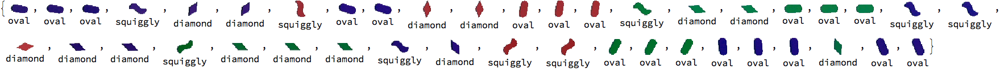
Gather feature vectors
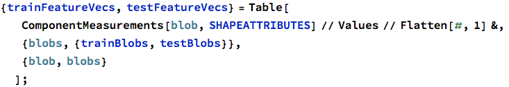


Plot training and test sets


Train classifier
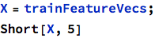

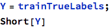

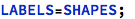


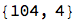
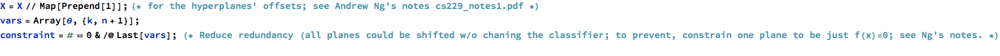


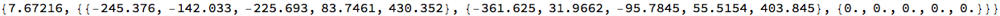
Examples

| shape | x=rectangularity etc | A*x | classified shape |
| {1,0.705561,0.525649,0.961538,0.88058} | {-4.74043,19.5778,0.} | oval | |
| {1,0.51032,0.3631,0.904762,0.817582} | {27.8106,0.31323,0.} | diamond | |
| {1,0.620569,0.455728,0.870229,0.791842} | {-22.7232,-17.347,0.} | squiggly |
Validation:

| image | shape stats | true | predicted |
| {0.705561,0.525649,0.961538,0.88058} | oval | oval | |
| {0.714978,0.539667,0.966527,0.888673} | oval | oval | |
| {0.711933,0.544339,0.96281,0.883971} | oval | oval | |
| {0.601687,0.413548,0.828571,0.79291} | squiggly | squiggly | |
| {0.515522,0.373147,0.961039,0.813598} | diamond | diamond | |
| {0.561538,0.417737,0.960526,0.860124} | diamond | diamond | |
| {0.631277,0.429324,0.781609,0.780505} | squiggly | squiggly | |
| {0.702756,0.54322,0.961977,0.888574} | oval | oval | |
| {0.708888,0.55952,0.958491,0.890328} | oval | oval | |
| {0.51032,0.3631,0.904762,0.817582} | diamond | diamond | |
| {0.508121,0.3631,0.888889,0.808189} | diamond | diamond | |
| {0.70309,0.551348,0.963265,0.889643} | oval | oval | |
| {0.718647,0.575406,0.967078,0.899936} | oval | oval | |
| {0.724509,0.565612,0.970588,0.900984} | oval | oval | |
| {0.603027,0.415597,0.8,0.771144} | squiggly | squiggly | |
| {0.536667,0.345686,0.947059,0.834969} | diamond | diamond | |
| {0.552083,0.369425,0.946429,0.848786} | diamond | diamond | |
| {0.781065,0.567796,0.977778,0.91468} | oval | oval | |
| {0.784024,0.569947,0.974265,0.916411} | oval | oval | |
| {0.807692,0.57836,0.992727,0.930141} | oval | oval | |
| {0.620569,0.455728,0.870229,0.791842} | squiggly | squiggly | |
| {0.613078,0.433972,0.869732,0.776643} | squiggly | squiggly | |
| {0.501897,0.359726,0.932515,0.79651} | diamond | diamond | |
| {0.525362,0.365584,0.947712,0.846014} | diamond | diamond | |
| {0.517361,0.335775,0.943038,0.824905} | diamond | diamond | |
| {0.581068,0.401325,0.8107,0.771076} | squiggly | squiggly | |
| {0.549407,0.339043,1.,0.832328} | diamond | diamond | |
| {0.570248,0.365295,1.,0.853363} | diamond | diamond | |
| {0.570248,0.365295,1.,0.849756} | diamond | diamond | |
| {0.592828,0.425771,0.803846,0.784146} | squiggly | squiggly | |
| {0.541958,0.378795,0.922619,0.841921} | diamond | diamond | |
| {0.60962,0.438328,0.820313,0.776181} | squiggly | squiggly | |
| {0.612613,0.442503,0.788104,0.773027} | squiggly | squiggly | |
| {0.707744,0.539281,0.945098,0.891947} | oval | oval | |
| {0.70187,0.534805,0.944664,0.888238} | oval | oval | |
| {0.704807,0.543732,0.944882,0.890094} | oval | oval | |
| {0.736264,0.567767,0.950355,0.918046} | oval | oval | |
| {0.733516,0.555482,0.943463,0.907918} | oval | oval | |
| {0.741823,0.572004,0.9375,0.904698} | oval | oval | |
| {0.555556,0.371749,0.987654,0.851451} | diamond | diamond | |
| {0.713693,0.540691,0.958763,0.882272} | oval | oval | |
| {0.708978,0.527836,0.962069,0.885473} | oval | oval |
Play Set

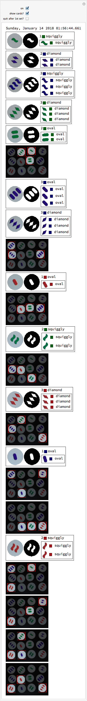